应用创意
面向物联网工程专业的跨学科创新项目实现思路（覆盖感知 · 网络 · 嵌入式 · 云平台 · 移动端）

查看 PlantUML 源码
@startuml
skinparam defaultFontName "Microsoft YaHei"
skinparam rectangleRoundCorner 8
skinparam rectangleBorderColor #555
skinparam rectangleFontSize 13
skinparam arrowFontSize 11
skinparam arrowColor #333
left to right direction
rectangle "市电 220V" as mains #f5f5f5
rectangle "继电器\n通断控制" as relay #ffe6cc
rectangle "PZEM-004T\n电能计量" as pzem #d5e8d4
rectangle "ESP32 主控" as esp #dae8fc
rectangle "OLED/按键\n本地交互" as oled #f8cecc
rectangle "MQTT/云\n(EMQX/OneNET)" as mqtt #e1d5e8
rectangle "手机 APP\n微信小程序" as app #f8cecc
mains --> relay
mains --> pzem
relay --> esp
pzem --> esp : :UART
esp --> oled : :I2C
esp --> mqtt : :WiFi
mqtt --> app
@enduml项目背景与应用场景
插座是智能家居的最小单元，也是用电安全风险最高的点位：老旧住宅线路过载、电热设备忘关、待机耗电（约占家庭用电 5%~10%）都发生在插座上。本项目面向家庭与宿舍场景，把"远程通断"升级为"可计量的用电安全终端"。
系统总体设计
感知层（PZEM-004T 电压/电流/功率/电量）→ 控制层（ESP32 决策：指令执行、过载保护、状态上报）→ 执行层（继电器 10A/16A 规格选型）→ 交互层（OLED+按键本地显示）→ 云层（MQTT + APP）。
硬件组成
ESP32 主控 + 单路/多路继电器模块 + PZEM-004T 电能计量 + OLED 显示屏 + 物理按键 + 外壳。
实现方案
- 方案 A（直连 MQTT）：ESP32 连接家庭路由器，订阅 MQTT 主题，手机 APP/微信小程序发布开断指令；PZEM-004T 经 UART 上报电压电流功率与累计电量。适合单点家庭使用，成本低、实现简单。
- 方案 B（平台+本地保护）：在方案 A 基础上接入 OneNET/EMQX 云平台做用电画像，并加入本地过载保护（功率超阈值立即断继电器）与断网状态缓存，保证安全可靠与断网兜底。
详细实施步骤
- 第 1 步 强电安全设计与选型：继电器选 16A/250VAC（如宏发 HF115F）并留 50% 余量，禁止用 10A 规格带 2kW 以上负载；PCB 强电区爬电距离 ≥3 mm，压接端子不焊锡；外壳用 V0 阻燃材料。安全设计部分必须在大创报告单列成节。
- 第 2 步 计量电路接入：PZEM-004T v3 经 UART 与 ESP32 通信（Modbus-RTU 协议），读取周期 2 s；上电自校验，通信连续失败 3 次自动断开负载并告警；电能累计值写入 NVS 每小时持久化一次，防掉电丢失。
- 第 3 步 本地保护逻辑：过载保护：功率 >2200 W 持续 5 s 立即断开并锁存故障（需按键复位），比云端下发更快更可靠；欠压(<187V)/过压(>242V)告警可选；温度传感器（NTC 贴继电器端子）>70℃ 强制断电，防止端子松动发热起火。
- 第 4 步 MQTT 与断网策略：主题 smartplug/{dev}/state（QoS1，保留位 retained）与 /cmd；断网时本地策略照常执行，指令缓存 20 条、恢复后回放；用 LWT（遗嘱消息）让 APP 感知插座离线。
- 第 5 步 APP 与用电画像：小程序/APP 显示实时功率曲线（1 min 粒度）、日/月电量柱图；支持定时、倒计时关闭、功率阈值告警；按电器类型打标（热水器/ heater）后统计分类用电占比。
- 第 6 步 老化与安规测试：满载 2.2 kW 连续运行 8 h 温升记录（继电器端子 ΔT<40K）；继电器 1 万次通断寿命抽测；待机功耗 <0.5 W 实测。数据全部进报告，不做无依据宣称。
关键技术点
- PZEM-004T Modbus-RTU 帧解析与 CRC 校验、2 s 轮询节拍设计
- 本地过载/过温锁存保护：不依赖网络的安全兜底，故障需人工复位
- retained 消息 + LWT 实现设备在线状态与最新状态同步
- 电能累计 NVS 持久化与掉电续记
- 强电 PCB 爬电距离、阻燃外壳与 16A 余量选型等安规要点
难点与对策
- 强电操作安全隐患 → 全程断电接线、绝缘测压后再上电；PCB 由有经验者审图；演示负载用热水壶等可控电器，不接不明负载
- 继电器频繁通断缩短寿命 → 大功率负载改用固态继电器或限制自动通断频率；定时类指令做合并
- 计量芯片个体误差 → 用标准功率计（或钳形表）在 3 个功率点对比校准，误差 >2% 的模块弃用
- WiFi 弱信号掉线 → 断网本地策略兜底；必要时 ESP32 外接 IPEX 天线改善
软件流程
初始化 → 连 WiFi/MQTT → 循环读 PZEM 电量 → 监听 MQTT 指令与本地按键 → 控制继电器 → 过载判断 → 上报云端。
创新点与拓展
创新点：把"远程开关插座"升级为带本地过载/过温双保护、可计量、可画像的安全终端；保护逻辑完全本地化（不依赖云端时延），并用温升/寿命实测数据支撑可靠性结论。
拓展方向：扩展多插座组网形成全屋用电画像；接入分时电价做峰谷策略；对接"宿舍用电安全"管理场景可向学校后勤推广。
课程对接：单片机原理及应用、传感器与检测技术实验、嵌入式Linux应用开发、移动应用开发、云计算导论

查看 PlantUML 源码
@startuml
skinparam defaultFontName "Microsoft YaHei"
skinparam rectangleRoundCorner 8
skinparam rectangleBorderColor #555
skinparam rectangleFontSize 13
skinparam arrowFontSize 11
skinparam arrowColor #333
left to right direction
rectangle "灯/插座/锁\n温湿度" as dev #d5e8d4
rectangle "ZigBee 协调器" as z #fff2cc
rectangle "网关\n(树莓派)" as gw #dae8fc
rectangle "云平台" as cloud #e1d5e8
rectangle "APP/语音" as app #f8cecc
rectangle "路由器" as r #fff2cc
dev --> z
z --> gw
gw --> r : :WiFi
gw --> cloud
cloud --> app
gw --> app : :局域网
@enduml项目背景与应用场景
家庭里灯光一个 APP、窗帘一个 APP、空调又一个遥控器，设备孤岛是智能家居最大痛点。本项目做"家庭设备的中枢大脑"：统一接入 ZigBee/WiFi/红外 三类协议设备，提供场景联动与语音入口，是物联网工程专业知识的集大成项目。
系统总体设计
接入层（ZigBee 协调器 CC2652 + WiFi 自研设备 + 红外学习模块）→ 中控层（树莓派/Home Assistant 或自研 Python 网关）→ 规则引擎（场景/自动化/时间表）→ 交互层（触屏面板、语音、手机 APP）→ 云层（远程访问与日志）。
硬件组成
网关（树莓派/ESP32） + ZigBee 协调器 + 多类子设备（灯/插座/门锁/温湿度） + 路由器 + 云平台 + APP。
实现方案
- 方案 A（本地网关）：树莓派作家庭网关，经 ZigBee 汇聚子设备，本地规则引擎联动（如温度高自动开风扇），断网仍可本地运行。
- 方案 B（云边协同）：在方案 A 上接入云平台做远程查看/语音助手对接，边缘侧保留关键联动，云端做大数据与多端同步。
详细实施步骤
- 第 1 步 协议接入规划：ZigBee：CC2652P 协调器 + zigbee2mqtt 接入传感器与开关（选主流品牌避免私有协议踩坑）；WiFi：自研 ESP32 子设备（灯/插座）直连 MQTT；红外：万能红外学习模块（如 RM4mini 原理）控制空调/电视。画出全屋设备-协议清单。
- 第 2 步 中控网关搭建：树莓派 4B 装 Home Assistant（或自研：Python + paho-mqtt + SQLite）；统一设备模型（实体ID、状态、能力集），三类协议设备映射到同一模型；配置备份与断电自动恢复。
- 第 3 步 规则引擎实现：场景：回家（门锁开+人感触发→灯/空调）、离家（一键关闭+安防布防）、观影（窗帘+灯+电视联动）；自动化用"触发-条件-动作"三元组描述并可视化编辑；规则冲突检测（同设备多规则互斥）要有明确优先级。
- 第 4 步 语音入口：接入小爱/小度音箱或自研：ESP32-S3 + ESP-SR 离线唤醒 + 云端 ASR 意图解析为 HA API 调用；高频指令本地词表兜底（开/关/亮度），网络故障时语音仍可用。
- 第 5 步 触屏中控面板：旧平板/4寸屏装面板页（HA Dashboard）：全屋状态、场景按钮、温控盘、摄像头画面；嵌入门厅墙面做"真中控"演示。
- 第 6 步 稳定性长测与文档：7×24 h 运行两周：统计自动化误触发率、掉线设备数、恢复成功率；输出《全屋设备接入指南》与规则配置文档，形成可复制的交付物。
关键技术点
- zigbee2mqtt 设备接入与设备统一模型抽象（能力集描述）
- "触发-条件-动作"规则引擎与规则优先级/冲突处理
- 红外码库学习与空调码的温控映射（16-30℃/模式/风速）
- 离线唤醒+云端意图解析的两级语音链路
- HA 备份恢复与 7×24 稳定性量化评估方法
难点与对策
- ZigBee 设备私有协议不兼容 → 只选 zigbee2mqtt 支持列表内的主流型号；采购前逐型号核对
- 自动化误触发（人感误报） → 多条件组合（人感+光照+时段）降低误触发；记录误触发日志持续调参
- 中控单点故障 → 关键规则下沉到 ESP32 子设备本地执行（灯开关不依赖中控）；中控故障仅损失联动
- 红外空调控制不精确 → 温度/风速用反馈（温度传感器实测）闭环校正，而非盲发红外码
软件流程
子设备采集 → ZigBee 上报网关 → 本地规则引擎 → 执行联动 → 同步云端 → APP/语音控制。
创新点与拓展
创新点：三类协议统一接入 + 规则冲突显式处理；"关键功能本地化、联动云端化"的分层可靠性设计；用两周长测的误触发率/恢复率数据替代功能演示，工程严谨性突出。
拓展方向：接入 Matter 协议顺应标准趋势；扩展能耗管理（全屋分时策略）；适合作为毕设级项目或智能家居方向竞赛整机。
课程对接：物联网工程导论、无线传感器网络、网络基础、嵌入式Linux应用开发、移动应用开发、云计算导论

查看 PlantUML 源码
@startuml
skinparam defaultFontName "Microsoft YaHei"
skinparam rectangleRoundCorner 8
skinparam rectangleBorderColor #555
skinparam rectangleFontSize 13
skinparam arrowFontSize 11
skinparam arrowColor #333
left to right direction
rectangle "指纹/RFID" as fp #d5e8d4
rectangle "STM32" as stm #dae8fc
rectangle "电磁锁" as lock #ffe6cc
rectangle "蜂鸣器" as buzz #ffe6cc
rectangle "ESP8266" as esp #fff2cc
rectangle "云日志" as cloud #e1d5e8
fp --> stm
stm --> lock
stm --> buzz
stm --> esp
esp --> cloud
@enduml项目背景与应用场景
门是家庭安防的第一道关口：撬门、尾随、忘关门、快递代收场景都有真实需求。本项目做"门的全状态感知+多方式开启+异常告警"系统，与《低成本模块化易改造智能门锁》区分：本项目侧重"安防感知与告警"，门锁侧重"锁体控制"。
系统总体设计
感知层（门磁+人体感应+门内摄像头+振动传感器）→ 控制层（ESP32：状态机+本地报警）→ 开启层（指纹/RFID/机械钥匙三通道）→ 通信层（WiFi+云）→ 应用层（APP 告警推送、开锁记录、临时密码）。
硬件组成
STM32 + 指纹模块 + RFID 读卡 + 电磁锁 + 摄像头(可选) + 蜂鸣器 + OLED + ESP8266。
实现方案
- 方案 A（本地识别）：指纹/RFID 本地比对开门，异常触发蜂鸣器与 OLED 告警，断网可用，适合宿舍/实验室。
- 方案 B（云记录+视频）：在方案 A 上加 ESP8266 上云记录开门日志、推送异常告警，可选摄像头抓拍，形成可追溯安防。
详细实施步骤
- 第 1 步 门状态全感知：干簧管门磁（开/关）+ 震动传感器（SW-420，撬门敲击检测）+ 门内 PI 人感（区分"人进门"与"风开门"）；三信号组合判断：开门无人在场且系统布防 → 高优先级告警。
- 第 2 步 开启通道整合：AS608 光指纹模块（UART）存 10 组指纹；RC522 RFID 做备用卡；电磁锁/舵机锁舌驱动；机械钥匙保留（安全兜底，不做全电子化——客观说明全电子锁断电即失效的风险）。
- 第 3 步 布防与告警状态机：在家/离家/夜间三种模式；离家布防后：开门无指纹验证 10 s → 本地声光报警 + APP 推送 + 拍照上传；夜间模式：门内开启不告警（避免误报）；所有状态迁移留痕。
- 第 4 步 临时密码与远程授权：云端生成限时临时密码（给保洁/访客，2 h 有效）；APP 实时查看门状态与开锁记录（时间/方式/人员）；开锁照片本地 SD 循环存储，云端只存告警事件图（隐私最小化）。
- 第 5 步 可靠性与防拆：检测外壳开启（防拆开关）触发告警；断电时超级电容维持 30 s 上报"断电事件"；门磁/震动信号做防抖与联合判决，误报率实测 <1 次/周。
- 第 6 步 演示与测试：模拟撬门/尾随/忘关门三类事件做响应时延测试（本地报警 <1 s，推送 <5 s）；两周试用统计误报/漏报并持续调参。
关键技术点
- 门磁+震动+人感三信号联合判决的防误报状态机
- AS608 指纹录入/1:N 识别与本地验证（不依赖网络）
- 限时临时密码的云端生成与端侧验证机制
- 告警事件拍照：本地 SD 循环存储 + 云端仅存告警图（隐私最小化）
- 断电超级电容兜底上报与防拆检测
难点与对策
- 误报率高导致用户关闭告警 → 三信号联合判决+模式区分；误报率作为核心 KPI 每周统计
- 电子开启通道失效 → 保留机械钥匙；锁体选断电可手动开启的失电型电磁锁
- 摄像头隐私争议 → 仅门内侧摄像头；人形区域外做遮挡；云端只存告警帧并注明留存期
- WiFi 断网告警失效 → 本地声光报警独立于网络；可选 GSM 模块做关键告警第二条通道
软件流程
采集指纹/卡 → 本地比对 → 驱动电磁锁 → 记录日志 → 异常告警 → 云端同步。
创新点与拓展
创新点：三信号联合判决显著降低单一传感器误报；临时密码与开锁记录的完整审计链；隐私最小化存储设计（本地循环+云端告警帧）体现真实产品思维。
拓展方向：接入门铃可视对讲；与社区物业平台对接形成联防；撬门震动波形可做简单机器学习分类提升判别力。
课程对接：单片机原理及应用、传感器与检测技术实验、嵌入式Linux应用开发、数据库系统原理、移动应用开发

查看 PlantUML 源码
@startuml
skinparam defaultFontName "Microsoft YaHei"
skinparam rectangleRoundCorner 8
skinparam rectangleBorderColor #555
skinparam rectangleFontSize 13
skinparam arrowFontSize 11
skinparam arrowColor #333
left to right direction
rectangle "键盘/指纹" as kp #d5e8d4
rectangle "MCU" as mcu #dae8fc
rectangle "电机锁体" as motor #ffe6cc
rectangle "蓝牙" as bt #fff2cc
rectangle "锂电" as batt #f5f5f5
kp --> mcu
mcu --> motor
mcu --> bt
batt --> mcu
@enduml项目背景与应用场景
市面智能锁 800~3000 元，且很多租房用户不允许换锁体。本项目定位"不改锁体、即插即用"：在原机械锁内侧加装模块化驱动套件（内把手电机/锁扣辅助），成本控制在 150 元内，适配市面 80% 的常见机械锁型。
系统总体设计
执行层（N20 减速电机+齿轮组推动内把手或斜舌）→ 控制层（ESP32-C3：开锁指令/电机电流检测）→ 验证层（指纹/蓝牙手机授权）→ 供电层（4 节 5 号电池，8~12 个月续航目标）→ 云层（开锁记录+临时授权）。
硬件组成
低功耗 MCU + 密码键盘/指纹模组 + 电机锁体 + 蓝牙 + 锂电池 + 模块化外壳（可后装）。
实现方案
- 方案 A（后装改造）：不换原门锁，外加模块驱动锁舌，密码/蓝牙开锁，适合租房与旧门改造。
- 方案 B（临时授权）：在方案 A 上加临时密码与开锁日志上云，访客可远程授权。
详细实施步骤
- 第 1 步 锁体调研与适配设计：实测 3 种常见机械锁（球形锁/老式执手锁/防盗门副锁）内把手行程与力矩（用弹簧秤测，典型 <15 N·m）；设计 3D 打印适配支架 + N20 电机（减速比 1:99，堵转力矩实测）；支架不破坏原锁（螺丝顶撑固定）。
- 第 2 步 电机驱动与堵转保护：DRV8833 驱动；开锁行程用电流判据：电机堵转电流突增 30% 判定到位即停（避免行程开关）；堵转保护 1.5 s 超时自动停并记录故障；低温润滑脂减少冬季阻力变化。
- 第 3 步 低功耗设计：ESP32-C3 深度睡眠（10 μA 级），指纹模块待机断电、触摸唤醒；平均电流目标 <0.5 mA，4 节 5 号（≈2000 mAh）续航 6~12 个月，实测验证；电量低提前 APP 告警。
- 第 4 步 验证与开锁链路：AS608 指纹（本地 1:N）；手机 BLE 授权（ESP32-C3 蓝牙，AES 加密会话）；机械钥匙永远可用（外侧完全不动）；开锁记录经 WiFi 上云（回家连网补传）。
- 第 5 步 模块化与安装体验：模块分三层：驱动层/控制层/电源层可独立更换；免工具安装（手拧螺丝）目标 10 min 装完；提供 3 种锁型适配支架的 STL 开源文件。
- 第 6 步 寿命与安全测试：开锁 5000 次老化（记录电机衰减）；断电测试（电池耗尽仍可机械开锁）；抗拆外壳；说明书含"停电/故障应急流程"。
关键技术点
- 电机电流判据的开锁到位检测（免行程开关）与堵转保护
- 深度睡眠+外设分时供电把整机待机压到 0.5 mA 级
- BLE 授权会话的 AES 加密与重放攻击防护
- 3D 打印适配支架的非破坏安装设计（多锁型兼容）
- 断电永远可机械开启的安全底线设计
难点与对策
- 锁型适配差异大 → 先聚焦 2~3 种主流锁型做深，不宣称全兼容；开源支架文件邀请社区扩展
- 电池冬季容量衰减 → 锂电池低温衰减严重 → 选碱性电池并实测 0℃ 容量；报告中如实标注
- 电机老化后力矩不足 → 老化测试数据支撑电机选型余量（实测堵转力矩 2 倍于需求）
- 安全性质疑（电子开锁被破解） → BLE 会话加密+授权时效；明确产品定位为"便利层"，原锁安全性不降低
软件流程
输入/蓝牙 → 校验 → 电机驱动锁舌 → 记录 → 上云日志。
创新点与拓展
创新点："不换锁体、免工具安装、150 元成本"的租房友好定位；电流判据替代行程开关降低成本与装配难度；三层模块化 + STL 开源形成可扩展生态，契合开源硬件社区传播。
拓展方向：对接共享租房场景（换租客免换锁，云端撤销授权）；增加 Zigebee/Thread 接入智能家居生态；成本结构可发表低成本硬件设计案例。
课程对接：单片机原理及应用、数字逻辑、嵌入式Linux应用开发、移动应用开发

查看 PlantUML 源码
@startuml
skinparam defaultFontName "Microsoft YaHei"
skinparam rectangleRoundCorner 8
skinparam rectangleBorderColor #555
skinparam rectangleFontSize 13
skinparam arrowFontSize 11
skinparam arrowColor #333
left to right direction
rectangle "麦克风" as mic #d5e8d4
rectangle "LD3320\n语音识别" as ld #d3e0ea
rectangle "STM32F407" as stm #dae8fc
rectangle "PWM 调光 LED" as led #ffe6cc
rectangle "OLED 显示" as oled #f8cecc
rectangle "BH1750\n环境光" as bh #d5e8d4
mic --> ld
ld --> stm : :SPI
stm --> led : :PWM
stm --> oled : :I2C
bh --> stm : :I2C
@enduml项目背景与应用场景
学生学习场景对台灯的核心诉求是"够亮、不频闪、免动手"：写作业时双手被占用，语音控制是刚需；而读写台灯的国AA级照度与频闪标准（GB/T 9473）多数项目根本不提。本项目把语音控制与光学生理指标做扎实。
系统总体设计
交互层（离线语音/手势/触摸三通道）→ 控制层（STM32 命令解析与调光策略）→ 驱动层（高频 PWM 恒流）→ 光学层（LED 灯板 + 照度反馈闭环）→ 显示层（OLED 状态）。
硬件组成
STM32F103 + ASRPRO/SU-03T 离线语音模块（推荐，替代资料陈旧、识别率一般的 LD3320）+ PWM 恒流调光驱动（DC-DC 降压 + NMOS，12V LED 灯板）+ BH1750 照度计 + OLED + 触摸键 + 手势传感器（PAJ7620 可选）。
实现方案
- 方案 A（离线命令词控制）：ASRPRO 预置"开灯/关灯/亮一点/暗一点/阅读模式/夜灯模式"等命令词，UART 输出给 STM32 执行 PWM 调光；无需联网、0.8 s 内响应；离线方案隐私友好且无月费。
- 方案 B（照度闭环+坐姿提醒）：在方案 A 基础上用 BH1750 做照度闭环：以桌面中心 30 cm 处 ≥300 lx（AA 级）为目标自动补偿环境光变化；加入坐姿提醒（超声波测头-桌面距离 <25 cm 持续 30 s 蜂鸣提示），从"台灯"升级为"学习光环境管家"。
详细实施步骤
- 第 1 步 调光驱动与频闪控制：12V 灯板 + MOS 管高频 PWM（≥20 kHz，超出人眼与相机可感知频闪范围）；恒流源设计保证亮度-颜色稳定；实测示波器纹波与手机慢动作验证"无频闪"宣称，报告给出波形图。
- 第 2 步 离线语音配置：ASRPRO 用官方图形化工具配置命令词与识别模型（替代方案 SU-03T 同理）；麦克风拾音距离实测（1 m/2 m/3 m 安静与播放音乐背景下的识别率表格）；误唤醒率测试（24 h 挂机统计）。
- 第 3 步 STM32 主控逻辑：UART 中断接收语音命令帧；亮度 0~100% 映射 PWM 占空比并做伽马校正（人眼感知线性化）；软启动：亮度变化斜率限制避免突变刺眼；命令词→模式映射（阅读 500 lx/休闲 300 lx/夜灯 10 lx）。
- 第 4 步 照度闭环（方案 B）：BH1750 高分辨率模式 1 lx；闭环目标按模式设定（阅读 500 lx@桌面），PI 调节占空比；标定：照度计专业表对比 BH1750 读数，误差 <8%；报告按 GB/T 9473 测试点位说明（灯下同心圆测点）并如实给数据。
- 第 5 步 手势与触摸交互：PAJ7620 手势（上/下/悬停切换亮度，擦手灰尘误触发实测）；触摸键做模式切换；三通道交互（语音/手势/触摸）优先级与互斥处理。
- 第 6 步 坐姿提醒与报告：超声波测头部-桌面距离（过滤手部干扰：连续 30 s 低距离才触发）；综合形成《光学指标实测报告》：照度均匀度、频闪波形、识别率、误唤醒率，客观呈现优缺点。
关键技术点
- ≥20 kHz PWM 恒流调光的频闪消除与示波器验证方法
- ASRPRO 离线命令词配置、识别率-距离-噪声实测方法学
- 亮度伽马校正与人眼感知线性化
- 照度 PI 闭环对标 GB/T 9473 AA 级的测试点位与标定
- 三通道交互（语音/手势/触摸）的优先级仲裁
难点与对策
- LD3320 方案陈旧 → 改用 ASRPRO/SU-03T（一体化、有现成图形化配置工具）；原 LD3320 方案作为技术对比写入背景
- 语音在嘈杂教室失效 → 明确适用场景为个人书桌（1 m 内）；双麦降噪模块可选；识别率按信噪比分档如实报告
- 照度闭环震荡（灯自身光被照度计捕捉形成回路） → 照度计安装位置避开灯直射角+采样滤波；整定 PI 参数
- 超声波坐姿检测误报 → 只做提醒不强制；连续时长+距离双条件；用户可一键关闭
软件流程
语音唤醒与识别（离线）→ UART 命令解析 → PWM 占空比调整（软启动防闪）→ 照度闭环微调 → OLED 显示模式/亮度/照度 → 坐姿监测（可选）→ 数据记录。
创新点与拓展
创新点：不回避 LD3320 已过时的事实并给出 ASRPRO 替代选型；把台灯从"调光"提升到"照度闭环对标国标 AA"并用专业测试点位出数据；坐姿提醒作为人因扩展，是少数做"光学生理指标"的学生项目。
拓展方向：接入智能家居中控（本项目另一条目）形成全屋光环境；色温可调（双色 LED 混光）扩展护眼模式；光学实测方法可整理为教学实验案例。
课程对接：单片机原理及应用、电路与电子技术、数字逻辑、传感器与检测技术实验、C++程序设计

查看 PlantUML 源码
@startuml
skinparam defaultFontName "Microsoft YaHei"
skinparam rectangleRoundCorner 8
skinparam rectangleBorderColor #555
skinparam rectangleFontSize 13
skinparam arrowFontSize 11
skinparam arrowColor #333
left to right direction
rectangle "麦克风" as mic #d5e8d4
rectangle "离线语音" as asr #d3e0ea
rectangle "STM32" as stm #dae8fc
rectangle "蓝牙音频" as bt #fff2cc
rectangle "WS2812\n氛围灯" as led #ffe6cc
rectangle "防水喇叭" as spk #ffe6cc
mic --> asr
asr --> stm
stm --> bt
stm --> led
stm --> spk
@enduml项目背景与应用场景
浴室场景的特殊性在于"湿手不能碰电器"与"镜面雾气"：语音控制天然适配，但 bathroom 环境对设备防水、湿度传感、通风联动提出了真实工程约束。本项目围绕这些约束做系统设计。
系统总体设计
感知层（SHT30 湿度/温度 + 人体感应 + 光照）→ 控制层（ESP32）→ 执行层（浴霸/灯/排风扇继电器+红外）→ 语音层（离线语音模块，防水麦克风）→ 云层（远程预热/排风延时）。
硬件组成
STM32 + 离线语音模块 + 防水扬声器 + 蓝牙音频 + 氛围灯(WS2812) + 功放。
实现方案
- 方案 A（离线语音歌单）：离线语音指令切歌/调音量，蓝牙接入手机播放，氛围灯随节奏变化，无需联网。
- 方案 B（云端曲库）：在方案 A 上接入网络音乐服务与语音点歌，增加防水触控与定时关闭，体验更完整。
详细实施步骤
- 第 1 步 防水与环境评估：设备安装分区：GB 16895.13 浴室分区（0/1/2 区）概念引入——控制盒装 2 区外（淋浴水花直溅区外），麦克风选防水咪头或置于镜柜内；IP65 接线盒；项目报告必须含"浴室电气安全"专节。
- 第 2 步 语音链路：ASRPRO 离线命令词："开灯/关灯/打开浴霸/加热到 26 度/开排风/我要洗澡"（场景命令：我要洗澡 = 灯 100%+浴霸 26℃+排风低速）；浴室混响大 → 麦克风靠近使用位安装，识别率实测（冷/热水汽两种工况）。
- 第 3 步 湿度联动除雾：SHT30 实测湿度 >85% RH 自动加速排风；"除雾"命令：排风全速+（可选）镜面加热膜低压供电 5 min；湿度曲线与除雾时间实测记录。
- 第 4 步 浴霸与安全联锁：浴霸经继电器/接触器控制，功率 2 kW+ 走独立回路模拟；安全联锁：洗浴中（湿度>85%）禁止开启非取暖电器插座；浴霸过温保护（NTC >90℃ 断电）；有人无人的排风延时关机（人走后 10 min）。
- 第 5 步 远程与预热：出门回家路上 APP"预热浴室"：浴霸定时 15 min 后自动关；忘关检测：离家后检测到大功率电器运行 → 推送告警+一键远程关闭。
- 第 6 步 长期运行验证：连续 2 周家庭使用：湿度联动触发准确率、语音识别率（干/湿工况）、误唤醒统计；安全项复查（温升/绝缘摇表 500V 测试绝缘电阻）。
关键技术点
- 浴室电气分区安装与 IP65 防护设计（GB 16895.13 分区概念）
- 离线语音在混响+水汽环境的命令词调优与两工况实测
- 湿度驱动的排风/除雾联动与延时关机逻辑
- 大功率浴霸的继电器/接触器选型与过温联锁
- 场景化命令（一句话多设备联动）的规则配置
难点与对策
- 浴室用电安全（项目最大风险） → 低压区隔离、漏保演示配合、控制设备全部置于 2 区外；报告设安全专节并请指导教师审图
- 水汽导致语音识别下降 → 防水咪头+镜柜内安装；实测湿工况识别率数据，不回避性能下降
- 湿度传感器凝露失效 → SHT30 加防凝露涂层或 PTFE 防水透气膜；凝露后恢复时间实测
- 浴霸红外码适配 → 不同品牌浴霸码库实测适配；不支持的改继电器直控（走安全分区）
软件流程
语音指令 → 解析 → 控制播放/灯光 → 蓝牙/网络音源 → 反馈。
创新点与拓展
创新点：把"浴室电气安全分区"这一真实工程约束作为设计主线而非免责声明；语音+湿度双联动的"我要洗澡"场景化命令体验完整；湿/干双工况识别率实测数据诚实呈现。
拓展方向：接入全屋中控成为浴室子系统；镜面显示（浴室镜条屏显示天气/日程）；除雾加热膜的温控设计可单独深化。
课程对接：单片机原理及应用、数字逻辑、电路与电子技术、嵌入式Linux应用开发、算法分析与设计

查看 PlantUML 源码
@startuml
skinparam defaultFontName "Microsoft YaHei"
skinparam rectangleRoundCorner 8
skinparam rectangleBorderColor #555
skinparam rectangleFontSize 13
skinparam arrowFontSize 11
skinparam arrowColor #333
left to right direction
rectangle "人体存在\n雷达" as radar #d5e8d4
rectangle "温湿/CO" as gas #d5e8d4
rectangle "ESP32" as esp #dae8fc
rectangle "智能镜\n显示" as mirror #f8cecc
rectangle "WiFi" as wifi #fff2cc
radar --> esp
gas --> esp
esp --> mirror
esp --> wifi
@enduml项目背景与应用场景
老人浴室跌倒是最危险的居家事故之一（我国每年约有 4000 万以上老人至少跌倒一次，浴室占比高）。本项目把"智能镜"定位为浴室安全终端：跌倒检测+紧急呼叫+防滑提示，知识娱乐作为附加价值。
系统总体设计
感知层（毫米波雷达 LD2420 跌倒检测 + 紧急按钮拉绳 + 湿度/温度）→ 处理层（ESP32：跌倒算法+本地报警）→ 显示层（镜面后置 LCD：安全提示/知识/天气）→ 云层（家属推送+通话）→ 供电（隔离安全电源）。
硬件组成
ESP32 + 人体存在雷达 + 温湿度/CO 传感器 + 半透镜显示屏 + 语音模块 + WiFi。
实现方案
- 方案 A（安全监测镜）：浴室镜面显示温湿度与时间，雷达检测久滞触发告警，CO 超标声光提醒，保障沐浴安全。
- 方案 B（娱乐+科普）：在方案 A 上叠加"知识/新闻"推送与轻娱乐内容，结合课程思政科普（如节水节能），提升体验。
详细实施步骤
- 第 1 步 跌倒检测选型：摄像头方案在浴室有严重隐私问题——明确排除；选毫米波雷达（LD2420/24GHz）：只输出目标距离/多普勒特征无图像，隐私友好；实测跌倒（假人/志愿者软垫保护）检出率与误报（弯腰洗漱/坐下）区分是核心难点，如实报告混淆矩阵。
- 第 2 步 报警与取消机制：疑似跌倒 → 镜面显示倒计时 30 s"您还好吗？"→ 语音确认/按钮取消 → 未取消则本地大音量报警 + 推送家属（含事件时间线）+（可选）自动拨号；误报取消流程必须 10 s 内可完成（否则老人会关机）。
- 第 3 步 紧急呼叫通道：防水拉绳按钮（浴室标配的物理兜底，不依赖算法）；按下即触发与"跌倒"同级的告警链路；两通道独立，任何一路失效另一路可用。
- 第 4 步 镜面显示系统：单向镜玻璃 + 后置 LCD：待机显示时间/天气，有人进入切安全模式（防滑提示/水温提示）；内容管理走云端下发；浴室湿度对屏幕寿命的影响用防雾膜+密封壳处理。
- 第 5 步 适老化设计：显示字号 ≥28pt、高对比度；语音播报语速可调；提示音用和弦而非刺耳蜂鸣；按键大且支持长按；请老年志愿者参与可用性测试（任务完成率/主观评分）。
- 第 6 步 数据与报告：4 周家庭部署：跌倒检出/误报统计、紧急响应演练时延、老人满意度；与未安装对照期的"浴室停留异常"发现时间对比。
关键技术点
- 毫米波跌倒检测：多普勒特征阈值/轻量模型，隐私友好（无摄像头）
- "倒计时确认-取消"机制平衡检出率与误报骚扰
- 算法+物理拉绳双通道紧急呼叫的冗余设计
- 单向镜+LCD 的镜面显示集成与防雾密封工艺
- 适老化交互设计原则与老年用户可用性测试方法
难点与对策
- 跌倒检测误报（洗漱弯腰常见动作） → 误报率是核心 KPI：软垫实测采集 200+ 次正常动作与跌倒样本；混淆矩阵公开；阈值宁可漏报少误报（配合拉绳兜底）并明示取舍
- 家属推送被忽视 → 分级告警（推送→电话→紧急联系人轮询）；演示对接电话通道
- 电子设备在浴室的安全 → 全设备隔离电源+2 区外安装+漏保配合；无 220V 裸露
- 老人抵触新设备 → 适老化测试迭代；安装可退（不改造原浴室）；试用阶段免费安装降低心理门槛
软件流程
雷达/气体采集 → 安全判定 → 镜面显示 → 异常告警 → 联网获取资讯内容。
创新点与拓展
创新点：用毫米波雷达替代摄像头解决浴室隐私死结；"倒计时确认"交互降低误报骚扰同时保住高检出场景；物理拉绳与算法双通道冗余是真实适老产品的设计逻辑。
拓展方向：跌倒特征数据积累后上轻量 ML 模型提升区分度；接入社区养老服务平台的联防联控；镜面内容生态（健康提醒/用药提醒）扩展。
课程对接：单片机原理及应用、传感器与检测技术实验、嵌入式Linux应用开发、国产平台web应用开发、人工智能导论

查看 PlantUML 源码
@startuml
skinparam defaultFontName "Microsoft YaHei"
skinparam rectangleRoundCorner 8
skinparam rectangleBorderColor #555
skinparam rectangleFontSize 13
skinparam arrowFontSize 11
skinparam arrowColor #333
left to right direction
rectangle "鞋位检测" as shoe #d5e8d4
rectangle "STM32" as stm #dae8fc
rectangle "烘干/杀菌" as dry #ffe6cc
rectangle "温湿度" as th #d5e8d4
rectangle "蓝牙" as bt #fff2cc
rectangle "手机APP" as app #f8cecc
shoe --> stm
stm --> dry
th --> stm
stm --> bt
bt --> app
@enduml项目背景与应用场景
鞋柜痛点具体而真实：异味（细菌滋生）、潮湿发霉、门口翻找、鞋类护理不当（皮鞋发霉/运动鞋受潮）。本项目用"消毒+烘干+存取管理"三功能组合切入，硬件门槛适中、演示性强。
系统总体设计
感知层（O3/臭氧浓度、温湿度、门磁、紫外线门联锁）→ 执行层（臭氧发生器/UV-C 灯、PTC 加热烘干、风扇）→ 控制层（STM32：安全联锁状态机）→ 管理层（RFID/NFC 鞋位标签 + APP 存取记录）→ 云层（使用统计）。
硬件组成
STM32 + 暖风烘干模块 + 紫外线/臭氧杀菌 + 温湿度传感器 + 蓝牙 + OLED + 鞋位检测。
实现方案
- 方案 A（自动养护）：放入鞋子后 STM32 自动启动烘干与杀菌，温湿度闭环控制，蓝牙推送状态到手机。
- 方案 B（APP 管理）：在方案 A 上加手机 APP 设定模式/定时与除味提醒，并统计使用频次。
详细实施步骤
- 第 1 步 柜体与气流设计：旧鞋柜改造或定制柜体：分区（消毒区/烘干区/常温区）；风道设计保证臭氧/热风循环均匀（烟饼气流测试）；柜门密封条减少臭氧泄漏。
- 第 2 步 消毒模块与安全联锁：UV-C 254nm 灯管或臭氧发生器（<10 g/h 家用级）二选一对比（臭氧残留衰减实测 vs UV 阴影盲区）；核心安全联锁：门磁检测柜门开启 → 0.5 s 内断 UV/臭氧 + 残余臭氧浓度检测 >0.1 ppm 禁止启动；联锁逻辑用硬件继电器串联实现而非纯软件（安全冗余）。
- 第 3 步 烘干模块：PTC 陶瓷加热 100W + 温控 55℃（鞋材耐温上限内：真皮 <60℃）；湿度传感器闭环：柜内 RH<50% 自动停止；定时+湿度双条件，防过烘。
- 第 4 步 存取管理：每格 NFC 标签（手机碰一碰写入鞋名/购买日期/护理记录）或柜内 RFID 盘点；APP 记录"哪双鞋在哪格、上次消毒时间"；换季提醒（3 个月未穿）。
- 第 5 步 效果实测：除味：感官评价小组（5 人双盲）+ 氨气传感器对比消毒前后；抑菌：与生物专业合作做柜内表面涂抹菌落计数（有条件就做，无条件则引用文献说明 UV-C/O3 杀菌参数依据）；烘干：运动鞋浸水后干燥时间对比自然晾干。
- 第 6 步 安全验证：臭氧泄漏：关门运行时柜外 10 cm 处浓度 <0.05 ppm 实测；UV 泄漏：紫外照度计柜外检测为 0；门开强制断电响应时间实测。
关键技术点
- UV-C/臭氧的杀菌参数依据（剂量=强度×时间）与文献支撑
- 硬件串联联锁（门磁+继电器硬回路）保障消毒模块安全
- PTC+湿度闭环的鞋材安全烘干（55℃ 上限防损伤皮面）
- 臭氧残留衰减曲线实测与启动门限设计
- NFC/RFID 存取管理与应用层记录联动
难点与对策
- 臭氧/紫外线泄漏安全（首要风险） → 硬件级联锁+泄漏实测数据；臭氧选低剂量并标注工作模式建议（无人消毒）
- 高温损伤鞋材 → 55℃ 上限+皮鞋分区控温；耐温标签提示
- 杀菌效果难量化 → 如实说明：无生物实验室条件时引用文献剂量依据+感官评价替代，不虚标"除菌率 99.9%"
- 臭氧异味残留 → 消毒后自动排风 10 min 换气程序
软件流程
放鞋检测 → 烘干杀菌 → 温湿闭环 → 蓝牙/APP 状态 → 完成提醒。
创新点与拓展
创新点：安全联锁用硬件硬回路而非纯软件；效果评估按"能做多少做多少、做不到就引用文献"的诚实路径；存取管理+护理记录让鞋柜从电器变成"鞋类管家"，差异化清晰。
拓展方向：联动入户门控（本项目另一条目）：回家换鞋自动烘干；扩展到鞋店样品柜管理；杀菌参数实验可发表应用型小论文。
课程对接：单片机原理及应用、传感器与检测技术实验、嵌入式Linux应用开发、移动应用开发

查看 PlantUML 源码
@startuml
skinparam defaultFontName "Microsoft YaHei"
skinparam rectangleRoundCorner 8
skinparam rectangleBorderColor #555
skinparam rectangleFontSize 13
skinparam arrowFontSize 11
skinparam arrowColor #333
left to right direction
rectangle "雨滴/光照\n传感器" as rain #d5e8d4
rectangle "STM32F103" as stm #dae8fc
rectangle "直流/步进\n电机" as motor #ffe6cc
rectangle "ESP8266" as esp #fff2cc
rectangle "云平台" as cloud #e1d5e8
rectangle "手机 APP" as app #f8cecc
rain --> stm
stm --> motor : :GPIO
stm --> esp : :UART
esp --> cloud
cloud --> app
@enduml项目背景与应用场景
晾衣是"看天吃饭"的家务：突降暴雨收衣不及、上班族白天无人在家。市售电动晾衣架只解决"升降省力"，本项目补上"天气自适应 + 远程控制 + 电机保护"的物联网能力。
系统总体设计
感知层（雨滴+光照+温湿度+风速可选）→ 决策层（STM32 状态机：晾出/收回/暂停）→ 执行层（直流减速电机+丝杆或同步带+限位开关×2）→ 通信层（WiFi 上云）→ 应用层（APP 远程+定时+天气 API 联动）。
硬件组成
STM32F103 + ESP8266 WiFi + 直流减速电机/步进电机 + 雨滴传感器 + 光敏/温湿度传感器 + 限位开关。
实现方案
- 方案 A（传感器联动）：雨滴/光照传感器触发 STM32 控制电机收衣晾晒；ESP8266 上报状态。逻辑简单，适合阳台改造。
- 方案 B（APP+定时）：在方案 A 上增加手机 APP 远程控制、定时晾晒与"遇雨自动收回"策略，并加入电机堵转保护。
详细实施步骤
- 第 1 步 传动与限位设计：直流减速电机（JGB37-520，1:30）+ 同步带或丝杆升降；上下限位用机械微动开关（硬限位）+ 电流检测（堵转软限位）双保护；负载测试：挂 10 kg 湿衣物实测升降速度与电流曲线。
- 第 2 步 传感决策逻辑：雨滴传感器（电阻式触摸面）+ 光照：雨 → 收回；雨停 30 min 且光照 >200 lx → 晾出；夜间自动收回可选（防盗/露水）；传感器滤波（雨滴单点误触发用 30 s 持续确认）。
- 第 3 步 电机驱动与保护：H 桥（L298N/TB6612 按电流选）；运行电流监控：超 1.5 倍空载电流判堵转，立即停+反向 0.5 s 解卡重试一次，失败则锁定告警；行程末端减速缓停（PWM 斜坡）减少冲击。
- 第 4 步 联网与天气融合：ESP8266/ESP32 MQTT 上云：状态（晾出/收回/故障）、远程控制、定时；接入和风天气 API：预报 2 h 内降水概率 >60% 提前收回（作为雨滴传感的前瞻补充，本地传感仍是最终权威——网络预报只是参考，客观定位）。
- 第 5 步 APP 与自动化规则：APP 显示实时状态+手动控制+规则配置（雨收/晚收/定时晒）；规则冲突处理（手动优先级最高，10 min 内自动模式不覆盖手动）；操作日志。
- 第 6 步 户外耐候与长测：传感器与电机户外部分 IP65；2 周真实天气运行：雨收响应时间、误动作次数（小雨滴误报/露水误收）、堵转保护触发记录。
关键技术点
- 机械硬限位+电流软限位双保护与堵转解卡重试逻辑
- 雨滴信号 30 s 持续性确认滤波（防单点误触发）
- 升降 PWM 斜坡缓停减少机械冲击
- 天气 API 作为前瞻参考、本地传感作为执行权威的双层决策
- 手动优先的规则冲突仲裁
难点与对策
- 雨滴传感器结露/污垢误报 → 倾斜安装排水+定期自清洁提示；与天气 API 交叉验证；误动作率实测公开
- 户外电机防水寿命 → 电机加装防雨罩；寿命按 IP 等级与厂家曲线估算，不虚标
- 大风天衣物摆动卡阻 → 电流堵转保护兜底；大风告警建议收回（风速计可选件）
- 断网期间自动化失效 → 本地传感决策规则全离线可运行，网络仅增强
软件流程
采集雨滴/光照 → 判断是否收衣 → 电机正/反转 → 限位保护 → ESP8266 上报/接收 APP 指令。
创新点与拓展
创新点：本地传感权威+天气 API 前瞻的分层决策（多数学生项目把预报当主决策，断网即瘫痪）；电流双保护与解卡重试面向真实机械故障；两周真实天气长测数据支撑结论。
拓展方向：对接气象雷达图做分钟级降雨临近预报；多杆集群管理（小区公共晾晒区）；升降过程视频记录做故障回放。
课程对接：单片机原理及应用、传感器与检测技术实验、嵌入式Linux应用开发、移动应用开发、网络基础

查看 PlantUML 源码
@startuml
skinparam defaultFontName "Microsoft YaHei"
skinparam rectangleRoundCorner 8
skinparam rectangleBorderColor #555
skinparam rectangleFontSize 13
skinparam arrowFontSize 11
skinparam arrowColor #333
left to right direction
rectangle "摄像头" as cam #d5e8d4
rectangle "水质/温" as s #d5e8d4
rectangle "ESP32" as esp #dae8fc
rectangle "投喂" as feed #ffe6cc
rectangle "APP" as app #f8cecc
cam --> esp
s --> esp
esp --> feed
esp --> app
@enduml项目背景与应用场景
观赏鱼死亡的三大原因：喂食过量坏水、水温波动、无人及时发现异常。鱼缸是理想的物联网入门整机：传感器丰富、反馈直观、周期短，非常适合作为物联网工程的入门到大创衔接项目。
系统总体设计
感知层（温度 DS18B20、pH 电极、浊度 TSD-25、水位、摄像头）→ 控制层（ESP32）→ 执行层（加热棒 PID、喂食器步进、水泵灯光）→ 智能层（摄像头鱼类状态/投喂行为观察，K210/树莓派）→ 应用层（APP+数据看板）。
硬件组成
ESP32 + 摄像头(鱼体识别) + 水质/水温/溶氧传感器 + 投喂机构 + WiFi + APP。
实现方案
- 方案 A（智能投喂）：ESP32 定时/按识别投喂，监测水温溶氧，APP 查看鱼状态与喂食记录。
- 方案 B（异常预警）：在方案 A 上加鱼病/缺氧视觉预警与换水提醒，数据上云。
详细实施步骤
- 第 1 步 水质传感接入：DS18B20（±0.5℃）温度、pH 玻璃电极（需两点标定 pH4.0/6.86，介绍电极保养与参比液）、浊度（光学散射，定性趋势用）；水位浮子/对射（缺水断电保护加热棒——安全联锁必做）。
- 第 2 步 温控与执行：加热棒换自研：MOS 驱动 100W 加热棒 + DS18B20 PID 控温（±0.3℃）；喂食器：28BYJ 步进转盘定量（转盘孔体积标定，单次投喂量克级误差实测）；缺水/超温硬件级断电联锁。
- 第 3 步 数据与换水提醒：水质数据 5 min 上云，30 天趋势图；浊度+pH 组合规则生成"该换水了"提醒（换水 1/3、困水提示）；数据导出 CSV 供分析。
- 第 4 步 视觉观察（AI 层）：K210/树莓派+摄像头：鱼类活动量统计（帧差运动能量）、投喂时抢食活跃度；异常检测（长期沉底/侧翻个体告警）用简单规则+人工确认，不宣称"AI 诊病"——客观定位为辅助观察。
- 第 5 步 APP 与远程：实时水质+远程投喂（防重复投喂锁：24 h 一次限制）+加热/灯光控制；异常（超温/缺水/pH 突变）推送。
- 第 6 步 生物实验验证：30 天对照缸：自动系统 vs 人工经验饲养各一缸同批鱼，记录水质波动区间与鱼只状态（体表/活动）；死亡事件归因如实记录（不隐瞒失败）。
关键技术点
- pH 电极两点标定、保养与信号调理（高阻前端）
- 加热棒 MOS 驱动 + PID 控温与缺水硬件联锁
- 步进转盘喂食器的体积标定与防重复投喂锁
- 帧差活动量统计的鱼类行为观察（诚实定位为辅助）
- 30 天对照饲养实验设计（系统组 vs 人工组）
难点与对策
- pH 电极漂移与寿命 → 每周标定核查；电极寿命 6~12 个月如实标注耗材属性；漂移数据入报告
- 喂食过量（新手最容易翻车） → 克级定量+24h 锁+人工确认远程投喂；投喂日志
- 加热棒失控煮鱼 → 硬件级超温断电（双金属/独立温控）联锁，不依赖软件
- AI 观察泛化差 → 限定单缸固定背景与光照；只做活动量量化不做品种识别宣称
软件流程
采水质/视觉 → 识别鱼况 → 投喂 → 预警 → 上云。
创新点与拓展
创新点：安全联锁（缺水断热、超温断电）全硬件化；30 天对照饲养实验让"系统比人工养得好"变成有数据的结论而非口号；AI 层定位为行为观察辅助，边界诚实。
拓展方向：水草缸扩展 CO2 补供与光照光谱控制；多缸集群管理（玩家向）；水质数据集可做时间序列预测小课题。
课程对接：单片机原理及应用、计算机视觉、传感器与检测技术实验、移动应用开发、云计算导论

查看 PlantUML 源码
@startuml
skinparam defaultFontName "Microsoft YaHei"
skinparam rectangleRoundCorner 8
skinparam rectangleBorderColor #555
skinparam rectangleFontSize 13
skinparam arrowFontSize 11
skinparam arrowColor #333
left to right direction
rectangle "机械/触摸键" as key #d5e8d4
rectangle "旋钮编码" as enc #d5e8d4
rectangle "MCU" as mcu #dae8fc
rectangle "RGB 灯" as rgb #ffe6cc
rectangle "蓝牙/USB" as bt #fff2cc
key --> mcu
enc --> mcu
mcu --> rgb
mcu --> bt
@enduml项目背景与应用场景
程序员/交易员/剪辑师的效率刚需：宏键盘市场从几百到上千元。本项目做"可自编程宏键盘"：键位任意映射、多层配置、连电脑即用，是嵌入式 HID 协议 + 上位机软件的完整练习。
系统总体设计
按键层（机械轴×12 + WS2812 RGB 背光）→ 主控（树莓派 RP2040：原生 USB HID）→ 通信层（HID 标准协议免驱）→ 配置层（PC 上位机：键位/宏/灯效编辑，写回 RP2040 Flash）→ 扩展（旋钮编码器、OLED 状态屏）。
硬件组成
MCU(STM32/CH582) + 机械轴/触摸按键 + 旋钮编码器 + RGB 灯 + 蓝牙/Wireless + 锂电。
实现方案
- 方案 A（客制化键盘）：自研固件支持多层键位、宏与旋钮，蓝牙/有线双模，QMK 类框架改键，适合极客。
- 方案 B（生产力扩展）：在方案 A 上增加 OLED 状态屏、USB-C 供电与跨设备切换，做多功能控制台。
详细实施步骤
- 第 1 步 主控与 HID 协议：RP2040 + TinyUSB 栈实现标准 HID 键盘+消费类复合设备（免驱即插即用）；6KRO→NKRO 按需；延迟实测 <5 ms；与 STM32 方案对比（STM32 USB HID 也可行，RP2040 生态更简单——给出选型依据）。
- 第 2 步 键盘矩阵与手感：3×4 矩阵扫描+二极管防鬼键；轴体（红轴/青轴）与键帽选择；敲击手感与按键抖动（软件去抖 5 ms+硬件 RC 可选）；实测按键寿命与响应一致性。
- 第 3 步 宏引擎与多层配置：层概念：Base/Office/Edit 三层，FN 切换；宏：按键序列+时间延迟+媒体控制+文本串；宏存 Flash 掉电保持；连击/长按/双击行为可配。
- 第 4 步 上位机配置软件：Python/Qt 或 Web(Chrome WebHID)：图形化键位拖拽、宏录制器（捕获真实按键序列）、灯效编辑器；配置经自定义 HID 报文写回固件，双向校验；导出/导入配置文件分享。
- 第 5 步 灯效与显示：WS2812 每键 RGB：层指示/宏触发反馈/自定义灯效；OLED 显示当前层与最近宏名；亮度自适应（光敏）。
- 第 6 步 效率验证：真实任务对比：剪辑软件常用操作宏化前后耗时统计（n=10 操作）；延迟/鬼键/连击测试报告；成本清单（BOM <120 元）。
关键技术点
- RP2040 TinyUSB 标准复合 HID 设备（键盘+消费+自定义厂商页）
- 矩阵扫描+防鬼键二极管布局与 NKRO
- 宏引擎：序列录制/存储/回放与层切换状态机
- 自定义 HID 报文通道实现上位机配置读写
- WS2812 DMA 驱动灯效与帧同步
难点与对策
- HID 协议细节坑多 → 以 TinyUSB 官方例程为基线逐步改；用 Wireshark USB 抓包比对描述符
- 固件与上位机协议版本漂移 → 报文带版本号+兼容协商；变更记录
- 宏被反作弊误判（游戏场景） → 明确说明本键盘定位办公/创作效率工具，不用于游戏宏（合规声明）
- 量产成本与手焊良率 → 面板 PCB 打样+SMT 元件可贴；BOM 与良率数据如实记录
软件流程
按键扫描 → 矩阵消抖 → 编码映射 → 蓝牙/USB 上报 → RGB 反馈。
创新点与拓展
创新点：宏录制器（捕获真实按键流生成宏）而非手工编写序列；配置走标准 HID 厂商页通道实现"免驱可配置"；效率提升用真实任务前后对比量化，不是口头宣称。
拓展方向：加轨迹球/编码器扩展形态；开源固件+配置生态（配置市场）；对接 OBS/剪辑软件做专业场景模板。
课程对接：单片机原理及应用、数字逻辑、C++程序设计、嵌入式Linux应用开发、计算机组成原理

查看 PlantUML 源码
@startuml
skinparam defaultFontName "Microsoft YaHei"
skinparam rectangleRoundCorner 8
skinparam rectangleBorderColor #555
skinparam rectangleFontSize 13
skinparam arrowFontSize 11
skinparam arrowColor #333
left to right direction
rectangle "麦克风/ cam" as mic #d5e8d4
rectangle "大模型" as ai #d3e0ea
rectangle "ESP32" as esp #dae8fc
rectangle "舵机" as servo #ffe6cc
rectangle "表情屏" as scr #f8cecc
mic --> ai
ai --> esp
esp --> servo
esp --> scr
@enduml项目背景与应用场景
桌面陪伴机器人（桌宠）是情感陪伴硬件的活跃赛道：核心是"拟生命行为 + 语音情感交互"。必须客观：端侧跑不了大模型，靠谱路线是"端侧拟生行为引擎 + 云端 LLM 情感对话"，且要警惕把 LLM 当万能解——行为的灵性主要来自端侧行为树。
系统总体设计
感知层（触摸电容、IMU 姿态、光敏、麦克风）→ 行为层（ESP32-S3：行为树/状态机驱动机电+表情+声音）→ 交互层（离线唤醒 + 云 ASR + LLM + TTS）→ 表达层（OLED/LED 点阵表情、双耳舵机、底盘轮动）→ 云层（人设配置、对话记忆）。
硬件组成
ESP32 + 舵机/微型步进(头部摆动) + 屏幕表情 + 麦克风/扬声器 + 摄像头 + WiFi/4G。
实现方案
- 方案 A（桌面陪伴）：本地或云端大模型驱动对话，舵机做点头/摇头，屏幕显示表情，成为会聊天的桌宠。
- 方案 B（多模态感知）：在方案 A 上加摄像头做表情/手势识别，结合生成式 AI 做更自然的仿生交互。
详细实施步骤
- 第 1 步 拟生行为引擎：行为树设计：饥饿（定时投喂提醒）、好奇（人靠近探头）、无聊（自主巡游+求关注）、瞌睡（光照暗+久静）；行为由"内部需求值（随时间累积）+ 外部事件"驱动，优先级仲裁；这是灵性的核心，占项目 50% 工作量。
- 第 2 步 表达硬件：0.96 OLED 双眼动画（眨眼/开心/委屈帧动画，TF 存帧序列）+ 双耳舵机姿态（竖耳/耷拉）+ 差速小底盘（可选）+ 触摸感应（电容触摸 IC）；情绪状态→表情映射表。
- 第 3 步 语音情感链路：ESP-SR 离线唤醒 → 云 ASR → LLM（人设 system prompt：性格/记忆注入最近 5 轮+用户偏好摘要）→ TTS（情感音色）；回复长度约束（桌宠宜短句）；情绪标签从 LLM 输出解析→驱动表情动作联动。
- 第 4 步 触摸与姿态交互：摸头（顶部电容）→ 开心摇耳；倒置 IMU → 委屈音效；拍打 → 生气动画；长时间无交互 → 主动求关注行为（叫声+转动）；交互事件进行为树。
- 第 5 步 记忆与人设成长：云端 SQLite 存对话摘要与偏好（主人称呼/喜欢话题）；每天生成"今日陪伴小结"推送；人设参数（活泼度/黏人度）用户可调。
- 第 6 步 情感效果评估：用户体验研究：n≥15 用户 1 周使用，好感度量表（如 Godspeed 机器人拟人化/好感量表）+ 访谈；行为触发统计（哪些行为最引发回应）；LLM 延迟与降级体验（断网行为）。
关键技术点
- 需求值驱动+行为树的拟生行为引擎（灵性核心，非 LLM）
- LLM 人设 prompt 工程：性格+记忆注入+情绪标签结构化输出
- 端云协同：离线唤醒/基础动作本地，语义云端，断网拟生行为不断
- 表情帧动画+双耳舵机+音效的多通道情绪表达映射
- Godspeed 量表等机器人感知评估方法
难点与对策
- "AI 桌宠"沦为套壳聊天机器人 → 行为引擎工作量占比 50%+，LLM 只是对话通道；评估指标含行为触发率而非仅对话轮次
- LLM 延迟破坏沉浸感 → 流式 TTS 边收边播；等待期插入拟生动作（歪头/眨眼）掩盖延迟；>3 s 时降级为短句模式
- 对话记忆膨胀与成本 → 摘要式记忆（当日汇总）+ 令牌预算控制；云端费用如实测算
- 底盘安全（从桌上跌落） → 桌沿检测（红外对射）+跌落即锁轮+APP 关闭移动功能开关
软件流程
语音/图像输入 → AI 理解 → 生成回复/动作 → 舵机+屏幕表达 → 联网增强。
创新点与拓展
创新点：明确把"灵性"归因于端侧行为引擎而非 LLM（与大量套壳项目的本质区别）；情绪标签结构化解析实现 LLM-表情-动作三方联动；用 Godspeed 量表等规范方法做情感效果评估。
拓展方向：接入智能家居做语音中控化身；多桌宠社交互动（MQTT 互联）；行为参数开放给用户自定义"性格调节器"。
课程对接：单片机原理及应用、生成式人工智能技术与应用、人工智能导论、计算机视觉、嵌入式Linux应用开发

查看 PlantUML 源码
@startuml
skinparam defaultFontName "Microsoft YaHei"
skinparam rectangleRoundCorner 8
skinparam rectangleBorderColor #555
skinparam rectangleFontSize 13
skinparam arrowFontSize 11
skinparam arrowColor #333
left to right direction
rectangle "麦克风" as mic #d5e8d4
rectangle "LD3320" as ld #d3e0ea
rectangle "STM32" as stm #dae8fc
rectangle "水阀/风机" as valve #ffe6cc
rectangle "水温流量" as th #d5e8d4
rectangle "ESP8266" as esp #fff2cc
mic --> ld
ld --> stm
stm --> valve
th --> stm
stm --> esp
@enduml项目背景与应用场景
与《智能语音浴室系统》差异化定位：兄弟项目以"环境自动联动"为主线（湿度触发排风/除雾），本项目以"语音交互工程"为主线——卫浴是全屋语音控制最难的空间（水声/排风噪声/镜面回声/湿气），把"浴室里语音听得清、认得准"做深，环境联动只保留基础档。两个项目同属卫浴场景但技术纵深不同，各自独立成案。
系统总体设计
语音层（ASRPRO/SU-03T 离线语音模组 + 防水咪头 + 前端声学处理（降噪/回声消除））→ 主控层（STM32F103：命令词解析→设备动作映射）→ 执行层（灯/镜前灯继电器 + 排风扇调速（PWM）+ 浴霸档位（红外学习/继电器）+ 背景音乐（模拟音频输出））→ 反馈层（语音应答 + 状态指示灯）→ 安全层（控制盒置于浴室分区外 + 湿气防护）。
硬件组成
STM32 + LD3320 语音 + 水温/流量传感器 + 电磁阀 + 风机 + OLED + ESP8266。
实现方案
- 方案 A（语音控水）：LD3320 识别"热水/冷水/风干"指令，STM32 控电磁阀与风机，本地响应不依赖网络。
- 方案 B（上云统计）：在方案 A 上加 ESP8266 上云记录用水量与习惯，APP 远程预热。
详细实施步骤
- 第 1 步 浴室声学环境实测（本项目立身之本）：喷淋水声/排风运行/镜面反射三种噪声工况的频谱与声压级实测；在此背景下测试不同咪头（普通驻极体 vs 防水咪头）与安装位置（镜柜内/干区墙面/顶装）的唤醒与识别率——输出《浴室声学-识别率实测表》，这是与普通房间语音项目的核心差异数据。
- 第 2 步 前端声学处理：降噪与回声消除方案（模组内置 AEQ/降噪参数调优；排风自身声音的回声消除——"关排风"命令被排风噪声淹没是真实难题，实测验证）；唤醒词选择（双字/三字词在噪声下的唤醒率对比；浴室方言口音场景说明）。
- 第 3 步 命令词体系与语义设计：命令词矩阵设计（开灯/关灯/亮一点/暗一点/镜前灯/排风 1-3 档/浴霸暖风/换气/停止——按使用频次分层：高频词置前并加大训练样本）；模糊指令处理（"有点闷"→排风换气的意图映射——命令词之外的口语化适配）；误唤醒治理（水声误唤醒实测与阈值调整）。
- 第 4 步 STM32 执行控制：UART 协议帧解析（模组→STM32 命令帧格式自定义+校验）；设备动作映射与安全互斥（浴霸暖风与换气互斥逻辑/灯群分路控制）；排风 PWM 无级调速（噪声-风量曲线实测选档）；执行反馈（语音应答"已打开镜前灯"+LED 状态——确认闭环降低重复指令）。
- 第 5 步 安全与防护设计：电气安全：控制盒安装于浴室 2 区外（GB 浴室分区概念落地），浴室内部仅留低压/防水执行端；咪头与按键防水等级（IPX4 以上实测）；整机湿气老化试验（72 h 高湿环境后功能复测）。
- 第 6 步 验证：实测科目：各噪声工况下命令词识别率矩阵（安静/水声/排风/复合噪声 × 1 m/2 m/3 m）、误唤醒率（24 h 挂机）、端到端响应时延（<1 s 目标）、防水与湿气老化后功能保持；与《智能语音浴室系统》的对照说明（本项目语音纵深/对方环境联动纵深——两项目互补不重复）。
关键技术点
- 浴室三噪声工况的声学实测方法学（喷淋/排风/回声）
- 排风自声回声消除与降噪参数调优（浴室特有难题）
- 按使用频次分层的命令词矩阵与口语化意图映射
- 浴霸-换气互斥等安全互斥逻辑与确认应答闭环
- 浴室分区外的电气安全布局与高湿老化验证
难点与对策
- 水声/排风噪声下识别率显著下降 → 声学处理参数调优+咪头位置实测选优；识别率分工况如实公示（不宣称安静房指标）；识别不了的场景保留物理按键兜底
- 湿气导致模组与咪头故障 → 防水咪头+模组移出湿区+高湿老化试验；故障率实测数据
- 与兄弟项目方案区分度不足 → 本项目纵深在语音链路工程（声学/命令词/识别率），环境联动仅保留基础档——差异定位在 bg 与验证科目中明确
- 口语化指令覆盖不足（命令词硬匹配） → 意图映射规则扩展；局限如实声明（离线模组的语义能力边界）
软件流程
语音指令 → 识别 → 控水阀/风机 → 传感反馈 → 上云统计。
创新点与拓展
创新点：把"浴室声学-识别率"作为核心工程对象（噪声工况×距离的识别率矩阵，普通语音项目不做）；排风自声回声消除的真实难题正面处理；与兄弟项目的纵深分工（语音工程 vs 环境联动）显式声明；浴室电气分区的安全落地。
拓展方向：多卫浴设备接入（智能马桶/浴室镜联动）；方言命令词包；声学实测数据整理为语音课程实验案例。
课程对接：单片机原理及应用、传感器与检测技术实验、嵌入式Linux应用开发、移动应用开发

查看 PlantUML 源码
@startuml
skinparam defaultFontName "Microsoft YaHei"
skinparam rectangleRoundCorner 8
skinparam rectangleBorderColor #555
skinparam rectangleFontSize 13
skinparam arrowFontSize 11
skinparam arrowColor #333
left to right direction
rectangle "溶氧/pH/温" as s #d5e8d4
rectangle "STM32" as stm #dae8fc
rectangle "增氧/投饵" as pump #ffe6cc
rectangle "4G 模块" as g #fff2cc
rectangle "云平台" as cloud #e1d5e8
s --> stm
stm --> pump
stm --> g
g --> cloud
@enduml项目背景与应用场景
水产养殖对水质的变化以小时计：溶氧不足可在 2 小时内造成翻塘损失。传统人工巡塘每天 2~3 次根本覆盖不了夜间风险窗口。本项目面向鱼塘/育苗车间，做"多参数水质监测 + 增氧自动控制 + 夜间值守"系统。
系统总体设计
感知层（溶解氧、pH、温度、水位）→ 控制层（STM32 多路采集与控制决策）→ 执行层（增氧机/投饵机继电器）→ 通信层（4G DTU，鱼塘无宽带）→ 应用层（监控平台 + 电话/短信告警）。
硬件组成
STM32 + 溶解氧/pH/水温传感器 + 增氧泵/投饵机 + 4G 模块 + 太阳能供电 + 云平台。
实现方案
- 方案 A（阈值联动）：STM32 采集水质，溶氧低于阈值自动开增氧泵，4G 上报数据，适合鱼塘粗放管理。
- 方案 B（智能投饵）：在方案 A 上加入定时/按生物量投饵与历史曲线分析，云端做预警与远程控制。
详细实施步骤
- 第 1 步 溶解氧传感选型（核心难点）：荧光法溶氧探头（RS485 Modbus，如 DO700 级别，800~1500 元）精度高免维护；膜法电极便宜但膜片需 1~2 月更换。预算有限方案：只测水温+天气+时间做溶氧软测量模型（饱和溶氧随温度变化规律），标注为估算值并保留探头升级位——如实定位，不虚标。
- 第 2 步 多参数采集与标定：pH 玻璃电极两点标定+耐泥水护套；温度 DS18B20 多点布放（表层/底层温差反映分层）；水位压力式液位计；RS485 总线挂多探头（Modbus 轮询），采样 5 min 一轮。
- 第 3 步 增氧控制策略：阈值分级：DO<4 mg/L 开增氧机、<3 mg/L 报警、>6 mg/L 停机，带回差防频繁启停；凌晨 2~6 时（溶氧低谷）预防性开机时段可配；增氧机电流监测（互感器）判定空转/缺相故障。
- 第 4 步 4G 组网与可靠性：塘口无网线，用 4G DTU（透传 MQTT）；太阳能 100W+磷酸铁锂 40Ah 供电（增氧机走市电，监控系统走太阳能）；断网本地策略照跑、数据补传；设备防盗（振动告警）。
- 第 5 步 监控平台与告警：云平台看板：24 h 溶氧/温度曲线、增氧机运行时长统计；分级告警：APP 推送 → 短信 → 电话语音（关键阈值，用阿里云语音 API）；告警确认闭环（未确认 10 min 升级）。
- 第 6 步 塘口验证：选 1~2 口塘试点 30 天：溶氧曲线与增氧机启停记录、人工巡塘对照、故障（停电/探头污损）事件复盘；与养殖户访谈获取真实需求修正（如喂料前后溶氧波动规律）。
关键技术点
- 荧光法 DO 探头 Modbus 接入与探头污损自动识别（读数异常模式）
- 溶氧分级回差控制 + 凌晨低谷预防开机策略
- 增氧机电流互感监测（空转/缺相/堵转三态判定）
- 太阳能+4G 的离网可靠架构与断网补传
- 三级告警升级（推送→短信→电话）与确认闭环
难点与对策
- 溶氧探头成本超预算 → 软测量估算方案兜底（标注置信度）；分阶段：先温度+时段策略，后期加装探头
- 探头生物附着漂移 → 每 2 周人工清洗；清洗前后读数对比记录漂移量；超标提醒维护
- 塘口供电不稳 → 监控系统独立太阳能；市电停电事件单独上报（停电本身就是养殖风险）
- 4G 信号弱覆盖 → 偏远塘口提前测速选运营商；备 NB-IoT 慢速通道保告警
软件流程
采集水质 → 阈值判断 → 控制增氧/投饵 → 4G 上报 → 云端预警。
创新点与拓展
创新点：不回避溶氧探头贵的问题，给出"软测量过渡+探头升级位"的分阶段路径；增氧机电气故障监测与停电告警贴合塘口真实风险；三级告警升级机制面向"夜间无人值守"这一核心场景。
拓展方向：接入投饵联动（喂料前后溶氧管理）；多塘对比数据可分析养殖密度与溶氧关系；数据可发表水产养殖物联网应用案例。
课程对接：单片机原理及应用、传感器与检测技术实验、无线传感器网络、云计算导论、嵌入式Linux应用开发

查看 PlantUML 源码
@startuml
skinparam defaultFontName "Microsoft YaHei"
skinparam rectangleRoundCorner 8
skinparam rectangleBorderColor #555
skinparam rectangleFontSize 13
skinparam arrowFontSize 11
skinparam arrowColor #333
left to right direction
rectangle "土壤湿度" as soil #d5e8d4
rectangle "DHT11" as dht #d5e8d4
rectangle "STC89C52" as mcu #dae8fc
rectangle "水泵/补光" as pump #ffe6cc
rectangle "LCD1602" as lcd #f8cecc
soil --> mcu
dht --> mcu
mcu --> pump
mcu --> lcd
@enduml项目背景与应用场景
定位于入门教学型项目：家庭阳台/校园实践地的单棚单区养护。与云平台大棚（多棚管理）、蔬菜大棚（传感网络）区分，本项目把"一株作物的完整养护逻辑"做透——土壤、光照、温度的闭环控制，是单片机课程的最佳综合实践。
系统总体设计
感知层（土壤湿度、温湿度、光照）→ 控制层（STM32 阈值+时间策略）→ 执行层（微型水泵滴灌、补光灯、小风扇）→ 显示层（OLED+按键本地交互）→ 扩展（WiFi 数据上传）。
硬件组成
STC89C52 + 土壤湿度/DHT11 + 继电器水泵 + 补光灯 + LCD1602 + 按键。
实现方案
- 方案 A（本地自动）：土壤干湿度触发水泵灌溉，DHT11 联动补光，LCD 显示状态，纯本地无需联网，成本低。
- 方案 B（定时+扩展）：在方案 A 上加定时灌溉与多路分区控制，预留串口便于后续升级为 WiFi 上报。
详细实施步骤
- 第 1 步 传感与标定：电容土壤湿度 3 点标定（干土/适宜/饱和）；DHT11 换 SHT30（DHT11 漂移大，客观指出）；BH1750 光照；传感数据 OLED 本地显示与 10 min 均值记录（SD 卡或 EEPROM）。
- 第 2 步 滴灌执行：微型潜水泵+滴头；单次灌溉量用量杯标定（水泵-时间-毫升曲线）；土壤湿度 45% 开灌至 65% 停，单次限 200 ml 防涝；水壶缺水检测（液位浮子）保护水泵。
- 第 3 步 光温管理：补光灯：光照 <5000 lx 且在 6:00-18:00 补光（光敏在灯直射外）；温度 >32℃ 开小风扇通风；夜间低温告警（<10℃ 提示搬入室内，不自动加热——家庭场景诚实定位）。
- 第 4 步 作物策略可配：不同作物参数表（生菜/番茄/多肉：湿度区间、光需求）；按键+OLED 选择作物模式；策略以配置表形式存储，便于扩展。
- 第 5 步 数据与远程（可选）：ESP01 上传 OneNET：曲线查看+手动干预；断网本地自治。
- 第 6 步 养护验证：两盆同批生菜对照：自动养护 vs 人工凭感觉浇水 4 周，记录成活率/株高/土壤湿度波动区间——用数据回答"自动化有没有用"。
关键技术点
- 电容土壤湿度标定与灌溉量量杯标定法
- 单次灌溉水量上限的防涝保护
- 补光判定与光敏安装位置（避灯直射）设计
- 作物参数配置表模式（策略与代码分离）
- 对照实验评价养护效果的方法
难点与对策
- DHT11 精度不足 → 换 SHT30（成本差 5 元，值得）；报告中说明选型理由
- 水泵长期运行衰减 → 水量标定每月复测；滴头防堵（定期冲洗+过滤棉）
- 光照补偿过度 → 补光灯自身光强计入总光（照度计实际测量最终光强）
- 单点传感代表性差 → 盆土多点插测取均值或周期轮换位置
软件流程
读土壤/温湿 → 判定 → 驱动水泵/补光 → LCD 显示 → 按键设阈值。
创新点与拓展
创新点：把"一株植物的养护逻辑"做到参数化、可配置、可验证；以同批作物对照实验检验自动化价值，教学性与科学性并重。
拓展方向：扩展为校园实践地多盆管理系统；作物参数表社区共建；对接课程实验（传感器标定实验、PID 控温实验均可复用本硬件）。
课程对接：单片机原理及应用、传感器与检测技术实验、电路与电子技术、数据结构

查看 PlantUML 源码
@startuml
skinparam defaultFontName "Microsoft YaHei"
skinparam rectangleRoundCorner 8
skinparam rectangleBorderColor #555
skinparam rectangleFontSize 13
skinparam arrowFontSize 11
skinparam arrowColor #333
left to right direction
rectangle "土壤/气湿/光" as s #d5e8d4
rectangle "ESP32" as esp #dae8fc
rectangle "阀/风机/光" as act #ffe6cc
rectangle "摄像头" as cam #d5e8d4
rectangle "云平台" as cloud #e1d5e8
rectangle "APP" as app #f8cecc
s --> esp
esp --> act
esp --> cam
esp --> cloud
cloud --> app
@enduml项目背景与应用场景
规模化种植户的核心诉求不是"单棚自动化"而是"多棚集中管理"：几个到几十个大棚分散在各处，人工巡棚成本高。本项目定位"多棚监控云平台"：棚端采控 + 云端集中管理 + 手机远程，与单体养护项目形成梯度。
系统总体设计
棚端（ESP32 采集温湿/CO2/光照/土壤 + 继电器控制卷帘/风机/灌溉）→ 传输（4G/WiFi MQTT）→ 云平台（时序库 + 规则告警 + 多棚看板）→ 应用（Web 管理端 + 小程序 + 短信告警）。
硬件组成
ESP32 + 多路土壤/空气传感器 + 电磁阀/风机/补光 + 摄像头 + 云平台 + APP。
实现方案
- 方案 A（上云监测）：ESP32 汇聚多传感器上云，APP 查看温湿光土壤曲线并远程开关设备，适合示范大棚。
- 方案 B（自动策略）：在方案 A 上加边缘规则（如高温开风机）与拍照巡园，云端做趋势分析与告警。
详细实施步骤
- 第 1 步 棚端节点：ESP32 + SHT30 + CO2（MH-Z19C，大棚通风决策关键）+ 光照 + 土壤湿度多点；执行：卷帘电机正反转、风机、灌溉电磁阀；本地自治策略（断网仍按阈值控制）+ 云端策略下发双模式。
- 第 2 步 多棚标识与数据模型：棚-区-传感器三级命名（greenhouse/{gid}/zone/{zid}/sensor/{type}）；时序库（InfluxDB）按棚分区存储；设备影子（shadow）保存最新状态解决 4G 不稳定下的状态同步。
- 第 3 步 云平台功能：多棚总览（热力卡片）、单棚详情曲线、告警规则配置（超温/缺水/断连）、操作日志（谁在何时远程开了卷帘——农业事故追责需求真实存在）；角色权限（场主/工人只读）。
- 第 4 步 大棚控制策略：通风：CO2<800 ppm 且温度>28℃ 开天窗+风机（CO2 补充与通风的矛盾：晴天光合作物消耗 CO2，通风散热的同时流失 CO2——策略给出优先级与时段建议，如实讨论该权衡）；灌溉：早晚时段+土壤阈值双条件；卷帘防夹（电流检测）。
- 第 5 步 告警与可靠性：短信/电话告警（超温烧苗、断电、设备离线三类最关键）；棚端看门狗自恢复；4G 心跳与流量管理（月流量预算）。
- 第 6 步 试点运行：联系 1 个真实种植户/校园大棚试点 1 个月：告警准确率、远程操作响应、农户使用反馈访谈（农民是否真的会用手机看数据——交互按反馈迭代）。
关键技术点
- 多棚三级数据模型与设备影子状态同步
- CO2-温度-通风的联动策略与权衡讨论
- 操作日志与角色权限（农业事故可追溯）
- 卷帘电流防夹与本地自治+云端策略双模式
- 农户可用性测试与迭代（真实用户参与）
难点与对策
- 大棚高温高湿毁电子设备 → 控制盒 IP65 + 置于棚头缓冲间；传感器引出棚内，探头选防腐
- 4G 流量成本 → 采样与上报降频（5 min 级足够农业场景）；月流量实测预算公开
- 农户不会用/不愿用 → 界面适农化（大按钮/方言语音可选）；试点访谈驱动迭代，不做自嗨功能
- 执行设备功率大（卷帘电机 220V） → 接触器选型+本地手动按钮保留（断网可人工操作）
软件流程
多传感采集 → ESP32 汇聚 → WiFi 上云 → 边缘/云端策略 → 控制执行器 → APP 呈现。
创新点与拓展
创新点：聚焦"多棚集中管理"而非单体自动化；操作日志+权限设计回应农业生产的追责真实需求；CO2-通风权衡的如实讨论体现对农业知识的尊重；农户参与式设计。
拓展方向：接入产量/农事记录形成生产台账；棚型参数模板（番茄棚/叶菜棚）；对接惠农平台数据上报。
课程对接：物联网工程导论、单片机原理及应用、传感器与检测技术实验、云计算导论、移动应用开发

查看 PlantUML 源码
@startuml
skinparam defaultFontName "Microsoft YaHei"
skinparam rectangleRoundCorner 8
skinparam rectangleBorderColor #555
skinparam rectangleFontSize 13
skinparam arrowFontSize 11
skinparam arrowColor #333
left to right direction
rectangle "土壤/环境" as s #d5e8d4
rectangle "ESP32" as esp #dae8fc
rectangle "NB-IoT" as nb #fff2cc
rectangle "水肥阀" as valve #ffe6cc
rectangle "云平台" as cloud #e1d5e8
s --> esp
esp --> nb
esp --> valve
nb --> cloud
@enduml项目背景与应用场景
与云平台大棚（多棚管理）区分，本项目深挖"单棚内部"的完整控制链：传感网络布置（多点梯度）、执行机构精细化（滴灌分区/通风分级）、以及作物的环境需求映射——做"一台棚内真正闭环的大棚控制器"。
系统总体设计
感知网络（棚内前后左右中 5 点温湿度 + 土壤湿度分区 3 路 + CO2 + 光照）→ 控制器（STM32F4 策略引擎）→ 执行（分区滴灌电磁阀×3、风机分级×2、天窗电机、补光）→ 本地 HMI（触摸屏）→ 云端（数据+远程）。
硬件组成
ESP32 + 多路土壤/环境传感器 + 电磁阀/补光 + NB-IoT + 云平台 + APP。
实现方案
- 方案 A（NB 上报）：ESP32 采集中控，NB-IoT 低功耗上云，适合无 WiFi 的郊区大棚长期监测。
- 方案 B（水肥一体）：在方案 A 上加电磁阀做水肥一体化精准灌溉，按作物阶段自动调控。
详细实施步骤
- 第 1 步 棚内环境梯度实测：先花一周实测：晴天棚内前后温差可达 3~5℃、湿度差 10%+（通风口位置所致）——用实测数据决定 5 点布感，让"布点"有依据而非拍脑袋，这本身就是有价值的农业数据。
- 第 2 步 分区滴灌：土壤湿度分区 3 路（近门口/中部/棚尾持水不同）；电磁阀独立控制按区补灌；灌溉量以区土壤湿度达标为准而非统一时长。
- 第 3 步 通风分级与防风：风机两档：温度 28℃ 一档、32℃ 两档；天窗电机开度调节（位置反馈电位器）；大风（风速计或风压开关）自动关天窗防掀膜。
- 第 4 步 作物环境模型：以目标作物（如黄瓜）的适宜区间表（白天温度/夜间温度/湿度上限防病害/CO2 需求）作为控制目标；湿度>85% 持续 2 h 主动通风除湿（霜霉病预防）——把植保知识写进控制逻辑，与农学背景同学合作。
- 第 5 步 本地 HMI 与策略：2.8 寸触摸屏：实时环境、策略开关、手动模式；"自动化/手动"模式硬切换开关（农户信任的关键：随时能接管）；策略修改留痕。
- 第 6 步 一茬验证：整个种植周期（3 个月）记录：环境达标时间占比、水肥用量、病害发生情况、产量；与上一茬人工管理对照（农户记录做基线），如实评估贡献度。
关键技术点
- 棚内环境梯度实测指导传感器布点的方法论
- 分区按需灌溉（以土壤湿度达标为终点而非时长）
- 植保知识（湿度-病害）写入控制逻辑的跨学科方法
- 自动化/手动硬切换与操作留痕（农户信任设计）
- 全周期对照评估（环境达标率、产量、病害）
难点与对策
- 传感探头高湿环境漂移 → SHT30 加 PTFE 膜；每月与便携仪比对；漂移校正记录
- 执行机构（天窗/卷帘）机械故障 → 电流检测+位置超时判定故障；故障时本地报警提示人工处理
- 策略与农户经验冲突 → 策略参数由农户参与设定；差异案例复盘（谁对谁错用数据说话）
- 一茬周期长超出学期 → 用快茬叶菜（小白菜 40 天）验证，果菜策略引用文献
软件流程
传感采集 → ESP32 → NB-IoT 上云 → 策略 → 水肥控制 → APP 查看。
创新点与拓展
创新点：环境梯度实测驱动布点、植保规则进控制逻辑、手动硬切换的信任设计——三点都来自真实大棚生产逻辑而非实验室想象；全周期对照数据让结论可验证。
拓展方向：多棚推广（与云平台项目衔接）；作物模型库共建；环境-产量数据积累可做数据分析课题。
课程对接：物联网工程导论、无线传感器网络、单片机原理及应用、传感器与检测技术实验、云计算导论

查看 PlantUML 源码
@startuml
skinparam defaultFontName "Microsoft YaHei"
skinparam rectangleRoundCorner 8
skinparam rectangleBorderColor #555
skinparam rectangleFontSize 13
skinparam arrowFontSize 11
skinparam arrowColor #333
left to right direction
rectangle "OpenMV/ cam" as cam #d5e8d4
rectangle "STM32" as stm #dae8fc
rectangle "称重/糖度" as sense #d5e8d4
rectangle "轨道/无人机" as uav #ffe6cc
rectangle "4G" as g #fff2cc
rectangle "金柚云" as cloud #e1d5e8
cam --> stm
sense --> stm
stm --> uav
stm --> g
g --> cloud
@enduml项目背景与应用场景
梅州金柚是地理标志产品（与课程思政专栏"梅州金柚产业"直接联动），果园坡地采摘效率低、劳动力老龄化严重。本项目做"果园环境监测 + 成熟度辅助判断 + 采摘辅助"的本地特色综合系统，服务真实产业。
系统总体设计
感知层（果园环境站：温湿/光照/土壤多点 + 摄像头）→ 智能层（柚果成熟度视觉辅助：色度特征，如实定位为辅助参考）→ 作业层（可背负/车载轻量采摘辅助机构）→ 管理层（果园地图+地块管理小程序）。
硬件组成
STM32 + OpenMV/摄像头 + 称重/糖度传感器 + 无人机/轨道小车 + 4G + 云平台。
实现方案
- 方案 A（长势监测）：摄像头+STM32 监测柚园长势与病害，称重/糖度采样评估品质，4G 上云形成金柚档案。
- 方案 B（辅助采摘）：在方案 A 上结合轨道小车/无人机做定点巡检与采摘辅助，视觉定位成熟果实，提升效率。
详细实施步骤
- 第 1 步 果园环境监测站：太阳能供电节点：空气温湿、光照、土壤湿度（坡地不同海拔布 3~5 点）；接入气象站数据做霜冻/暴雨预警（金柚霜冻是真实灾害）；数据进果园管理小程序。
- 第 2 步 成熟度视觉辅助：柚果成熟度与果皮色度相关：手机/K210 拍照提取色度特征（H 分量分布）建立分级参考（青果/转色/适采/过熟）；明确告知：色泽是辅助指标之一，糖度需近红外或取样（引用糖度检测项目衔接），不宣称"看一眼就知道甜度"。
- 第 3 步 采摘辅助机构：轻量化定位：不做全自主采摘机器人（坡地移动+目标定位+无损抓取三个难题叠加，当前学生工程能力+预算不现实——客观修正），做"单人操作剪枝+接果缓冲一体"的辅助工具：电动剪枝（舵机/直线电机驱动剪刀）+ 软质接果槽避免落果碰伤 + 可伸缩杆够 3 m 高果。
- 第 4 步 果园管理小程序：地块-柚树台账（品种/树龄/往年产量）、采摘记录（工时/产量统计）、监测数据视图；给合作社用的轻量管理工具。
- 第 5 步 田间测试：联系金柚合作社：环境站 1 个月运行数据；成熟度分级与农户经验对照（50 果样本，一致性统计）；采摘辅助工具 3 名果农试用（效率/疲劳度主观评价+单果采摘时间对比）。
- 第 6 步 产业对接：成本核算（单亩监测投入）、推广建议；与合作社签试用协议形成产学研案例；素材反哺课程思政专栏。
关键技术点
- 坡地多点环境监测的太阳能节点组网
- 色度特征成熟度分级的诚实定位（辅助指标）
- "电动剪枝+接果缓冲"的轻量辅助机构（放弃不现实的全自主路线）
- 果园台账小程序（合作社真实管理需求）
- 与农户经验对照的一致性统计方法
难点与对策
- 全自主采摘不切实际 → 主动降级为辅助工具路线；报告中论证原路线的三大难点与降级决策——这也是工程判断力的体现
- 色度受光照/品种影响 → 固定拍摄角度+漫射罩；同株不同果训练；准确率如实分档报告
- 坡地供电与通信 → 太阳能+4G；树下信号遮挡实测选点
- 农户配合度 → 合作社正式对接+试用付费减免；成果共享协议
软件流程
图像/传感采集 → 长势/品质评估 → 上云建档 → 巡检/采摘辅助 → 数据反哺农事。
创新点与拓展
创新点：对"采摘机器人"热潮的客观降级：坡地金柚场景优先做"辅助工具+管理数字化"，每一步取舍有论证；色度成熟度明确定位辅助；与本地产业真实对接，是课程思政与专业教育的结合样本。
拓展方向：糖度无损检测衔接（柚子糖度项目）；果园病虫害图像积累；合作社模式可复制到百香果/脐橙。
课程对接：单片机原理及应用、计算机视觉、传感器与检测技术实验、无线传感器网络、人工智能导论、嵌入式Linux应用开发

查看 PlantUML 源码
@startuml
skinparam defaultFontName "Microsoft YaHei"
skinparam rectangleRoundCorner 8
skinparam rectangleBorderColor #555
skinparam rectangleFontSize 13
skinparam arrowFontSize 11
skinparam arrowColor #333
left to right direction
rectangle "多光谱相机" as cam #d5e8d4
rectangle "树莓派" as pi #dae8fc
rectangle "语义分割" as ai #d3e0ea
rectangle "4G" as g #fff2cc
rectangle "农事云" as cloud #e1d5e8
rectangle "农户屏" as scr #f8cecc
cam --> pi
pi --> ai
ai --> g
g --> cloud
cloud --> scr
@enduml项目背景与应用场景
柚园管理需要"数果"（产量预估）、"看叶"（营养/病害）、"巡园"（异常发现）三类信息，人工巡园效率低。本项目用"无人机/手机采集 + 边缘计算识别 + 柚园数字地图"提取关键信息。
系统总体设计
采集层（手机/无人机航拍图像）→ 边缘层（树莓派/Jetson Nano 端侧推理：YOLO 果实计数、叶片病害分类）→ 数据层（柚园地图：地块-果株网格化管理）→ 应用层（产量预估、病株标记、巡园报告）。
硬件组成
树莓派 + 多光谱/可见光相机 + 边缘推理 + 4G + 云平台 + 显示屏。
实现方案
- 方案 A（长势提取）：边缘端对柚园图像做株数/冠幅/缺素语义分割，提取关键长势信息上云。
- 方案 B（决策服务）：在方案 A 上结合历史数据做施肥/灌溉建议，向农户推送可视化的农事卡片。
详细实施步骤
- 第 1 步 数据采集规范：手机近景（果实/叶片特写，每树 3 视角）+ 无人机 5~10 m 低空航拍（冠层尺度）；采集规范（时间/天气/角度）保证数据一致性；标注平台（LabelImg）构建数据集：果实 2000+ 张、病害叶 1500+ 张（与植保站确认病害类型清单）。
- 第 2 步 边缘模型训练与部署：YOLOv5s 果实检测 + MobileNetV3 叶片病害分类（6 类常见：黄龙病疑似/炭疽/脂点黄斑等以植保站确认为准）；Jetson Nano TensorRT 量化部署，FPS 与精度实测（mAP@0.5 报告）；果园无网 → 边缘端推理是刚需而非噱头。
- 第 3 步 果实计数与产量预估：航拍图分块推理→重叠框合并（NMS 跨块）→ 单株冠层果数；单株产量 = 冠层可见果数 × 校正系数（可见比实测标定：选 5 树人工数果对比）——校正系数的诚实标定是产量预估可信的关键。
- 第 4 步 柚园数字地图：地块-行-株三级编码；识别结果落图（病株红标/果数热力）；微信小程序查看与巡园任务派发（病株复检清单）。
- 第 5 步 应用闭环：巡园流程：航拍/巡拍 → 边缘识别 → 异常清单 → 人工复检确认 → 处置记录；产量预估在采前 1 月与实际产量对比修正。
- 第 6 步 果园验证：柚园 2 块地全流程跑一季：计数误差、病害检出率/误报率、单园巡检时间对比人工（人工 2 天 vs 无人机 2 h+推理 30 min 量级）；成本与操作培训评估。
关键技术点
- 航拍分块推理与跨块合并计数
- 可见果-总果校正系数的人工标定方法（产量预估可信度的关键）
- TensorRT 量化部署与边缘端无网推理
- 地块-行-株编码的柚园数字地图
- "识别-复检-处置"人机协同闭环（AI 只做初筛不做终判）
难点与对策
- 航拍计数漏检（叶遮挡严重） → 校正系数法承认漏检并量化；多角度补拍；预估给区间不给单点值
- 病害误报引发农户恐慌/农药滥用 → AI 标记必须人工复检确认后才触发处置；误报率公开
- 无人机飞行合规与安全 → 空域报备、低于 120 m、人员远离；不飞禁飞区；操作者持证或培训
- 边缘设备预算 → Jetson Nano 已停产涨价 → 备选树莓派+NCNN（FPS 下降但可行，实测对比）
软件流程
图像采集 → 语义分割 → 信息提取 → 上云建模 → 推送建议。
创新点与拓展
创新点：产量预估的"校正系数诚实标定"与区间化输出；病害识别"AI 初筛+人工复检"的责任边界设计；面向无网果园的边缘部署让"边缘计算"有真实理由。
拓展方向：接入糖度近红外做品质分级；多年数据积累做产量预测模型；柚园数字底图可承接更多经营数字化功能。
课程对接：计算机视觉、云计算导论、人工智能导论、国产平台web应用开发、算法分析与设计、单片机原理及应用

查看 PlantUML 源码
@startuml
skinparam defaultFontName "Microsoft YaHei"
skinparam rectangleRoundCorner 8
skinparam rectangleBorderColor #555
skinparam rectangleFontSize 13
skinparam arrowFontSize 11
skinparam arrowColor #333
left to right direction
rectangle "近红外" as nir #d5e8d4
rectangle "重量" as w #d5e8d4
rectangle "STM32" as stm #dae8fc
rectangle "糖度模型" as ai #d3e0ea
rectangle "上位机" as pc #f8cecc
nir --> stm
w --> stm
stm --> ai
ai --> pc
@enduml项目背景与应用场景
糖度（可溶性固形物 TSS）直接决定收购价分级，但破坏性取样检测损耗大、覆盖率低。近红外（NIR）光谱+化学计量学是无损检测的主流路线。本项目做"便携 NIR 检测仪 + 分级应用"，明确技术边界：单点漫反射预测整果均匀性有限，结果给区间。
系统总体设计
传感层（NIR 光源+光电探测器，900~1700 nm 关键波段）→ 采集层（锁相放大/调制降噪电路 + STM32 控制与预处理）→ 模型层（PLS/机器学习回归，上位机训练）→ 应用层（分级显示 + 批次统计）。
硬件组成
STM32 + 近红外光谱/重量传感 + 显示 + 分类模型 + 蓝牙 + 上位机。
实现方案
- 方案 A（无损检测）：近红外光谱+重量经 STM32 预处理，模型估糖度并分级，不损伤果实。
- 方案 B（在线分级）：在方案 A 上加传送带与分选机构，按糖度自动分级装箱。
详细实施步骤
- 第 1 步 方案与预算路线：低成本路线 A：AS7265x 多光谱（6 通道 410~940 nm，~50 元）——糖度相关性有限但可做分级演示；路线 B：InGaAs 单点 1550 nm+调制光源（~500 元）——接近实用；预算决定路线，报告如实对比两条路线的预测能力（避免用 A 冒充 B 的精度）。
- 第 2 步 光学结构与降噪：环形光源+遮光罩隔绝环境光；光源调制（1 kHz 方波）+光电信号锁相解调（抑制环境光漂移，这是学生项目最容易忽略的关键）；暗电流与本底光谱扣除；多次测量中值。
- 第 3 步 标准数据集建立：不同果园/批次柚子 100+ 个：光谱采集（果面 3 点定位：阴阳面/赤道）→ 破坏性参照（手持折光仪榨汁测 TSS，每果 3 点平均）；数据集保存光谱-糖度对，标注品种/产地/采摘期——数据元信息完整性决定模型上限。
- 第 4 步 建模与验证：SNV/一阶导数预处理 + PLS 回归（基线）+ LightGBM（进阶）；留出验证集（按批次划分防泄漏）：R²、RMSEP 如实报告；对比文献典型水平（NIR 柚子糖度 R² 0.8~0.9 量级），明确差距来源（波段少/样本少）。
- 第 5 步 便携整机：STM32 采集+显示（预测糖度区间+置信提示）；与分级收购标准联动（如 ≥11° 一级）；手机蓝牙上报批次统计。
- 第 6 步 应用验证：新批次盲测 30 果：预测 vs 实测散点图与误差分布；分级一致性（按预测分级与按实测分级的重合率）；给出适用边界（品种内使用，跨品种需重新建模——如实声明）。
关键技术点
- 光源调制+锁相解调的抗环境光设计（NIR 检测工程化关键）
- 光谱-糖度参照数据集的规范建立（含元信息）
- 按批次划分验证集防数据泄漏
- PLS/LightGBM 建模与 RMSEP 诚实评估
- 仪器测量给"区间+置信提示"而非伪精确单值
难点与对策
- 低成本多光谱预测力不足 → 两条路线并行如实对比；A 路线定位分级演示，不冒充精确测量
- 整果糖度分布不均 → 3 点定位平均+区间输出；文中说明单点测量的局限
- 样本量不足模型过拟合 → 留出/交叉验证；学习曲线判断样本量够不够；样本少时收缩宣称范围
- 果面状况（雨露/蜡质）干扰 → 采集前擦净晾干；异常光谱剔除规则并记录剔除率
软件流程
采光谱/重 → STM32 预处理 → 糖度估计 → 分级 → 分拣(可选)。
创新点与拓展
创新点：调制锁相降噪是学生 NIR 项目里罕见的工程化细节；两档路线并行对比+按批次防泄漏验证；测量结果区间化输出的诚实表述，符合分析仪器行业的规范做法。
拓展方向：扩展可溶性固形物+酸度双指标（糖酸比更适合风味分级）；与分拣线衔接在线化；建模数据积累可发表应用论文。
课程对接：单片机原理及应用、传感器与检测技术实验、算法分析与设计、人工智能导论

查看 PlantUML 源码
@startuml
skinparam defaultFontName "Microsoft YaHei"
skinparam rectangleRoundCorner 8
skinparam rectangleBorderColor #555
skinparam rectangleFontSize 13
skinparam arrowFontSize 11
skinparam arrowColor #333
left to right direction
rectangle "深度相机" as cam #d5e8d4
rectangle "树莓派" as pi #dae8fc
rectangle "STM32 臂" as stm #dae8fc
rectangle "机械臂" as arm #ffe6cc
rectangle "4G/WiFi" as net #fff2cc
cam --> pi
pi --> stm
stm --> arm
stm --> net
@enduml项目背景与应用场景
定位为"静态目标抓取"的机械臂课题：识别（YOLO）+ 定位（深度/双目）+ 平面移动抓取。与《柑橘采摘机器人》（整机移动平台）区分。客观修正：果串遮挡、动态光照、无损抓取是采摘领域公认难题，学生项目应先在"结构化台架"（固定果架）上做通闭环。
系统总体设计
感知层（RGB-D 相机/双目 + YOLOv5 检测）→ 定位层（手眼标定 + 像素→机械臂坐标）→ 规划层（逆解 + 简单避障路径）→ 执行层（5/6 自由度机械臂 + 二指/软爪）→ 台架（果架可调位姿）。
硬件组成
STM32 机械臂 + 树莓派视觉 + 深度相机 + 夹爪 + 4G/WiFi。
实现方案
- 方案 A（视觉采摘）：YOLOv5 识别柑橘位置，树莓派做定位，STM32 驱机械臂采摘。
- 方案 B（多机协作）：在方案 A 上做多臂分区与产量统计上云。
详细实施步骤
- 第 1 步 台架与数据集：可调果架（模拟果位 10 个，含遮挡/簇生工况）；自建柑橘数据集 1500+ 张（不同光照/遮挡度标注）；YOLOv5n 训练，mAP 与漏检-遮挡度关系曲线（遮挡 50% 以上漏检率上升要如实展示）。
- 第 2 步 手眼标定与定位：眼在手外（eye-to-hand）标定（九点法）；RGB-D 深度对齐取果心 3D 坐标；标定后定位误差实测（<10 mm 目标，误差来源分解：标定/深度噪声/果形拟合）。
- 第 3 步 抓取规划：逆解用 IKFast/数值法；接近向量取果柄法线简化方向；路径：预抓取点→直线接近→闭合→撤退；防碰：果架环境静态避障+接近段降速；抓取力限（软爪+电流限）防伤果皮。
- 第 4 步 闭环执行与异常：检测-抓取单循环节拍实测（目标 8~12 s）；抓空/抓滑检测（电流+视觉复核）→ 重试一次 → 失败记录跳过；失败案例分类统计（漏检/定位偏/抓滑）——失败分析比成功率更有信息量。
- 第 5 步 扩展工况：簇果分离抓取（选单果+果柄剪断可选项）；不同成熟度果实表皮摩擦系数差异实测调整爪面。
- 第 6 步 综合评估：50 果连续作业：成功率（目标 >85% 台架）、平均节拍、损伤率（果皮破损计数）；讨论向开放果园迁移的差距清单（移动底盘/自然遮挡/天气）——明确迁移难点而非暗示可直接下地。
关键技术点
- 自建含遮挡分层数据集与漏检-遮挡度关系量化
- eye-to-hand 九点标定与定位误差来源分解
- 接近向量简化与限力软爪防伤果设计
- 抓空/抓滑检测与失败分类统计
- 台架到果园的迁移差距清单（诚实工程评估）
难点与对策
- 深度相机对 glossy 柑橘皮测距噪声 → 多点拟合果心+滤波；噪声水平实测；必要时改双目被动匹配补充
- 簇生果互相遮挡 → 先做单果/稀疏工况；簇生列为进阶，识别可做但抓取只做可行子集
- 机械臂刚性不足振动 → 接近段降速+轻型爪；负载远离臂最大值
- 果皮损伤 → 软硅胶爪面+力限；损伤率实测并调爪面压力分布
软件流程
视觉识别 → 定位 → 机械臂采摘 → 计数 → 上云。
创新点与拓展
创新点：用"遮挡度-漏检率"关系量化视觉短板；定位误差做来源分解；失败案例分类统计；最后给出"台架→果园"差距清单而非含糊宣传——整体是一份规范的抓取实验报告方法论。
拓展方向：接入果柄剪切末端；双臂协同（一扶一剪）；数据集开源供教学。
课程对接：单片机原理及应用、计算机视觉、智能机器人技术实践、算法分析与设计、嵌入式Linux应用开发

查看 PlantUML 源码
@startuml
skinparam defaultFontName "Microsoft YaHei"
skinparam rectangleRoundCorner 8
skinparam rectangleBorderColor #555
skinparam rectangleFontSize 13
skinparam arrowFontSize 11
skinparam arrowColor #333
left to right direction
rectangle "深度相机" as cam #d5e8d4
rectangle "树莓派" as pi #dae8fc
rectangle "STM32 底盘" as stm #dae8fc
rectangle "机械臂" as arm #ffe6cc
rectangle "4G/WiFi" as g #fff2cc
rectangle "调度云" as cloud #e1d5e8
cam --> pi
pi --> stm
stm --> arm
stm --> g
g --> cloud
@enduml项目背景与应用场景
整机级采摘课题：移动底盘 + 视觉 + 机械臂 + 导航。客观定位：全自主果园采摘是农业机器人领域未完全解决的难题，学生项目合理目标是"半结构化演示园区的低速半自主作业"（园区车道导航+定点辅助采摘），并给出与全自主的差距分析。
系统总体设计
移动层（四轮差速/履带 + 编码器/IMU 航位推算 + RTK/视觉定位）→ 感知层（RGB-D 果实识别 + 果园道路通行性判断）→ 作业层（6 自由度臂 + 末端爪/剪）→ 管理层（作业任务与地图）。
硬件组成
STM32 底盘/机械臂 + 树莓派视觉 + 深度相机 + 夹爪 + 电源 + 4G/WiFi。
实现方案
- 方案 A（视觉采摘）：深度相机识别柑橘位置，树莓派做视觉定位，STM32 驱机械臂采摘，地盘行进避障。
- 方案 B（多机协同）：在方案 A 上做多机器人分区作业与任务调度，云端统一地图与产量统计。
详细实施步骤
- 第 1 步 园区导航（先解决"到树下"）：演示园区车道 RTK-GNSS+视觉车道线导航（RTK 模块 1~2 千元）；行间进入用激光雷达窄通道对正；定位精度实测（RTK 厘米级/行内对正 ±5 cm 目标）。
- 第 2 步 到树定点作业：按预建果园地图（株位表）导航到目标树下停正；视觉粗扫确认可采果方位；臂展不足时底盘微调（对位策略）。
- 第 3 步 识别与抓取（复用机械臂项目成果）：YOLO 识别+RGB-D 定位+限力软爪抓取，单果节拍 10~15 s；树冠深层果放弃机制（臂不可达列清单）。
- 第 4 步 半自主作业流程：任务下发（采 A 区 3~8 号树）→ 逐树导航 → 定点采摘 N 果 → 下一树 → 满筐返集散点；人工遥控兜底通道全程保留（安全+信任）。
- 第 5 步 安全设计：行人检测（超声波+视觉）即停；急停按钮（机身双置+遥控器）；限速 0.8 m/s；坡道防倾（姿态监测限行）。
- 第 6 步 园区实测与差距分析：演示园区作业日：单树作业时间、成功率、人工干预次数、故障清单；撰写"当前系统 vs 全自主采摘"的差距矩阵（自然遮挡/行内导航/多季节适应/经济性）——把"不能做什么"写清楚是本项目的学术价值。
关键技术点
- RTK+视觉车道线的园区导航与行内对正策略
- 株位地图驱动的定点作业流程
- 行人检测即停+双急停+限速的安全包
- 半自主（人机协同）作业模式设计
- 与全自主采摘的差距矩阵分析（诚实边界）
难点与对策
- 全自主定位不切实际 → 主动定位为半自主演示；人工遥控兜底；安全优先
- RTK 在果园树冠下失锁 → 树冠下切换航位推算+视觉定位融合；失锁频率实测
- 整机预算高 → 底盘复用校园现有平台/二手件；分阶段：先导航后作业臂
- 果园季节性窗口 → 与合作社约定采季实测档期；非采季用模拟果架保持开发进度
软件流程
导航行进 → 视觉识别果实 → 定位 → 机械臂采摘 → 计数入库 → 上云。
创新点与拓展
创新点：把"半自主+人工兜底"作为面向现实的产品形态并设计完整作业流（任务-导航-采摘-返集）；安全包（行人即停/双急停/限速）达到演示级规范；差距矩阵分析直接回应"采摘机器人何时能下地"的行业之问。
拓展方向：与机械臂项目成果复用衔接；满筐称重自动计量对接合作社台账；多机编队远期探索。
课程对接：单片机原理及应用、计算机视觉、智能机器人技术实践、机器人传感器通信、嵌入式Linux应用开发、算法分析与设计

查看 PlantUML 源码
@startuml
skinparam defaultFontName "Microsoft YaHei"
skinparam rectangleRoundCorner 8
skinparam rectangleBorderColor #555
skinparam rectangleFontSize 13
skinparam arrowFontSize 11
skinparam arrowColor #333
left to right direction
rectangle "温湿/土壤" as s #d5e8d4
rectangle "STM32" as stm #dae8fc
rectangle "喷雾" as pump #ffe6cc
rectangle "摄像头" as cam #d5e8d4
rectangle "WiFi" as wifi #fff2cc
s --> stm
stm --> pump
cam --> stm
stm --> wifi
@enduml项目背景与应用场景
草莓大棚湿度管理直接决定灰霉病发生：常规固定喷雾整棚加湿浪费且局部过量。本项目做"棚内轨道/地面小车 + 环境监测 + 按需局部喷雾"，把植保逻辑（湿度-病害关系）写进作业策略。
系统总体设计
移动层（棚内窄轨小车或窄轮距底盘，草莓垄间通行性约束）→ 感知层（温湿度梯度巡测 + 叶面湿度传感器 + 摄像头病害初筛）→ 决策层（湿度地图 + 喷雾处方）→ 执行层（微量喷雾泵+雾化喷头）。
硬件组成
STM32 小车 + 温湿/土壤传感 + 喷雾泵 + 循迹/避障 + 摄像头 + WiFi。
实现方案
- 方案 A（巡棚喷雾）：小车沿垄巡行，采环境并定点喷雾降温/加湿，WiFi 上报。
- 方案 B（自动规划）：在方案 A 上加航点规划与病害拍照，数据上云。
详细实施步骤
- 第 1 步 通行性设计与轨道选型：实测草莓垄间宽度（典型 40~60 cm）与地面平整度；方案 A：棚顶悬挂轨道（不压苗，结构简单）；方案 B：垄间窄底盘（越障要求高）——按棚况选择并论证。
- 第 2 步 湿度梯度巡测：小车巡行采集棚内湿度分布（沿程 1 m 间隔记录）→ 生成棚内湿度地图（实测发现：风口侧/门口侧湿度显著偏低）；叶面湿度传感器（模拟叶面电导式）判断"叶面结露时长"——灰霉病风险直接指标。
- 第 3 步 处方喷雾：结露时长超阈值区域按图局部喷雾（微量泵+雾化喷头，雾滴粒径选型与漂移评估）；整棚均匀加湿改为"低湿区补湿"；药剂/水两用管路（药剂模式加防滴漏电磁阀）。
- 第 4 步 病害视觉初筛（可选进阶）：摄像头巡拍+轻量模型识别灰霉病初期病斑（自建数据集有限，只做"疑似标记+人工复检"，不宣称诊断）；复检结果反馈地图。
- 第 5 步 作业自动化：轨道往返+定点作业程序；喷量-速度联动（流量计闭环）；药液余量与作业日志。
- 第 6 步 一季验证：草莓全季（3 个月）：棚内湿度均匀性（方差对比固定喷雾）、灰霉病发生率对照（与常规管理区）、水/药用量对比；农户操作负担评估。
关键技术点
- 棚内湿度地图与叶面结露时长的病害风险量化
- 处方式局部喷雾（按图作业）替代均匀喷洒
- 流量计闭环的喷量-速度联动
- 轨道/底盘按通行性论证选型
- 病害识别"疑似标记+人工复检"的边界
难点与对策
- 垄间通行压苗 → 优先悬挂轨道方案；地面方案做 1:1 通行性实测后才上真棚
- 喷雾漂移伤花果 → 微量雾化+低高度作业；风速（棚内气流）时窗作业；漂移观察记录
- 药剂腐蚀 → 管路阀件选耐腐蚀材料（PVC/316）；药剂模式后清水冲洗程序
- 病害数据集小 → 只做初筛定位，复检靠人；数据逐季积累扩充
软件流程
循迹巡行 → 采环境 → 喷雾 → 拍照 → 上云。
创新点与拓展
创新点：把"叶面结露时长"这一植保学指标作为喷雾决策依据（而非只看空气湿度）；处方式局部作业与固定喷雾的水/药节省量化对比；轨道与底盘按真实棚况论证选型。
拓展方向：对接棚内温控（与大棚项目联动）；多棚轨道标准化；病害数据跨季积累建模。
课程对接：单片机原理及应用、传感器与检测技术实验、算法分析与设计、无线传感器网络

查看 PlantUML 源码
@startuml
skinparam defaultFontName "Microsoft YaHei"
skinparam rectangleRoundCorner 8
skinparam rectangleBorderColor #555
skinparam rectangleFontSize 13
skinparam arrowFontSize 11
skinparam arrowColor #333
left to right direction
rectangle "土壤/光/温" as s #d5e8d4
rectangle "ESP32" as esp #dae8fc
rectangle "补光/通风/滴灌" as act #ffe6cc
rectangle "摄像头" as cam #d5e8d4
rectangle "APP" as app #f8cecc
s --> esp
esp --> act
cam --> esp
esp --> app
@enduml项目背景与应用场景
城市家庭种植（芽苗菜/香草/小型蔬菜）需求增长，但阳台环境不可控（光照不足/温度波动）。本项目做"桌面级微温室"：封闭光环境+水肥自动+APP 可视，把植物工厂技术做家庭化降维。
系统总体设计
结构层（亚克力封闭腔 + 定植层 + 水箱）→ 光层（全光谱 LED 可调光配方）→ 环境层（温湿度 + 风扇微循环）→ 水肥层（水位/EC 传感 + 微型泵营养液）→ 控制层（ESP32）→ 应用层（APP 菜谱式配方 + 生长相册）。
硬件组成
ESP32 + 土壤/光/温湿传感 + 补光/通风/滴灌 + 摄像头 + APP。
实现方案
- 方案 A（自动养护）：ESP32 监测并自动补光通风滴灌，APP 查看生长。
- 方案 B（生长记录）：在方案 A 上加生长延时摄影与养护提醒分享。
详细实施步骤
- 第 1 步 光配方设计：全光谱 LED（含深红 660nm/蓝 450nm 组合）；不同作物光配方（光周期/光强/红蓝比）引用文献+实测修正（生菜 16 h/200 μmol 量级起步）；PPFD 用量子传感器实测（低成本方案用照度换算并标注误差）。
- 第 2 步 水耕与水肥管理：NFT/DWC 简化水耕（DWC 更适合家用）；水位+EC 传感器（电导率测营养液浓度，EC 笔式探头接入）补液策略（EC<目标值加营养液）；水箱缺水保护。
- 第 3 步 环境闭环：腔内温度 22~26℃（半导体制冷片小型化可选，耗电权衡讨论）；微循环风扇防霉；湿度上限防病。
- 第 4 步 菜谱式 APP：作物选择即套用配方（生菜/小葱/罗勒/芽苗）；生长日历+拍照记录（生长相册延迟摄影可选）；收获提醒与产量统计。
- 第 5 步 安全与静音：水电分离布局（强电区隔离+漏电保护）；水泵/风扇噪音 <35 dB 实测（卧室场景）；儿童防烫（LED 面板温升限制）。
- 第 6 步 种植验证：同批生菜对照实验：微温室 vs 阳台自然（冬季）：生长速度/可食用生物量/硝酸盐含量（可选送检）；耗电成本核算（每茬电费）；用户体验（n≥5 家庭 2 周试用）。
关键技术点
- 光配方（光周期/PPFD/红蓝比）的文献引用+实测修正
- EC 传感器营养液浓度闭环与缺水保护
- 水电分离与漏电保护的家用安全设计
- PPFD 的低成本测量与换算误差声明
- 可食用生物量与电费的量化产出评估
难点与对策
- 半导体制冷家庭化耗电 → 优先被动散热+环境温适配（不在酷夏强制制冷并如实标注适用季）
- EC 探头漂移 → 每月标准液校准；耗材属性明示
- 藻类滋生（光照水箱） → 避光水箱+定期清洗程序
- 新人操作失误（营养液配比） → APP 按毫升引导配比；配错检测（EC 越界告警）
软件流程
采土/光/温 → 联动补光/通风/滴灌 → APP。
创新点与拓展
创新点：光配方"文献+实测修正"的严谨路线；EC 闭环把"浇水"升级为"营养管理"；用"每茬电费/生物量"的经济学数据说话，面向真实家用决策。
拓展方向：品种配方库扩展；与阳台光伏结合做低碳种植；延迟摄影生长记录的社交分享功能。
课程对接：单片机原理及应用、传感器与检测技术实验、移动应用开发、云计算导论

查看 PlantUML 源码
@startuml
skinparam defaultFontName "Microsoft YaHei"
skinparam rectangleRoundCorner 8
skinparam rectangleBorderColor #555
skinparam rectangleFontSize 13
skinparam arrowFontSize 11
skinparam arrowColor #333
left to right direction
rectangle "土壤/气象" as s #d5e8d4
rectangle "STM32" as stm #dae8fc
rectangle "灌溉阀" as valve #ffe6cc
rectangle "4G" as g #fff2cc
rectangle "农业云" as cloud #e1d5e8
s --> stm
stm --> valve
stm --> g
g --> cloud
@enduml项目背景与应用场景
定位"农业物联网通用监控终端"：一台可部署在田间的标准化终端（多传感接口+边缘策略+多种通信可选），可作为系列产品底座。与大棚/水产等专用系统区分：本项目做"终端平台化"。
系统总体设计
硬件平台（STM32F4 + 传感接口标准化：RS485/ADC/I2C 多路 + 通信模块可换：4G/LoRa/NB-IoT 三选一插卡）→ 边缘层（参数化控制策略引擎）→ 运维层（OTA + 远程诊断 + 低功耗管理）→ 云接入（标准数据模型）。
硬件组成
STM32 + 多路土壤/气象传感 + 太阳能 + 4G + 云平台 + 显示屏。
实现方案
- 方案 A（田间监测）：STM32 采土壤墒情与气象，4G 上云做墒情地图。
- 方案 B（灌溉联动）：在方案 A 上联动电磁阀做精准灌溉，节水增产。
详细实施步骤
- 第 1 步 接口标准化设计：RS485（Modbus RTU）为主传感器总线（工业农业探头生态最全）+ 2 路 ADC + 1 路 I2C/GPIO 扩展；接口定义文档化（接线/协议/供电标准），第三方探头"即插即配"。
- 第 2 步 通信模块化：核心板+通信子卡设计（4G Cat.1/LoRa/NB-IoT 按场景插卡）；统一 AT/SDK 抽象层，应用代码不改硬件；三种链路的功耗/成本/覆盖对比测试（真实田间实测信号）。
- 第 3 步 参数化策略引擎：控制策略用"传感量-条件-执行器"规则表（本地配置文件），农户/集成商可配；边缘策略离线自治；策略版本管理与云端下发。
- 第 4 步 低功耗与供电：采集-上报占空比调度（15 min 级）；太阳能+磷酸铁锂标准配置；休眠电流实测（<1 mA 目标）与续航计算书。
- 第 5 步 运维与 OTA：差分 OTA 升级（流量友好）；远程诊断（传感读数合理性自检：卡值/越界/漂移识别）；运行日志分级上传。
- 第 6 步 场景验证：同一终端三种配置验证：果园土壤墒情、水产塘口、大棚环境——验证平台化复用能力；BOM 成本与竞品（ commercial 墒情仪）对比表。
关键技术点
- RS485 Modbus 主站接口标准化与探头"即插即配"配置机制
- 通信子卡化与链路抽象层（4G/LoRa/NB-IoT 可换）
- 参数化规则引擎与策略版本管理
- 差分 OTA 与传感数据合理性自检（远程运维）
- 休眠电流实测与续航计算书
难点与对策
- 平台化范围蔓延 → 限定 3 类接口+3 种通信不扩张；扩展需求进入路线图而非当期
- 电磁兼容（田间变频设备干扰） → RS485 隔离+TVS 防护；强干扰场景实测通信误码率
- 多通信模块固件维护成本 → 抽象层统一接口+模块固件独立版本；CI 回归测试
- 成本竞争力 → BOM 分档（基础/全配）；与市售墒情终端参数-价格对比
软件流程
采墒情/气象 → STM32 → 4G 上云 → 灌溉联动。
创新点与拓展
创新点："终端平台化"的产品思维：接口标准化+通信可插拔+策略参数化，一台底座适配多农业场景；传感数据合理性自检解决田间运维痛点；三种通信链路真实田间实测选型。
拓展方向：对接主流农业云平台协议（如 OneNET/阿里农业）；防护等级提升（IP67）走向商用户外；成为后续所有农业项目的标准硬件底座。
课程对接：物联网工程导论、单片机原理及应用、传感器与检测技术实验、无线传感器网络、云计算导论

查看 PlantUML 源码
@startuml
skinparam defaultFontName "Microsoft YaHei"
skinparam rectangleRoundCorner 8
skinparam rectangleBorderColor #555
skinparam rectangleFontSize 13
skinparam arrowFontSize 11
skinparam arrowColor #333
left to right direction
rectangle "电容式土壤\n湿度传感器" as soil #d5e8d4
rectangle "SHT30\n温湿度" as sht #d5e8d4
rectangle "BH1750\n光照" as lux #d5e8d4
rectangle "ESP32 主控" as esp #dae8fc
rectangle "水泵/电磁阀" as pump #ffe6cc
rectangle "YF-S201\n流量计" as flow #d5e8d4
rectangle "MQTT 云" as mqtt #e1d5e8
rectangle "小程序/APP" as app #f8cecc
soil --> esp : :ADC
sht --> esp : :I2C
lux --> esp : :I2C
esp --> pump : :继电器
pump --> flow
flow --> esp : :脉冲
esp --> mqtt : :WiFi/4G
mqtt --> app
@enduml项目背景与应用场景
传统漫灌与经验浇水用水浪费严重，梅州丘陵果园与城郊菜地尤为明显；市售智能灌溉器多为单区阈值控制，无计量、无分区、无远程管理。本系统面向中小农户与校园农圃，提供可计量的分区自动灌溉，并给出大创可直接落地的节水证据链。
系统总体设计
感知层（土壤湿度、气象、流量）→ 控制层（ESP32 决策与驱动）→ 执行层（泵/阀）→ 通信层（WiFi 或 4G + MQTT）→ 应用层（小程序 + 云端报表）。控制层内置本地策略，断网时仍按阈值自主灌溉。
硬件组成
ESP32 主控 + 电容式土壤湿度传感器（v1.2，抗腐蚀）×2~4 路 + 空气温湿度（SHT30）+ 光照（BH1750）+ 直流微型水泵/12V 电磁阀 + YF-S201 流量计 + 5V 继电器/MOS 驱动模块 + 18650 或 12V 电源 +（大田场景）4G Cat.1 模块 Air724。
实现方案
- 方案 A（阈值自动灌溉）：土壤湿度低于下限启动水泵，达到上限停止；流量计累计用水并在达到单区预算时强制停泵，防止传感器失效导致漫灌。数据经 MQTT 上云，小程序查看实时墒情与用水报表。实现简单、可靠，适合蔬菜地、家庭花园与苗圃。
- 方案 B（按蒸散量精准灌溉）：在方案 A 基础上引入简化彭曼公式（ET0）：用温湿度、光照、风速估算参考蒸散量，结合作物系数 Kc 折算需水量，实现"补多少水"而非"补到某湿度"，节水 20%~40%；支持分区轮灌与水肥一体机扩展。
详细实施步骤
- 第 1 步 感知层搭建与标定：电容式土壤湿度传感器经 ADC 采集，用烘干称重法做 3 点标定（干土、田间持水量、饱和）建立体积含水率映射；SHT30/BH1750 走 I2C，读取周期 60 s；YF-S201 流量脉冲接外部中断，按 F=7.5Q 标定系数校准单脉冲体积。
- 第 2 步 执行与驱动电路：12V 电磁阀经光耦+MOS 或继电器驱动，ESP32 GPIO 加 3.3V→5V 电平转换；水泵与阀并联续流二极管抑制反电动势；流量计串入出水口，停泵条件 = 目标水量或湿度上限二者先到。
- 第 3 步 控制策略实现：方案 A 阈值法：湿度 < 45% 开灌、> 65% 停灌，带 5 分钟死区防抖；方案 B ET0 法：用 FAO-56 简化式逐日估算蒸散量，乘作物系数得净需水，再按喷头流量折算灌溉时长；单次灌溉设上限（如 5 mm 折算水量），连续灌溉不超过 30 min。
- 第 4 步 通信与云平台：EMQX/OneNET 建主题 iot/irrigation/{dev}/data 与 /cmd；上行 JSON 含各区湿度、用水量、泵状态；下行支持手动开/关、模式切换、时段计划。大田无 WiFi 时换 Air724 4G 模块，AT 固件经 UART 收发，注意流量包月与断线重连退避。
- 第 5 步 小程序与报表：微信小程序调用云函数或 HTTP API 展示实时墒情曲线、当日/当月用水柱状图；设置页支持分区命名、阈值下发；告警（传感器离线、流量异常）通过微信订阅消息推送。
- 第 6 步 田间验证与节水评估：选两块同质小区做对照：阈值法 vs ET0 法各跑两周，记录用水量与土壤湿度波动；用 Excel/Python 出对比图，形成大创结题的节水 20%~40% 数据证据。
关键技术点
- 土壤湿度传感器烘干标定法：三点拟合把 ADC 原始值转体积含水率，消除个体差异
- YF-S201 流量脉冲外部中断计数 + 定时器窗口滤波，计量误差可控制在 ±5% 内
- FAO-56 简化彭曼公式在 MCU 上的定点化实现（避免浮点库拖慢，可用 float 单精度即可）
- MQTT QoS1 + 本地环形日志缓存：断网期间数据补传，保证用水记录完整
- 继电器/MOS 驱动的续流二极管与光耦隔离设计，防止感性负载反冲损坏 GPIO
难点与对策
- 土壤传感器长期埋置漂移、腐蚀 → 选电容式而非电阻式；每两周用便携 TDR 或烘干法抽检一次，漂移超 5% 重新标定
- 露天供电不稳定 → 12V 太阳能板 + 磷酸铁锂 + 充电管理；ESP32 深度睡眠 + 传感器分时供电，整机平均电流压到 20 mA 以下
- 电磁阀误动作造成过灌 → 流量计闭环 + 单次灌溉上限双保险；阀开 10 s 内流量为零立即报警停泵（空转/堵塞检测）
- ET0 模型参数（风速）缺失 → 校园/果园小场景可用常数风速近似，误差影响 <10%，报告中如实说明该近似
软件流程
上电初始化 → 连 WiFi/4G 与 MQTT → 每分钟采集土壤湿度/气象数据 → 判断灌溉策略（阈值或 ET0）→ 开阀开泵并计量流量 → 达标停泵 → 数据上报与本地日志 → 接收 APP 远程指令。
创新点与拓展
创新点：区别于市售"湿度到了就浇水"的产品，本系统以流量计量 + ET0 蒸散量形成"补多少水"的定量决策，并用对照实验产出可复现的节水数据；分区轮灌与断网自主策略面向真实农田场景。
拓展方向：可对接水肥一体机（EC/pH 传感器 + 文丘里施肥器）升级为水肥一体化；接入区域气象站数据提高 ET0 精度；可投"互联网+"与物联网设计竞赛，农情数据也可反哺金柚/百香果等本地特色产业项目。
课程对接：单片机原理及应用、传感器与检测技术实验、物联网通信技术、移动应用开发、数据库原理及应用

查看 PlantUML 源码
@startuml
skinparam defaultFontName "Microsoft YaHei"
skinparam rectangleRoundCorner 8
skinparam rectangleBorderColor #555
skinparam rectangleFontSize 13
skinparam arrowFontSize 11
skinparam arrowColor #333
left to right direction
rectangle "土壤/作物" as s #d5e8d4
rectangle "STM32" as stm #dae8fc
rectangle "存储" as mem #dae8fc
rectangle "WiFi" as wifi #fff2cc
rectangle "基站" as base #e1d5e8
s --> stm
stm --> mem
stm --> wifi
wifi --> base
@enduml项目背景与应用场景
温室垄间/试验田的定点数据采集（每株取样）人工走位耗时。巡线小车沿预设路径（电磁/视觉引导线）自动巡行并定点采集，是"低成本自动巡检"的入门整机，重点做好巡线鲁棒性与定点精度。
系统总体设计
引导层（地面 RFID 标签/颜色线双模）→ 运动层（STM32 + 差速底盘 PID 循迹）→ 采集层（土壤/光照定点探测机构 + RFID 站点匹配数据）→ 通信层（WiFi 回传）。
硬件组成
STM32 巡线小车 + 多路土壤/作物传感 + 存储 + WiFi + 基站。
实现方案
- 方案 A（巡线采样）：小车沿固定路线巡行采集多点土壤/作物数据，本地存储回传。
- 方案 B（网格化）：在方案 A 上做多车网格采样与地图拼合。
详细实施步骤
- 第 1 步 引导方案对比：电磁线（埋线+感应线圈，抗光照、可靠性高但布线固定）vs 颜色视觉线（灵活但受污渍/光照影响）——双模实现并实测各 failure 模式，给出适用场景结论。
- 第 2 步 循迹控制：红外/电感阵列 + 加权偏差 PID；速度自适应（直线加速/弯道减速）；脱线处理（最后有效方向记忆+低速回找，超时停车报警）。
- 第 3 步 定点采集机构：RFID 站点标签（地面贴）到达即触发：定点对位（标签+二次微调）→ 探针/传感器下探采集（土壤湿度插针/温度）→ 数据与站点 ID 绑定上传——"数据-位置"绑定是农业采集的核心价值。
- 第 4 步 数据管理：巡检路线-站点-作物台账；多日数据曲线按站点聚合；漏采站点标记补采任务。
- 第 5 步 续航与充电：锂电池续航实测（单次覆盖面积计算）；简易充电桩（红外对位触点充电，进阶可选）。
- 第 6 步 田试：温室垄道 50 m 路线 10 次巡检：循迹成功率、定点对位误差（±2 cm 目标）、单圈时间；不同光照/地面水渍工况鲁棒性记录。
关键技术点
- 电磁/视觉双模引导的 failure 模式对比与融合
- 加权偏差 PID 循迹与脱线回找策略
- RFID 站点触发的定点对位与数据-位置绑定
- 漏采标记与补采任务机制
- 红外对位自动充电（进阶）
难点与对策
- 视觉引导受光照/污渍干扰 → 双模冗余；实测分工况成功率；温室建议电磁为主
- 田间地面不平循迹丢线 → 机械重心降低+轮距加宽；速度自适应
- 土壤插针机构卡阻 → 下探行程限位+电流保护；站点异物检测
- 雨水/灌溉后电子防护 → 底盘 IP54；电子仓密封
软件流程
巡线 → 多点采样 → 存储 → 回传基站。
创新点与拓展
创新点：数据-位置绑定（RFID 站点匹配）让巡检数据可直接进农业台账；双模引导的失败模式对比给工程选型依据；脱线回找与补采任务面向真实运行完整性。
拓展方向：升级 SLAM 无线巡检（去除引导线依赖）；机械臂取样扩展；多车接力调度。
课程对接：单片机原理及应用、传感器与检测技术实验、算法分析与设计、无线传感器网络

查看 PlantUML 源码
@startuml
skinparam defaultFontName "Microsoft YaHei"
skinparam rectangleRoundCorner 8
skinparam rectangleBorderColor #555
skinparam rectangleFontSize 13
skinparam arrowFontSize 11
skinparam arrowColor #333
left to right direction
rectangle "即插传感" as mod #d5e8d4
rectangle "ESP32" as esp #dae8fc
rectangle "4G" as g #fff2cc
rectangle "轻云" as cloud #e1d5e8
rectangle "农户APP" as app #f8cecc
mod --> esp
esp --> g
g --> cloud
cloud --> app
@enduml项目背景与应用场景
小农户（几亩到几十亩）买不起大型农机与全套物联网系统。本项目思路是"模块化组合"：一组可独立使用、可组合升级的小模块（灌溉模块/监测模块/巡防模块），按需购买、统一 APP——普惠农业物联网的产品化尝试。
系统总体设计
模块层（监测模块/灌溉模块/巡防模块，统一接口与供电）→ 组网层（LoRa 自组网，田间无网也能用）→ 网关（太阳能源，汇聚上云）→ 应用层（统一小程序：模块即插即显示）。
硬件组成
ESP32 + 即插即用传感模块(温湿/土壤/光照) + 4G + 电池 + 简易云平台。
实现方案
- 方案 A（低门槛套件）：模块化插接传感器，农户扫码绑定即可用，4G 上报，零布线，降低数字化门槛。
- 方案 B（轻量决策）：在方案 A 上加作物日历与轻量建议推送，手机即可管多块地。
详细实施步骤
- 第 1 步 模块划分与接口统一：三模块起步：①墒情监测（土壤+微气象）；②灌溉控制（1~4 路电磁阀）；③巡防（红外+声光报警防鸟兽/偷盗）；统一：供电（18650+太阳能）、通信（LoRa 模组）、机械接口（通用立杆卡扣）。
- 第 2 步 LoRa 自组网与网关：星型组网（网关轮询）；入网即注册机制（新模块上电自动绑定到网关与用户账户）；无 4G 区域网关本地缓存+回家联网补传（网关兼做离线盒子）。
- 第 3 步 即插即用体验：小程序扫模块二维码绑定→自动识别类型与点位→默认策略一键启用（如灌溉模块默认早晚各一次可调）；"买回来 10 分钟可用"作为核心体验指标实测。
- 第 4 步 模块间联动：监测模块触发灌溉模块（墒情低→开阀），联动规则在小程序配置，网关本地执行（不依赖云）；多用户/多地块隔离。
- 第 5 步 成本与商业模式分析：单模块 BOM 目标（监测 ~150 元/灌溉 ~200 元）；对比市售方案成本表；租售结合模式讨论（按季租赁降低门槛）——商业可行性如实分析不画饼。
- 第 6 步 农户试用：3 户小农户各配 2 模块 1 网关用 1 个月：安装耗时、使用频次、付费意愿访谈；迭代重点：农户真实使用路径可能和设计不同（如实记录）。
关键技术点
- 模块化硬件的统一接口（供电/通信/机械）设计
- LoRa 星型自组网与入网即注册
- 网关离线缓存+回家补传的弱网架构
- 联动规则本地执行（不依赖云）
- 小农户成本结构与租售模式分析
难点与对策
- 模块化架构的复杂度 → 严格限定三模块+统一基座；新模块进路线图
- LoRa 密集果园遮挡衰减 → 实测果园内通信距离（树下 vs 空地差异）；中继模块备选
- 农户付费意愿低 → 租赁模式+政府补贴路径讨论；以试用数据支撑付费转化
- 售后运维压力（农村） → 模块故障远程诊断+快递换新模式；故障自检上报
软件流程
插模块 → 自动识别 → 采集上报 → 云端建档 → 推送建议。
创新点与拓展
创新点："按需购买、即插即用、离线可用"的普惠定位直击小农户痛点；模块间本地联动不依赖云（农村弱网现实）；试用访谈驱动的商业可行性分析诚实务实。
拓展方向：模块家族扩展（虫情灯/气象站）；对接农资店渠道；成为县域数字农业试点方案。
课程对接：物联网工程导论、单片机原理及应用、移动应用开发、云计算导论、传感器与检测技术实验

查看 PlantUML 源码
@startuml
skinparam defaultFontName "Microsoft YaHei"
skinparam rectangleRoundCorner 8
skinparam rectangleBorderColor #555
skinparam rectangleFontSize 13
skinparam arrowFontSize 11
skinparam arrowColor #333
left to right direction
rectangle "GPS/罗盘" as gps #d5e8d4
rectangle "STM32" as stm #dae8fc
rectangle "超声波" as ult #d5e8d4
rectangle "投饵机构" as feed #ffe6cc
rectangle "水质" as w #d5e8d4
rectangle "4G" as g #fff2cc
gps --> stm
ult --> stm
stm --> feed
w --> stm
stm --> g
@enduml项目背景与应用场景
池塘投料占养殖劳动强度大头，人工划船投料不均匀且危险。市售投料船多为遥控玩具级。本项目做"路径规划+定量投喂+自动返航"的半自主投料船，重点在投喂均匀性与水域安全。
系统总体设计
平台层（双浮体船身 + 双推进器差速）→ 导航层（GPS 航点巡航 + 电子围栏）→ 投喂层（螺旋下料器+抛料盘，流量闭环）→ 感知层（电量/料仓/水流/障碍超声波）→ 通信层（遥控兜底+回传）。
硬件组成
STM32 船体 + GPS/电子罗盘 + 水质传感器 + 投饵机构 + 避障超声波 + 4G。
实现方案
- 方案 A（巡航线投饵）：按 GPS 航点自主巡航投饵，超声波避障，水质同步采集，适合水库/鱼塘。
- 方案 B（变量投喂）：在方案 A 上按水质/养殖密度做变量投饵，云端统计投喂量与生长模型。
详细实施步骤
- 第 1 步 船体与动力：双浮体 PVC/3D 打印船身（抗翻滚）；双桨差速转向；负载测试（载料 5 kg 满载吃水与稳定性）；防水等级 IP67 舱体。
- 第 2 步 航点导航与围栏：GPS 模块航点巡航（直线布点"之"字覆盖投喂区）；RTK 不必要——投喂精度米级足够（成本考量，客观选型）；电子围栏（越界即停+返航）；GPS 失锁（桥下）DR 推算+减速。
- 第 3 步 定量投喂：螺旋下料器（步进电机转速→克/秒标定曲线）；按航段长度均摊投喂量实现均匀撒布；抛料盘离心抛撒半径实测（3~5 m）；料仓余量称重/光电监测。
- 第 4 步 安全与救援：倾覆检测（IMU）→ 推进器停+报警浮标点亮；低电量强制返航；失联（遥控/4G 双断）自动返航；螺旋桨防护网（防鱼/水草缠绕+电流监测解缠逻辑）。
- 第 5 步 APP 与投喂计划：投喂区地图编辑（手机圈定水域）；计划任务（时段×投喂量）；作业回放轨迹与实际撒布图。
- 第 6 步 池塘验证：实际鱼塘 2 周：单次覆盖时间（人工 40 min vs 船 15 min 量级实测）、撒布均匀性（水面分区取样料量统计）、故障清单（水草缠绕/信号失锁次数）；对鱼摄食活跃度观察联动优化投喂节奏。
关键技术点
- 航点"之"字覆盖与按航段均摊的均匀投喂算法
- 下料器转速-克重标定曲线与流量闭环
- 电子围栏+失锁 DR+三级返航（低电量/失联/任务完成）安全链
- 倾覆检测与报警浮标
- 螺旋桨防护与电流解缠逻辑
难点与对策
- 水域 GPS 信号与反射多径 → 塘口开阔一般良好；选型实测多径影响；围栏冗余防漂移误动作
- 水草/渔网缠绕螺旋桨 → 防护网+电流监测反转解缠；缠绕率实测（真实池塘高频故障）
- 风浪漂移影响航线 → 差速闭环航向修正；大风限航提示
- 投喂过量坏水 → 按鱼存量与水温的投喂量参考表内置；投喂记录对接水产项目数据
软件流程
设定航点 → 自主巡航 → 避障 → 投饵 → 采水质 → 上云统计。
创新点与拓展
创新点：按航段均摊+流量闭环的均匀撒布（对比"来回乱撒"的遥控船）；倾覆报警浮标与三级返航的安全链面向真实水域作业；撒布均匀性用分区取样量化验证。
拓展方向：接入溶氧数据（水产项目）按需投喂（喂料前后溶氧管理）；多船协同大塘作业；投喂-生长数据积累优化饲料系数。
课程对接：单片机原理及应用、算法分析与设计、无线传感器网络、传感器与检测技术实验、嵌入式Linux应用开发

查看 PlantUML 源码
@startuml
skinparam defaultFontName "Microsoft YaHei"
skinparam rectangleRoundCorner 8
skinparam rectangleBorderColor #555
skinparam rectangleFontSize 13
skinparam arrowFontSize 11
skinparam arrowColor #333
left to right direction
rectangle "姿态 IMU" as imu #d5e8d4
rectangle "STM32" as stm #dae8fc
rectangle "底盘/臂" as motor #ffe6cc
rectangle "喷雾" as spray #ffe6cc
rectangle "4G" as g #fff2cc
imu --> stm
stm --> motor
stm --> spray
stm --> g
@enduml项目背景与应用场景
山地果园（梅州典型地貌）运输与作业通道狭窄崎岖，轮式设备通行困难。本项目做"履带+自适应悬挂的助农运输平台"，客观定位：做"运输与代步平台"（运肥料/果筐上下山），不做坡地自主驾驶（安全责任与感知难度均超学生项目边界）。
系统总体设计
底盘层（履带双驱 + 被动摇臂悬挂自适应地形）→ 控制层（STM32：坡度自适应扭矩分配）→ 感知层（IMU 姿态 + 电流/温度监测）→ 遥控层（2.4G 遥控 + 急停）→ 扩展（载货斗/喷雾接口）。
硬件组成
STM32 底盘 + 六足/履带 + 姿态 IMU + 机械臂/喷雾 + 4G。
实现方案
- 方案 A（地形适应）：IMU+PID 控姿态适应坡地，搭载喷雾或采摘末端作业。
- 方案 B（自主作业）：在方案 A 上做路径规划与作业量统计上云。
详细实施步骤
- 第 1 步 悬挂机构设计：被动摇臂+扭簧悬挂（每侧履带架可摆动 ±15° 适应垄沟/石块）；SolidWorks 仿真越障几何（台阶高度/沟宽通过性）；样机实地越障实测对照仿真。
- 第 2 步 履带驱动与坡地扭矩：双侧电机独立驱动（差速转向）；坡度（IMU）自适应：上坡增扭/下坡动能回收限速（能耗制动）；40° 坡满载爬坡实测（安全绳保护下测试）。
- 第 3 步 防倾翻策略：横坡限速（姿态角>15° 报警减速、>25° 强制停——横坡翻覆是山地车最大风险）；重心设计（载货斗低位）；静态倾翻角实测。
- 第 4 步 遥控与安全：2.4G 工业遥控器（≥100 m，双通道急停）；失控保护（0.5 s 无信号即停）；随行人员安全距离规范（3 m，斜坡 5 m）。
- 第 5 步 作业扩展接口：载货斗（快拆）；接口预留喷雾泵/剪枝发电位（模块化扩展位，不在当期实现）；载重 80~100 kg 目标实测爬坡耗时对比人工挑担。
- 第 6 步 山地实测：真实果园坡道运输 2 周：单程耗时（人工 vs 机器人）、故障（脱履/卡石）清单、维护点；果农试用反馈（操作学习成本）。
关键技术点
- 被动摇臂悬挂的越障几何设计与仿真-实测对照
- 坡度自适应扭矩分配与下坡能耗制动
- 横坡限速/强制停的防倾翻分级策略
- 工业遥控+失控急停的安全包
- 人工挑担对照的效率量化
难点与对策
- 坡地作业人身安全（首要） → 遥控人不随行+安全距离规范；测试期安全绳+限坡渐进；坡地自主驾驶明确不做
- 履带脱轮/卡石 → 限位凸缘设计；实地故障清单驱动改进（迭代记录）
- 电机温升（连续爬坡） → 温度监测+降额曲线；过温降速保护
- 成本（履带底盘不便宜） → 履带轮+同步带方案降本；BOM 与"雇工日成本"回收期测算
软件流程
姿态采集 → PID 调姿 → 行进作业 → 上云统计。
创新点与拓展
创新点：横坡防倾翻分级策略（报警减速→强制停）把山地最大风险做成核心功能；被动悬挂+坡度自适应扭矩以低成本解决通行性；明确放弃坡地自主驾驶的边界论证体现工程判断。
拓展方向：对接喷雾/修剪模块成为作业平台；路径记忆（人工带教一遍后坡上自主跟随——非自主决策）；与合作社合作实景运营。
课程对接：单片机原理及应用、算法分析与设计、智能机器人技术实践、传感器与检测技术实验

查看 PlantUML 源码
@startuml
skinparam defaultFontName "Microsoft YaHei"
skinparam rectangleRoundCorner 8
skinparam rectangleBorderColor #555
skinparam rectangleFontSize 13
skinparam arrowFontSize 11
skinparam arrowColor #333
left to right direction
rectangle "视觉/导航" as nav #d5e8d4
rectangle "树莓派" as pi #dae8fc
rectangle "STM32 底盘" as stm #dae8fc
rectangle "升降夹取" as lift #ffe6cc
rectangle "WiFi" as wifi #fff2cc
nav --> pi
pi --> stm
stm --> lift
stm --> wifi
@enduml项目背景与应用场景
立体种植架（多层叶菜工厂/食用菌架）的采收与搬运是重复重体力劳动。本项目做"架间巷道搬运机器人"：把培育层托盘从架体取出→搬运→上架。客观修正：全自主"识别-抓取-搬运"链路长，合理路径是"轨道/磁导航+人工确认半自动"起步。
系统总体设计
导航层（巷道磁条/轨道导航）→ 升降层（龙门式/叉式托盘取放机构）→ 运动层（差速底盘+升降台伺服）→ 感知层（托盘 RFID 定位 + 对射定位 + 防撞）→ 调度层（任务队列+人工确认）。
硬件组成
STM32 底盘 + 树莓派导航 + 升降/夹取 + 视觉对位 + WiFi。
实现方案
- 方案 A（架间搬运）：在立体培育架间自主导航，取放育苗盘，视觉对位。
- 方案 B（调度优化）：在方案 A 上做多车任务调度与培育进度管理。
详细实施步骤
- 第 1 步 托盘与架体接口标准化：培育托盘尺寸/把手统一设计（机器人作业的前提是标准化——与架体方协同定义接口）；托盘 RFID 标签标识品种/批次/层位。
- 第 2 步 取放机构：门架式升降（丝杆+伺服）+ 双叉取盘（剪叉/推拉式）；取放对位精度（±3 mm 目标）由巷道磁导航+红外二次对位保证；取放动作力控防压苗。
- 第 3 步 巷道导航与安全：磁条导航单向循环巷道；行人/障碍对射+超声即停；巷道作业时入口警示灯（人机共道规范）；限速 0.5 m/s。
- 第 4 步 调度与任务：任务队列（采收计划驱动：8 层 3 号托盘→加工台）；平板界面人工确认关键动作（取盘前确认托盘 RFID 与任务一致——半自动核心交互）；异常（托盘缺失/卡阻）上报停线。
- 第 5 步 承载与可靠性：单托盘（含水）8~12 kg 设计余量 2 倍；升降重复定位精度 500 次实测漂移；急停制动（断电抱闸）。
- 第 6 步 现场验证：校内立体架原型 2 周：单次搬运时间（人工 3 min vs 机器人 1.5 min 量级实测）、失败率（对位失败/卡阻）、人机协作流畅度（操作员访谈）；经济性：替代工时的回收期测算。
关键技术点
- 托盘/架体接口标准化设计（机器人化的前提）
- 磁导航+红外二次对位的取放精度链（±3 mm）
- RFID 任务-托盘一致性确认的半自动交互
- 断电抱闸+对射/超声人机共道安全包
- 替代工时的经济性测算方法
难点与对策
- 取放精度不足压苗/卡盘 → 红外二次对位+力限慢速试取；失败重试与人工接管通道
- 巷道投入（轨道/磁条）改造成本 → 磁条贴地成本极低（首选）；架体不改只加地面设施
- 层高限制机器人高度 → 定制低门架；升降行程按架层距设计
- 单机效率低于熟练工的可能 → 如实对比；价值主张转向"夜班/重体力/一致性"而非绝对速度
软件流程
导航 → 对位 → 取放盘 → 调度 → 记录。
创新点与拓展
创新点：从"接口标准化"入手解决机器人化前提（多数项目忽略）；任务-托盘 RFID 一致性确认的半自动交互平衡效率与安全；经济性论证含"效率可能不如熟练工"的诚实讨论。
拓展方向：多车调度（多巷道）；与播种/采收工站联动成线；视觉辅助检查生长状态（搬运顺带拍照）。
课程对接：单片机原理及应用、计算机视觉、算法分析与设计、嵌入式Linux应用开发、无线传感器网络

查看 PlantUML 源码
@startuml
skinparam defaultFontName "Microsoft YaHei"
skinparam rectangleRoundCorner 8
skinparam rectangleBorderColor #555
skinparam rectangleFontSize 13
skinparam arrowFontSize 11
skinparam arrowColor #333
left to right direction
rectangle "红外/视觉" as ir #d5e8d4
rectangle "K210 边缘" as k210 #d3e0ea
rectangle "ESP32" as esp #dae8fc
rectangle "LoRa" as lora #fff2cc
rectangle "病害云" as cloud #e1d5e8
ir --> k210
k210 --> esp
esp --> lora
lora --> cloud
@enduml项目背景与应用场景
作物病害（如柑橘黄龙病、稻瘟病）早期发现直接决定防控成败，但人工巡田发现时多已扩散。本项目"农瞳"用多光谱/红外 + 边缘计算做田间巡检预警：健康与胁迫叶片在可见光下相似，近红外/红外反射特征差异更早显现——这是选红外路线的科学依据。
系统总体设计
采集层（手持/车载/无人机挂载多光谱相机：可见光+NIR 760/850 nm 波段）→ 边缘层（Jetson/树莓派：波段比值指数计算 + 轻量分类模型）→ 预警层（病害风险网格图 + 复检任务派发）→ 验证层（人工植保复检闭环）。
硬件组成
ESP32 + 红外热像/K210 视觉 + 环境传感器 + 边缘推理 + LoRa/4G + 云平台。
实现方案
- 方案 A（红外预警）：红外热像结合 K210 在田边做叶部病害早期（温度异常）预警，边缘推理省带宽。
- 方案 B（网格化监测）：在方案 A 上布设多节点形成监测网格，LoRa 组网回传，云端汇总病害热力图。
详细实施步骤
- 第 1 步 科学依据与波段选择：文献确认目标病害的 NIR 反射响应（感染早期叶绿素衰减 → 760~850 nm 反射率变化先于可见症状）；多光谱相机选型：开源方案（多带通滤光片轮+单灰度相机，~600 元）或商用（如 MicaSense 过贵则租用对标）；波段选择写入文献依据。
- 第 2 步 数据集构建（本项目成败关键）：与植保专业合作：人工接种/自然病叶样本按发病阶段分级（健康/潜伏期/显症初期/显症期），每阶段采集可见+NIR 配对图像 500+ 组；田间背景干扰样本（土壤/杂草/阴影）同步采集——类别与阶段定义由植保方确认，避免自说自话。
- 第 3 步 边缘模型与指数特征：特征工程：NDVI 类比值指数 + 纹理特征，浅层模型（RF/SVM）与轻量 CNN（MobileNetV3）对比；Jetson Nano TensorRT 部署，田间实时推理 FPS 实测；模型输出"风险等级"而非"病害确诊"（诚实定位）。
- 第 4 步 巡检载体：手持杆（近距离单株）→ 垄间车载横杆（行进扫描）两档；配 GPS 打点把风险点落到农田网格地图（2 m 网格）；无网边缘存储+回场同步。
- 第 5 步 预警闭环：风险网格图（绿/黄/红）→ 红色格自动生成复检任务（人工到点确认）→ 复检结果回标数据集（再标注闭环，模型持续进化）；误报率作为核心 KPI（误报引发无效打药的农户信任成本）。
- 第 6 步 田间验证：与植保站合作选 2 块试验田：系统预警点 vs 人工巡田发现点的时间差统计（预警提前量是本项目价值核心指标）；漏检/误报矩阵；植保员使用反馈。
关键技术点
- NIR 波段选择的文献依据（潜伏期叶绿素衰减先于可见症状）
- 配对数据集（可见+NIR×发病阶段）与植保方确认的类别定义
- 比值指数+轻量模型的边缘部署与实时推理
- 2 m 网格风险地图与"预警-复检-回标"再学习闭环
- 以"预警提前量"和"误报率"为核心 KPI 的评价体系
难点与对策
- 潜伏期样本获取难（自然发病时间不可控） → 与植保站合作自然病圃+人工接种（合规审批）；样本不足阶段如实声明模型置信度
- 光照/背景干扰引起误报 → 配对采集+辐照度归一；遮挡/阴影剔除规则；误报样本回标迭代
- 红外设备成本 → 滤光片轮自制方案降本；与商用多光谱对标实验量化差距
- 农户对 AI 预警不信任 → 复检闭环让人保终审；以提前发现的真实案例建立信任
软件流程
红外/视觉采集 → 边缘分类 → 异常标记 → LoRa/4G 回传 → 云端热力图预警。
创新点与拓展
创新点：以"潜伏期 NIR 先于可见症状"的科学依据驱动波段选择（不是为红外而红外）；"预警-复检-回标"闭环把误报变成模型养料；预警提前量作为核心价值指标——比"准确率 XX%"更贴近防控实际。
拓展方向：扩展多病害多作物模型库；接入无人机大田普扫；病害预警数据对接区域植保测报网络。
课程对接：单片机原理及应用、计算机视觉、无线传感器网络、算法分析与设计、嵌入式Linux应用开发、传感器与检测技术实验

查看 PlantUML 源码
@startuml
skinparam defaultFontName "Microsoft YaHei"
skinparam rectangleRoundCorner 8
skinparam rectangleBorderColor #555
skinparam rectangleFontSize 13
skinparam arrowFontSize 11
skinparam arrowColor #333
left to right direction
rectangle "机载摄像头" as cam #d5e8d4
rectangle "边缘 AI" as npu #d3e0ea
rectangle "飞控" as fc #dae8fc
rectangle "喷药" as spray #ffe6cc
rectangle "图传/4G" as link #fff2cc
rectangle "地面站" as gs #e1d5e8
cam --> npu
npu --> fc
fc --> spray
fc --> link
link --> gs
@enduml项目背景与应用场景
植保无人机已高度商业化（大疆 T 系列），学生项目"再造喷洒无人机"没有价值。客观重新定位：做"无人机+边缘计算的果园巡检系统"——航拍巡园、边缘端实时识别（病虫害/缺株/果量）、生成农事地图，喷洒交给商用植保机或人工。避免与商业产品正面竞争，找差异化生态位。
系统总体设计
平台层（开源飞控 Pixhawk/ArduPilot 四旋翼 + 果园航线规划）→ 任务层（自动航线+定点悬停拍摄）→ 边缘层（机载 Jetson/树莓派：实时检测或落地快速拼接推理）→ 数据层（果园网格地图：每格标注识别结果）→ 应用层（农事任务派发小程序）。
硬件组成
四旋翼飞控 + 机载摄像头 + 边缘 AI 模块(NPU) + 图传 + 4G/数传 + 地面站。
实现方案
- 方案 A（巡田喷药）：无人机按航点巡田，机载 AI 识别杂草/病虫害并定点喷药，减少农药用量。
- 方案 B（边缘诊断）：在方案 A 上做边缘端病害分类与产量预估，数据回传地面站做农事决策。
详细实施步骤
- 第 1 步 差异化定位论证：市场调研（大疆农业机能力清单）明确本系统不做：喷洒/测绘级建图；做：面向中小果园的"低门槛巡检+农事地图"（果农用手机看结果，不需飞手资质的自动化航线）。定位差异写入开题。
- 第 2 步 果园自动航线：开源地面站（Mission Planner/QGC）航点+相机触发；果园行间安全高度（冠层上方 5~8 m）与 GPS/RTK 精度需求；仿地飞行（测距仪定高，坡地果园关键）——坡地仿地是相对大疆消费机的差异化技术点。
- 第 3 步 边缘识别：机载轻量推理（ Jetson Orin Nano 或落地式：飞行后 SD 卡数据导入边缘盒子批量推理，两种模式对比：实时性 vs 功耗续航）；识别目标：缺株/病斑初筛/冠层果量估计（复用本项目其他视觉成果）。
- 第 4 步 农事地图与任务：航拍图正射拼接（OpenDroneMap 开源）→ 网格化（10 m 格）→ 识别结果落格 → 农事任务（复检/补苗/打药建议——打药建议仅基于植保规程引用，AI 不直接开方）；小程序派发与复检回填。
- 第 5 步 安全与合规：实名登记+空域查询流程文档化；果园人群上空禁飞规则；失控返航参数整定（返航点/失联动作）；螺旋桨防护与电池管理（鼓包检测/低温禁飞）。
- 第 6 步 果园验证：与巡园人工对比：单园巡检时间、发现率（预置问题点回收）、每亩成本；农事地图与实际农事记录的匹配度评价；飞手零基础果农操作可行性测试。
关键技术点
- 坡地仿地定高飞行（激光测距+飞控融合）
- "机载实时 vs 落地批量"两种边缘推理模式的功耗/时效权衡实测
- OpenDroneMap 开源正射拼接与网格化农事地图
- AI 初筛+人工复检+植保规程引用的责任边界设计
- 无人机实名登记/空域/失控返航的合规安全包
难点与对策
- 与商业产品同质化 → 开题即论证差异化（坡地果园低门槛巡检）；功能清单对标商业机逐项说明取舍
- 果树林冠遮挡识别 → 多角度航线（双向+交叉）；识别局限声明；地面补拍通道
- 飞行安全（果园人多/线缆） → 作业时清园+瞭望员制度；线缆（果园拉线普遍）超低空禁飞规则；保险建议
- 续航与果园面积 → 单架次覆盖测算；大园分架次+换电流程
软件流程
航点飞行 → 图像采集 → 边缘推理 → 定点作业 → 数据回传 → 决策。
创新点与拓展
创新点：正面论证"不做喷洒、专注巡检"的差异化定位并逐项对标商业机；坡地仿地与"机载/落地"双推理模式实测取舍是真实工程权衡；农事地图责任边界（AI 不开方）体现规范。
拓展方向：接入多光谱升级（衔接农瞳项目）；多机分片巡检调度；果园数字底图累积为长期资产。
课程对接：单片机原理及应用、计算机视觉、人工智能导论、算法分析与设计、无线传感器网络、嵌入式Linux驱动开发

查看 PlantUML 源码
@startuml
skinparam defaultFontName "Microsoft YaHei"
skinparam rectangleRoundCorner 8
skinparam rectangleBorderColor #555
skinparam rectangleFontSize 13
skinparam arrowFontSize 11
skinparam arrowColor #333
left to right direction
rectangle "噪声传感" as mic #d5e8d4
rectangle "STM32" as stm #dae8fc
rectangle "LoRa 节点" as lora #fff2cc
rectangle "LoRa 网关" as gw #fff2cc
rectangle "云平台" as cloud #e1d5e8
rectangle "地图前端" as map #f8cecc
mic --> stm
stm --> lora
lora --> gw
gw --> cloud
cloud --> map
@enduml项目背景与应用场景
城市噪声投诉占环保投诉首位，但治理难点在"取证难"：噪声转瞬即逝、来源难定位。本项目做"分布式噪声监测节点 + LoRa 组网 + 声源定向 + 短时预测"，把噪声治理从"投诉后处置"前移到"实时监测+溯源+预测"。
系统总体设计
感知层（MEMS 麦克风阵列×4 + 声级计权）→ 边缘层（ESP32/树莓派：声级计算 + TDOA 定向）→ 传输层（LoRa 上报声级特征与方向，不传音频——隐私与带宽双赢）→ 数据层（噪声地图）→ 智能层（TCN 时序预测）。
硬件组成
STM32 + 噪声传感器(麦克风阵列) + LoRa 节点 + LoRa 网关 + 云平台 + 地图前端。
实现方案
- 方案 A（网格监测）：多 LoRa 噪声节点布点，网关汇聚上云，地图展示噪声热力与超标点。
- 方案 B（预测溯源）：在方案 A 上用历史数据训练短时预测模型，结合传播模型做疑似声源溯源。
详细实施步骤
- 第 1 步 声级测量合规性：按 GB 3096 声环境质量标准：A 计权、等效声级 Leq（1 min/15 min 粒度）；用标准声级计对比校准（误差 <2 dB 目标）；麦克风防风罩（户外风噪）与防雨设计。
- 第 2 步 TDOA 声源定向：4 麦克风非共线阵列，广义互相关（GCC-PHAT）估计时差 → 方位角（±10° 目标，开源 TDOA 算法复现）；只上报"声级+方位角+频谱粗特征"而非音频，法律上规避录音隐私问题（重要设计决策）。
- 第 3 步 LoRa 组网：校园/街区部署 5~8 节点 + 网关；LoRa 上报周期 1 min（数据量小天然适配）；节点时钟同步（TDOA 需毫秒级同步，GPS PPS 或节点间信标同步——技术难点如实攻关）。
- 第 4 步 噪声地图与分类：地图上节点声级热力显示；粗分类：交通（低频连续）/施工（冲击+周期）/鸣笛（短促高频）——用频谱特征简单规则+轻量分类器，标注置信度；分类只做辅助参考，执法取证仍需人工。
- 第 5 步 TCN 短时预测：时序卷积网络（TCN）预测未来 15~30 min 声级（比 LSTM 并行效率高）；训练数据：节点 2~4 周连续采集+同时段交通流量；基线对比：持续法/ARIMA；MAE 如实报告（噪声可预测性有限，预期 2~4 dB 量级）。
- 第 6 步 试点验证：校园工地/主干道旁试点：声级与标准设备比对、定向角与人工目视声源对照（30 次样本统计准确率）、预测 MAE；形成《噪声监测-溯源试点报告》可提交环保部门参考。
关键技术点
- A 计权 Leq 的合规计算与标准声级计校准
- GCC-PHAT TDOA 定向与节点毫秒级时钟同步（GPS PPS）
- "声级+方位+谱特征"上报替代音频的隐私友好架构
- TCN 时序预测与持续法/ARIMA 基线对比
- 频谱特征的交通/施工/鸣笛粗分类（辅助定位）
难点与对策
- TDOA 同步精度不足导致定向失败 → GPS PPS 优先；无 GPS 室内场景退化为单节点声级监测；定向成功率如实统计
- 风噪/雨噪干扰 → 防风罩+风噪频段剔除规则；恶劣天气数据打标弃用
- 噪声预测本质困难 → 明确"预测是辅助参考"，MAE 预期给区间；不夸大预测能力
- 多声源混叠定向失效 → 声源稀疏时段验证定向；混叠场景只报声级不报方向（能力边界声明）
软件流程
采噪声 → LoRa 组网 → 网关汇聚 → 上云 → 热力/预测 → 溯源提示。
创新点与拓展
创新点："不传音频"的隐私友好监测架构（带宽+法律双收益）；TDOA 定向给执法提供"方向线索"而非录音证据的合理定位；TCN 预测诚实给 MAE 区间并承认噪声可预测性局限。
拓展方向：结合交通流量数据提升预测；接入住建/城管平台；麦克风阵列扩展声纹识别特定声源（如爆破）。
课程对接：无线传感器网络、算法分析与设计、单片机原理及应用、云计算导论、国产平台web应用开发

查看 PlantUML 源码
@startuml
skinparam defaultFontName "Microsoft YaHei"
skinparam rectangleRoundCorner 8
skinparam rectangleBorderColor #555
skinparam rectangleFontSize 13
skinparam arrowFontSize 11
skinparam arrowColor #333
left to right direction
rectangle "土/光/温湿" as s #d5e8d4
rectangle "STM32" as stm #dae8fc
rectangle "蓝牙" as bt #fff2cc
rectangle "OLED" as oled #f8cecc
rectangle "微型泵" as pump #ffe6cc
s --> stm
stm --> bt
stm --> oled
stm --> pump
@enduml项目背景与应用场景
定位"单点精密监测"：一株珍贵盆栽（兰花/盆景）的专属监测——土壤湿度/EC、环境温湿光、乃至称重补水记录。与大棚/花园的"面监测"区分，做"点的深度"：多参数融合+养护履历。
系统总体设计
感知层（土壤湿度+EC+温度、空气温湿光、整盆称重 HX711）→ 控制层（STM32 低功耗采集）→ 显示层（电子墨水屏常显）→ 云层（养护履历+提醒）→ 扩展（自动补水阀）。
硬件组成
STM32 + 土壤/光照/温湿传感器 + 蓝牙 + OLED + 小型水泵(可选)。
实现方案
- 方案 A（桌面监护）：蓝牙近场把盆栽环境推到手机，OLED 显示，适合园艺爱好者入门。
- 方案 B（自动补水）：在方案 A 上加微型水泵与阈值补水，做"会自己喝水"的智能盆栽。
详细实施步骤
- 第 1 步 传感与标定：土壤 EC（电导率）探头（两针法+温度补偿）标定（标准 KCl 溶液）；称重 HX711+500g 量程（0.1 g 分辨率）——重量变化是补水量最直接证据；墨水屏显示当前值+趋势。
- 第 2 步 养护履历模型：每次浇水/施肥（重量阶跃识别）自动记录；日耗水量曲线（蒸腾+蒸发的量化）；按品种参考区间生成"今日建议"。
- 第 3 步 低功耗设计：STM32 STOP 模式 + 传感分时供电；墨水屏静态显示零功耗；目标整年 3 节 5 号电池（实测休眠电流 <30 μA）；数据 LoRa/NB-IoT 按小时上报。
- 第 4 步 自动补水（可选）：微型电磁阀+滴灌头；补水策略：重量低于阈值按"目标重量差"定量补水（称重闭环——比湿度传感器更可靠的补水控制思路）；缺水告警兜底。
- 第 5 步 多盆扩展：一网关带 4~8 盆节点；阳台/窗台布局规划；品种参数库。
- 第 6 步 养护验证：名贵盆栽（兰花）3 个月：自动养护 vs 户主经验对照（长势记录）；耗水量数据帮助户主量化"凭感觉"；缺水/积水事件零发生记录。
关键技术点
- EC 探头 KCl 标定与温度补偿
- 称重闭环补水（目标重量差定量）——比湿度阈值更可靠的策略
- 墨水屏+STOP 模式的整年电池寿命设计
- 浇水/施肥事件的重量阶跃自动识别
- 品种养护履历与日耗水曲线
难点与对策
- 称重受风/触碰干扰 → 滤波+阶跃判定阈值；摆放位置稳定要求说明
- EC 探头长期极化衰减 → 交流激励法减极化；每月标定核查
- 墨水屏刷新残影 → 全刷模式定期执行
- 单点价值质疑（一株有必要吗） → 目标用户就是名贵盆栽/兰花爱好者（单株价值千元+）；用户访谈验证付费意愿
软件流程
采集 → 蓝牙上报 → 手机显示 → 阈值补水(可选)。
创新点与拓展
创新点：称重做"补水闭环+履历识别"的量纲比湿度更硬；整年电池寿命的低功耗目标；把养护经验转化为可量化曲线（日耗水量）帮助爱好者建立数据化养护习惯。
拓展方向：扩展到温室单株研究场景（试验盆栽监测）；接入家庭中控；品种数据社区共享。
课程对接：单片机原理及应用、传感器与检测技术实验、移动应用开发、电路与电子技术

查看 PlantUML 源码
@startuml
skinparam defaultFontName "Microsoft YaHei"
skinparam rectangleRoundCorner 8
skinparam rectangleBorderColor #555
skinparam rectangleFontSize 13
skinparam arrowFontSize 11
skinparam arrowColor #333
left to right direction
rectangle "甲醛/TVOC" as gas #d5e8d4
rectangle "PM2.5" as pm #d5e8d4
rectangle "ESP32" as esp #dae8fc
rectangle "显示屏" as scr #f8cecc
rectangle "新风" as air #ffe6cc
gas --> esp
pm --> esp
esp --> scr
esp --> air
@enduml项目背景与应用场景
新装修甲醛与雾霾季 PM2.5 是家庭空气两大焦虑源，市售检测仪鱼龙混杂（大量电化学甲醛假精度）。本项目做"实测导向"的室内空气站：传感器选型诚实分级 + 净化联动 + 通风建议。
系统总体设计
感知层（激光 PM2.5 PMSA003、电化学甲醛 ZE08-CH2O、TVOC SGP40、温湿 CO2 可选）→ 控制层（ESP32 交叉校验与数据质控）→ 联动层（净化器红外/插座控制、新风开关）→ 应用层（APP + 分级建议）。
硬件组成
ESP32 + 甲醛/TVOC 传感器 + PM2.5 激光粉尘 + 温湿度 + 显示屏 + 新风联动。
实现方案
- 方案 A（可视监测）：多气体传感器上云，APP/屏显示空气质量与超标提醒，适合新装修家庭。
- 方案 B（净化联动）：在方案 A 上加新风/净化器联动，超标自动换气并统计暴露时长。
详细实施步骤
- 第 1 步 传感器诚实分级：PM2.5：激光散射（PMSA003，可靠，需与专业设备比对因子标定）；甲醛：电化学传感器便宜但漂移大——明确定位"趋势参考"而非"精确值"，预算够选电化学四电极（如 DART WZ-S）；TVOC：MOX 传感器只给相对变化——报告中给"传感器能力边界表"是本项目核心特色。
- 第 2 步 数据质控：PM 传感器风速/湿度修正（湿度>85% 时散射虚高修正因子）；甲醛读数温度补偿；多传感器交叉合理性检查（TVOC 飙升但 PM 低 → 提示气源污染类型）；数据打质量标签（优/参考/失效）。
- 第 3 步 净化联动：净化器红外码库控制（按 PM 分档调速）；新风/开窗建议（CO2+PM+室外数据联合：室外霾重建议内循环）；除醛场景（新装房）持续监测曲线与通风方案对比记录。
- 第 4 步 分级建议引擎：按 GB/T 18883 室内空气质量标准限值给四级状态与建议（开窗/净化/警报）；甲醛 >0.08 mg/m³ 儿童房场景强提醒；建议附依据条款（不是吓唬人）。
- 第 5 步 APP 与报告：实时+24h/30 天曲线；装修期"通风降醛曲线"周报；对比模式（开净化器前后 PM 曲线——用数据证明净化器有没有用）。
- 第 6 步 对比验证：与 CMA 检测机构/专业仪器（PM：TSI；甲醛：PPB 级仪器）做同点对比：给出相关性/偏差表——诚实面对电化学甲醛的局限，教用户正确解读读数。
关键技术点
- 传感器能力边界表（精确值/趋势参考/相对变化三级定位）
- PM 湿度修正与多传感器交叉质控
- 按 GB/T 18883 限值分级并附条款依据的建议引擎
- "净化器开关前后对比"的实效验证模式
- 与专业仪器同点比对的相关性/偏差评估
难点与对策
- 电化学甲醛漂移与寿命（1~2 年） → 寿命倒计时提示；年度校准或换芯；漂移数据公开
- 用户对"不准"的投诉 → 买前说明+读数质量标签+专业机构对比表管理预期——诚实是策略而非缺陷
- MOX 传感器交叉干扰（酒精/香水误报） → 干扰源清单提示；TVOC 只做趋势
- 净化器红外适配 → 主流品牌码库实测；不支持机型用插座功率控制兜底
软件流程
采气体 → 评估等级 → 显示/上云 → 超标联动净化 → 记录。
创新点与拓展
创新点：把"传感器能力分级+读数质量标签"作为产品核心（行业普遍回避的问题正面处理）；GB/T 18883 条款级建议依据；"开净化前后对比"让设备自带实效证明。
拓展方向：接入新风/中央空调联动全屋方案；装修除醛数据库共建；儿童房/老人房场景包。
课程对接：单片机原理及应用、传感器与检测技术实验、嵌入式Linux应用开发、移动应用开发、云计算导论

查看 PlantUML 源码
@startuml
skinparam defaultFontName "Microsoft YaHei"
skinparam rectangleRoundCorner 8
skinparam rectangleBorderColor #555
skinparam rectangleFontSize 13
skinparam arrowFontSize 11
skinparam arrowColor #333
left to right direction
rectangle "PM2.5/气象" as s #d5e8d4
rectangle "ESP32" as esp #dae8fc
rectangle "网关" as gw #fff2cc
rectangle "LSTM 预测" as ai #d3e0ea
rectangle "地图前端" as map #f8cecc
s --> esp
esp --> gw
gw --> ai
ai --> map
@enduml项目背景与应用场景
空气质量"事后报数"价值有限，"提前知道"才有行动价值（学校停课/户外活动安排/净化预启动）。本项目做校园/城市尺度的 PM2.5 短时预测：LSTM 时序模型 + 气象特征融合，并诚实对待数据与可预测性边界。
系统总体设计
数据层（自建节点本地实测 + 国控站点公开数据 + 气象要素：风/湿/压/温）→ 特征层（滞后特征/滑动统计/时段编码）→ 模型层（LSTM 主模型 + 持续法/随机森林基线）→ 应用层（预警分级推送 + 验证看板）。
硬件组成
ESP32 多站空气质量传感 + 网关 + 云平台 LSTM 预测 + 地图前端。
实现方案
- 方案 A（网格监测）：多 ESP32 站点采 PM2.5/气象，上云做实时空气质量地图。
- 方案 B（时序预测）：在方案 A 上用 LSTM 做短时空气质量预测与超标预警。
详细实施步骤
- 第 1 步 数据获取与对齐：国控站点逐时数据（公开 API）3 年以上长序列；自建低成本节点（PMSA003×3 台校园布点）做本地修正；气象要素同期对齐（时区/缺测处理规则文档化）——数据工程占项目 50% 工作量的诚实定位。
- 第 2 步 特征工程：滞后 24~72 h 浓度序列；气象：风速（扩散关键）、湿度（吸湿增长）、边界层高度（可获取时）；时间特征（小时/星期/供暖季/节假日）；特征重要性分析（RF/XGBoost 辅助筛选，避免"全塞进 LSTM"）。
- 第 3 步 建模与基线：LSTM（序列长度 72→预测未来 6/12/24 h）；基线：持续性（最朴素也最难缠）、随机森林、ARIMA；滚动_origin 评估（训练-验证按时间切分，严禁随机打乱——时序评估常见错误在报告中显式规避）；指标：RMSE/MAE/R²+分污染等级准确率。
- 第 4 步 预警分级应用：预测浓度映射 AQI 等级 → 未来 12 h 预测等级升级时预警（如优良→轻度）；校园场景应用：体育课/运动会户外安排建议；预警准确率/误报率分开统计。
- 第 5 步 不确定性表达：预测给区间（分位数回归或历史误差分档）：如"明天 12 时 PM2.5 75±20"；短时（6 h）可信、24 h 慎用的使用指南——不确定性的诚实表达比单点值更专业。
- 第 6 步 持续验证：上线 3 个月滚动评估：逐月 MAE 变化（季节泛化：秋冬季污染季是硬考验）、预警命中案例复盘、失败案例（突发沙尘/区域传输）归因——季节外推失败要如实写。
关键技术点
- 时序评估的时间切分纪律（严禁随机打乱/泄漏）
- 气象扩散特征（风速/边界层）的引入与重要性分析
- LSTM 与持续法/RF/ARIMA 的规范基线对比
- 分位数/误差分档的区间化预测表达
- 逐月滚动验证与季节泛化检验
难点与对策
- 学生数据被"刷分"诱惑（随机切分虚高） → 评估协议预注册；报告附切分代码；基线对比让虚高无所遁形
- 突发污染（沙尘/烟花）不可预测 → 极端事件单列分析，承认机理外推局限
- 自建节点与国控数据偏差 → 同点对比标定；只用自建节点做本地修正不做主数据
- 模型跨季节漂移 → 污染季前用近月数据重训；漂移监控告警
软件流程
采空气数据 → 上云 → LSTM 预测 → 预警 → 地图展示。
创新点与拓展
创新点：把"时序评估纪律"（时间切分/基线对比/预注册）作为方法论核心——学生时序项目最大的坑在评估作弊；区间化预测与"短时可信/长时慎用"使用指南的不确定性表达。
拓展方向：多站点空间特征（衔接 CNN 融合）；扩展 O3（光化学生成机理不同，单独建模）；对接校园健康提示系统。
课程对接：无线传感器网络、算法分析与设计、单片机原理及应用、云计算导论、国产平台web应用开发

查看 PlantUML 源码
@startuml
skinparam defaultFontName "Microsoft YaHei"
skinparam rectangleRoundCorner 8
skinparam rectangleBorderColor #555
skinparam rectangleFontSize 13
skinparam arrowFontSize 11
skinparam arrowColor #333
left to right direction
rectangle "水质探头" as probe #d5e8d4
rectangle "多光谱" as cam #d5e8d4
rectangle "飞控" as fc #dae8fc
rectangle "图传/4G" as link #fff2cc
rectangle "反演云" as cloud #e1d5e8
probe --> fc
cam --> fc
fc --> link
link --> cloud
@enduml项目背景与应用场景
湖库/河段水质人工采样点稀疏、以点代面失真大。无人机多光谱遥感反演水质参数（叶绿素 a/浊度/表层温度）可实现面状快扫——本项目聚焦"反演"科学流程，诚实面对学生尺度（小型水体）与商用卫星遥感的差距。
系统总体设计
平台层（四旋翼+多光谱相机（开源滤光片轮方案））→ 数据层（正射拼接+辐照校正）→ 反演层（波段比值/回归模型：叶绿素 a、浊度）→ 验证层（同步水面采样化验）→ 应用层（水质分布图+蓝藻风险区）。
硬件组成
无人机 + 多光谱/水质探头 + 图传 + 4G + 地面站 + 云平台。
实现方案
- 方案 A（低空巡测）：无人机搭载探头沿河巡测，多点采样水质并回传，覆盖人工难达水域。
- 方案 B（反演建模）：在方案 A 上结合多光谱做水质参数反演，云端生成水体污染分布图。
详细实施步骤
- 第 1 步 水体遥感科学基础：叶绿素 a 在 700 nm 附近反射峰、NDVI 类指数（如 NDCI 705/665 比值）与浓度相关——波段选择必须有文献依据（水质遥感经典文献综述写入报告）；透明度/浊度用红绿波段比值。
- 第 2 步 同步采样实验设计（反演可信度的关键）：无人机过顶 ±1 h 内水面采样 10~20 点（GPS 打点），实验室化验叶绿素 a（乙醇提取分光法）/浊度——"空-地同步"是反演建模的命门，采样点覆盖浓度梯度（近岸/湖心/排放口附近）。
- 第 3 步 图像处理链：正射拼接（OpenDroneMap）；水面/岸边/云影掩膜剔除；辐照度校正（灰板/辐照计，无条件则同日重复飞行做相对校正并声明局限）；反射率计算。
- 第 4 步 反演建模：指数特征 → 叶绿素 a 回归：线性/PLS 基线 + RF 进阶；留一交叉验证（样本少时）+ 独立采样点验证；R²/RMSE 与文献典型值（叶绿素反演 R² 0.7~0.9）对比，差距归因（波段数/样本量/大气校正缺失——如实声明未做大气校正的影响）。
- 第 5 步 水质分布图与应用：面状叶绿素/浊度分布图（10 cm 级分辨率远超卫星 10~30 m）；蓝藻聚集风险区标记（叶绿素高值聚类）；排污异常排查线索（浊度羽流追踪）。
- 第 6 步 重复监测：同一水体 4 期（跨月）重复监测：季节变化曲线、暴雨后浊度事件捕捉；向水务/环保部门演示应用价值。
关键技术点
- 空-地同步采样实验设计（反演建模的科学命门）
- NDCI 等指数的文献依据与波段配置
- 水面掩膜/灰板辐照校正与"未做大气校正"的局限声明
- 留一交叉验证+独立点验证的少样本规范
- 面状水质图的蓝藻风险/排污羽流应用
难点与对策
- 大气校正缺失影响绝对精度 → 相对校正+声明局限；结论限"相对分布与变化趋势"，不做绝对浓度宣称
- 水面镜面反射（太阳耀斑） → 飞行时角选择（太阳高度角 30~45°）+偏振滤光可选；耀斑区掩膜
- 化验条件（叶绿素提取需实验室） → 与生命科学学院/环境监测站合作化验；无条件改测浊度（便携浊度仪可自购）
- 样本量小 → 留一交叉验证+不夸大泛化（只对本水体成立，跨水体需重标——声明适用域）
软件流程
航点巡测 → 采水/成像 → 回传 → 反演建模 → 污染图 → 预警。
创新点与拓展
创新点：空-地同步采样的规范实验设计让"遥感反演"从演示变成科学；对大气校正缺失等局限的显式声明与"相对分布"的结论边界；10 cm 级面状分辨率对小水体是真实差异化价值。
拓展方向：多期数据做藻华预测（衔接 LSTM 项目方法论）；多光谱波段扩展；河长制巡河业务对接。
课程对接：单片机原理及应用、无线传感器网络、算法分析与设计、云计算导论、嵌入式Linux应用开发

查看 PlantUML 源码
@startuml
skinparam defaultFontName "Microsoft YaHei"
skinparam rectangleRoundCorner 8
skinparam rectangleBorderColor #555
skinparam rectangleFontSize 13
skinparam arrowFontSize 11
skinparam arrowColor #333
left to right direction
rectangle "水质探头" as probe #d5e8d4
rectangle "STM32" as stm #dae8fc
rectangle "超声波" as ult #d5e8d4
rectangle "GPS" as gps #d5e8d4
rectangle "4G" as g #fff2cc
rectangle "地面站" as gs #e1d5e8
probe --> stm
ult --> stm
gps --> stm
stm --> g
g --> gs
@enduml项目背景与应用场景
无人机看"面"，小船测"点"的深度：水下剖面（不同深度水温/DO/浊度）与近排放口高密度走航是水面人员难以安全覆盖的场景。本项目做"走航式水质监测船"：航点巡测+剖面测量+自动避障返航。
系统总体设计
平台层（双浮体船 + 推进器防缠绕设计）→ 导航层（GPS 航点+电子围栏）→ 传感层（走航探头：浊度/温度/DO/pH + 深度可调探头架）→ 数据层（位置-深度-参数四元组入库）→ 应用层（走航轨迹+参数热力图）。
硬件组成
STM32 船体 + 水质多参数探头 + 采样仓 + 避障超声波 + GPS + 4G + 地面站。
实现方案
- 方案 A（巡测采样）：按航点巡测水域，多参数水质采集与定点采样，4G 回传，覆盖排污口排查。
- 方案 B（污染溯源）：在方案 A 上做多点数据插值生成污染分布，辅助溯源与执法。
详细实施步骤
- 第 1 步 船体与防缠绕：双浮体+涵道推进器（水草/渔网防缠绕关键，明轮备选）；探头架置于船侧不受螺旋桨扰动流影响（避开自扰流——测量规范细节）；载荷与吃水核算。
- 第 2 步 走航传感链：浊度/温度走航连续采集（1 Hz）；DO 荧光法探头（膜法响应慢不适合走航）；pH 拖缆式；探头标定（浊度福尔马肼标液、pH 两点）记录。
- 第 3 步 剖面测量：定点停船 + 探头架电动下放（0.5 m 步进至 2 m 深度）分层读数（每层稳定 30 s 取值）；温跃层/DO 分层现象记录（夏季水体分层是真实科学现象）。
- 第 4 步 航点走航与安全：水面航点"之"字覆盖；围栏（禁入区：闸口/深水区告警）；失联自动返航；倾覆浮标报警；遥控兜底。
- 第 5 步 数据产品：轨迹叠加参数热力图（浊度羽流直观可见——排污口排查利器）；剖面点柱状图；与人工采样对照表。
- 第 6 步 水域验证：校园湖/河段：走航与人工船上采样同点对比（浊度 R²、DO 偏差）；排放口附近羽流追踪案例；单次覆盖面积与耗时对比人工。
关键技术点
- 涵道推进防缠绕与探头避自扰流的安装规范
- 剖面分层测量流程（步进下放+稳定读数）
- 位置-深度-参数数据模型与热力图
- 荧光法 DO 走航选型（响应时间匹配）
- 排污羽流追踪的应用方法
难点与对策
- 水下探头标定与污损 → 每次出航前后标定核查；藻类附着清洗流程；漂移记录
- 水域安全（船体贵重落水） → 双浮体冗余+倾覆报警浮标+GPS 定位器；深水区禁航围栏
- 浅滩/水草搁浅 → 吃水设计+超声测深避让；搁浅脱困（倒车+人工遥控）
- 数据与人工可比性 → 同点对照实验是信誉基础；偏差原因（探头位置/时间差）分析
软件流程
设航点 → 巡测 → 采水/测参 → 避障 → 4G 回传 → 溯源。
创新点与拓展
创新点：剖面分层测量捕捉温跃层/DO 分层（多数水面项目只测表层）；探头避自扰流的测量规范意识；浊度羽流追踪直接服务排污口排查这一真实监管需求。
拓展方向：加装采样瓶定点取水（采样-分析闭环）；多船协同大库扫测；数据对接河长制平台。
课程对接：单片机原理及应用、无线传感器网络、传感器与检测技术实验、算法分析与设计、云计算导论

查看 PlantUML 源码
@startuml
skinparam defaultFontName "Microsoft YaHei"
skinparam rectangleRoundCorner 8
skinparam rectangleBorderColor #555
skinparam rectangleFontSize 13
skinparam arrowFontSize 11
skinparam arrowColor #333
left to right direction
rectangle "机载摄像头" as cam #d5e8d4
rectangle "YOLOv8" as ai #d3e0ea
rectangle "飞控" as fc #dae8fc
rectangle "4G" as g #fff2cc
rectangle "地面站" as gs #e1d5e8
cam --> ai
ai --> fc
fc --> g
g --> gs
@enduml项目背景与应用场景
森林火灾"早发现"决定损失量级：瞭望塔人眼值守覆盖有限。本项目做"无人机巡护 + YOLOv8 烟火识别 + 烟点定位"的空中巡查线，与地面 WSN 传感网项目（另一条目）互补，并诚实定位无人机巡护的续航与覆盖局限。
系统总体设计
平台层（长航时六旋翼/固定翼 + 可见光+红外双光吊舱）→ 识别层（YOLOv8 烟/火/烟雾似目标检测，双光融合降误报）→ 定位层（云台角度+GPS+测高解算烟点地面坐标）→ 通报层（实时回传+林火部门对接格式）。
硬件组成
无人机 + 机载摄像头 + 边缘 AI(YOLOv8 火烟识别) + 图传 + 4G + 地面站。
实现方案
- 方案 A（空中巡防）：无人机巡飞，边缘端识别火烟并定位，4G 回传预警。
- 方案 B（早期预警）：在方案 A 上做火点定位与蔓延预测，联动护林员 APP。
详细实施步骤
- 第 1 步 数据集（烟火检测成败关键）：公开烟火数据集（FLAME/DFANet 等）+ 自采补充（许可烧除/篝火合规拍摄）；烟（动态纹理）与雾/云/扬尘的混淆是核心难点：数据集按"烟/雾/云/扬尘"分负类标注；YOLOv8n 训练，混淆矩阵按类别公开。
- 第 2 步 双光融合降误报：可见光烟目标 + 红外热斑（≥200℃ 异常热源）逻辑融合：双通道同时命中才升级为"疑似火情"（单通道命中为"待核实"）——误报率优先的设计（消防误出动成本极高）。
- 第 3 步 烟点地理定位：云台俯仰/偏航角 + 无人机 GPS/气压高度 + 地面 DEM（数字高程）解算烟点经纬度（视线-地面交点算法）；定位误差实地验证（预置烟源，误差 <50 m 目标）；误差来源分解。
- 第 4 步 巡护航线与续航：护林区航线规划（山脊线优先——烟羽上升可见性最好）；续航约束下的覆盖测算（单架次 vs 林区面积，如实给出需多架次/换电的方案）；定点悬停扫描可疑点。
- 第 5 步 通报链路：疑似火情 30 s 内推送（位置/照片/置信度）到护林员终端；与林业部门现行接报流程对接演示（格式兼容——真实部门用的是电话+坐标，系统生成标准坐标文本）；复查任务闭环（无人机复飞核实）。
- 第 6 步 实地验证：林区联合演练：预置烟源（合规）检出率/定位误差/通报时延全链路计时；雾天/逆光工况识别表现如实分档；与瞭望塔人眼的发现时间对比。
关键技术点
- 烟/雾/云/扬尘分负类标注的混淆控制数据集
- 可见光+红外双通道逻辑融合的误报优先策略
- 云台-DEM 解算烟点坐标与实地定位误差验证
- 山脊线航线与续航覆盖测算
- "待核实→疑似"两级通报与复查闭环
难点与对策
- 误报（雾/云）引发信任崩塌 → 双光融合+负类数据集+两级通报；误报率核心 KPI 公开
- 续航不足以覆盖林区 → 覆盖测算透明化；固定翼方案讨论；明确系统定位为"瞭望塔补充"而非全覆盖
- 林区 GPS/通信弱 → 航线预存+离线执行；4G 弱区图传降级为缓存回传
- 空域审批（林区多属管制） → 联合林业站走审批流程报备；演示期限空域内
软件流程
航点巡飞 → 边缘识别 → 火点定位 → 4G 预警 → 处置。
创新点与拓展
创新点：双光逻辑融合"误报优先"的通报哲学（对比多数项目只报检出率）；烟点定位的 DEM 解算+误差实地验证；与林业接报流程的格式兼容设计面向真实业务落地。
拓展方向：瞭望塔固定双光相机组网（衔接地面方案）；火线蔓延趋势简单外推；多机接力长时值守。
课程对接：计算机视觉、无线传感器网络、算法分析与设计、云计算导论、嵌入式Linux应用开发

查看 PlantUML 源码
@startuml
skinparam defaultFontName "Microsoft YaHei"
skinparam rectangleRoundCorner 8
skinparam rectangleBorderColor #555
skinparam rectangleFontSize 13
skinparam arrowFontSize 11
skinparam arrowColor #333
left to right direction
rectangle "温湿/烟/火" as s #d5e8d4
rectangle "STM32" as stm #dae8fc
rectangle "LoRa 节点" as lora #fff2cc
rectangle "LoRa 网关" as gw #fff2cc
rectangle "火险云" as cloud #e1d5e8
s --> stm
stm --> lora
lora --> gw
gw --> cloud
@enduml项目背景与应用场景
无人机巡护是"空中定期看"，地面 WSN 是"地下全天守"：温湿度/CO/烟尘常驻监测实现火险等级动态评估与阴燃早期发现。本项目做"LoRa 自组网森林传感网"——重点攻克野外低功耗长期无人运维的工程难题。
系统总体设计
感知层（空气温湿度+光照（枯枝落叶含水率估算输入）+ CO/PM2.5 烟雾）→ 网络层（LoRa 多跳/星型自组网，山地长距离）→ 能源层（太阳能+超低温电池，防火高温耐受）→ 数据层（火险指数引擎 FFWI 简化版）→ 应用层（火险等级图+告警）。
硬件组成
STM32 + 温湿度/烟雾/火焰传感器 + LoRa 节点 + LoRa 网关 + 太阳能 + 云平台。
实现方案
- 方案 A（广域监测）：山区布 LoRa 低功耗节点监测火险要素，网关汇聚上云，Map 展示火险等级。
- 方案 B（早期预警）：在方案 A 上加阈值/趋势预警与定位，联动广播与护林员 APP。
详细实施步骤
- 第 1 步 节点防火设计（部署在易燃环境本身就是风险点）：外壳阻燃 V0+金属；电路无大容量储能；电池选高温型（锂亚硫酰氯）并限流保护；节点自身不做任何发热动作——设备不成为火源是森林场景的底线要求，报告单列论证。
- 第 2 步 LoRa 山地组网：实测林地传播损耗（树冠衰减 10~20 dB）；星型+中继混合组网；网关选制高点（瞭望塔共建）；链路预算计算书与实测对照。
- 第 3 步 火险指数引擎：基于温湿度/风/枯枝含水率（用温湿度反演的简化模型）计算火险气象等级（参考国家火险等级规范简化版）；节点级异常判据：温度骤升速率+CO 浓度联合（阴燃早期 CO 先于明火——早期发现的价值点）。
- 第 4 步 低功耗长寿命：采集上报 10 min 级；休眠 <20 μA；太阳能+锂亚电池冗余；单节点免维护目标 ≥2 年（电池寿命计算书+实测）；节点健康自报（电池/信号/传感器状态）。
- 第 5 步 火险地图与告警：节点网格火险等级图（巡护资源调度参考）；异常节点告警（相邻节点交叉确认——单节点 CO 异常可能是人为吸烟，多点趋势才升级）；与林业站值班流程对接。
- 第 6 步 山地验证：护林区部署 10 节点 3 个月：链路稳定性（丢包率）、电池衰减、火险等级与林业站官方等级对照、异常事件（烧荒季 CO 响应）复盘。
关键技术点
- 节点自身不成为火源的阻燃/限流设计论证
- 林地 LoRa 链路预算与实测对照、中继混合组网
- 温度骤升+CO 联合的阴燃早期判据（早于明火）
- 免维护 2 年的电池计算书与太阳能冗余
- 多节点交叉确认的告警升级逻辑（降人为误报）
难点与对策
- 设备成火源的合规风险 → 阻燃+限流+无储能设计论证；林业站审核；电池选型高温测试
- 树冠下 LoRa 丢包 → 制高点网关+中继；丢包率实测与重传策略
- CO 传感器野外寿命（电化学 2 年） → 寿命倒计时自报；预算换芯；火险主判据不单依赖 CO
- 雷击风险 → 节点不做防直击雷（选位避开孤立高点）；浪涌防护
软件流程
采火险要素 → LoRa 组网 → 网关汇聚 → 上云 → 预警/定位。
创新点与拓展
创新点："设备不能成为火源"的部署伦理与工程设计单列论证；阴燃期 CO+温升率联合判据实现早于明火的预警窗口；多节点交叉确认平衡灵敏度与人为误报，面向真实林业值守逻辑。
拓展方向：枯枝落叶层含水率实测仪集成（火险精度提升）；与无人机巡护系统联动（地面预警触发空中核查）；对接省火险气象预报做校准。
课程对接：无线传感器网络、单片机原理及应用、传感器与检测技术实验、云计算导论、国产平台web应用开发

查看 PlantUML 源码
@startuml
skinparam defaultFontName "Microsoft YaHei"
skinparam rectangleRoundCorner 8
skinparam rectangleBorderColor #555
skinparam rectangleFontSize 13
skinparam arrowFontSize 11
skinparam arrowColor #333
left to right direction
rectangle "烟/温/火" as s #d5e8d4
rectangle "ESP32" as esp #dae8fc
rectangle "告警/灭火" as act #ffe6cc
rectangle "WiFi" as wifi #fff2cc
rectangle "消防云" as cloud #e1d5e8
s --> esp
esp --> act
esp --> wifi
wifi --> cloud
@enduml项目背景与应用场景
仓储火灾损失集中且夜间蔓延快（无人值守时段），纸品/棉纺/化工仓库各有风险特点。本项目做"仓库级早期火情监测"：多参数（温升速率/CO/烟雾）+ 分区部署 + 与仓储管理联动的联动降损。
系统总体设计
感知层（分区部署：感温电缆/点型温度+CO+光电烟感）→ 融合层（边缘网关：多参数交叉判据）→ 联动层（声光+通风关闭+断电联锁）→ 通信层（有线总线 RS485 为主 + 无线备援）→ 平台层（分区态势图+值守告警）。
硬件组成
ESP32 + 烟雾/温度/火焰传感 + 声光告警 + 灭火弹/排风 + WiFi + 云平台。
实现方案
- 方案 A（火情告警）：多传感融合判定火情，本地声光告警并联动排风/灭火，WiFi 上云。
- 方案 B（分区联动）：在方案 A 上做多仓分区组网与消防台账。
详细实施步骤
- 第 1 步 分区风险画像：仓库按货物类型分区风险画像（纸品：阴燃产 CO 多明火晚；化工：闪燃风险温升快；电商仓：锂电池充电区单列高风险区）——分区决定传感器密度与判据参数。
- 第 2 步 感温电缆与点型组合：可恢复式线型感温电缆沿货架顶敷设（连续测温定位火点区段）；点型感烟/CO 补充；锂电池充电区加红外热像点检（充电热失控早期特征：单节电芯异常温升）。
- 第 3 步 多参数交叉判据：温升速率（>1℃/min 持续）+CO 趋势+烟感三级交叉：单参数越限="关注"、双参数="告警"、三参数或温升超限="火情确认"——分级避免单一粉尘误报（仓储粉尘是感烟误报重灾区，交叉判据是核心价值）。
- 第 4 步 联动降损：火情确认联动：切断非消防电源（充电区首要）、关闭通风（防蔓延）、开启声光；电动卷帘/排烟窗接口预留（真实仓库联动对象）；每步联动人工可中止（误动作损失也真实存在——权衡设计）。
- 第 5 步 有线为主无线备援：RS485 总线主干（抗干扰可靠）+ LoRa 无线补盲（改造仓布线难区域）；总线断区段自检上报；值守平台分区态势图与历史回放。
- 第 6 步 演练验证：校园仓库/模拟仓：烟饼+加热板模拟阴燃与明火，验证各分区检出时间、判据分级触发正确率、联动时序；粉尘环境误报测试（面粉尘扬起场景）；与仓库管理员的值守流程演练。
关键技术点
- 分区风险画像驱动的传感器密度与判据差异化
- 线型感温电缆定位火点区段
- 温升速率+CO+烟感三参数交叉分级判据（抗粉尘误报）
- "确认联动可中止"的降损与误动作权衡设计
- 有线总线为主+无线补盲的仓库改造架构
难点与对策
- 消防设备资质边界（不能替代消防系统） → 明确定位"早期预警与降损联动"，建筑消防设施仍按规范独立存在；报告设合规边界声明
- 粉尘/水汽误报 → 交叉判据+感温为主；现场工况标定
- 线缆敷设施工 → 感温电缆卡扣敷设工艺规范；与仓方共担施工
- 误动作损失（断电导致冷库/设备损失） → 联动白名单配置（哪些回路可断）；中止通道与演练记录
软件流程
采烟/温/火 → 融合判定 → 告警/联动 → 上云。
创新点与拓展
创新点：按货物类型的分区判据差异化（纸品 CO 先行/锂电热像点检）体现仓储专业理解；三参数交叉判据直击仓储粉尘误报痛点；"可中止联动"的降损-误动作权衡是真实工程伦理。
拓展方向：扩展锂电池仓储专项（热失控特征数据库）；对接城市消防远程监控平台；巡检机器人热像巡查联动。
课程对接：单片机原理及应用、传感器与检测技术实验、嵌入式Linux应用开发、云计算导论

查看 PlantUML 源码
@startuml
skinparam defaultFontName "Microsoft YaHei"
skinparam rectangleRoundCorner 8
skinparam rectangleBorderColor #555
skinparam rectangleFontSize 13
skinparam arrowFontSize 11
skinparam arrowColor #333
left to right direction
rectangle "倾角/裂缝/GNSS" as s #d5e8d4
rectangle "STM32" as stm #dae8fc
rectangle "4G" as g #fff2cc
rectangle "预警云" as cloud #e1d5e8
rectangle "情报屏" as scr #f8cecc
s --> stm
stm --> g
g --> cloud
cloud --> scr
@enduml项目背景与应用场景
梅州丘陵公路/建筑边坡（百科词条：降雨是滑塌首要诱因）汛期风险高。人工巡边坡不连续，专业 GNSS 监测单点数万元。本项目做"低成本多点边坡监测网"：GNSS-RTK 少量基准 + 大量低成本倾角/裂缝/雨量节点 + 预警分级。
系统总体设计
基准层（1 台 GNSS-RTK 基准站+1~2 台表面位移监测站，测绝对位移）→ 密集层（低成本节点阵：MEMS 倾角+裂缝计+土壤含水量+雨量，测相对变化）→ 通信层（LoRa 山地组网）→ 模型层（降雨-位移响应规律）→ 预警层（四级预警+响应建议）。
硬件组成
STM32 + 倾角/裂缝/GNSS 位移 + 边缘网关 + 4G + 云平台 + 情报屏。
实现方案
- 方案 A（位移监测）：沿边坡布点监测位移与裂缝，超阈值 4G 预警，防坍塌。
- 方案 B（趋势预测）：在方案 A 上做位移趋势建模与多级预警发布。
详细实施步骤
- 第 1 步 监测体系设计（先学规范再动手）：研究《建筑边坡工程技术规范》GB 50330 监测要求：位移/裂缝/降雨是标准监测项；本项目定位"规范体系下的低成本补充手段"，报告引用规范条款——监测是安全责任领域，规范先行。
- 第 2 步 低成本节点阵：MEMS 倾角仪（0.05° 分辨率）埋于坡面/挡墙：角度缓慢变化反映蠕变；裂缝计（拉线式位移）跨裂缝安装；雨量计+土壤含水量（降雨入渗触发机制）；节点 10~20 个密集布设（低成本才能密，密才能捕捉局部变形——与少量昂贵的 GNSS 形成互补而非替代）。
- 第 3 步 数据融合策略：GNSS 站（1~2 个关键点）提供绝对位移标定；倾角/裂缝节点提供密集相对变化；融合策略：倾角异常区 → 提示在附近增设/复检 GNSS 点——两级体系的协同逻辑。
- 第 4 步 降雨-位移模型：历史：位移速率与前期降雨量/雨强的相关性分析（梅州汛期暴雨机制）；简易预警指标：位移速率阈值+降雨强度阈值组合（参照规范预警等级框架）；明确本项目不预测滑坡时间，只做"异常发现+分级响应提示"（科学边界）。
- 第 5 步 预警分级与响应：四级：蓝色（关注）/黄色（加密监测）/橙色（限行/撤离建议）/红色（立即响应）——每级绑定明确响应动作并与坡体责任单位演练；告警防误报：多参数+多节点空间一致性确认。
- 第 6 步 汛期验证：真实边坡（联系公路部门/校区边坡）汛期运行 3 个月：节点存活率、降雨事件-位移响应曲线、与人工巡坡发现对照；误报/漏报复盘；运维（雷雨后节点巡检）记录。
关键技术点
- GB 50330 规范框架下的监测项与预警等级对齐
- GNSS 少点标定 + MEMS 密集相对监测的两级互补体系
- 倾角/裂缝/含水量/雨量多参数的滑坡机制对应关系
- 降雨-位移速率组合的预警指标（不做滑坡时间预测的边界）
- 多节点空间一致性确认的防误报机制
难点与对策
- 安全责任（监测不准导致误判） → 系统定位"辅助发现+提示加密巡查"，不替代专业监测与设计治理；责任边界书面声明；橙色以上预警以专业复核为准
- MEMS 倾角温漂 → 温度补偿标定（温箱实验）；与季节温度相关性剔除
- 野外供电与雷击 → 太阳能+断续采集；避雷选位与浪涌防护；汛期后巡检
- 边坡难获批部署 → 选校内/联系管护单位的低风险坡体起步；安全协议
软件流程
采位移/裂缝 → 边缘判异 → 4G 预警 → 情报发布。
创新点与拓展
创新点：两级监测体系（贵而准的少点+廉而密的节点阵）互补协同的体系化思路；预警分级逐级绑定响应动作并与责任单位演练；"不预测滑坡时间"的科学边界声明在安全领域尤为可贵。
拓展方向：深部位移（测斜仪）扩展；渗压计（孔隙水压力——滑坡关键力学量）接入；多边坡数据积累的区域风险对比。
课程对接：无线传感器网络、单片机原理及应用、算法分析与设计、云计算导论

查看 PlantUML 源码
@startuml
skinparam defaultFontName "Microsoft YaHei"
skinparam rectangleRoundCorner 8
skinparam rectangleBorderColor #555
skinparam rectangleFontSize 13
skinparam arrowFontSize 11
skinparam arrowColor #333
left to right direction
rectangle "振动/应变" as s #d5e8d4
rectangle "STM32" as stm #dae8fc
rectangle "4G" as g #fff2cc
rectangle "损伤分析" as ai #d3e0ea
rectangle "大屏" as scr #f8cecc
s --> stm
stm --> g
g --> ai
ai --> scr
@enduml项目背景与应用场景
中小桥梁占我国桥梁总量 90%+，普遍无健康监测系统。学生项目合理切入点：人行桥/校园桥的低成本环境激励模态监测（频率/挠度）——车辆行人激励无需激振设备，加速度计是核心传感。
系统总体设计
传感层（高分辨率 MEMS 加速度计 ADXL355×多点 + 挠度（倾角仪间接）+ 温度）→ 同步采集层（多节点 GPS 授时/有线触发同步）→ 分析层（模态识别：频域分解 FDD 提取固有频率）→ 趋势层（频率-温度相关性剔除环境效应）→ 预警层（频率异常偏移告警）。
硬件组成
STM32 + 振动/应变/位移传感 + 边缘网关 + 4G + 云平台 + 大屏。
实现方案
- 方案 A（结构监测）：布设振动应变节点监测桥梁健康，异常 4G 预警。
- 方案 B（损伤识别）：在方案 A 上做模态分析与损伤定位，长期健康画像。
详细实施步骤
- 第 1 步 传感器选型（本项目的第一性错误高发区）：桥梁基频低（人行桥 1~5 Hz、公路简支梁 3~10 Hz）且环境振幅微弱——消费级 MPU6050 噪声密度不足以分辨环境激励响应，必须选低噪声 MEMS（ADXL355，噪声密度 25 μg/√Hz）——选型依据写入报告，这是本项目科学性的基石。
- 第 2 步 多点同步采集：跨向等间距布 4~6 测点；同步方案：有线共享触发（最简可靠）或 GPS PPS 授时；采样 200 Hz、单次记录 10 min 环境激励段。
- 第 3 步 模态识别：预处理（去趋势/窗函数）→ 频域分解 FDD（SVD 分解功率谱密度矩阵）提取前 2~3 阶固有频率与振型近似；用已知激励验证（集体跳跃试验——人行桥人致振动规范验证方法）；频率辨识稳定性评估（多时段变异系数）。
- 第 4 步 温度效应剔除（核心方法论）：固有频率随温度日变化可达 1~5%（比损伤效应大一个量级——直接拿频率报警必然误报）；回归建模频率-温度关系，残差控制图监测：偏离回归带（如 3σ）才触发关注——"先剔环境再谈损伤"是 SHM 的方法论核心。
- 第 5 步 挠度与运营附加：倾角仪法间接挠度（跨中倾角换算）校核静态超限（超载车辆事件捕捉）；车流统计（简单计数）与响应幅值关联。
- 第 6 步 长期监测与验证：校园桥 3 个月连续：频率-温度回归建立、系统稳定运行率、损伤模拟验证（附加质量/局部约束改变模拟刚度变化，检验残差控制图能否捕捉）——可控损伤模拟让"能不能发现损伤"可验证而非空谈。
关键技术点
- ADXL355 级低噪声加速度计选型的科学依据（MPU6050 不可用的论证）
- 多测点同步采集与 FDD 模态识别实现
- 频率-温度回归+残差控制图的环境效应剔除方法论
- 附加质量/约束的可控损伤模拟验证闭环
- 集体跳跃试验等已知激励的验证方法
难点与对策
- 环境噪声淹没微弱响应 → 低噪传感+夜间低噪声时段采样；多次平均；信噪比实测
- 同步误差破坏振型识别 → 有线触发优先；同步误差实测（<1 ms）
- 温度回归需长数据（至少跨季节） → 3 个月起步并声明回归外推局限；频率基线分季节建立
- 桥梁管理方协调 → 校内桥/人行桥获取许可；安装不伤结构（环氧固定，不钻孔——结构安全伦理）
软件流程
采振动/应变 → 边缘分析 → 4G 预警 → 健康画像。
创新点与拓展
创新点："先剔温度再谈损伤"的残差控制图方法论（SHM 领域核心难题的学生级规范实现）；可控损伤模拟验证检测能力闭环；对 MPU6050 等消费级传感不可用的第一性论证——三处都直接对冲学生 SHM 项目的典型伪命题。
拓展方向：模态振型矩阵扩展损伤定位；车桥耦合振动分析；数据接入市政桥梁台账。
课程对接：无线传感器网络、单片机原理及应用、算法分析与设计、云计算导论

查看 PlantUML 源码
@startuml
skinparam defaultFontName "Microsoft YaHei"
skinparam rectangleRoundCorner 8
skinparam rectangleBorderColor #555
skinparam rectangleFontSize 13
skinparam arrowFontSize 11
skinparam arrowColor #333
left to right direction
rectangle "倾角/裂缝" as s #d5e8d4
rectangle "STM32" as stm #dae8fc
rectangle "摄像头" as cam #d5e8d4
rectangle "4G" as g #fff2cc
rectangle "预警云" as cloud #e1d5e8
rectangle "情报屏" as scr #f8cecc
s --> stm
cam --> stm
stm --> g
g --> cloud
cloud --> scr
@enduml项目背景与应用场景
公路高边坡/路堑坍塌掩埋车道是突发性灾害（降雨触发为主）。与边坡位移（长期蠕变监测）区分：本项目聚焦"塌方发生瞬间的快速发现与封道响应"——检测对象是"塌落物侵限"，核心指标是时延（发现到封道）。
系统总体设计
感知层（边坡面视频 AI（塌方/落石视觉特征）+ 振动/声发射（崩塌冲击）+ 遮断式检测（侵限光幕）多手段）→ 边缘层（路侧边缘计算：视觉推理+多源融合）→ 预警层（可变情报板/声光报警/分钟级封道建议）→ 链路层（光纤主干+4G 备援）。
硬件组成
STM32 + 倾角/裂缝/振动传感器 + 边缘网关 + 摄像头 + 4G + 云平台 + 情报屏。
实现方案
- 方案 A（边坡监测）：沿边坡布传感节点监测倾角/裂缝变化，超阈值经 4G 预警，防坍塌事故。
- 方案 B（视频复核）：在方案 A 上加摄像头做异常视频复核与 AI 裂缝识别，降低误报。
详细实施步骤
- 第 1 步 侵限检测手段选型：三手段互补：①遮断式红外光幕（最直接：塌落物遮断光束=侵限，响应毫秒级，恶劣天气可靠性需评估）；②路侧视频 AI（YOLO 检测路面落石/塌方体，误报源：落叶/水花/光照变化——负样本数据集构建）；③坡面声发射/振动（崩塌冲击先兆，定位粗）。按"漏报代价极高"原则：光幕为主判据、视频为核实与全景、振动为提前量。
- 第 2 步 光幕阵列设计：边坡坡脚沿线多组对射光幕（发射/接收器间距按落石粒径阈值设计）；防飞石损坏（背坡安装+防护罩）；遮断模式识别（落叶/小动物的单点短暂遮断 vs 塌方的大面积持续遮断——多光束组合逻辑区分）。
- 第 3 步 视频 AI 降噪：自建路侧数据集（含雨夜/逆光/落叶飞舞负样本）；置信度门限+时间持续性确认（连续 N 帧才报警）；夜间红外补光；误报率分级统计公开。
- 第 4 步 快速响应链路：边缘计算本地闭环（不依赖云端时延）：确认侵限 → 声光报警器即时启动 → 上游可变情报板/爆闪灯联动（交通管控语义：限速/封道）→ 推送值班中心；全链路时延分解实测（目标：感知到现场告警 <5 s，到情报板 <30 s——时延是本项目的核心 KPI）。
- 第 5 步 可靠性与供电：路侧设备太阳能+电池（阴雨续航设计——暴雨恰是塌方高发期，供电必须扛住连续阴雨，冗余设计重点）；光纤环网+4G 双链路；设备防雷（路侧空旷必做）。
- 第 6 步 演练验证：模拟塌方（投石试验于封闭试验段/实验室缩尺）：检出率/时延全链路计时；暴雨模拟工况（洒水）误报测试；与公路养护值守流程对接演练；长期布点数据（季节误报曲线）。
关键技术点
- 遮断光幕多光束组合逻辑区分塌方与落叶/小动物
- 视频 AI 负样本数据集与时间持续性确认的误报控制
- "感知-现场告警-情报板"三级时延分解与 <5 s 现场告警目标
- 阴雨续航冗余供电（灾害期恰是供电考验期）
- 多手段（光幕/视频/振动）互补的漏报-误报权衡体系
难点与对策
- 漏报代价极高（人命） → 多手段冗余+主判据（光幕）高可靠；系统定位"辅助封道"不替代人工巡查与设计防护；责任边界声明
- 光幕损坏后失效 → 多组冗余+设备健康自检（光路自诊断）；损坏告警
- 视频误报海量（真实路侧环境复杂） → 分级通报（不直接封道，AI 报警需值班复核后人工封道——AI 只提级不决断）
- 公路部署审批 → 试验段/校园道路验证起步；正式路侧需与公路部门联合立项
软件流程
采形变 → 边缘判异 → 4G 预警 → 视频复核 → 情报发布。
创新点与拓展
创新点：以"时延"（发现到封道）而非"准确率"作为第一 KPI 贴合塌方灾害响应本质；光幕组合逻辑解决落叶误报的工程细节；"AI 提级、人工决断封道"的责任设计；阴雨供电冗余直击"灾害期恰是考验期"的悖论。
拓展方向：雨量-边坡风险耦合预警（衔接边坡项目）；塌方体量视觉估算辅助清理调度；多点位路网级风险协同。
课程对接：无线传感器网络、单片机原理及应用、计算机视觉、算法分析与设计、云计算导论

查看 PlantUML 源码
@startuml
skinparam defaultFontName "Microsoft YaHei"
skinparam rectangleRoundCorner 8
skinparam rectangleBorderColor #555
skinparam rectangleFontSize 13
skinparam arrowFontSize 11
skinparam arrowColor #333
left to right direction
rectangle "翻斗式雨量计" as rain #d5e8d4
rectangle "防水液位\n传感器" as lvl #d5e8d4
rectangle "ESP32/STM32\n节点" as mcu #dae8fc
rectangle "NB-IoT/LoRa" as nb #fff2cc
rectangle "云服务器\nInfluxDB" as srv #e1d5e8
rectangle "LSTM-CNN\n预测服务" as ml #d3e0ea
rectangle "WebGIS\n风险地图" as gis #f8cecc
rectangle "告警推送" as push #f8cecc
rain --> mcu : :脉冲
lvl --> mcu : :UART/ADC
mcu --> nb
nb --> srv
srv --> ml
ml --> gis
srv --> gis
gis --> push
@enduml项目背景与应用场景
城市短时强降雨引发的内涝已成为梅州等南方城市的常态风险，现有市政监测点位稀疏、预警以人工经验为主。本系统把"点监测—网络传输—数据预测—地图可视化"做成完整链条，学生可在校园与市区低洼点低成本复现，具备真实的市政应用价值。
系统总体设计
感知层（翻斗雨量计脉冲计数 + 防水液位）→ 传输层（NB-IoT 直传或 LoRa 汇聚网关）→ 数据层（时序数据库）→ 智能层（LSTM 时序预测 + CNN 空间融合）→ 展示层（WebGIS 分级着色 + 多渠道告警）。
硬件组成
监测节点：STM32/ESP32 + 压电式电子水尺或超声波液位模块（JSN-SR04T 防水型）+ 翻斗式雨量计 + NB-IoT（BC26）或 LoRa 模块 + 太阳能供电；汇聚端：树莓派/云服务器跑 LSTM-CNN 预测模型；前端：WebGIS 地图（Leaflet/OpenLayers）+ 告警推送。
实现方案
- 方案 A（实测水位+阈值告警）：各易涝点部署液位+雨量节点，数据经 NB-IoT 直传云服务器；水位超过分级阈值（警戒/危险）即在 WebGIS 地图变色并推送告警。实现门槛低、可靠，适合先布 3~5 个点跑通全链路。
- 方案 B（LSTM-CNN 短时预测）：在方案 A 基础上，用历史雨量+水位序列训练 LSTM（时序）+CNN（多站空间特征）模型，未来 30~60 min 内涝水位预测；结合 GIS 的汇水路径做高风险区动态着色，实现"预报在先、撤离在前"。
详细实施步骤
- 第 1 步 节点硬件与低功耗设计：JSN-SR04T 超声波液位（量程 25~450 cm，盲区需在安装时避开）或压电电子水尺；翻斗雨量计干簧管脉冲接外部中断；BC26 NB-IoT 模组 PSM 低功耗模式，采集-上报周期 1 min，晴天 5 min，太阳能 5W+18650×3 续航阴雨 7 天。
- 第 2 步 多点组网与入云：市区易涝点选 3~5 处（涵洞、下穿通道、低洼路口）；NB-IoT 直传 CoAP/UDP+LwM2M 或 LoRa 星型汇聚；服务端 EMQX/自建 UDP 接入，数据清洗（野值剔除、单位归一）后写入 InfluxDB，设备号+时间戳保证可追溯。
- 第 3 步 数据集构建：历史降雨-内涝样本来源：气象局公开逐小时雨量 + 新闻/市政通报的积水点位（标注时间与深度）+ 自部署节点累积数据；对样本做 15/30/60 min 滑窗切片，划分训练/验证/测试集并说明数据边界（样本少时如实报告置信区间）。
- 第 4 步 LSTM-CNN 预测模型：LSTM 输入单站过去 2 h 雨量+水位序列，CNN 对多站同刻特征做空间卷积融合，输出未来 30/60 min 水位；PyTorch 实现，训练用服务器/GPU，推理部署为 Flask/FastAPI 服务；基线对比持续性与 ARIMA，避免只报 R² 不报误差量纲。
- 第 5 步 WebGIS 与分级预警：Leaflet + 高德/天地图底图，水位点按 蓝(<20cm)/黄(20-40)/橙(40-60)/红(>60) 四级着色；叠加 DEM/汇水方向做风险扩散示意（如实标注为示意而非水文模型推演）；告警经公众号模板消息+短信双通道推送值守人员。
- 第 6 步 联调与实地验证：人工洒水/水泵模拟水位阶跃验证链路时延（<30 s）；选一场真实降雨回放检验预测误差（MAE 以 cm 计并如实报告）；整理布点方案与成本清单（单节点 <600 元）形成推广建议。
关键技术点
- 翻斗雨量计脉冲去抖与分辨率（0.2mm/斗）处理，外部中断+时间窗计数
- 超声波液位的风速/温度补偿与盲区处理，多次测量中值滤波
- BC26 PSM/eDRX 低功耗状态机，整网年耗电与太阳能板容量匹配计算
- LSTM(时序)+CNN(多站空间)混合模型的滑窗样本构造与过拟合控制（Dropout/早停）
- Leaflet WebGIS 实时数据叠加与四级风险着色规则引擎
难点与对策
- 历史内涝样本稀缺 → 以自建节点数据为主、公开样本为辅；样本少时只做 30 min 超短期预测并如实报告置信度，不夸大为"精准内涝预报"
- 传感器被杂物遮挡/淤埋 → 超声波探头加装防护罩并倾斜安装；数据侧做持续同值检测，超过 2 h 不变即报"疑似淤堵"
- NB-IoT 信号在涵洞弱覆盖 → 布点前用 BC26 实测 RSRP，弱区改 LoRa+网关中继，或上移安装位置
- WebGIS 数据实时刷新压力 → WebSocket 推送增量数据 + 前端 10 s 节流渲染，避免轮询雪崩
软件流程
节点每分钟采集水位/雨量 → NB-IoT/LoRa 上行 → 服务器清洗入库（InfluxDB/TDengine）→ 实时阈值判断告警 → LSTM-CNN 滚动预测 → WebGIS 展示与公众号/短信推送。
创新点与拓展
创新点：把低成本自建传感网络、LSTM-CNN 预测与 WebGIS 分级预警串成完整市政级应用闭环；预测误差以厘米级 MAE 如实评估，并给出单节点成本与扩展布点方案，具备向市政部门演示推广的完整证据链。
拓展方向：可接入市政排水管网数据与摄像头水面识别做多模态融合；扩展至山洪/河道水位预警；对接"梅州智慧城市"类课题，形成大创→竞赛→论文的连续产出。
课程对接：单片机原理及应用、传感器与检测技术实验、物联网通信技术、数据库原理及应用、机器学习、Web应用开发

查看 PlantUML 源码
@startuml
skinparam defaultFontName "Microsoft YaHei"
skinparam rectangleRoundCorner 8
skinparam rectangleBorderColor #555
skinparam rectangleFontSize 13
skinparam arrowFontSize 11
skinparam arrowColor #333
left to right direction
rectangle "RTC" as rtc #dae8fc
rectangle "STM32" as stm #dae8fc
rectangle "药格舵机" as servo #ffe6cc
rectangle "称重/红外" as w #d5e8d4
rectangle "蓝牙" as bt #fff2cc
rectangle "子女APP" as app #f8cecc
rtc --> stm
stm --> servo
w --> stm
stm --> bt
bt --> app
@enduml项目背景与应用场景
老年人多重用药（日均 3~5 种）漏服/误服/重复服是居家用药安全的头号问题：记忆力衰退、药盒混乱、家属无法远程掌握。本项目做"分格定时+远程监督+防误取"的联网药箱，监督对象是"服药依从性"这件事本身。
系统总体设计
存储层（7×4 分格药仓 + 舵机仓门锁）→ 提醒层（语音+灯光+蜂鸣多模）→ 验证层（仓门开合+重量变化双确认服药行为）→ 通信层（WiFi + APP 家属端）→ 异常层（漏服/超时未取/重复取药告警）。
硬件组成
STM32 + RTC 时钟 + 多格药仓舵机 + 称重/红外检测 + 蓝牙 + OLED + 蜂鸣。
实现方案
- 方案 A（定时提醒）：RTC 到点开对应药格并蜂鸣提醒，蓝牙通知子女，漏服可远程确认。
- 方案 B（取药确认）：在方案 A 上加称重/红外确认是否已取药，未取则升级提醒并上云记录。
详细实施步骤
- 第 1 步 分格机构与防误取：28 格药仓（7 天×4 时段）每格独立舵机门；到点只开对应格（其他格物理锁定——防"拿错格"的认知错误）；仓门状态磁霍尔检测；药格压敏检测"是否放药"（家属摆药时核对）。
- 第 2 步 服药行为双确认：时序：到点 → 提醒（语音"该吃降压药了"+格位灯闪+蜂鸣）→ 格门开 → 取药确认（门合+重量变化 ≥0.5 g 双判据）→ 记录"已服"；只开门不算服药（拿走才算）——行为确认比开门确认严谨一层。
- 第 3 步 漏服与异常处理：超时 30 min 未取 → 升级提醒（电话语音拨打老人）→ 再 30 min → 推送家属；重复取药（同格 1 h 内二次开门）告警"疑似重复服药"（家属电话核实）；补服流程（漏服后按医嘱原则提示，不擅自建议补双倍——医疗安全边界）。
- 第 4 步 APP 家属端：摆药提醒（每周日提示下周摆药，逐格图示核对）；服药日历（绿=按时/黄=延迟/红=漏服）；远程临时开格（老人外出现吃携带格）；医生处方变更后家属更新服药计划。
- 第 5 步 适老交互：大按键一键"我吃过啦"辅助确认；语音播报方言可选；灯光引导色弱友好；语音提醒音量可调且夜间自动增大（老人听力昼差）。
- 第 6 步 依从性验证：3 位老人 4 周试用：服药依从率（对比试用前家属记录）、漏服追回率（升级提醒后补服比例）、误操作事件；家属满意度；医嘱变更响应流程演练。
关键技术点
- 分格物理锁定防"拿错格"（比纯提醒强一档的安全设计）
- 门合+重量双判据的服药行为确认
- 漏服两级升级（电话→家属）与重复取药告警
- 周摆药核对流程的 APP 图示化
- 医疗安全边界：不擅自建议补服方案
难点与对策
- 老人抵触"被监督感" → 定位"提醒助手"话术；数据默认只给家属本人；适老交互测试迭代
- 摆药错误（家属放错格） → 摆药核对模式：逐格称重+图示引导，偏差提示；无法解决人为疏忽但可显著降低
- 断电断网时的提醒失效 → 本地时钟+电池维持提醒核心功能；联网仅增强监督
- 药品管理合规（非医疗器械宣称） → 产品定位"用药提醒辅具"，不做诊疗建议；说明合规边界
软件流程
RTC 到点 → 开药格 → 提醒 → 取药检测 → 记录/远程确认。
创新点与拓展
创新点："行为确认"（重量+门合）替代"开门即算服药"的严谨性；分格物理锁定的防认知错误设计；漏服两级升级追回机制把"提醒"闭环为"依从性管理"。医疗建议边界清晰。
拓展方向：对接医院随访系统（依从性数据）；智能分药器（自动摆药，进阶）；多老人社区监护模式。
课程对接：单片机原理及应用、嵌入式Linux应用开发、移动应用开发、传感器与检测技术实验、软件工程

查看 PlantUML 源码
@startuml
skinparam defaultFontName "Microsoft YaHei"
skinparam rectangleRoundCorner 8
skinparam rectangleBorderColor #555
skinparam rectangleFontSize 13
skinparam arrowFontSize 11
skinparam arrowColor #333
left to right direction
rectangle "超声波/毫米波" as ult #d5e8d4
rectangle "GPS" as gps #d5e8d4
rectangle "ESP32" as esp #dae8fc
rectangle "语音播报" as spk #f8cecc
rectangle "4G" as g #fff2cc
ult --> esp
gps --> esp
esp --> spk
esp --> g
@enduml项目背景与应用场景
视障者户外出行三大障碍：障碍物（头胸部高度最危险）、路径迷失、求助困难。传统盲杖只探地面 1 m 内。本项目做"多传感 + 语音交互"智能手杖：上身障碍探测 + 定位导航 + 一键求助，语音作为核心输出通道（视障者听觉最敏锐）。
系统总体设计
感知层（前向+头胸部超声波/激光测距 + 陷坑检测下视 + GPS/IMU 定位）→ 处理层（ESP32 距离分级策略）→ 输出层（骨传导耳机语音 + 振动手柄双通道）→ 交互层（按键+语音指令）→ 云层（位置共享+求助）。
硬件组成
ESP32 + 超声波/毫米波避障 + GPS + 语音模块 + 骨传导耳机 + 蜂鸣 + 4G。
实现方案
- 方案 A（避障导航）：超声波/毫米波探测障碍并语音播报方位，GPS 提供定位与回家路线，离线可用。
- 方案 B（远程守护）：在方案 A 上加 4G 让家人查看位置与异常，结合地图做安全区域提醒。
详细实施步骤
- 第 1 步 探测几何设计：视障伤害统计：头胸部（广告牌/树枝/货车尾）高于杖尖范围——三波束布置：杖尖下视（陷坑/台阶向下）、中视 45°、头胸部上视（1.2~1.6 m）；各波束分级阈值（上视 1.5 m 即提醒——比地面障碍更早）。
- 第 2 步 分级反馈策略：距离-响应分级：<2 m 语音"前方障碍"、<1 m 振动加强、<0.5 m 强振动+急促语音；语音内容具体化（"右前方一步有台阶向下"——方位+距离+性质的模板化播报）；信息过载控制（同障碍 5 s 内不重复播报）。
- 第 3 步 导航与定位：GPS+IMU 航位推算（楼宇间 GPS 漂移互补）；预设路线回放（家属地图标注安全路线，偏航语音纠正——"路线记忆"比通用导航更适合视障者固定通勤）；公交到站提醒（对接地图 API）。
- 第 4 步 语音交互：按键+简单语音指令（"我在哪/回家/求助"）；离线唤醒词；骨传导耳机（保持环境音感知——视障者依赖环境音，入耳式耳机会造成二次障碍，这是关键适障设计）；音量自适应环境噪声。
- 第 5 步 求助链路：长按 3 s 求助：位置+时间推送家属（APP 实时位置共享）+（可选）自动语音外呼；跌倒检测（IMU）自动触发求助（视障者跌倒后找手机困难——手杖常在手边是天然优势）。
- 第 6 步 视障者实测（必须真实用户参与）：与盲协合作 5~8 名视障者 2 周日常使用：障碍拦截率（预置障碍场景）、语音信息有用性主观评分、误报骚扰统计；盲杖使用习惯适配（杖体重量/重心——盲杖是"感觉延伸"，加重会破坏手感，重量增重 <100 g 硬约束）。
关键技术点
- 头胸部上视波束的高位障碍探测（伤害统计驱动）
- "方位+距离+性质"模板化语音与信息过载控制
- 骨传导保持环境音的适障输出设计
- GPS+IMU 的预设路线回放与偏航纠正
- 跌倒自动求助（手杖在手边的天然优势）
难点与对策
- 语音播报与环境音冲突 → 信息分级（安全类优先）+空闲时段播报；用户可调播报密度
- GPS 楼宇峡谷漂移 → IMU 互补+路线记忆模式（固定路线不依赖实时定位）；精度局限明示
- 杖体增重破坏盲杖手感 → <100 g 硬约束驱动器件选型（模块轻量化）
- 视障用户触达难 → 与盲人协会正式合作共建（不是模拟测试）；无障碍伦理规范（知情/补偿/隐私）
软件流程
测距避障 → 语音播报 → GPS 定位 → 异常告警 → 4G 守护。
创新点与拓展
创新点：伤害统计驱动的头胸部探测几何（多数盲杖项目只探地面）；骨传导+信息分级的信息过载管理；"预设路线回放"贴重视障者固定通勤的真实模式；真实视障用户参与共建。
拓展方向：室内蓝牙信标导航扩展；接入口导服务志愿网络；多传感数据训练个性化提醒策略。
课程对接：单片机原理及应用、传感器与检测技术实验、人工智能导论、移动应用开发、嵌入式Linux应用开发

查看 PlantUML 源码
@startuml
skinparam defaultFontName "Microsoft YaHei"
skinparam rectangleRoundCorner 8
skinparam rectangleBorderColor #555
skinparam rectangleFontSize 13
skinparam arrowFontSize 11
skinparam arrowColor #333
left to right direction
rectangle "ZigBee 节点" as z #d5e8d4
rectangle "协调器" as coord #fff2cc
rectangle "STM32 网关" as gw #dae8fc
rectangle "云平台" as cloud #e1d5e8
rectangle "家属APP" as app #f8cecc
z --> coord
coord --> gw
gw --> cloud
cloud --> app
@enduml项目背景与应用场景
失能/半失能老人（卧床/认知障碍）居家照护的核心风险：坠床、离床游走（认知症走失）、长时间无人异常、燃气忘关。家属不可能 24 h 贴身。本项目做"多传感房间级安全网"，ZigBee 低功耗组网适配全屋布点。
系统总体设计
感知层（床垫压力（离床/在床）、门磁（出门/燃气柜）、PIR（活动轨迹）、燃气/烟感、紧急按钮）→ 网络层（ZigBee 全屋低功耗组网 + 网关）→ 规则层（作息基线学习 + 异常模式判断）→ 告警层（家属分级推送+社区联动）。
硬件组成
STM32 网关 + ZigBee 协调器 + 人体/门磁/燃气/跌倒节点 + 云平台 + 家属 APP。
实现方案
- 方案 A（无线安防）：ZigBee 低功耗节点监测居家活动与异常，网关汇聚上云，家属可远程查看。
- 方案 B（行为分析）：在方案 A 上做日常行为基线建模，长期偏离(如久未活动)触发关怀预警。
详细实施步骤
- 第 1 步 失能场景风险矩阵：与照护者访谈建立风险清单：夜离床超 30 min 未回（跌倒/游走）、日间活动量骤减（卧床不起——健康恶化前兆）、卫浴久滞、燃气开启后离厨、门窗异常开启（走失）——每项绑定传感组合与判定时窗。
- 第 2 步 ZigBee 组网与节点：床垫压感（离床/翻身/离床时长）、PIR 活动轨迹（卧床→卫浴→客厅路径还原）、门磁全屋、燃气/烟感安全件、床头拉绳按钮；ZigBee 3.0 组网（低功耗电池节点 1 年+换电周期）；网关本地规则引擎（断网照常判断与本地声光报警）。
- 第 3 步 作息基线与异常模式：2 周学习期建立个人作息基线（就寝/起床/卫浴时长/活动量分布）；异常判定基于"与自身基线的偏离"而非统一阈值（每位老人作息差异大——个体化是关键）；认知症游走模式：夜间多次开门+离床活动识别。
- 第 4 步 分级告警与隐私平衡：四级：记录（不入告警）/提醒（家属 APP）/告警（电话+短信）/紧急（持续呼叫+社区网格员）；隐私设计：全屋无摄像头（失能场景尊严敏感——PIR+压力即可满足判定，明确论证不用摄像头的决策）；数据仅家属可见。
- 第 5 步 可靠性设计：ZigBee 节点心跳与掉线告警（安全网不能静默失效——节点失效等于风险盲区，掉线即告警是安全系统的自我诚实）；本地告警声光（老人可感知）；断电电池维持核心。
- 第 6 步 家庭验证：3 户失能老人家庭 6 周：异常事件检出（家属确认为真）、误报率（打扰照护节奏会直接弃用——误报是弃用的第一原因，核心 KPI）、照护者负担问卷（夜间安心度改善）；误报案例逐条复盘调参。
关键技术点
- 失能风险矩阵（传感组合×判定时窗）与照护者访谈方法
- 个体作息基线学习（自身偏离判定而非统一阈值）
- 无摄像头方案的隐私-功能论证（PIR+压力+门磁够用）
- 节点掉线即告警的"系统不自欺"设计
- 四级告警与社区网格联动的分级响应
难点与对策
- 误报疲劳导致家属关闭系统 → 误报率第一 KPI；基线个体化+多传感交叉；告警分级降低打扰
- 异常模式泛化差（每位老人差异） → 基线个体化是核心；新用户学习期引导；判定阈值可视化可调
- 认知症老人的设备破坏（拔线/拆卸） → 节点防拆告警；关键节点布位规避；设备损坏即告警本身也是安全信息
- 隐私尊严（被监视感） → 无摄像头论证+数据最小化+家属独占；老人知情与接受度访谈
软件流程
ZigBee 采状态 → 网关汇聚 → 上云 → 行为分析 → 异常预警。
创新点与拓展
创新点：风险矩阵驱动的系统设计（从照护访谈出发而非传感器堆砌）；"自身基线偏离"的个体化判定；无摄像头的尊严论证；"掉线即告警"杜绝安全网的静默失效——处处是对真实照护场景的诚实回应。
拓展方向：接入社区养老平台（独居老人政府关爱场景）；跌倒雷达（毫米波）补强；用药提醒联动（衔接药箱项目）。
课程对接：无线传感器网络、单片机原理及应用、云计算导论、移动应用开发、算法分析与设计

查看 PlantUML 源码
@startuml
skinparam defaultFontName "Microsoft YaHei"
skinparam rectangleRoundCorner 8
skinparam rectangleBorderColor #555
skinparam rectangleFontSize 13
skinparam arrowFontSize 11
skinparam arrowColor #333
left to right direction
rectangle "麦克风/喇叭" as mic #f8cecc
rectangle "本地大模型" as ai #d3e0ea
rectangle "毫米波雷达" as radar #d5e8d4
rectangle "ESP32" as esp #dae8fc
rectangle "燃气/温湿" as env #d5e8d4
rectangle "云/家属APP" as cloud #e1d5e8
mic --> ai
ai --> esp
radar --> esp
env --> esp
esp --> cloud
@enduml项目背景与应用场景
独居老人（非失能）与失能监护不同：风险是"慢"——作息紊乱、用电忘关、突发疾病无人知、精神孤独。本项目"暖巢"定位生活助手：安全兜底 + 生活陪伴 + 子女远程安心，不做监护贴身感。
系统总体设计
感知层（PIR 活动基线、用电监测（智能插座采集关键电器）、门磁、语音交互终端）→ 网络层（WiFi+ZigBee 混合）→ 智能层（作息基线+异常事件）→ 陪伴层（语音：天气/提醒/闲聊（云端 LLM 适老话术）+ 子女留言）→ 告警层（分级）。
硬件组成
ESP32 + 麦克风/扬声器 + 毫米波跌倒检测雷达 + 环境传感器(温湿度/燃气) + 4G/WiFi + 云平台。
实现方案
- 方案 A（语音陪伴）：本地轻量大模型做语音陪伴与提醒（吃药/天气），毫米波雷达检测跌倒并自动呼叫子女/社区。
- 方案 B（多模态关怀）：在方案 A 上接入燃气/烟雾传感做安全监测，汇总健康与行为数据上云，子女端 APP 接收异常预警。
详细实施步骤
- 第 1 步 独居风险与陪伴需求调研：访谈 5+ 独居老人与子女：安全类（突发疾病无响应=最高风险、忘关火、诈骗上门）vs 陪伴类（孤独倾诉、提醒吃药/作息、子女联系）——需求排序决定功能优先级，避免功能堆砌。
- 第 2 步 活动基线与"无响应"检测：PIR 多点+门磁+电器使用做日活动指纹；核心场景：上午常活动时段连续 4 h 无活动 → 家属电话 → 未接通 → 升级紧急联系人/社区——"无响应检测"是独居场景的生命线功能（对比失能监护更轻量）。
- 第 3 步 用电安全与忘关检测：关键电器（电水壶/电磁炉/取暖器）智能插座监测：异常长时间运行（取暖器 4 h+）提醒；离家忘关检测（门磁离家态+大功率运行 → 远程断电建议推送子女一键处理）。
- 第 4 步 适老语音陪伴：大喇叭语音终端：天气/提醒（吃药/节气养生/防诈骗提示——与社区反诈内容联动）；子女微信留言语音转播（亲情通道——真实需求高频项）；LLM 闲聊严格限定话题白名单+防误导护栏（不聊医疗/投资——防 AI 误导老人是底线设计）。
- 第 5 步 子女端 APP：父母今日活动摘要（一句话+异常事件）；远程提醒下发（"妈，明天体检别忘"）；一键拨号；多子女共享权限。
- 第 6 步 长期试用：5 户独居家庭 8 周：无响应检测演练（模拟）响应链路、使用频率（陪伴功能 vs 安全功能真实使用比）、老人接受度与子女安心度量表；功能留存分析（哪些功能两周后还在用——诚实看功能必要性）。
关键技术点
- 日活动指纹与"常时段无响应"检测（独居生命线）
- 离家态+大功率电器的忘关检测与远程处置
- LLM 适老护栏（话题白名单/防误导）
- 子女留言亲情通道（高频真实需求）
- 功能留存分析（用数据淘汰伪需求）
难点与对策
- 误报打扰老人平静生活 → 告警分级+基线容忍带；演练校准；"宁可电话确认"的轻打扰策略
- LLM 对老人误导风险 → 白名单+护栏+关键信息（医疗/金融）一律引导真人咨询——AI 能力边界伦理设计
- 老人接受度（抵触设备） → 语音零学习成本交互；安装极简；试用退装自由
- 隐私（活动被子女全程可见） → 摘要化呈现（不逐条轨迹）；老人可见谁在关注；知情同意
软件流程
语音交互 → 本地模型应答 → 雷达/传感器监测 → 跌倒/异常判定 → 自动告警 → 云端通知家属。
创新点与拓展
创新点：区分独居（风险"慢"+孤独）与失能（风险"急"）的定位差异，功能聚焦不堆砌；LLM 护栏（白名单/医疗金融引导真人）正视 AI 误导老人的真实风险；功能留存分析淘汰伪需求的诚实迭代。
拓展方向：社区网格员联动（无响应升级链）；防诈骗通话提醒（来电特征）；与药箱/监护项目组合成居家养老套件。
课程对接：单片机原理及应用、人工智能导论、生成式人工智能技术与应用、传感器与检测技术实验、移动应用开发

查看 PlantUML 源码
@startuml
skinparam defaultFontName "Microsoft YaHei"
skinparam rectangleRoundCorner 8
skinparam rectangleBorderColor #555
skinparam rectangleFontSize 13
skinparam arrowFontSize 11
skinparam arrowColor #333
left to right direction
rectangle "穿戴 IMU" as imu #d5e8d4
rectangle "跌倒算法" as ai #d3e0ea
rectangle "STM32" as stm #dae8fc
rectangle "GPS/4G" as gps #fff2cc
rectangle "急救/家属" as app #f8cecc
imu --> ai
ai --> stm
stm --> gps
gps --> app
@enduml项目背景与应用场景
跌倒是老人伤害死亡首因，且"跌倒后无法呼救"（昏迷/独居）是最危险场景。本项目做"非 wearable 的居家跌倒检测"：毫米波雷达方案（隐私+无感佩戴——老人常忘戴/拒戴设备，无感化是真实落地关键）。
系统总体设计
感知层（60G/24G 毫米波雷达：点云/多普勒特征，无图像隐私友好）→ 算法层（点云目标检测+跌倒特征（高度骤降+姿态翻转+静止延续））→ 分级层（疑似→确认→升级）→ 响应层（语音询问+家属推送+紧急呼叫）。
硬件组成
STM32 + 穿戴 IMU(加速度/陀螺) + 边缘跌倒算法 + 4G/GPS + 云平台 + 家属 APP。
实现方案
- 方案 A（穿戴防摔）：IMU 实时检测姿态，边缘端跌倒算法识别摔倒并自动报警，含 GPS 定位。
- 方案 B（多级响应）：在方案 A 上做误报抑制(坐下/躺下区分)与分级响应(自解/家属/急救)。
详细实施步骤
- 第 1 步 方案对比与选型论证：摄像头（隐私不可接受——浴室卧室场景）vs 可穿戴（忘戴/洗澡摘除，漏检窗口恰是高危场景）vs 毫米波（无感+无图像隐私友好，成本已降至百元级）——选毫米波并论证三者取舍，选型逻辑是项目第一价值点。
- 第 2 步 跌倒特征工程：毫米波点云目标质心高度轨迹：跌倒特征 = 高度骤降（>40 cm/s）+ 高度维持低位 + （可选）姿态散射特征变化；与"坐下/弯腰/躺床"的区分是核心难点：坐下跌落速度慢+有缓冲过程+随后起身；采集标注数据集（志愿者软垫 200+ 次：跌倒 4 方向×3 速度 + 日常动作 500+ 次）。
- 第 3 步 分类模型与部署：特征（高度序列统计量+多普勒能量）+ 浅层模型（SVM/RF）基线，进阶 1D-CNN；边缘部署（雷达模组自带 MCU 或 ESP32-S3）；以"漏报优先级最低、误报可控"调节分类阈值（人命场景不对称代价——ROC 曲线上按代价加权选点，写明取舍）。
- 第 4 步 分级确认与响应：疑似跌倒 → 语音询问"您还好吗？需要帮助请回答"（30 s，老人语音/按键取消）→ 未取消 → 家属推送（含事件回放特征摘要）→ 电话升级 →（独居）紧急联系人/社区；询问取消机制平衡漏检与误报骚扰。
- 第 5 步 房间适配与多目标：卫生间（滑倒高发区）安装高度/角度实测；宠物干扰（猫狗点云过滤——体高/质量特征）；多人在室目标关联（老人 ID 跟踪简化为最近主目标，局限声明）。
- 第 6 步 真实场景验证：养老机构/志愿者家庭 4 周：软垫跌倒实验检出率（按房间/跌倒方向分档）、日常动作误报率（核心：误报会引发"狼来了"拆除设备）、询问取消机制使用数据；与可穿戴方案对照组对比佩戴依从性差异（论证无感价值）。
关键技术点
- 毫米波点云高度轨迹的跌倒特征工程（区分坐下/弯腰）
- 不对称代价的阈值选取（漏报权重 >> 误报）
- 语音询问取消机制的分级确认
- 宠物/多目标干扰过滤与局限声明
- 无感化（vs 可穿戴依从性）的方案对比论证
难点与对策
- 日常动作误报（坐下/蹲起与跌倒相似） → 数据集覆盖充分+特征区分；误报率核心 KPI；询问机制软着陆
- 漏检的伦理风险（声称防护却漏检） → 检出率按场景分档如实公开（淋浴/夜间低照）；明示"辅助不兜底"，紧急按钮兜底通道并存
- 雷达安装位置敏感（角度/遮挡） → 多房间多探头成本与覆盖权衡；安装选型指南
- 真实跌倒样本伦理限制 → 志愿者软垫+假人+机构授权；不诱导老人实验——数据伦理规范
软件流程
IMU 采姿态 → 边缘判别 → 跌倒确认 → GPS 定位 → 分级报警。
创新点与拓展
创新点：无感毫米波路线+可穿戴依从性对照组的方案论证；不对称代价阈值选取的人命场景设计；语音询问机制平衡漏检与骚扰；"辅助不兜底"的诚实定位+物理按钮兜底的双通道。
拓展方向：浴室场景专用防水版；起身过缓/步态异常的健康趋势分析（跌倒风险前瞻）；机构多房间组网。
课程对接：单片机原理及应用、算法分析与设计、人工智能导论、无线传感器网络、移动应用开发

查看 PlantUML 源码
@startuml
skinparam defaultFontName "Microsoft YaHei"
skinparam rectangleRoundCorner 8
skinparam rectangleBorderColor #555
skinparam rectangleFontSize 13
skinparam arrowFontSize 11
skinparam arrowColor #333
left to right direction
rectangle "肌电/弯曲" as emg #d5e8d4
rectangle "ESP32" as esp #dae8fc
rectangle "牵引舵机" as servo #ffe6cc
rectangle "蓝牙" as bt #fff2cc
rectangle "康复云" as cloud #e1d5e8
emg --> esp
esp --> servo
esp --> bt
bt --> cloud
@enduml项目背景与应用场景
脑卒中后手功能康复（我国每年新增卒中患者 300 万+，上肢功能障碍比例高）需要高频次重复训练，居家康复依从性差且无量化反馈。本项目做"传感+气动助力+游戏化"康复手套：把枯燥训练变成有数据反馈的交互。
系统总体设计
传感层（五指弯曲传感器 + IMU）→ 助力层（气动软体指套：气泵+气阀充放气助屈伸——痉挛期安全助力方式）→ 控制层（ESP32：训练模式状态机+安全限压）→ 交互层（康复游戏 APP：手势映射游戏动作）→ 数据层（关节活动度 ROM 曲线给治疗师）。
硬件组成
ESP32 + 柔性弯曲/肌电传感器 + 舵机牵引 + 蓝牙 + 训练 APP + 云端评估。
实现方案
- 方案 A（被动康复）：肌电/弯曲传感识别意图，舵机辅助手指伸展，蓝牙反馈训练进度。
- 方案 B（主动评估）：在方案 A 上加云端康复评估与个性化训练曲线，医生远程调整方案。
详细实施步骤
- 第 1 步 医学需求界定（与康复科共建）：康复科访谈：训练处方（次数/幅度/禁忌）、痉挛期禁用主动助力（肌张力高时强制助力有风险——安全红线）、ROM 测量规范；项目定位"居家辅助训练+数据记录"，不替代治疗师处方——医学边界先行。
- 第 2 步 传感与 ROM 量化：弯曲传感器（电阻式）贴指背：标定（量角器基准，每指 3 点）→ 关节角度实时显示；ROM 数据（每次训练的最大屈曲/活动范围）长期曲线——康复进展的量化证据。
- 第 3 步 气动助力安全设计：软体指套（硅胶模 3D 打印浇注）；气泵+阀组限压 40 kPa（组织安全上限）+压力传感器闭环+机械泄压阀双保险；痉挛检测（角度传感器读数与气压对抗异常）→ 立即泄压停机——痉挛保护是本项目的安全核心。
- 第 4 步 游戏化训练 APP：手势→游戏映射（抓握→抓水果/伸展→弹琴）；训练处方配置（治疗师端设定：模式/次数/时长）；奖励反馈与训练打卡依从性统计——游戏化目标是依从性（康复效果第一影响因素）。
- 第 5 步 治疗师云端看板：ROM 曲线/训练频次/完成率远程可视；远程调处方；异常（ROM 退化/未训练提醒）——闭环：医院处方→居家执行→数据回院。
- 第 6 步 临床验证：康复科伦理审批下 10 例患者 4 周：训练依从率（vs 传统居家康复对照）、ROM 改善（治疗师盲评估）、患者/家属满意度；不良事件（气压不适等）记录——按规范的初步临床验证流程。
关键技术点
- 弯曲传感器量角器标定与 ROM 量化
- 气动软体助力的限压双保险（电子闭环+机械泄压阀）
- 痉挛检测立即泄压的安全逻辑（医学红线）
- 手势映射游戏化与依从性统计
- 治疗师远程看板的院外闭环
难点与对策
- 痉挛期助力风险 → 痉挛检测+立即泄压+禁忌模式（痉挛期仅被动游戏不助力）；康复科审核方案
- 医疗器械合规（高风险宣称） → 定位"康复训练辅具"，临床验证在康复科指导下进行；不做疗效宣称只报数据
- 气动噪音与佩戴舒适 → 静音泵选型（<45 dB）；硅胶贴合度试戴反馈迭代
- 患者异质性（手型/障碍差异） → 多尺码指套；训练参数个体化处方
软件流程
采肌电/弯曲 → 识别意图 → 舵机辅助 → 蓝牙反馈 → 云端评估。
创新点与拓展
创新点：痉挛保护（检测+机械双保险泄压）作为安全核心符合康复医学红线；ROM 量化+治疗师云端闭环把"居家训练"纳入医疗数据链；游戏化以依从性为目标指标并做对照验证。
拓展方向：镜像训练（健侧驱动患侧，卒中康复经典范式）；VR 场景扩展；多中心数据积累康复分析。
课程对接：单片机原理及应用、人工智能导论、传感器与检测技术实验、移动应用开发、云计算导论

查看 PlantUML 源码
@startuml
skinparam defaultFontName "Microsoft YaHei"
skinparam rectangleRoundCorner 8
skinparam rectangleBorderColor #555
skinparam rectangleFontSize 13
skinparam arrowFontSize 11
skinparam arrowColor #333
left to right direction
rectangle "激光/视觉" as lidar #d5e8d4
rectangle "树莓派" as pi #dae8fc
rectangle "STM32 底盘" as stm #dae8fc
rectangle "座椅传感" as seat #d5e8d4
rectangle "家属APP" as app #f8cecc
lidar --> pi
pi --> stm
seat --> stm
stm --> app
@enduml项目背景与应用场景
室内轮椅导航的真实痛点：医院/养老院环境的动态人群、反光地面、狭窄通道。本项目做"激光雷达+视觉融合的轮椅辅助导航"——定位"辅助驾驶"（人保留控制权，系统提供避障与路径引导），不是自动驾驶替代（医疗场景安全责任）。
系统总体设计
感知层（2D 激光雷达 + 深度相机 + IMU/轮速计）→ 定位层（已知地图 AMCL 定位）→ 规划层（全局 A*/Dijkstra + 局部 DWA 避障）→ 交互层（摇杆优先级仲裁：人控 > 系统）→ 执行层（差速轮组）。
硬件组成
STM32 底盘 + 树莓派 + 激光雷达/视觉 + 座椅传感 + 4G + 家属APP。
实现方案
- 方案 A（自主导航）：激光/视觉 SLAM 建图导航，避障并语音播报，辅助行动不便者。
- 方案 B（远程守护）：在方案 A 上做位置共享与电子围栏，家属 APP 查看。
详细实施步骤
- 第 1 步 系统形态定位："辅助优先"：默认人工摇杆；系统模式两种：①避障护航（人控方向，系统限速/阻止碰撞——最实用的智能轮椅形态）；②自主导航到目标（护理站/病房号选点）；人控输入始终可瞬时接管（摇杆操作即切回——控制权仲裁是安全核心）。
- 第 2 步 建图与定位：2D 激光 SLAM（GMapping/Cartographer）建医院楼层图；AMCL 自适应蒙特卡洛定位（反光地面/长走廊退化问题：融合轮速计+IMU 里程计，退化区降速）；定位收敛性实测。
- 第 3 步 动态避障：DWA 局部规划（人群动态绕行）；深度相机补盲区（低于雷达扫描面的床脚/矮障碍——2D 雷达盲区是病房环境的高频碰撞源，补盲是细节价值点）；玻璃门检测（雷达穿透玻璃的失效场景——视觉/贴标辅助，失效模式诚实列举）。
- 第 4 步 交互与安全：目的地选择：护理员平板/语音点选；全程速度限制（人群密度自适应：密集区自动降速）；急停按钮（用户+护理员双置）；声光提示（转向/避让动作让行人可预期——社会性导航礼仪）。
- 第 5 步 楼层与电梯（进阶）：电梯对接（物联网电梯控制协议有限试点，现实多为护理员协助——诚实评估电梯自动化难度，列为远期）；多楼层地图管理。
- 第 6 步 场景验证：医院/养老院真实走廊 2 周：自主到达成功率、碰撞（含轻触）零容忍统计、人工接管次数与原因、行人与乘客主观评价；不同时段（高峰人流）性能分档。
关键技术点
- 人控>系统的控制权仲裁与瞬时接管
- 深度相机补 2D 雷达盲区（矮障碍）的融合避障
- AMCL 退化区（长走廊）的里程计融合降速策略
- 玻璃门等失效模式清单与辅助对策
- 人群密度自适应限速与社会性导航礼仪（声光可预期）
难点与对策
- 医疗场景人身安全 → 辅助定位+人始终在环；碰撞零容忍测试；急停双置；场景限速
- 反光/玻璃场景失效 → 失效模式清单+贴标辅助+降速；不宣称全场景可靠
- 轮椅改装合规（医疗设备） → 样机限机构内部试验；不对外宣称医疗认证；机械强度与电池安全复核
- 动态人群地图失配 → AMCL 动态滤波；高峰时段性能如实分档
软件流程
SLAM 建图 → 导航避障 → 语音播报 → 位置共享。
创新点与拓展
创新点："避障护航"作为智能轮椅最实用形态（对比激进的自动驾驶路线）；2D 雷达盲区补盲与玻璃门失效清单的工程诚实；人群密度限速+可预期声光的医院社会性导航设计。
拓展方向：接护理呼叫系统任务派发；多轮椅调度；视觉语义导航（病房牌识别）。
课程对接：单片机原理及应用、计算机视觉、智能机器人技术实践、移动应用开发、嵌入式Linux应用开发

查看 PlantUML 源码
@startuml
skinparam defaultFontName "Microsoft YaHei"
skinparam rectangleRoundCorner 8
skinparam rectangleBorderColor #555
skinparam rectangleFontSize 13
skinparam arrowFontSize 11
skinparam arrowColor #333
left to right direction
rectangle "摄像头" as cam #d5e8d4
rectangle "超声波" as ult #d5e8d4
rectangle "ESP32" as esp #dae8fc
rectangle "GPS/4G" as gps #fff2cc
rectangle "家属APP" as app #f8cecc
cam --> esp
ult --> esp
esp --> gps
gps --> app
@enduml项目背景与应用场景
拐杖车（带轮助行器）使用者的真实风险：地面障碍（助行器轮小易卡）、前方人流冲撞、起身离开后助行器滑走丢失。本项目做"视觉辅助拐杖车"：前方障碍/台阶提示 + 防滑走制动 + 防丢提醒，轻量化不加重（助行器加重直接降低使用意愿）。
系统总体设计
感知层（前向广角相机 + 下视镜头 + IMU）→ 处理层（轻量视觉：台阶下沿/障碍检测，K210/树莓派零级方案）→ 反馈层（语音+振动，骨传导可选）→ 安全层（电子刹车：感知急停意图或失控溜车 → 电磁刹）→ 供电（可拆电池减重）。
硬件组成
ESP32 + 摄像头(障碍/台阶) + 超声波 + GPS + 语音 + 4G + APP。
实现方案
- 方案 A（辅助行走）：视觉/超声识别障碍与台阶并语音提示，GPS 记录轨迹。
- 方案 B（跌倒守护）：在方案 A 上加 IMU 跌倒检测与一键求助，家属 APP 接收。
详细实施步骤
- 第 1 步 用户与减重约束：助行器自重硬约束（增量 <500 g，越重越被弃用——调研数据支撑）；电池可拆减重；结构不改原车架（夹装方案，适配主流拐杖车型）。
- 第 2 步 下视台阶/障碍检测：下视广角镜头检测负障碍（台阶向下/坑洞——助行器使用者跌倒首因是前向跌落）与正障碍（路沿/物品）：图像行差分+地面平面拟合；检测距离 0.3~1.5 m；光照鲁棒性（室内外分档如实报告）。
- 第 3 步 防溜车电子刹车：松手溜车是拐杖车经典风险：握把存在传感（电容/压力）→ 松手且车体加速度>阈值 → 电磁刹锁轮；坡道起步辅助（松手上坡防倒滑）；刹车失效模式（电量耗尽默认常刹 vs 常开的安全取舍论证——常刹阻碍推行、常开失保护，选"低电量告警+缓释"折中并写明）。
- 第 4 步 前向人流预警：前向相机行人接近预警（距 <1.5 m 且相向）；商场/菜场高密度场景播报降频（信息过载管理）；防丢：人车距离超 2 m 且无人握持 → 声音寻车提示。
- 第 5 步 反馈与供电：语音具体化（"前方三级台阶向下"）；音量自适应；电池 8 h 续航+电量语音播报；充电座即放即充。
- 第 6 步 老年用户实测：社区老人 8 名 3 周：障碍提示有用性、溜车事件（对比基线期）、弃用率与原因（重量/误报/麻烦——真实弃用原因是助行器科技化的最大敌人）；夹装安装耗时（家属 10 min 内目标）。
关键技术点
- 负障碍（下台阶/坑洞）下视检测（助行器跌倒首因场景）
- 松手溜车电磁刹与坡道辅助
- 刹车失效模式（常刹/常开）的安全取舍论证
- <500 g 增重硬约束驱动的轻量化设计
- 夹装不改原车的适配方案与真实弃用原因分析
难点与对策
- 增重与续航矛盾 → 硬约束驱动器件级减重；可拆电池；弃用率作为核心 KPI 监控
- 户外强光/阴影误检 → 室内外分档性能如实报告；置信度门限；阴天/夜间降级声明
- 误报骚扰导致关闭功能 → 播报分级+密度控制；误报率公开；用户可关单功能
- 老人接受度（科技排斥） → 默认少播报（只报危险级）；家属协助安装调试；试用期反馈迭代
软件流程
视觉/超声采集 → 障碍提示 → GPS 轨迹 → 跌倒告警。
创新点与拓展
创新点：负障碍检测直击助行器前向跌落首因；刹车失效模式的常刹/常开取舍论证体现安全工程思维；<500 g 增重与"弃用原因分析"把"老人不用"这一助行科技最大失败原因作为一级约束。
拓展方向：接跌倒检测（衔接防摔项目）组成助行安全套装；用药提醒语音扩展；社区租赁模式。
课程对接：单片机原理及应用、计算机视觉、传感器与检测技术实验、移动应用开发

查看 PlantUML 源码
@startuml
skinparam defaultFontName "Microsoft YaHei"
skinparam rectangleRoundCorner 8
skinparam rectangleBorderColor #555
skinparam rectangleFontSize 13
skinparam arrowFontSize 11
skinparam arrowColor #333
left to right direction
rectangle "药品 RFID" as rfid #d5e8d4
rectangle "ESP32" as esp #dae8fc
rectangle "半导体制冷" as cool #ffe6cc
rectangle "GPS/4G" as gps #fff2cc
rectangle "医疗云" as cloud #e1d5e8
rfid --> esp
esp --> cool
esp --> gps
gps --> cloud
@enduml项目背景与应用场景
家庭与公共场所急救箱的共同失败模式：找不到（慌乱中翻箱）、过期了（药品/耗材无人管理）、不会用（AED/止血带操作生疏）。本项目做"会引导的急救箱"：取用引导+效期管理+语音指导，服务"黄金 4 分钟"。
系统总体设计
感知层（格位电子标签+重量检测（取用识别）+ 开箱磁感）→ 管理层（ESP32：物品台账/效期倒计时）→ 引导层（语音分步指导：海姆立克/止血/AED 协同提示）→ 通信层（一键呼救：位置+箱内已取物品清单直报 120/家属）→ 补货层（耗品低量提醒+链接购买）。
硬件组成
ESP32 + 药品 RFID/称重 + 半导体制冷 + GPS + 4G + 云平台 + 屏。
实现方案
- 方案 A（药品管理）：RFID/称重管理药品效期与存量，制冷保藏，GPS 定位随车。
- 方案 B（应急响应）：在方案 A 上做一键呼救与最近医院导航，急救记录上云。
详细实施步骤
- 第 1 步 物品台账与取用识别：分格 RFID/格位灯+重量感（取走哪件实时可知）；台账：物品名/数量/效期；开箱即点亮目标格（APP/语音选择场景："烫伤/割伤/跌倒"→ 对应物品格灯亮+语音取用顺序——慌乱中"找得到"是第一设计目标）。
- 第 2 步 效期与补货管理：效期倒计时三级提醒（90/30/7 天）；开封效期追踪（开封后保质期不同——开箱记录联动）；耗品取用后自动低量提醒与一键补购链接；药品存储条件（避光/冷藏需求标注，温度传感选配）。
- 第 3 步 语音急救指导：内置标准化急救流程语音（引用红十字会急救手册内容，声明培训来源与免责——语音指导不替代专业培训与急救调度指导）：海姆立克分步/加压止血步骤/烫伤冲脱泡盖送口诀；语速慢+可重复+免唤醒连续播报（慌乱容错）。
- 第 4 步 一键呼救链路：开箱 30 s 未取消 → 自动呼救流程（预录语音报地址+症状+已取物品清单——120 调度最需要的信息前置）→ 家属同步推送；位置定位（家庭地址库+户外 GPS 双模）；取消机制（误开防误报）。
- 第 5 步 AED 协同（公共场所版）：对接 AED 地图 API 引导就近 AED；AED 开机后其自带语音为主、本箱只做流程衔接引导——不做 AED 替代（设备合规红线）。
- 第 6 步 演练验证：家庭/校园演练 20 场：找物耗时（智能 vs 传统箱对照）、呼救链路信息完整率、语音指导流程完成率；效期管理 3 个月运行数据（过期件清零）；真实使用者（非专业者）反馈。
关键技术点
- 场景→格位灯+语音顺序的"找得到"取用引导
- 开封效期追踪与耗品自动补货闭环
- 呼救信息前置（地址+症状+已取清单）的 120 调度友好设计
- 语音指导的合规声明与免唤醒慌乱容错
- AED 协同而不替代的设备合规边界
难点与对策
- 急救指导的责任风险 → 内容引用权威来源+免责声明+强调培训必要性；呼救优先于自主处置的流程设计
- 误开箱误报 120 → 取消窗口+二次确认；呼救灵敏度可配；误报率监控
- 物品取用识别误判（重量法对轻物品） → 重量阈值+格位双重确认；重要物品 RFID
- 家庭长期维护动力衰减 → 补货一键化降低维护成本；年度安全日提醒（家庭急救演练日）
软件流程
药品登记 → 效期/存量监测 → 制冷保藏 → 一键呼救 → 上云。
创新点与拓展
创新点：以"黄金 4 分钟找得到、会处理、报得清"重构急救箱（传统产品只管"装得全"）；呼救信息前置（已取物品清单直报调度）是真实急救痛点；效期+开封双重管理的耗材闭环。
拓展方向：社区/学校公共版（多箱组网+管理后台）；急救培训打卡联动；与企业 EHS 系统对接。
课程对接：单片机原理及应用、传感器与检测技术实验、移动应用开发、云计算导论

查看 PlantUML 源码
@startuml
skinparam defaultFontName "Microsoft YaHei"
skinparam rectangleRoundCorner 8
skinparam rectangleBorderColor #555
skinparam rectangleFontSize 13
skinparam arrowFontSize 11
skinparam arrowColor #333
left to right direction
rectangle "药柜视觉" as cam #d5e8d4
rectangle "树莓派" as pi #dae8fc
rectangle "STM32 底盘" as stm #dae8fc
rectangle "取药臂" as arm #ffe6cc
rectangle "HIS" as his #e1d5e8
cam --> pi
pi --> stm
stm --> arm
stm --> his
@enduml项目背景与应用场景
医院药房调剂工作强度大且差错风险高（发错药是严重医疗安全事件）。本项目客观定位："药架-窗口间的辅助搬运与复核"机器人，不做"发药决策"（处方审核永远是药师职责——合规红线），核心价值在搬运自动化+二次复核提示。
系统总体设计
导航层（药房地图 SLAM + 轨道/磁条混合）→ 作业层（取药筐搬运：药架↔窗口往返）→ 复核层（条码/视觉扫码核对：筐内药与处方单号绑定提示）→ 调度层（任务队列+药师确认）→ 安全层（药品防跌落/防混筐设计）。
硬件组成
STM32 底盘 + 树莓派视觉 + 药柜识别 + 机械臂取药 + WiFi + HIS 对接。
实现方案
- 方案 A（自动发药）：视觉识别处方与药位，机械臂取药核对，提升发药效率。
- 方案 B（核对追溯）：在方案 A 上加双人核对与处方追溯，对接医院系统。
详细实施步骤
- 第 1 步 业务流程调研（先懂药房再设计）：医院药房实习调研：处方流转（缴费→调剂→复核→发药）、高频搬运路径、差错高发环节（同名不同规/外观相似药）——机器人切入点选"机械搬运+条码绑定"，不碰处方审核（药师职责合规红线）。
- 第 2 步 防混筐与绑定设计：一筐一处方一任务：任务启动时筐绑定处方条码；筐色码/电子标签防混（同时多筐物理隔离+软件校验双保险——药品混筐是最严重事故源，设计冗余）；取药完成后扫码确认绑定。
- 第 3 步 搬运与导航：药房环境 SLAM 建图+磁条主干道（高峰人群）；速度限 0.5 m/s+人员即停；药筐防跌落（兜托+绑带+坡道减速）；药架取放位对位（红外二次对位）。
- 第 4 步 复核提示联动：到达窗口：屏幕显示处方药清单缩略图，药师扫码逐药复核（机器人不做视觉判药——外观相似药机器误判风险高，复核权归药师，机器人做"逐药扫码流程引导"降低跳核率）；异常（扫码不匹配）立即声光提示。
- 第 5 步 调度与统计：多任务排队（高峰期多处方并筐调度策略）；任务日志（谁/何时/哪筐/哪药全留痕——药品可追溯是药事管理刚需）；效率统计（单筐搬运时间对比人工）。
- 第 6 步 试点验证：模拟药房 2 周：搬运效率（人工 vs 机器人）、扫码复核跳过率下降统计（流程引导的价值）、差错链路（注入测试差错：机器人系统是否有效拦截提示）；药师工作流主观评价（是否添乱——流程接受度决定成败）。
关键技术点
- 一筐一处方绑定与防混筐双重冗余（药品安全核心）
- "复核权归药师+机器人流程引导"的合规分工
- 任务全留痕的药品可追溯日志
- 高峰并筐调度与人群即停
- 注入测试差错验证拦截有效性
难点与对策
- 医疗合规（不得做发药决策） → 功能边界书面论证+药师复核权设计；不做疗效/审方宣称
- 药品跌落/污染风险 → 兜托绑带+减速+防尘托盘；跌落事件零容忍测试
- 药师流程不买账（添乱） → 流程共创（药师参与设计）；以"减负数据+跳核率下降"说服；可一键停用
- 高峰人群避障压力 → 限速+磁条主干道+人员即停；高峰性能分档如实报告
软件流程
接处方 → 视觉定位 → 取药核对 → 发放 → 追溯。
创新点与拓展
创新点："机器人不做发药决策、复核权归药师"的合规分工设计（医疗自动化项目的责任底线范本）；防混筐双重冗余直击发药差错最重后果；注入差错测试验证拦截有效性而非口头宣称。
拓展方向：静配中心（输液配置）转运扩展；冷链药箱温控模块；对接 HIS 系统任务流。
课程对接：单片机原理及应用、计算机视觉、算法分析与设计、嵌入式Linux应用开发、数据库系统原理

查看 PlantUML 源码
@startuml
skinparam defaultFontName "Microsoft YaHei"
skinparam rectangleRoundCorner 8
skinparam rectangleBorderColor #555
skinparam rectangleFontSize 13
skinparam arrowFontSize 11
skinparam arrowColor #333
left to right direction
rectangle "INMP441\n麦克风" as mic #d5e8d4
rectangle "树莓派+摄像头\n障碍识别" as cam #d3e0ea
rectangle "TF-Luna\n激光测距" as tls #d5e8d4
rectangle "MPU6050\nIMU" as imu #d5e8d4
rectangle "ESP32\n步态+避障" as esp #dae8fc
rectangle "PCA9685\n舵机驱动" as pca #ffe6cc
rectangle "四足本体\n12×舵机" as legs #ffe6cc
rectangle "云端 ASR+LLM\nTTS" as llm #e1d5e8
rectangle "扬声器" as spk #f8cecc
imu --> esp : :I2C
tls --> esp
cam --> esp : :UART
esp --> pca : :I2C
pca --> legs
mic --> esp : :I2S
esp --> llm : :WiFi/4G
llm --> spk : :TTS回传
@enduml项目背景与应用场景
我国视障人群超 1700 万，导盲犬训练成本高、周期长，传统电子导盲设备只有"障碍提醒"没有"语言沟通"。大语言模型的自然交互能力为导盲设备带来新可能，但必须客观面对：端侧跑不动大模型，真正可行的是"端侧安全 + 云端智能"分工架构，本项目正是围绕这一现实约束设计。
系统总体设计
运动层（12 舵机四足步态引擎 + IMU 平衡）→ 感知层（激光/超声测距 + 摄像头类别识别）→ 决策层（ESP32 避障状态机，安全优先）→ 交互层（离线唤醒 + 云端 ASR/LLM/TTS）→ 降级层（弱网基础指令包）。
硬件组成
四足机器人本体（12 自由度 SG90/DS3218 舵机 + PCA9685 驱动板 + ESP32 主控，或开源 Petoi Nybble 套件）+ TF-Luna/超声波激光测距×2 + IMU（MPU6050）+ INMP441 麦克风 + MAX98357 扬声器 + GPS/IMU 室内外定位 + 4G/WiFi 联网模块 + 7.4V 锂电。
实现方案
- 方案 A（端侧避障+云端问答）：ESP32 本地完成步态生成与超声波/激光避障（停-避-绕策略），语音经 INMP441 采集后流式上传云端 ASR+LLM（通义/文心 API），返回 TTS 播报路线与环境描述。避障实时性在端侧保证，语义理解交给云端，是当前硬件条件下唯一务实的架构。
- 方案 B（多模态融合增强）：在方案 A 基础上加树莓派+摄像头做人行道/斑马线/障碍物类别识别（YOLO 轻量模型），与测距数据融合决定避让方向；语音增加离线唤醒词（ESP-SR），弱网时退化为基础指令应答，保证核心导盲功能不断联。
详细实施步骤
- 第 1 步 四足本体搭建与步态：12 自由度布置（每腿髋+膝），PCA9685 经 I2C 扩展 16 路 PWM；先实现俯仰/翻滚自平衡的静态站立，再实现 trot 对角步态，用 MPU6050 互补滤波做姿态反馈；脚端加装压力开关做触地检测，防滑与失步保护。
- 第 2 步 避障感知与分级策略：TF-Luna（8 m，40 Hz）前向+下前方双布置：下前方检测台阶/坑洞（高度差 >5 cm 触发停步），前向检测行人/立柱；障碍 <0.8 m 减速、<0.5 m 停止并左右转头扫描选绕行方向；状态机输出"直行/减速/停/左绕/右绕"五指令给步态引擎。
- 第 3 步 语音交互链路：ESP-SR 离线唤醒词（如"小嘉小嘉"）；唤醒后 INMP441 I2S 采 16 kHz 音频，ESP32 做 Opus 压缩经 WebSocket 流式上传；云端 ASR（如讯飞/Whisper API）→ LLM 做意图解析与回复生成（系统提示词限定"简洁、方位明确、不给医疗建议"）→ TTS 回传播放，端到端延迟目标 <2.5 s 并如实测量报告。
- 第 4 步 LLM 上下文与安全护栏：会话上下文携带最近 3 轮对话 + 实时环境摘要（"前方 2 米有台阶，右侧 1 米是墙"），让 LLM 回复基于真实感知；设置护栏：拒绝与导盲无关的长对话、紧急情况（急刹/跌倒）直接播报不走 LLM 通道。
- 第 5 步 视觉融合（方案 B）：树莓派 4B + 130° 摄像头跑 YOLOv5n（NCNN 量化，约 5 FPS），识别人/车/斑马线/台阶类别，与测距数据融合：类别决定避让策略（行人等待、车辆远避、台阶提示高度）；结果经 UART 发 ESP32。
- 第 6 步 盲道场景实测与迭代：在校园盲道实测：直行 50 m 障碍拦截率、绕行成功率、语音端到端延迟、摔倒次数；邀请视障生/蒙眼志愿者做可用性评价并如实记录负面反馈；整理步态能耗与续航数据（目标 1.5 h）。
关键技术点
- 12 自由度 trot 步态的关节角轨迹规划与 IMU 姿态闭环（互补滤波）
- 双 TF-Luna 前向+下视布置的台阶/坑洞检测逻辑
- ESP-SR 离线唤醒 + I2S 录音 + Opus 流式上传的低延迟语音链路
- LLM 系统提示词工程：把实时感知摘要注入上下文并设置安全护栏
- 弱网降级：本地指令包（前进/停/回家）与云端智能的双层架构
难点与对策
- 四足步态在真实路面不稳定 → 先在平整路面交付基础功能；步态用 CPG+反馈整定而非自由学习；接受"能稳定慢走"而非追求跑跳
- 云端 LLM 依赖网络 → 离线唤醒+基础指令包兜底；4G Cat.1 作 WiFi 失效备份；报告中明确弱网降级边界
- 语音在街道噪声下识别差 → 麦克风阵列或指向性麦克风；实测不同噪声级下的识别率并如实报告，不虚标
- 12 舵机功耗大续航短 → 舵机供电与逻辑供电分离；站立休眠降 PWM 频率；续航如实标注（1~1.5 h），给出换电方案
软件流程
端侧：IMU 姿态解算 → 步态引擎 → 避障决策；语音链路：唤醒 → 录音 → 云 ASR → LLM 意图/路线规划 → TTS 回传播报；环境链路：测距/视觉融合 → 障碍分级 → 减速或绕行 → 语音同步提示。
创新点与拓展
创新点：不回避"端侧跑不了 LLM"的工程现实，提出感知摘要注入 LLM 上下文的环境问答范式（"前面是什么"有真实数据支撑而非幻觉）；双 TF-Luna 台阶/坑洞检测与五态避障机是面向真实盲道的细节设计。
拓展方向：可扩展导盲杖形态（降低成本）或六足平台（稳定性）；LLM 侧可加多轮路线规划与公交信息接入；可冲击"互联网+"公益赛道与挑战杯，具备明确的社会价值叙事。
课程对接：单片机原理及应用、机器人学基础/自动控制原理、嵌入式人工智能、语音信号处理、移动应用开发

查看 PlantUML 源码
@startuml
skinparam defaultFontName "Microsoft YaHei"
skinparam rectangleRoundCorner 8
skinparam rectangleBorderColor #555
skinparam rectangleFontSize 13
skinparam arrowFontSize 11
skinparam arrowColor #333
left to right direction
rectangle "弯曲传感器×5" as flex #d5e8d4
rectangle "MPU6050\n腕部姿态" as imu #d5e8d4
rectangle "数据手套" as glove #dae8fc
rectangle "树莓派 4B\n识别+组句" as rpi #dae8fc
rectangle "INMP441" as mic #d5e8d4
rectangle "ASR 引擎" as asr #d3e0ea
rectangle "TTS 播报" as tts #f8cecc
rectangle "屏幕/AR\n字幕" as scr #f8cecc
flex --> glove : :ADC/I2C
imu --> glove : :I2C
glove --> rpi : :UART/USB
mic --> rpi : :I2S
rpi --> asr
rpi --> tts
rpi --> scr
@enduml项目背景与应用场景
我国听障人群约 2780 万，与健听人的日常沟通主要依赖少数手语翻译志愿者。现有手语翻译手套多有"只识别字母/数字、词表极小、无组句"的局限；本项目客观定位为"常用词级双向翻译器"，先解决 100~200 高频词的真实沟通，而非宣称全手语翻译。
系统总体设计
感知层（弯曲+IMU 手套，MediaPipe 视觉备选）→ 识别层（切词 + 分类器 + 简易语言模型组句）→ 输出层（TTS 语音）；反向通道（ASR → 字幕/AR 显示）；数据层（词表、样本库、用户自定义词）。
硬件组成
数据手套（5×弯曲传感器 MPR121/电阻式 + MPU6050×2 腕部）或摄像头视觉手部关键点方案（MediaPipe Hands）+ 树莓派 4B（主识别）+ 触摸屏/AR 眼镜（可选）+ INMP441 麦克风 + 扬声器 + 充电宝电源。
实现方案
- 方案 A（手势→语音（单向））：聋哑人打手语 → 手套弯曲传感器+IMU 采集 20 Hz 特征 → 树莓派上 DTW/浅层网络分类常用手语词（先做 100 词词表）→ 合成语音经扬声器播报。解决"看不懂手语的人"一侧，实现简单、 Demo 效果直观。
- 方案 B（双向翻译+AR 字幕）：在方案 A 基础上加反向通道：健听人说话 → ASR（讯飞离线/Whisper）→ 屏幕显示文字（或 AR 眼镜字幕）→ 高频句转简单手语动画提示；形成双向沟通闭环，并加入句子级连续手语分割（静止段检测切词）。
详细实施步骤
- 第 1 步 词表与数据规范：与特教学校/手语社团确定 100 词首期词表（问候、数字、需求、紧急类）；每个词定义起始/结束手势模板；制定采集规范：每词 20 人×10 次，覆盖不同手型大小，总样本 2 万条起步。
- 第 2 步 手套硬件与采集固件：电阻式弯曲传感器经分压+ADC（ADS1115 16bit）采集，MPU6050 腕部/掌部双置采集朝向；ESP32 或树莓派以 20 Hz 同步打包 14 通道数据并实时显示波形，异常帧剔除；整耗电 <200 mA，充电宝可用 8 h。
- 第 3 步 切词与分类：静止段检测（方差阈值+滞回）切分连续手语为词段；词段归一化（时长重采样到固定帧数）后送分类器：基线 DTW+KNN，进阶 1D-CNN 或 GRU（PyTorch，树莓派可跑）；输出 Top-3 候选与置信度。
- 第 4 步 组句与语音输出：分类词序列经简易规则语言模型（词表共现矩阵）平滑成短句，标点与语序按手语语序→汉语语序映射表转换；TTS 用离线引擎（edge-tts 需网，离线用 pyttsx3/eSpeak-NG 中文）；扬声器播报同时屏幕显示原句，方便校对。
- 第 5 步 反向通道（方案 B）：INMP441 采音 → 讯飞离线 ASR 或 whisper.cpp（树莓派 5 可用 small 模型）；转写文字上屏/AR 眼镜；高频 20 句（"我需要帮助""卫生间在哪"）预置手语动画提示库，用 USB 摄像头+触屏回放给聋哑人确认。
- 第 6 步 实测与无障碍评估：词级识别率按说话人内/间分别统计（目标：内 ≥92%，间 ≥80%，如实报告）；连续短句翻译时延 <1.5 s；请聋哑学生试用并记录真实反馈（识别错误带来的误解案例）用于迭代。
关键技术点
- 弯曲传感器 ADS1115 高分辨率采集与个体差异归一化（按手掌尺寸缩放）
- 静止段检测切词：方差阈值+滞回+最短词长三约束
- DTW→1D-CNN/GRU 的分级识别方案与说话人自适应（少量新用户样本微调）
- 手语语序到汉语语序的规则映射与简易共现语言模型
- whisper.cpp/讯飞离线 ASR 在树莓派上的量化部署与实时率测试
难点与对策
- 手语词在不同人之间差异大 → 采集时强制覆盖多人群；支持用户自定义模板注册（演示 5 遍即可新增词）；报告中如实给出说话人间识别率
- 连续手语切词错误传播 → 置信度低于阈值时屏幕显示候选让用户选择；不做全自动长句翻译，定位为"短句级"辅助
- 视觉方案受光照/背景影响 → 手套为主路线（不受光照影响），MediaPipe 作备选并实测不同光照下关键点抖动数据
- TTS 中文自然度不足 → 对比 eSpeak/edge-tts 效果，优先联网 TTS，离线场景如实说明机械音限制
软件流程
手套采集 20 Hz × 14 通道数据 → 静止段检测切分词 → 分类器识别词 → 语言模型组句 → TTS 播报；反向：麦克风 → ASR → 文本显示 → （高频句）手语动画提示。
创新点与拓展
创新点：双向沟通定位（多数手套只做单向）；置信度驱动的人机协同纠错（低置信显示候选而非硬猜）；词表开放注册机制让系统能按用户扩展，贴近真实无障碍场景而非演示级 demo。
拓展方向：可接入方言手语（自然手语 vs 通用手语）研究；AR 眼镜字幕形态适合挑战杯展示；数据集脱敏后可发表手语识别数据论文；与特教学校共建是天然的产学研合作点。
课程对接：单片机原理及应用、传感器与检测技术实验、嵌入式人工智能、数字信号处理、人机交互技术

查看 PlantUML 源码
@startuml
skinparam defaultFontName "Microsoft YaHei"
skinparam rectangleRoundCorner 8
skinparam rectangleBorderColor #555
skinparam rectangleFontSize 13
skinparam arrowFontSize 11
skinparam arrowColor #333
left to right direction
rectangle "RGB 灯阵" as led #ffe6cc
rectangle "按键/触摸" as key #d5e8d4
rectangle "STM32" as stm #dae8fc
rectangle "OLED" as oled #f8cecc
rectangle "蓝牙" as bt #fff2cc
led --> stm
key --> stm
stm --> oled
stm --> bt
@enduml项目背景与应用场景
反应速度与敏捷训练（球类/体考/电竞反应）依赖教练手动亮灯或固定靶，随机性与数据化不足。本项目做"分布式反应灯阵 + 训练数据化"：随机亮灯/触灭、多训练模式、反应时数据报表——训练科学与数据反馈双价值。
系统总体设计
灯阵层（N 个触摸/压感反应灯柱/地灯，ESP32 节点）→ 同步层（2.4G/LoRa 低延迟同步指令 <10 ms）→ 模式层（随机/序列/追逐/双侧协调训练模式库）→ 数据层（触灭时延/路线热图）→ 应用层（教练 APP：模式配置+数据报表）。
硬件组成
STM32 + RGB 灯阵 + 按键/触摸 + 计时器 + OLED + 蓝牙(可选)。
实现方案
- 方案 A（反应训练）：随机点亮灯并计时按键反应，OLED 显示成绩，纯本地，适合体能训练。
- 方案 B（数据上云）：在方案 A 上加蓝牙把成绩上云做趋势与排名，增加训练趣味性。
详细实施步骤
- 第 1 步 灯柱硬件与延迟：WS2812 高亮灯 + 电容触摸/压感（踩踏板力传感）；同步指令链路延迟实测（<10 ms——反应训练数据可信的前提是系统延迟远小于人类反应时 200 ms 且恒定）；户外防水与抗踩踏（地灯 IP67+承重结构）。
- 第 2 步 训练模式库：随机点亮（纯反应）/双灯选择（决策反应：亮两灯触"正确色"——认知-运动复合训练）/序列记忆（认知负荷）/追逐模式（连续位移敏捷）；每模式可配：灯数/时窗/区域；模式库固件可扩展。
- 第 3 步 数据采集科学性：反应时定义标准化（灯亮→触灭）；系统延迟校准扣除（用光电门基准实测系统延迟，从数据中扣除——测量科学性）；分批次统计（疲劳曲线：组间反应时上升反映疲劳——训练学指标）。
- 第 4 步 教练 APP：模式配置下发；实时大屏（体考/训练现场数据投屏）；个人历史曲线与基线对比；队伍管理（多队员档案）。
- 第 5 步 体测对接：对接体考项目（篮球运球折返反应/排球移动）辅助计分：触灭计数+违规判定（漏灯/误触）——辅助裁判数据记录（不替代正式裁判，合规定位）。
- 第 6 步 训练验证：校队 4 周训练对照（灯阵组 vs 传统标志桶组）：反应时改善量、训练趣味度问卷（依从性）、教练工作流评价；延迟校准报告与数据可信度说明。
关键技术点
- <10 ms 低延迟同步（数据可信前提）与光电门基准校准扣除
- 决策型双灯选择模式（认知-运动复合训练）
- 疲劳曲线等训练学指标自动生成
- 户外抗踩踏防水地灯结构
- 体考辅助计分的合规定位
难点与对策
- 系统延迟波动污染数据 → 每次会话自校准流程；延迟超标数据打标弃用
- 户外环境（日晒/雨/踩踏） → 结构工程化（承重/防滑/散热）；故障率记录
- 触摸误触发（汗/雨） → 力阈值+消抖；雨天模式
- 教练接受度（工具变负担） → 一键默认模式+现场大屏激励价值；培训简化
软件流程
随机亮灯 → 计时 → 按键响应 → 记录成绩 → 显示/上云。
创新点与拓展
创新点：系统延迟校准扣除的反应时测量科学（训练数据可信的根基）；决策型双灯模式把"认知-运动"复合训练产品化；疲劳曲线等训练学指标的自动输出让设备成为教练的分析工具而非玩具。
拓展方向：电竞反应训练家用版；适配康复平衡训练（衔接康复线）；多灯阵联赛模式。
课程对接：单片机原理及应用、传感器与检测技术实验、移动应用开发、数据结构

查看 PlantUML 源码
@startuml
skinparam defaultFontName "Microsoft YaHei"
skinparam rectangleRoundCorner 8
skinparam rectangleBorderColor #555
skinparam rectangleFontSize 13
skinparam arrowFontSize 11
skinparam arrowColor #333
left to right direction
rectangle "心率" as hr #d5e8d4
rectangle "IMU" as imu #d5e8d4
rectangle "ESP32" as esp #dae8fc
rectangle "蓝牙" as bt #fff2cc
rectangle "手机" as app #f8cecc
hr --> esp
imu --> esp
esp --> bt
bt --> app
@enduml项目背景与应用场景
学生体质测试（引体向上及格率等痛点指标）与日常训练缺乏即时反馈：动作不标准（无效计数/受伤风险）、强度不量化。本项目做"低成本训练监测终端"：动作计数+姿态纠错+强度量化，面向校园体育场景批量使用。
系统总体设计
传感层（IMU wearable（腕/腰/杠上安装三形态）+ 杠上安装的引体计数版）→ 算法层（动作分割+标准性判定（幅度/速度/代偿检测））→ 反馈层（实时语音计数+纠错提示）→ 数据层（训练档案+班级看板）→ 部署（教室级 WiFi 离线可用）。
硬件组成
ESP32 + 心率/IMU 运动传感器 + 蓝牙 + OLED + 锂电 + 充电桩。
实现方案
- 方案 A（运动监护）：蓝牙近场把心率/姿态推到手机，OLED 显示，适合校园训练量化。
- 方案 B（姿态评估）：在方案 A 上加 IMU 做动作姿态评估与训练建议，数据上云做班级对比。
详细实施步骤
- 第 1 步 场景与算法选型：三类动作切入：引体向上（杠上 IMU：计数+幅度判定——"下巴过杠"用安装于杠的传感测过杠事件比视觉稳定）、仰卧起坐（腰贴 IMU）、跳绳（腕部 IMU 计数+绊绳检测）；先做规则算法（阈值+时序状态机）保证可解释，深度学习做代偿姿态检测进阶——校园场景可解释性优先。
- 第 2 步 计数与标准判定：引体：静止悬垂启动→上拉过杠→下放还原三段状态机；幅度不足（半程）不计/计半程分档（与体考标准对齐——GB 标准动作定义引用）；速度异常（甩腿借力代偿：IMU 特征）提示但不武断判违规（提示"疑似借力"由体育老师终判——责任边界）。
- 第 3 步 实时反馈与纠错：语音即时计数+节奏提示；常见错误语音纠正库（"幅度不足""借力了"）；延迟 <200 ms（反馈即时性影响训练心理）。
- 第 4 步 班级化部署：一套教师端（平板）带 20+ 学生终端并发接入；离线本地组网（操场无网）；体育课流程整合（热身-训练-拉伸计时器一体）；数据自动记入学生体训档案。
- 第 5 步 强度量化：HR 可选接入（心率带蓝牙）；训练负荷估算（次数×强度系数）；周训练量监控防过度训练（校园安全）。
- 第 6 步 验证：体测场景：计数准确率 vs 人工裁判（引体/仰卧起坐各 50 人次，目标 >97% 与误差原因分析）；8 周训练对照（反馈组 vs 无反馈组的动作标准率与成绩改善）；体育老师工作流评价。
关键技术点
- 三段状态机的可解释动作判定（校园场景优选规则算法）
- 杠上安装测"过杠事件"的计数方案（比视觉稳定）
- 代偿检测"提示不判罚"的责任边界
- 操场离线组网的班级并发部署
- 与体考标准对齐的计数分档
难点与对策
- 个体动作差异导致误判 → 判阈值个体化自校准（首组学习）；边缘案例人工复核通道
- 学生数据隐私（体质数据） → 数据最小化+家长知情；仅成绩相关字段留存；不做健康推断宣称
- 操场环境耐用性 → 跌落/踩踏/汗液防护；故障率记录
- 老师增加负担 → 自动记档替代人工计数本来就是减负点；部署 <5 分钟
软件流程
采生理/姿态 → 蓝牙上报 → 手机显示 → 姿态评估 → 上云统计。
创新点与拓展
创新点："过杠事件"的杠上安装计数方案绕开视觉误判；规则算法的可解释性优先（校园场景可申诉可复核）；"提示不判罚"的代偿责任边界；班级化离线部署贴真实体育课条件。
拓展方向：更多动作库（俯卧撑/深蹲）；体考模拟计分模式；与区体测平台数据对接。
课程对接：单片机原理及应用、传感器与检测技术实验、移动应用开发、云计算导论、算法分析与设计

查看 PlantUML 源码
@startuml
skinparam defaultFontName "Microsoft YaHei"
skinparam rectangleRoundCorner 8
skinparam rectangleBorderColor #555
skinparam rectangleFontSize 13
skinparam arrowFontSize 11
skinparam arrowColor #333
left to right direction
rectangle "车牌相机" as cam #d5e8d4
rectangle "STM32" as stm #dae8fc
rectangle "地磁/超声" as mag #d5e8d4
rectangle "道闸" as gate #ffe6cc
rectangle "诱导屏" as scr #f8cecc
rectangle "云平台" as cloud #e1d5e8
cam --> stm
mag --> stm
stm --> gate
stm --> scr
stm --> cloud
@enduml项目背景与应用场景
停车场运营三大痛点：找车位绕圈（场内巡游占停入时间 30%+）、出入口排队、逃费纠纷。本项目做"车位检测+室内引导+无感计费"完整闭环，面向中小型平面停车场，硬件成本可控。
系统总体设计
感知层（车位检测双方案：超声波探头/地磁，每个车位 1 节点）→ 网络层（RS485/LoRa 分区汇聚）→ 逻辑层（STM32 汇聚网关：车位图实时更新）→ 引导层（分区引导屏 + 车位灯）→ 结算层（车牌识别出入口 + 无感支付对接）。
硬件组成
STM32 + 车牌识别相机 + 地磁/超声波车位检测 + 道闸 + RFID + 显示屏 + 云平台。
实现方案
- 方案 A（车牌出入）：相机识别车牌，STM32 控制道闸与显示屏，统计车位，适合小区/校园。
- 方案 B（车位诱导）：在方案 A 上加地磁检测实时空位与诱导屏，APP 查空位与无感支付。
详细实施步骤
- 第 1 步 车位检测选型实测：超声波探头（车位上方安装，准确率 >98% 但需走线）vs 地磁（免布线但受相邻车位干扰、摩托车误检）——选型实测对比表（准确率/误报/安装成本）；双层机械车位探测盲区如实标注。
- 第 2 步 分区汇聚与车位图：每 16 车位 1 个 RS485 分区控制器（STM32G0）→ 主网关 STM32F4；车位状态毫秒级变化 → 分区图 1 s 刷新；总剩余/分区剩余实时计算；反向寻车（扫出口码查车位位置）。
- 第 3 步 室内引导屏与车位灯：十字路口引导屏（左转 32 / 右转 8 空位）；车位指示灯三色（绿空/红占/蓝预定——预约系统联动）；灯与检测联动延迟 <2 s（车主跟灯走不跟屏走——行为设计）。
- 第 4 步 出入口与无感计费：车牌识别（视觉开源方案或对接成熟识别盒——车牌识别做自研精度不够，诚实选集成方案，自研做系统层）；计费规则引擎（时段/封顶/月卡/免费时长）；ETC/车牌付对接路径说明；逃费风险（跟车进入：地感+雷达双检）。
- 第 5 步 预约与错峰（增值）：小程序预约车位（保底车位+超时释放）；错峰共享（写字楼白天/小区夜间——潮汐车位模型，需两场运营方协议，作为模式探讨不做强实现）。
- 第 6 步 场地验证：联系商场/校园停车场试点 20 车位 1 个月：检测准确率（人工巡检 500 车次核对）、找位时间对比（试点区 vs 未改造区）、出口通行速度；运营方成本回收测算。
关键技术点
- 超声波/地磁双方案的实测选型方法
- 分区 RS485 汇聚与 1 s 级车位图刷新
- "跟灯走"的车位灯联动行为设计
- 车牌识别集成方案的系统层自研边界
- 地感+雷达双检防跟车
难点与对策
- 大型场改造布线成本 → 无线地磁方案降本；分区分期改造
- 地磁受相邻车位/摩托车干扰 → 双磁+算法去耦；摩托车专属区；误检率实测公开
- 车牌付合规与资安 → 支付走持牌第三方；车牌信息加密留存；不自行存支付敏感数据
- 运营方信任（准确率） → 试点先行+赔付条款设计思路（误引导赔付券）
软件流程
车牌识别 → 道闸控制 → 空位检测 → 屏显/诱导 → 上云计费。
创新点与拓展
创新点："跟灯走"的车位灯引导（比屏幕引导更符合驾驶行为）；车位检测选型实测对比表给工程依据；无人感支付的系统集成边界诚实（不自研车牌算法）。预约+错峰模式探讨面向真实运营。
拓展方向：立体车库对接（升降横移状态接入）；场内充电车位协同（燃油车占充电位识别）；城市级停车平台数据接口。
课程对接：单片机原理及应用、计算机视觉、传感器与检测技术实验、嵌入式Linux应用开发、移动应用开发、数据库系统原理

查看 PlantUML 源码
@startuml
skinparam defaultFontName "Microsoft YaHei"
skinparam rectangleRoundCorner 8
skinparam rectangleBorderColor #555
skinparam rectangleFontSize 13
skinparam arrowFontSize 11
skinparam arrowColor #333
left to right direction
rectangle "车位/道闸" as s #d5e8d4
rectangle "边缘网关" as edge #dae8fc
rectangle "数字孪生云" as cloud #e1d5e8
rectangle "三维前端" as tw #f8cecc
rectangle "预测" as plan #d3e0ea
s --> edge
edge --> cloud
cloud --> tw
cloud --> plan
@enduml项目背景与应用场景
与"停车场管理"（运营闭环）区分：本项目聚焦"数字孪生"层——停车场 3D 实时镜像 + 停车行为仿真推演（改造方案/收费策略的沙盘验证）。核心价值：把"改了才知道"变成"仿真先验证"。
系统总体设计
数据层（车位状态/出入口流率/历史停车时长）→ 孪生层（3D 场景引擎：Three.js/UE，车位级实时映射）→ 仿真层（离散事件仿真：到达率/停放时长分布 → 排队与利用率推演）→ 决策层（收费/开放策略对比评估）→ 展示层（大屏+Web）。
硬件组成
边缘网关 + 多源车位检测 + 道闸 + 摄像头 + 云平台数字孪生 + 三维可视化前端。
实现方案
- 方案 A（孪生监控）：接入车位/道闸数据，云端构建停车场数字孪生，实时映射车位与车流。
- 方案 B（预测调度）：在方案 A 上做入场预测与路径诱导，提升周转与体验。
详细实施步骤
- 第 1 步 孪生场景建模：停车场 3D 建模（车位/柱/坡道/出入口，建模精度分级：运营要素精模/装饰面简模——算力与价值的取舍）；数据驱动实时映射（车位状态/出入口排队长度 1 s 级同步）；Web 端 Three.js 保证免插件访问。
- 第 2 步 停车行为数据采集：历史数据（出入口流水：到达时刻/停放时长）统计拟合到达率分布（泊松/非齐次——早晚高峰强度函数）；停放时长分布（指数/韦布尔拟合检验）——仿真可信度取决于分布拟合，检验方法（KS 检验）写入报告。
- 第 3 步 离散事件仿真引擎：SimPy 自研或 AnyLogic：车辆到达→找位（车位占用约束）→入位→离开全流程；输出：找位时间分布/出口排队/利用率；仿真与实际数据校准（校准前后误差对比——仿真的科学性在于校准）。
- 第 4 步 策略推演场景：收费策略对比（高峰加价对出口排队的影响）；分位共享（预约占用对利用率影响）；潮汐开放（与周边场联动推演）；每个场景输出对比报告（均值+置信区间——蒙特卡洛多次运行）。
- 第 5 步 3D 可视化增强：车位级热力（停放时长）、场内"虚拟车辆"实时轨迹（若接入室内定位则真实，否则回放——数据来源诚实标注）；决策驾驶舱（运营指标+仿真沙盘入口）。
- 第 6 步 验证：仿真 vs 历史实况回放校准（找位时间/排队长度误差目标 <15%）；策略推演结论与运营方经验访谈对照（是否符合直觉/是否有反直觉发现——反直觉发现是仿真价值所在）。
关键技术点
- 到达率/时长分布的拟合检验（KS）与仿真校准方法
- SimPy 离散事件仿真与蒙特卡洛置信区间
- Three.js 车位级 3D 实时映射（精度分级建模）
- 策略推演场景库（收费/预约/潮汐）
- 数据来源诚实标注（真实 vs 回放）
难点与对策
- 仿真"自说自话"（未校准的模型） → 校准是硬门槛：先复现历史再推演未来；校准误差公开
- 3D 引擎工作量黑洞 → 精度分级建模（核心区精模）；开源场景库改造；WebGL 性能预算
- 数据量不足拟合失真 → 多周数据+工作日/周末分型；样本不足时缩小结论范围
- 运营方数据获取（敏感） → 脱敏协议（车牌哈希）；协议先行
软件流程
多源采集 → 边缘汇聚 → 孪生同步 → 预测诱导 → 可视化。
创新点与拓展
创新点："先校准再推演"的仿真科学纪律（多数孪生项目只做可视化不做仿真）；策略沙盘把数字孪生从"好看"变"有用"；反直觉发现的验证导向；数据来源诚实标注。
拓展方向：接入城市停车大平台做区域级推演；充电桩布局推演场景；与停车管理项目（另一条目）数据互通。
课程对接：物联网工程导论、云计算导论、国产平台web应用开发、算法分析与设计、数据库系统原理、嵌入式Linux应用开发

查看 PlantUML 源码
@startuml
skinparam defaultFontName "Microsoft YaHei"
skinparam rectangleRoundCorner 8
skinparam rectangleBorderColor #555
skinparam rectangleFontSize 13
skinparam arrowFontSize 11
skinparam arrowColor #333
left to right direction
rectangle "超声波阵" as ult #d5e8d4
rectangle "摄像头" as cam #d5e8d4
rectangle "STM32" as stm #dae8fc
rectangle "转向舵机" as steer #ffe6cc
rectangle "APP" as app #f8cecc
ult --> stm
cam --> stm
stm --> steer
stm --> app
@enduml项目背景与应用场景
自动泊车是量产车 ADAS 成熟功能，学生项目做"真车改装"不可行且有安全风险。客观修正：以 1:10 模型车 + 超声波阵列 + 摄像头复现"搜索车位→规划泊入→闭环修正"完整算法链，所有算法可在实车平台迁移——项目价值在算法链而非车。
系统总体设计
感知层（5 路超声波侧阵 + 千兆视相机俯视/前视 + 轮速里程计）→ 定位层（车位几何重建：车位线/停入车辆轮廓检测）→ 规划层（几何法 Reeds-Shepp 曲线泊入轨迹 + 速度规划）→ 控制层（STM32 底盘：转向/驱动/制动闭环）→ 台架（1:10 车模 + 可调车位道具）。
硬件组成
STM32 + 超声波阵列 + 摄像头 + IMU + 舵机转向 + 屏 + WiFi。
实现方案
- 方案 A（自动泊车）：超声波+视觉融合感知车位与障碍，STM32 控制转向泊入。
- 方案 B（记忆泊车）：在方案 A 上做路线记忆与遥控泊车，APP 监看。
详细实施步骤
- 第 1 步 车位检测与几何重建：超声波侧阵扫描推算车位长度/深度（车位移过程采样融合轮速——"边走边扫"的空间采样重建）；视觉辅助：车位线检测（透视变换）与已停车辆角点；两种感知融合给出车位几何置信度（置信度低→放弃该位继续搜索——安全策略）。
- 第 2 步 泊入轨迹规划：Reeds-Shepp 曲线（可倒车最小曲率路径）在检测车位约束下求解；垂直/平行/斜列三种车位分别处理；轨迹可行性校验（最小转弯半径物理约束）；规划失败回退（重新搜索——不硬泊）。
- 第 3 步 轨迹跟踪与闭环修正：Pure Pursuit 跟踪（倒车段坐标变换处理）；超声波实时防碰（距离 <阈值 停+调整）；最终入位修正段（低速+视觉/超声微调，姿态角误差 <3° 目标）。
- 第 4 步 完整流程状态机：搜索模式（侧阵扫描）→ 车位确认（置信度门限）→ 泊入规划 → 执行跟踪 → 入位确认（三段完成度）→ 报告（人机交互文本播报泊车结果——可解释性）。
- 第 5 步 边界与失败案例：狭窄车位（最小位宽阈值）主动放弃；多次修正失败（>3 次）终止报告原因——失败案例分类统计（感知误差/规划无解/控制超调）是算法成熟度的真实体现。
- 第 6 步 实验评估：三车位类型 × 干扰因素（光照/车位线磨损/邻车偏移）正交实验：成功率、泊入姿态误差、全程时间、修正次数；迁移性讨论：算法链（检测-规划-跟踪）到实车的迁移清单（传感器标定/动力学差异）——明确"算法可迁移、整车工程不可迁移"的边界。
关键技术点
- "边走边扫"的空间采样车位几何重建与置信度门限
- Reeds-Shepp 曲线泊入规划与可行性校验
- 倒车段坐标变换的 Pure Pursuit 跟踪
- 失败案例分类统计（感知/规划/控制归因）
- 模型车到实车的迁移清单与边界声明
难点与对策
- 模型车动力学与实车差异巨大 → 项目价值定位算法链验证；动力学差异在迁移清单中逐条说明
- 超声波近场盲区 → 近场段减速+视觉补充；盲区数据实测
- 车位线磨损/无标线场景 → 轮廓检测兜底（邻车角点）；无标线平行位作为进阶
- 台架环境单一化自嗨 → 干扰因素正交实验防"理想工况调参"——实验设计防过拟合现实
软件流程
融合感知 → 规划路径 → 转向控制 → 泊入 → APP 监看。
创新点与拓展
创新点：置信度门限"泊不了就放弃"的安全策略；失败案例三段归因统计；正交实验防理想工况自嗨；"算法可迁移、整车工程不可迁移"的边界诚实——对比多数模型车项目的宣传式结论。
拓展方向：俯视环视拼接（四相机）升级；代客泊车场景（人员下车后自主泊入）；对接缩尺智能交通沙盘。
课程对接：单片机原理及应用、计算机视觉、算法分析与设计、传感器与检测技术实验

查看 PlantUML 源码
@startuml
skinparam defaultFontName "Microsoft YaHei"
skinparam rectangleRoundCorner 8
skinparam rectangleBorderColor #555
skinparam rectangleFontSize 13
skinparam arrowFontSize 11
skinparam arrowColor #333
left to right direction
rectangle "超声波阵" as ult #d5e8d4
rectangle "盲区摄像头" as cam #d5e8d4
rectangle "STM32" as stm #dae8fc
rectangle "OLED/语音" as oled #f8cecc
rectangle "蜂鸣" as buzz #ffe6cc
ult --> stm
cam --> stm
stm --> oled
stm --> buzz
@enduml项目背景与应用场景
倒车事故集中在"低矮儿童/物体"（超声波下方盲区）与"横向来车"（BCI 后横越——倒车事故致死主因）。本项目做"超声+视觉融合"的倒车辅助套件，聚焦两个真实盲区而非重复雷达功能。
系统总体设计
感知层（4+2 超声波（含下方双探头补低矮盲区）+ 后视广角相机 + 横向来车检测算法）→ 处理层（STM32+边缘视觉：目标分级）→ 反馈层（蜂鸣分级+屏显标框+可选制动接口）→ 台架（模型车/实验台架验证）。
硬件组成
STM32 + 超声波阵列 + 摄像头(盲区) + OLED/语音 + 蜂鸣 + 后装模块。
实现方案
- 方案 A（倒车辅助）：超声波测距+视觉识别盲区行人，OLED/语音分级告警，纯本地。
- 方案 B（记录回放）：在方案 A 上加行车记录与碰撞预警上云。
详细实施步骤
- 第 1 步 盲区实测（设计从测量开始）：用标靶实测典型车型（模型车按比例）倒车盲区图：传统四探头对 0.5 m 以下低矮目标/横向快速目标的漏检区——盲区图决定探头布置与视觉职责，设计有据。
- 第 2 步 低矮目标补盲：下方双斜探头（覆盖后保险杠近地 0.1~0.4 m 雪盲区：儿童蹲姿/护栏/低墩）；超声+视觉联合：视觉检测低矮目标分类（人形优先）+ 超声测距，人形目标降报警距离门限（对"人"更敏感的不对称策略）。
- 第 3 步 横向来车检测（BCI）：后视相机帧差+光流检测横向接近目标，估算 TTC（碰撞时间）；TTC <2 s 高优先报警（区别于静态障碍的距离报警——动态目标用时间量纲报警更符合威胁）；夜间红外补光性能如实分档。
- 第 4 步 反馈设计与防脱敏：蜂鸣三级+屏显标框（目标类别标注：行人/物/车）；"报警脱敏"问题：持续蜂鸣被驾驶员心理关闭——间歇策略+视觉常显+关键类（人）强提醒；可选低速自动制动接口（安全论证：误制动风险评估，默认关闭人工开启）。
- 第 5 步 恶劣工况：雨夜摄像头性能衰减（红外补光+超声主导降级策略）；积雪覆盖探头自诊断（回波异常检测提示清洁）。
- 第 6 步 实验评估：标靶实验：各盲区目标检出率/报警距离/时延；横越目标 TTC 估计误差；雨夜降级策略触发正确率；人因实验（n=10 驾驶员模拟）：报警有用性/脱敏度主观量表。
关键技术点
- 标靶实测盲区图驱动的设计（设计从测量开始）
- "人形目标降门限"的不对称报警策略
- 横向目标 TTC 时间量纲报警（区别于静态距离报警）
- 防报警脱敏的间歇+分级反馈设计
- 雨夜超声主导的多传感降级策略
难点与对策
- 误报引发系统关闭（脱敏） → 人因实验量化脱敏度；分类报警降低无关报警
- 视觉夜间/逆光失效 → 降级策略+超声兜底；失效工况性能如实分档
- 低速自动制动的误制动风险 → 默认关闭+显著开启提示；制动只在人形+极近距双条件
- 安装适配（后装市场） → 探头/相机支架通用化；车型适配清单
软件流程
采超声/视觉 → 距离/盲区判定 → 分级告警 → 记录。
创新点与拓展
创新点：从盲区实测出发的设计方法；"对人称距离、对物对时间"的分级报警哲学；报警脱敏作为一级设计问题（人因实验验证）；雨夜降级策略的诚实工程。
拓展方向：开门预警（DOW）扩展；360 环视衔接；与泊车系统算法复用。
课程对接：单片机原理及应用、传感器与检测技术实验、计算机视觉、嵌入式Linux应用开发

查看 PlantUML 源码
@startuml
skinparam defaultFontName "Microsoft YaHei"
skinparam rectangleRoundCorner 8
skinparam rectangleBorderColor #555
skinparam rectangleFontSize 13
skinparam arrowFontSize 11
skinparam arrowColor #333
left to right direction
rectangle "人脸/眼 cam" as cam #d5e8d4
rectangle "车道/方盘" as lane #d5e8d4
rectangle "STM32" as stm #dae8fc
rectangle "语音提醒" as spk #f8cecc
rectangle "车队云" as cloud #e1d5e8
cam --> stm
lane --> stm
stm --> spk
stm --> cloud
@enduml项目背景与应用场景
与"AI 视觉疲劳检测"（另一条目，主攻面部视觉）区分：本项目走"多模态生理与操作特征"路线——方向盘握力/微操特征、心率变异性（HRV）、闭眼以外的生理信号。两条路线互补融合才是趋势，本项目做生理-操作侧的深度。
系统总体设计
感知层（方向盘电容阵列（握力分布+微操转向特征）+ HRV（PPG 心率带/方向盘接触式）+ 车速/转向角总线数据 + 温度（车内困倦环境因子））→ 特征层（微操频率衰减/修正转向频次、HRV 低频高频比、车道保持方差）→ 融合层（加权评分模型）→ 反馈层（分级：提醒→强提醒→建议停车）。
硬件组成
STM32 + 摄像头(人脸/眼) + 方向盘/车道传感 + 语音提醒 + 4G + 云平台。
实现方案
- 方案 A（多模态识别）：视觉识别闭眼/打哈欠+车道偏移融合判断疲劳，语音提醒并上云告警。
- 方案 B（车队管理）：在方案 A 上加车队端汇总与驾驶行为画像，助运营安全。
详细实施步骤
- 第 1 步 疲劳的操作特征学依据：文献综述：疲劳时转向微修正频率下降、修正幅度增大（滞后补偿模式）、车道保持方差上升、握力下降——把每一条变成可测特征，特征选取有依据（不是凑传感器）。
- 第 2 步 方向盘电容阵列：方向盘盘辐粘贴柔性电容传感阵列（握力分布+握/松事件）；自制方向盘台架（模拟驾驶舱：座椅+屏+方向机）——不做真车改装（合规），台架动力学近似并声明局限。
- 第 3 步 HRV 采集与滤波：PPG 心率带（腕式，接触式方向盘心率要求裸手稳定接触不现实——选型诚实）；HRV 时域（RMSSD）频域（LF/HF）指标计算；运动伪影处理（驾驶颠簸伪影滤波——PPG 驾驶场景最大技术坑，处理方法与残余误差如实报告）。
- 第 4 步 疲劳诱发实验（数据集核心）：伦理审批下受试者睡眠剥夺（知情同意+安全监护）或模拟驾驶 2 h 单调公路场景诱发困倦；同步采集多模态信号 + 疲劳标签（KSS 主观量表每 10 min + 视频盲评标签）——标签质量决定模型上限，标签方法写入伦理与报告。
- 第 5 步 融合模型与分级：特征级融合：逻辑回归/随机森林基线（可解释权重展示），LSTM 时序进阶；输出疲劳评分 0-100；三级响应（语音提醒→声光+冷风（环境唤醒）→建议停车导航（服务区推荐））——响应策略贴真实驾驶管理逻辑。
- 第 6 步 验证：独立受试者验证集：评分与 KSS 相关性、报警提前量（相对视频盲评的困倦显现）、误报率（正常驾驶前 30 min 误报为核心 KPI——误报导致关闭系统）；台架-实车的局限讨论。
关键技术点
- 疲劳操作特征学的文献驱动特征选取
- 方向盘电容阵列握力/微操特征提取
- PPG-HRV 驾驶伪影处理与残余误差报告
- KSS+盲评双标签的疲劳诱发实验设计（伦理审批）
- 三级渐进响应策略（提醒→唤醒→停车建议）
难点与对策
- 睡眠剥夺实验伦理与安全 → 伦理审批+医疗监督+受试者随时退出权；替代方案：自然困倦样本+模拟诱导（剂量低）
- 个体差异大（基线个体化） → 上车前 10 min 基线采集+个体归一化；跨个体验证如实分档
- PPG 伪影残余误差污染标签 → 伪影段剔除规则+信号质量指数；低质量段不计训练
- 台架与实车差异 → 声明白；实车数据采集需合规（公开道路试验资质），列为远期
软件流程
视觉/传感采集 → 疲劳判定 → 提醒 → 4G 告警 → 车队云。
创新点与拓展
创新点：特征学依据驱动的传感选型（每路传感器对应一条疲劳特征学证据）；KSS+盲评双标签的规范实验设计（标签质量意识）；三级渐进响应贴驾驶管理实况；与视觉路线的互补定位清晰。
拓展方向：与视觉路线融合（多模态早期融合实验）；与 ADAS 车道数据（真车 CAN）融合验证； fatigue 数据集开源。
课程对接：计算机视觉、单片机原理及应用、人工智能导论、算法分析与设计、无线传感器网络、移动应用开发

查看 PlantUML 源码
@startuml
skinparam defaultFontName "Microsoft YaHei"
skinparam rectangleRoundCorner 8
skinparam rectangleBorderColor #555
skinparam rectangleFontSize 13
skinparam arrowFontSize 11
skinparam arrowColor #333
left to right direction
rectangle "人脸/眼 cam" as cam #d5e8d4
rectangle "方向盘" as wheel #d5e8d4
rectangle "STM32" as stm #dae8fc
rectangle "语音提醒" as spk #f8cecc
rectangle "车队云" as cloud #e1d5e8
cam --> stm
wheel --> stm
stm --> spk
stm --> cloud
@enduml项目背景与应用场景
视觉路线：面部视频的 PERCLOS（闭眼时间占比）、哈欠、点头特征是疲劳检测主流方案（DMS 量产标配）。学生项目合理定位：K210/树莓派边缘设备 + 开源驾驶模拟台架，做"特征工程-边缘部署-误报控制"全链，重点解决"墨镜/夜间/侧光"三大工程死穴。
系统总体设计
感知层（红外广角摄像头（夜间+墨镜穿透：780nm IR 穿透墨镜原理）+ 补光）→ 边缘层（K210/Maix：人脸关键点 + 眼睛纵横比 EAR + 头部姿态）→ 特征层（PERCLOS 滑窗/哈欠计数/点头频率/视线偏移）→ 判定层（多特征加权+时序确认）→ 预警层（分级声光）。
硬件组成
STM32 + 摄像头(眼/嘴) + 方向盘传感 + 语音提醒 + 4G + 云平台。
实现方案
- 方案 A（瞌睡识别）：视觉识别闭眼/打哈欠+方向盘偏移融合判定疲劳，语音提醒上云。
- 方案 B（车队管理）：在方案 A 上加车队端汇总与驾驶行为画像。
详细实施步骤
- 第 1 步 红外方案的工程依据：IR 780-850nm 摄像头+补光：墨镜（部分材质）穿透、夜间不干扰驾驶、暗光人脸仍可检测——设备选型的工程依据写入报告；实测不同墨镜材质穿透率（偏光/普通分档，全黑墨镜失效如实声明）。
- 第 2 步 特征计算与标定：MediaPipe/RV1106 或 K210 关键点 → EAR（眼睛纵横比）闭眼阈值个体标定（上车 1 min 校准：睁闭眼基线）；PERCLOS（30 s 窗闭眼占比 >15% 阈值——文献经典阈值）+ 哈欠（嘴纵横比+时长）+ 点头（头部俯仰角频率）。
- 第 3 步 边缘部署与帧率：K210 NPU 量化模型 15 FPS+（PERCLOS 30 s 窗统计对帧率不苛刻——工程上可降帧省功耗，算力预算分析）；头部出画/遮挡处理（特征缺失时段不计入统计，连续缺失超时提醒"目视前方"——遮挡策略）。
- 第 4 步 误报控制（工程死穴）：三大死穴对策：夜间（IR 已解）/侧光（补光均匀+关键点置信度门限）/颠簸（头部姿态高通滤除路面振动）；时序确认（单帧哈欠不报，滑窗模式确认）；误报率核心 KPI（司机关闭系统的第一原因）。
- 第 5 步 分级预警与交互：一级（PERCLOS 临界）：提示音；二级（确认疲劳模式）：语音+冷光刺激（蓝光 LED）；三级（瞌睡体征持续）：强声光+建议休息+（台架）减速模拟；触发逻辑透明可解释（显示当前特征值——司机信任设计）。
- 第 6 步 验证：模拟驾驶 2 h 诱发实验（n=8，伦理规范）：与 KSS/盲评对比的检出提前量、误报率/小时、三大死穴工况分档性能（夜间/墨镜/侧光矩阵）；边缘端功耗与温度长测。
关键技术点
- IR 穿透墨镜的选型依据与材质分档实测（全黑墨镜失效声明）
- 个体 EAR 标定 + 文献阈值（PERCLOS 15%）的规范特征计算
- 三大死穴（夜间/侧光/颠簸）的工程对策矩阵
- 时序滑窗确认的误报控制
- 特征值透明显示的司机信任设计
难点与对策
- 墨镜全失效场景 → 穿透率实测分档；失效时降级为模式检测或提示摘镜；能力边界明示
- 个体面部差异（小眼/单眼皮） → 个体标定是核心；标定失败兜底提示
- 真实驾驶合规（不可在公开道路实验） → 模拟台架+封闭场地；真车数据仅作前装合作远期
- 边缘算力与帧率 → PERCLOS 统计特性容忍低帧率；算力预算分析公开
软件流程
视觉/传感采集 → 疲劳判定 → 提醒 → 4G 告警 → 车队云。
创新点与拓展
创新点：三大工程死穴的对策矩阵与分档实测（视觉疲劳检测学生项目的普遍盲区正面处理）；个体标定+文献阈值的规范特征链；特征值透明化建立司机信任；与生理路线项目的互补定位。
拓展方向：分心检测（视线离开路面/打电话）扩展；与 DMS 量产方案对标差距分析；多模态融合（衔接生理项目）。
课程对接：计算机视觉、单片机原理及应用、人工智能导论、算法分析与设计、无线传感器网络

查看 PlantUML 源码
@startuml
skinparam defaultFontName "Microsoft YaHei"
skinparam rectangleRoundCorner 8
skinparam rectangleBorderColor #555
skinparam rectangleFontSize 13
skinparam arrowFontSize 11
skinparam arrowColor #333
left to right direction
rectangle "震动" as vib #d5e8d4
rectangle "电容触控" as touch #d5e8d4
rectangle "STM32" as stm #dae8fc
rectangle "CO/倾角" as co #d5e8d4
rectangle "4G" as g #fff2cc
vib --> stm
touch --> stm
co --> stm
stm --> g
@enduml项目背景与应用场景
电动车（两轮）安全痛点：偷盗（全国年失窃量巨大）、鬼火少年飙车（未成年人解锁）、电池起火（入户充电）。本项目做"守护套件"：震动告警+触控解锁+电池监测，定位"低成本后装"，兼顾防盗与安全合规（不做限速破解——合规红线）。
系统总体设计
防盗层（三轴震动/位移检测 + 多级告警策略）→ 解锁层（电容触控序列/RFID/NFC）→ 电池层（电池仓温度/电压监测 + 充电环境监测）→ 通信层（4G/NB-IoT 追踪 + 蓝牙近场）→ 供电（车辆电瓶取电+超低功耗守候）。
硬件组成
STM32 + 震动传感 + 电容触控(手握) + CO/倾角 + 4G + 蜂鸣 + APP。
实现方案
- 方案 A（安全监测）：震动+手握检测判断摔倒/脱手，CO 超标与倾角异常告警，4G 通知家属。
- 方案 B（主动防护）：在方案 A 上加刹车灯联动与骑行轨迹记录。
详细实施步骤
- 第 1 步 震动告警分级策略：三级：轻微触碰（单车倒/邻车碰）本地短鸣；移动（整车位移 IMU 积分）强鸣+推送；拖拽（持续位移+方向变化）持续报警+追踪上报——分级避免"路边停车被碰就狂响"的误扰（用户关闭告警的第一原因）。
- 第 2 步 触控解锁与布防：把手电容触控序列解锁（敲击节奏/滑动——钥匙免带）；离开自动布防（人离车感应）；备用机械钥匙永远可用（不破坏原车锁——后装产品的兼容底线）；未成年人防护：家长端 APP 解锁授权（合规上不做限速破解，只做"家长管控授权"——合规设计说明）。
- 第 3 步 电池安全监测：电池仓温度（NTC>60℃ 告警）+ 充电时电压异常（过充风险提示）；充电位置监测：入户识别（室内充电是起火伤亡主场景——检测"电池被拎入室内"：断连+位移+蓝牙 RSSI 判断，提示+推送家属，不做强制——能力边界诚实）。
- 第 4 步 低功耗守候：守候态（布防）目标电流 <1 mA（车辆电瓶一个月亏电 <5%——用户真实顾虑，功耗计算书）；4G 定位按事件触发（报警时才高频定位，平时低频心跳）；电瓶电压监测防亏电。
- 第 5 步 追踪与找回：移动告警触发实时定位轨迹；电子围栏（划区离家告警）；找回流程（轨迹导出报警使用——对接公安流程说明，不做自行追回宣传）。
- 第 6 步 实测验证：3 个月真实通勤车使用：误报率/日（分级策略效果）、漏报测试（模拟搬车）、功耗实测（电瓶亏电数据）、找回演练；未成年人授权流程可用性（家长视角）。
关键技术点
- 三级震动告警分级（误扰与漏报平衡）
- 触控序列解锁+家长授权（不做限速破解的合规设计）
- 电池温度/过充监测+入户充电识别提示（起火风险的现实回应）
- <1 mA 守候功耗（电瓶亏电计算书）
- 事件触发定位的流量与功耗优化
难点与对策
- 误报扰民导致拆除 → 分级策略+灵敏度自学习（停车环境标定）；误报率核心 KPI
- 防盗器被拆（断电） → 断电事件即推送（拆机告警）；备用纽扣电池发最后位置——防盗对抗性设计
- GPS 弱区（地库） → 地库场景蓝牙近场+地库出口触发定位；定位局限明示
- 隐私（轨迹数据） → 数据仅车主可见；轨迹保留期策略；不做他人车辆追踪（合规）
软件流程
采震动/触控/气体 → 异常判定 → 告警 → 4G 通知。
创新点与拓展
创新点：告警分级+环境自学习解决防盗器"扰民-被拆"恶性循环；电池起火风险（入户充电识别）是比防盗更高价值的安全功能；拆机告警的对抗性设计；家长授权而非破解限速的合规态度。
拓展方向：头盔检测（戴盔提醒——交管新规联动）；与智能头盔组成套件；共享电单车管控方案迁移。
课程对接：单片机原理及应用、传感器与检测技术实验、移动应用开发、无线传感器网络

查看 PlantUML 源码
@startuml
skinparam defaultFontName "Microsoft YaHei"
skinparam rectangleRoundCorner 8
skinparam rectangleBorderColor #555
skinparam rectangleFontSize 13
skinparam arrowFontSize 11
skinparam arrowColor #333
left to right direction
rectangle "左侧摄像头" as camL #d5e8d4
rectangle "右侧摄像头" as camR #d5e8d4
rectangle "树莓派\n矫正+检测" as rpi #d3e0ea
rectangle "转向角/车速" as angle #d5e8d4
rectangle "STM32\n联动逻辑" as stm #dae8fc
rectangle "A 柱双屏/HUD" as scr #f8cecc
rectangle "行人告警\n高亮" as warn #f8cecc
camL --> rpi : :CSI/USB
camR --> rpi : :CSI/USB
angle --> stm : :ADC/CAN
stm --> rpi : :UART
rpi --> scr
rpi --> warn
@enduml项目背景与应用场景
A 柱盲区导致的转弯事故（尤其行人/电动车）是城市交通事故的重要类型；量产车用透视技术成本高且依赖车规开发。本项目客观定位为"原理验证 + 模型车演示"，验证转向联动显示与行人高亮对盲区目标可见性的改善，是图像处理与车电知识的综合载体。
系统总体设计
感知层（双广角摄像头 + 转向角/车速）→ 处理层（树莓派：去畸变、透视变换、目标检测）→ 联动层（STM32：速度/转角门限状态机）→ 显示层（A 柱双屏或 HUD 投影）→ 告警层（目标高亮 + 蜂鸣）。
硬件组成
A 柱两侧广角摄像头（130°，1080P）+ 树莓派 4B（图像处理/拼接）+ STM32F103（转向角采集与联动）+ 方向盘转角传感器（或 CAN 读取，模型车用电位器）+ HUD 投影模组（或 A 柱内侧双显示屏）+ 车速/转向信号接口 + 5V 车载电源。
实现方案
- 方案 A（转向角联动显示）：转向角 >15° 时自动点亮对应侧 A 柱屏幕，显示该侧摄像头画面并做畸变矫正；回正后熄灭减少干扰。逻辑简单可靠，规避了眼动追踪的复杂度，先在模型车/台架上完整实现。
- 方案 B（AR 透视拼接增强）：在方案 A 基础上做左右画面与前方视野的拼接过渡（简单 alpha 融合），并加入行人/两轮车检测（YOLOv5n）高亮框提示；HUD 版本把关键告警（行人接近）以前挡投影提示，实现准"透明 A 柱"。
详细实施步骤
- 第 1 步 摄像头标定与矫正：用棋盘格对两个广角摄像头做张氏标定，OpenCV 去畸变（k1,k2,p1,p2）；确定 A 柱盲区对应的画面区域映射关系；验证不同光照下曝光一致性（固定曝光+WBB）。
- 第 2 步 联动信号采集（模型车）：1:10 模型车舵机角度反映转向（PWM 读取），车速由编码器测得；STM32 以 50 Hz 采样并滤波（滑动均值），经 UART 以帧协议发树莓派；真车台架则演示 CAN 报文解析（教学用 OBD 模拟器）。
- 第 3 步 显示联动策略：状态机：|转角|>15° 且车速 <30 km/h 模拟值 → 点亮对应侧屏幕；回正 2 s 后淡出；检测到行人/两轮车时无论转角立即高亮+蜂鸣；夜间自动降亮度。所有门限在报告中给出标定依据。
- 第 4 步 图像流水线与性能：树莓派 4B：V4L2 双摄采集 → OpenCV remap 去畸变 → 画面缩放到 A 柱屏（建议 480×1280 竖条屏）；方案 B 加 YOLOv5n（NCNN，~8 FPS）；实测端到端延迟，目标 <150 ms 并如实报告（超过 200 ms 对驾驶有干扰需讨论）。
- 第 5 步 HUD 版本演示：A 柱屏版优先（工程可行性高）；HUD 版用前挡投影模组只显示简明告警图标（行人/距离），避免投影复杂画面导致分神；两个形态都做用户主观评价问卷（n≥15，含分心程度评分）。
- 第 6 步 有效性与局限评估：设计模拟场景：假人从侧方进入盲区，对比"有/无系统"下的发现时间与发现率；如实讨论局限：广角畸变边缘目标变形、强逆光失效、不能替代后视镜法规要求。
关键技术点
- 张氏标定与 LookUp-Table 预计算去畸变，保证双摄实时性
- 转向角-显示联动的多门限状态机（速度+转角+目标检测三条件）
- NCNN 量化 YOLOv5n 在树莓派上的推理加速与 ROI 限域检测
- 端到端延迟的测量方法（LED 闪烁法）与分心风险讨论
- 模型车 PWM/编码器信号到"车速/转角"的物理量映射
难点与对策
- 双摄带宽与树莓派算力 → CSI 摄像头用 libcamera 硬件管线；画面先降采样再处理；检测只在转角触发时运行，空闲零负载
- 强光/夜间画面失效 → 固定曝光+WDR 摄像头选型；夜间自动切换红外补光或提示"系统受限"；如实报告失效工况
- 驾驶员分心风险 → A 柱屏只在转向时点亮、亮度自适应；告警以图标+蜂鸣为主；问卷量化分心主观评分
- 法规与安全边界 → 明确声明本项目为原型研究，不可用于真实车辆改装上路；报告设"法规与伦理"小节
软件流程
摄像头采集 → 畸变矫正 →（方案 B）拼接融合与目标检测 → 树莓派输出至 A 柱屏/HUD → STM32 读取车速/转向角 → 联动策略（速度门限+转角门限）→ 告警叠加。
创新点与拓展
创新点：转向角+车速+目标检测三条件联动的显示策略比单一"常显"方案更贴近真实驾驶注意模型；把"发现时间/发现率"作为有效性指标做对照实验，而非只展示 demo 视频；明确的原型定位与法规边界讨论体现工程严谨性。
拓展方向：可扩展环视 360° 鸟瞰拼接；与转向灯/盲区雷达（毫米波）融合做多传感器冗余；模型车平台可复用于 ADAS 系列课题；具备挑战杯/智能车竞赛展示潜力。
课程对接：单片机原理及应用、数字图像处理、嵌入式Linux应用开发、汽车电子基础/自动控制原理、计算机视觉

查看 PlantUML 源码
@startuml
skinparam defaultFontName "Microsoft YaHei"
skinparam rectangleRoundCorner 8
skinparam rectangleBorderColor #555
skinparam rectangleFontSize 13
skinparam arrowFontSize 11
skinparam arrowColor #333
left to right direction
rectangle "读卡/扫码" as auth #f8cecc
rectangle "STM32" as stm #dae8fc
rectangle "CAN/BMS" as can #fff2cc
rectangle "接触器" as relay #ffe6cc
rectangle "4G" as g #fff2cc
rectangle "运营云" as cloud #e1d5e8
auth --> stm
stm --> can
stm --> relay
stm --> g
g --> cloud
@enduml项目背景与应用场景
家用/社区 7kW 交流桩（慢充）是电动车主刚需，市售桩功能同质化。本项目做"智能交流桩"：充电计量+有序充电+安全联锁+社区共享运营——重点在"有序充电"（社区电容约束下的调度，电网侧真实痛点）。
系统总体设计
功率层（7kW 交流接触器+CP 控制导引电路（GB/T 18487.1 状态机））→ 计量层（电能表模块+PZEM 高精度计量）→ 控制层（ESP32+漏电/过流保护联动）→ 通信层（4G/以太网对接运营平台 OCPP 协议）→ 安全层（急停/枪锁/电子锁）。
硬件组成
STM32 + 计量/漏电保护 + 接触器 + 读卡/扫码 + CAN 与车通信 + 4G + 云平台。
实现方案
- 方案 A（本地充电）：STM32 控启停与计量，CAN 与 BMS 握手，读卡/扫码鉴权，本地安全保护。
- 方案 B（联网运营）：在方案 A 上加 4G 上云做远程启停、计费与状态监控，对接运营平台。
详细实施步骤
- 第 1 步 CP 导引状态机（交流桩技术核心）：GB/T 18487.1 导引电路：CP 电压状态机（12V 待机/9V 连接/6V 充电）+ PWM 占空比告知可用电流；CP 检测点电压采样的状态机实现与异常（断线/接触不良）处理——这是交流桩的"发动机"，按国标做规范实现。
- 第 2 步 计量与计费：0.5S 级电能计量（专用计量芯片 ATT7053 级别，费控精度）+ 液晶显示；分时电价费率表（尖峰平谷）；充电订单（开始/结束 SOC 不可知，按电量+时长结算）；与运营平台对账接口。
- 第 3 步 有序充电（差异化核心）：社区变压器容量约束下多桩调度：功率上限分配（先到先得/按需排队/轮询均衡三种策略可配）；电网侧接口（尖峰时段降功率）；单桩功率动态调整（CP PWM 占空比实时变更——有序充电的标准实现路径）。
- 第 4 步 安全联锁：漏电保护（B 型漏电——电动汽车直流分量漏电需 B 型，选型依据）+ 过流/过温（枪头 NTC）+ 急停按钮 + 电子枪锁（充电中防拔）；绝缘监测说明（交流桩依赖车辆侧 PM，边界声明）；消防联锁接口（烟感联动断电）。
- 第 5 步 平台与运营（共享模式）：OCPP 1.6 对接开源平台（STEVE）演示；私人桩共享：扫码充电+分时出租（收益分成模式——私桩共享是真实商业模式）；订单与计量数据一致性对账。
- 第 6 步 型式验证与安规：按 GB/T 18487.1/20234 做功能验证（CP 状态机全场景、计量误差、联锁动作）；样机做耐压/绝缘/温升基础测试（有资质机构做认证则记录，无资质则声明"原型样机未经认证不得对外运营"——合规红线）。
关键技术点
- GB/T 18487.1 CP 导引状态机的规范实现（交流桩技术核心）
- 0.5S 级计量与分时费率、平台对账一致性
- 有序充电：功率动态分配与 CP PWM 实时变更
- B 型漏电保护的选型依据（直流分量）
- OCPP 对接与私桩共享运营模式
难点与对策
- 强电安全（220V/32A 持续负载） → 元件选型余量+温升测试+保护器件完整；未经认证不得商用——合规声明
- CP 状态机细节错误导致车辆拒充 → 用真车/充电模拟器实测全状态流转；国标研读+车桩联调记录
- 计量准确性争议（计费纠纷） → 计量芯片选型规范+误差检定（有条件送检）；数据日志可追溯
- 共享模式的运营合规 → 平台资质/保险/物业协议路径说明；演示限原型
软件流程
鉴权 → CAN 握手 → 充电控制 → 计量计费 → 安全保护 → 上云运营。
创新点与拓展
创新点：CP 导引状态机按国标规范实现（学生充电桩项目最常缺失的核心）；有序充电（多桩功率调度+PWM 实时变更）切电网侧真实痛点；B 型漏电选型依据体现专业；"未认证不商用"的合规红线声明。
拓展方向：V2G 双向桩探索（放电，远期）；光伏直连充电协同；多桩集群有序充电规模化。
课程对接：单片机原理及应用、电路与电子技术、网络环境与编程、云计算导论、软件工程、嵌入式Linux应用开发

查看 PlantUML 源码
@startuml
skinparam defaultFontName "Microsoft YaHei"
skinparam rectangleRoundCorner 8
skinparam rectangleBorderColor #555
skinparam rectangleFontSize 13
skinparam arrowFontSize 11
skinparam arrowColor #333
left to right direction
rectangle "红外循迹" as ir #d5e8d4
rectangle "OpenMV" as cam #d5e8d4
rectangle "STM32" as stm #dae8fc
rectangle "超声波" as ult #d5e8d4
rectangle "货舱" as box #ffe6cc
rectangle "WiFi/4G" as net #fff2cc
ir --> stm
cam --> stm
ult --> stm
stm --> box
stm --> net
@enduml项目背景与应用场景
酒店/医院配送"最后 100 米"人力成本高：送餐机器人商用已成熟（普渡/擎朗），学生项目不做"再造商用机"，客观定位"教学级复现 + 单一场景深化"——电梯对接与进门呼叫这两个商用机都头疼的环节做深。
系统总体设计
导航层（红外循迹主线（走廊磁条/红外线）+ 视觉走廊特征兜底）→ 避障层（超声+激光雷达混布）→ 楼层层（电梯对接：物联网模块/按键机械臂两方案）→ 交互层（到房呼叫：语音+拨号）→ 调度层（任务队列+多机调度预留）。
硬件组成
STM32 底盘 + OpenMV 视觉 + 红外循迹 + 超声波避障 + 货舱 + WiFi/4G。
实现方案
- 方案 A（循迹配送）：红外循迹沿固定路线送餐，超声波避障，OpenMV 识别房间号/电梯，自动送达。
- 方案 B（多车调度）：在方案 A 上做多车任务调度与电梯联动，云端统一派单。
详细实施步骤
- 第 1 步 导航方案选择：红外循迹（地面埋线/贴条，可靠、低成本、酒店走廊适合）为主线 + 激光雷达避障动态障碍；SLAM 全自主不做（酒店动态环境多，循迹+人工建点更稳——工程选型论证，不追技术时髦）。
- 第 2 步 电梯对接（核心难点）：两方案对比：①物联网模块（电梯物联网网关协议对接——需物业/电梯厂授权，流程慢但优雅）；②机械臂按键（视觉定位按键+臂按下——通用性强但机械可靠性低）；实现其一、实测可靠性（按键成功率/对位时间），另一方案做调研报告——电梯是商用配送的公认瓶颈，正面攻坚即差异化。
- 第 3 步 送餐流程闭环：接单（APP/小程序下单）→ 取餐确认（餐格 NFC 校验防拿错）→ 送达（房间门口呼叫：语音"您的餐到了"+拨号/门铃）→ 取餐确认（重力感应餐格空/用户扫码确认）→ 返航；超时未取处理（等待→返航保温）。
- 第 4 步 餐格与保温：分格餐箱（3 格独立）+ 每格 NFC/重力独立确认（防送错房间——餐饮错送是投诉首因）；保温层（PTC 恒温 60℃+温度记录）；泼洒防护（重力姿态监测：被人拿动/倾斜异常上报）。
- 第 5 步 人机共处礼仪：限速 0.5 m/s+行人即停+绕行；语音礼仪（"您好，借过"——酒店场景服务感）；夜间静音模式；卡死求助（避障死锁 10 s→呼叫前台）。
- 第 6 步 场地验证：校园酒店/食堂实测 2 周：送达成功率、电梯环节成功率/耗时（全流程时延分解——电梯占比分析）、错送率（零容忍）、人员避让主观评价；运营方成本对比（单趟人力 vs 电耗折算）。
关键技术点
- 循迹+动态避障的务实导航选型论证
- 电梯对接两方案（物联网/机械按键）的实测可靠性
- 餐格 NFC+重力防错送与保温记录
- 送达-取餐-返航的闭环状态机
- 人机共处礼仪与卡死求助
难点与对策
- 电梯对接授权难 → 校园电梯协商；机械按键方案不依赖授权可先落地；两方案并行评估
- 走廊动态障碍（行李/小孩） → 即停+绕行+求助分层；高峰时段限运行——运营时段策略
- 餐品安全（泼洒/污染） → 姿态监测+保温卫生设计；餐格封闭
- 错送（零容忍） → 双确认（NFC+重力）+用户扫码取餐绑定；差错注入测试验证
软件流程
接收订单 → 循迹行进 → 视觉识别 → 避障 → 送达 → 回库。
创新点与拓展
创新点：直面商用配送的公认瓶颈（电梯）并给出两方案实测对比；防错送的双确认+差错注入测试（餐饮场景零容忍项）；循迹而非 SLAM 的务实选型论证——"不追时髦"的工程判断力。
拓展方向：客房送物（非餐）扩展；多机调度（高峰并发）；与酒店 PMS 系统对接。
课程对接：单片机原理及应用、计算机视觉、算法分析与设计、嵌入式Linux应用开发、无线传感器网络

查看 PlantUML 源码
@startuml
skinparam defaultFontName "Microsoft YaHei"
skinparam rectangleRoundCorner 8
skinparam rectangleBorderColor #555
skinparam rectangleFontSize 13
skinparam arrowFontSize 11
skinparam arrowColor #333
left to right direction
rectangle "激光/毫米波/ cam" as s #d5e8d4
rectangle "融合决策" as fusion #d3e0ea
rectangle "C-V2X" as v2x #fff2cc
rectangle "规划控制" as ctrl #ffe6cc
rectangle "仿真" as sim #e1d5e8
s --> fusion
fusion --> v2x
fusion --> ctrl
fusion --> sim
@enduml项目背景与应用场景
V2X（车路协同）研究热点但公开道路试验需要资质与设备，学生项目可行路径是"仿真研究"：SUMO/CARLA 仿真环境中做 V2X 信息融合策略（路口协同/匝道汇入/超车决策），输出策略对比结论——仿真研究有学术价值且完全合规。
系统总体设计
仿真层（SUMO 交通流 + CARLA 高保真联合仿真，或单 SUMO 简化）→ 通信层（V2X 消息集仿真：BSM 基本安全消息/SPaT 信号相位，时延/丢包建模）→ 融合层（多车多源信息融合：卡尔曼滤波/贝叶斯）→ 决策层（路口协同通行/匝道汇入间隙选择策略）→ 评估层（通行效率/安全指标对比基线）。
硬件组成
车载计算单元 + 多传感器(激光/毫米波/相机) + C-V2X 模组 + 高精定位 + 仿真平台。
实现方案
- 方案 A（单车智能）：多传感器融合做感知与决策，激光/视觉识别车道与障碍，本地规划控制。
- 方案 B（车路协同）：在方案 A 上加 C-V2X 接收路侧与前车信息，协同决策提升安全与效率。
详细实施步骤
- 第 1 步 场景与问题定义：选定 2 个可量化场景：①无灯路口协同通行（排队时延 vs 冲突风险）；②匝道汇入（主车+匝道车协同间隙）；每个场景定义指标（平均延误/冲突次数 TTC<S 频次/通行量）——问题定义清晰是研究型项目第一要素。
- 第 2 步 仿真环境搭建：SUMO 建路口/匝道路网+交通流（现实流量参数引用文献）；V2X 通信仿真（ns-3 联合或简化时延/丢包/感知范围模型——通信建模的保真度局限如实声明）；CARLA 做感知级验证（可选进阶，算力评估后取舍）。
- 第 3 步 融合策略实现：路口：单车智能基线（各自避让）vs 协同策略（时隙预约/优先级通行——比较不同协同机制）；匝道：间隙接受模型（经典基线）vs V2X 协同（主车调整让隙）；信息融合：多车 BSM 位置融合（KF）提升感知范围外目标置信。
- 第 4 步 通信退化实验（V2X 研究的关键问题）：时延增加（10→200 ms）/丢包率上升/通信范围缩减三组退化实验：策略性能衰减曲线与失效模式（协同策略在通信退化下是否比单车智能更差？——V2X 依赖性的诚实检验，这是真实学术问题）。
- 第 5 步 统计严谨性：每种配置 ≥30 次随机种子运行（蒙特卡洛）；均值+95% 置信区间；显著性检验（对基线改善是否显著）——交通仿真统计纪律（单次运行结论无效）。
- 第 6 步 结论与讨论：策略适用边界（流量水平/通信条件矩阵下最优策略选择图）；局限声明（简化通信模型/驾驶行为模型保真度）；未来实车验证路径（对接校内封闭场地小型 V2X 演示：两台模型车+DSRC/WiFi 演示级验证——仿真到实物的过渡方案）。
关键技术点
- SUMO 场景定义与指标体系（延误/TTC/通行量）
- V2X 通信退化建模（时延/丢包/范围）的敏感性实验
- KF 多车信息融合与协同机制（时隙预约/间隙协同）
- ≥30 种子蒙特卡洛+显著性检验的统计纪律
- 仿真-实物过渡（模型车演示级 V2X 验证路径）
难点与对策
- 仿真结论被过度外推 → 结论限定仿真环境与模型假设；适用边界矩阵化呈现
- 通信模型保真度不足 → 简化模型局限声明；敏感性实验部分弥补；ns-3 联合为进阶
- 算力不足（CARLA） → CARLA 定位可选进阶；SUMO 为主保交付
- 策略工程化差距（真车不可用） → 研究型项目定位；讨论实车部署的感知/通信差距清单
软件流程
多传感采集 → 融合感知 → 协同决策 → 规划控制 → V2X 交互。
创新点与拓展
创新点：通信退化敏感性实验直面 V2X"依赖性反噬"的真实学术问题；统计纪律（多种子+置信区间+显著性）让仿真结论可信；仿真-模型车演示的过渡路径打通"研究到可见"；场景问题定义清晰可量化。
拓展方向：扩展信号灯配时协同（SPaT）；多路口绿波联动；与学校交通工程课程共建教学案例。
课程对接：计算机视觉、算法分析与设计、人工智能导论、网络环境与编程、无线传感器网络、嵌入式Linux应用开发

查看 PlantUML 源码
@startuml
skinparam defaultFontName "Microsoft YaHei"
skinparam rectangleRoundCorner 8
skinparam rectangleBorderColor #555
skinparam rectangleFontSize 13
skinparam arrowFontSize 11
skinparam arrowColor #333
left to right direction
rectangle "MAX6675" as tc #d5e8d4
rectangle "STM32" as stm #dae8fc
rectangle "加热" as heat #ffe6cc
rectangle "OLED" as oled #f8cecc
rectangle "上位机" as pc #f8cecc
tc --> stm
stm --> heat
stm --> oled
stm --> pc
@enduml项目背景与应用场景
电烙铁温控是电子焊接的基础设施：市售 936 系统温控粗糙（机械式）、T12 高端方案被商业封装。学生做"开环 T12+PID 闭环+多功能仪表"的智能焊台——既是有实用价值的实验室装备，又是最经典的温控 PID 教学载体。
系统总体设计
加热层（T12 发热芯（烙铁头内置热电偶+加热丝二合一）+ 8 位数码管/OLED 显示）→ 控制层（STM32：热电偶 ADC（MAX6675/内置参考）+ PID 固态调功）→ 驱动层（MOS/固态继电器过零触发）→ 交互层（编码器+快捷温度档+休眠唤醒）→ 扩展（热风枪协同/功率曲线记录）。
硬件组成
STM32 + 热电偶(MAX6675) + 加热驱动 + OLED + 编码器 + 蜂鸣 + Type-C 供电。
实现方案
- 方案 A（便携温控）：在桌面焊台基础上做便携 Type-C 供电版，PID 控温+OLED，适合创客随身。
- 方案 B（曲线记录）：在方案 A 上加温度曲线记录与上位机分析，便于工艺复盘。
详细实施步骤
- 第 1 步 加热与测温链路：T12 热电偶毫伏级信号 → 高分辨率 ADC（内置 16bit+PGA 或 MAX6675 冷端补偿）→ 温度标定（与标准测温烙铁/热电偶表对比 5 点标定曲线）；测温-加热分时复用（加热瞬间热电偶不可读——分时切换是 T12 方案的经典工程细节）。
- 第 2 步 PID 与执行：增量式 PID + 输出限幅；执行器件选择：SSR 过零触发（EMI 小）vs MOS DC 调功——对比实验（纹波/寿命/EMI）；整定：继电器法（Z-N）求临界参数→实验微调；温度超调/恢复（浸焊后回温速度）量化指标（<3 s 恢复目标）。
- 第 3 步 安全与休眠：空载休眠（加速度计检测静置姿态+计时）10 min 降 150℃/30 min 断电（烙铁安全标准惯例）；手柄运动即唤醒（<1 s 回温）；接地良好（ESD 保护——焊台接地是 ESD 安全生命线，接地阻抗实测）；温度保险丝串联（失控物理兜底）。
- 第 4 步 多功能集成：三档快捷温度（350/380/420℃）+编码器无级；功率/温度曲线记录（SD/串口——焊接工艺分析数据）；自动进锡（可选舵机送锡机构）；烙铁头寿命统计（通电时长累计）。
- 第 5 步 热风枪协同（进阶）：热风枪风量/温度双闭环（风量：风机转速反馈；温度：热电偶+SSR）；拆焊场景模式（预热曲线）；两路协同逻辑（焊台与热风枪互锁防误触发）。
- 第 6 步 性能验证：温控精度（设定±5℃ 内实测偏差）、回温速度、长时漂移（4 h）；与市售 936/T12 商用台对比表；EMC 基础检查（对邻近示波器工作干扰——实验室共存性）；连续 8 h 老化。
关键技术点
- T12 测温-加热分时复用（经典工程细节）
- 热电偶多点标定与 MAX6675 冷端补偿
- 增量式 PID+Z-N 整定+回温速度量化指标
- 加速度计休眠唤醒与 ESD 接地设计
- 温度保险丝物理兜底（失控防护）
难点与对策
- 强电与大电流安全 → 隔离设计+保险丝+外壳绝缘；市电操作规范
- 热电偶信号微弱受干扰 → 分时采样窗口+滤波；走线远离加热回路
- PID 参数随烙铁头型号漂移 → 头型参数表（不同头热容不同）；换头自动提示重整定
- EMC 干扰实验室设备 → SSR 过零触发+RC 吸收；与敏感仪器距离规范
软件流程
读温度 → PID → 加热 → 显示 → 曲线记录。
创新点与拓展
创新点：分时复用与标定链路的工程完整性（多数自制焊台跳过的部分）；回温速度/超调的量化性能指标与商用台对比；休眠唤醒+ESD 接地把"能用"提升到"实验室装备级"。
拓展方向：送锡机构全自动焊；焊接温度曲线与 SMT 工艺分析；开放固件生态（焊台社区）。
课程对接：单片机原理及应用、算法分析与设计、电路与电子技术、数字逻辑、计算机组成原理

查看 PlantUML 源码
@startuml
skinparam defaultFontName "Microsoft YaHei"
skinparam rectangleRoundCorner 8
skinparam rectangleBorderColor #555
skinparam rectangleFontSize 13
skinparam arrowFontSize 11
skinparam arrowColor #333
left to right direction
rectangle "3D 相机" as cam3 #d5e8d4
rectangle "工控机" as pc #dae8fc
rectangle "六轴臂" as arm #ffe6cc
rectangle "传送带" as conv #ffe6cc
rectangle "MES" as mes #e1d5e8
cam3 --> pc
pc --> arm
pc --> conv
pc --> mes
@enduml项目背景与应用场景
物流/制造仓的码垛环节：随机散乱箱体需要"识别位姿→规划抓取→按垛型码放"。与《基于 STM32 的自动货物搬运机器小车》（搬运运输）区分，本项目核心是"无序场景的位姿估计与码垛规划"——3D 视觉是关键。
系统总体设计
感知层（RGB-D 相机（RealSense D435i）俯视 + 3D 点云）→ 位姿层（平面分割+聚类→箱体位姿估计（顶面法向+质心+朝向））→ 规划层（抓取顺序（顶层优先/可达性）+ 码垛垛型规划（交错稳定堆叠））→ 执行层（6 轴臂 + 真空吸盘/夹爪）→ 仿真层（MoveIt 碰撞校验）。
硬件组成
STM32/工控机 + 3D 相机 + 六轴机械臂 + 吸夹末端 + 传送对接 + 工业以太网。
实现方案
- 方案 A（无序抓取）：3D 视觉定位散乱工件位姿，机械臂逆解抓取并按序码垛，传送带供料。
- 方案 B（柔性产线）：在方案 A 上支持多品类切换与节拍优化，对接 MES 做生产调度。
详细实施步骤
- 第 1 步 场景与箱型界定：无序≠无限乱：界定工况（纸箱 3 种规格、堆叠 ≤3 层、无重大遮挡——无序混合的现实边界定义，超出边界的场景明确不做——工况界定是项目成立前提）；吸盘 vs 夹爪按箱型选型（平面完好用吸盘）。
- 第 2 步 点云位姿估计：点云预处理（降采样/去噪）→ RANSAC 平面分割（分离传送带面）→ 欧式聚类分离箱体 → 顶面矩形拟合（PCA 主方向+质心+高度）；位姿估计精度实测（与人工摆放真值对比：位置 ±5 mm/角度 ±5° 目标）；遮挡/相邻贴合箱的处理规则（贴合箱合并抓取策略——多箱同抓）。
- 第 3 步 抓取与码垛规划：抓取顺序：顶层可抓集→可达性过滤（IK+碰撞）→ 稳定性评分（先高后低/先重后轻）；垛型：交错砌墙式（层内布局+层间 90° 交错——力学稳定性）；垛型约束（栈板尺寸/最大高度/单箱承重上限引用）。
- 第 4 步 执行与安全：MoveIt 规划+碰撞自检（环境点云作为碰撞体——动态更新）；吸盘真空度检测（吸实确认才移动，真空丢失即停——掉箱保护）；速度分级（抓取段慢/空移段快）。
- 第 5 步 闭环与异常：放置确认（视觉复核垛面）；异常（吸不住/位置偏移）重试策略；人工示教模式（新箱型示教参数入库）。
- 第 6 步 综合评估：散乱场景 20 箱连续作业：识别成功率/抓取成功率/垛型合格率（倾斜度检测）/单箱节拍；光照/箱面印刷对识别的影响分档；节拍瓶颈分析（视觉/规划/执行耗时分解——瓶颈定位是工程分析能力体现）。
关键技术点
- RANSAC+聚类的箱体位姿估计与精度实测
- "工况边界"的诚实界定（堆叠层数/箱型规格）
- 交错砌墙垛型的稳定性规划与栈板约束
- 真空度检测的掉箱保护与点云碰撞体动态更新
- 节拍瓶颈分解分析（视觉/规划/执行）
难点与对策
- 点云在反光/白箱上的失效 → matte 喷涂辅助（演示工况）/多视角融合；反光箱列为失效工况如实报告
- 深箱堆叠位姿歧义 → 顶层优先策略回避深层抓取；深层场景列入未来工作
- 机械臂负载与预算 → 桌面级臂（负载 1~3 kg）限定箱重 <2 kg；负载余量校核
- 仿真与现实差距 → MoveIt 仿真通过≠实机成功——实机标定（手眼/动力学）流程完整执行
软件流程
3D 采景 → 位姿估计 → 逆解规划 → 抓取码垛 → MES 同步。
创新点与拓展
创新点：工况边界的诚实界定（"无序"到底多乱，先说清楚）；交错垛型的力学稳定性规划；真空确认掉箱保护；节拍瓶颈分解让系统优化有方向——码垛项目的工程方法论文本。
拓展方向：软袋/异形件扩展（吸盘适配）；多臂协同垛区；WMS 系统任务对接。
课程对接：计算机视觉、算法分析与设计、单片机原理及应用、网络环境与编程、嵌入式Linux驱动开发、软件工程

查看 PlantUML 源码
@startuml
skinparam defaultFontName "Microsoft YaHei"
skinparam rectangleRoundCorner 8
skinparam rectangleBorderColor #555
skinparam rectangleFontSize 13
skinparam arrowFontSize 11
skinparam arrowColor #333
left to right direction
rectangle "循迹/避障" as line #d5e8d4
rectangle "STM32" as stm #dae8fc
rectangle "升降托架" as lift #ffe6cc
rectangle "称重/条码" as w #d5e8d4
rectangle "WMS" as wms #e1d5e8
line --> stm
stm --> lift
w --> stm
stm --> wms
@enduml项目背景与应用场景
仓间/产线间的物料搬运 AGV 是工业移动机器人最大存量市场。学生项目复现"磁导航 AGV + 站点调度"的最小可用系统，重点做好载重、安全与调度三件事——区别于码垛（臂上作业），核心在"移动运输"。
系统总体设计
导航层（磁条导航 + RFID 站点标签）→ 底盘层（差速/舵轮 + 编码器闭环，载重 ≥20 kg）→ 安全层（激光/超声防撞 + 急停 + 声光警示）→ 调度层（单机任务队列 → 多机调度预留）→ 交互层（呼叫按钮站点 + 状态屏）。
硬件组成
STM32 小车 + 循迹/避障 + 称重/条码 + 升降托架 + WiFi + WMS。
实现方案
- 方案 A（厂内搬运）：STM32 驱小车按巡线取放货，称重/条码核对，WiFi 上报 WMS。
- 方案 B（多机调度）：在方案 A 上做多车任务调度与交通管理。
详细实施步骤
- 第 1 步 底盘与载重设计：载重 20~30 kg 差速底盘（减速电机选型按满载爬 3° 坡扭矩计算）；磁导航传感器（8 感应点阵列）+ PID 循迹；RFID 站点触发站点动作（停靠/取放货确认）。
- 第 2 步 货物交接设计：顶升/牵引两种模式选型（顶升：对接料架举升——精度要求高 ±5 mm；牵引：拖挂料车——简单可靠）；顶升对位（二次红外对位+限位确认）；货物存在检测（到位确认才出发——防"空跑"）。
- 第 3 步 安全系统（AGV 的及格线）：前沿激光区域减速/停止双区；四周超声+接触边（防激光盲区低速目标）；急停双置+失控停；声光（转向/倒车提示音——工业现场人机共处规范）；速度 ≤0.5 m/s 载货状态。
- 第 4 步 任务调度：站点呼叫按钮（工位按键呼叫→队列）；单机任务队列+优先级（急料插单）；充电桩自动回充（红外对位触点/无线充电选型——续航管理是商用 AGV 基本功）。
- 第 5 步 多机预留：交通管制简化版（单线分段锁：一个路段一次一车——多机死锁预防的最简可行方案）；任务冲突检测。
- 第 6 步 现场验证：模拟产线布局 2 周：载重续航、停靠精度统计、安全触发（人体模拟障碍）响应距离/时间、呼叫响应时延；与人工搬运对照（单趟时间/人力占用）；故障清单（脱线/卡死）与改进迭代记录。
关键技术点
- 满载坡道扭矩计算的电机选型方法
- 顶升对接 ±5 mm 的二次对位链
- 激光双区+接触边+急停的安全包（AGV 及格线）
- 站点呼叫队列与急料插单调度
- 单线分段锁的多机死锁预防
难点与对策
- 载重与续航矛盾 → 锂电容量+能耗实测；回充策略覆盖班次
- 磁条铺设场地限制 → 胶带临时线方案支持快速改线；磁条耐久（叉车碾压场景）选材
- 安全系统成本（激光贵） → 国产安全传感替代实测；人少时段降级运行策略——安全降级也要有规则
- 多机调度复杂度 → 当期限单机+预留接口；多机列为二期（诚实范围控制）
软件流程
接单 → 循迹 → 取放货 → 核对 → WMS 同步。
创新点与拓展
创新点：顶升对位精度链与"到位才出发"的交接可靠性；安全降级运行的规则化（低成本安全传感的现实妥协但规则清晰）；单线分段锁的多机死锁预防——工业 AGV 工程要点的学生级完整复现。
拓展方向：SLAM 无标导航升级；WMS/ERP 任务对接；牵引模式列车化（一拖多）。
课程对接：单片机原理及应用、算法分析与设计、嵌入式Linux应用开发、无线传感器网络、数据库系统原理

查看 PlantUML 源码
@startuml
skinparam defaultFontName "Microsoft YaHei"
skinparam rectangleRoundCorner 8
skinparam rectangleBorderColor #555
skinparam rectangleFontSize 13
skinparam arrowFontSize 11
skinparam arrowColor #333
left to right direction
rectangle "条码相机" as cam #d5e8d4
rectangle "树莓派" as pi #dae8fc
rectangle "STM32 底盘" as stm #dae8fc
rectangle "称重" as w #d5e8d4
rectangle "WiFi" as net #fff2cc
rectangle "WMS" as cloud #e1d5e8
cam --> pi
pi --> stm
w --> stm
stm --> net
net --> cloud
@enduml项目背景与应用场景
与搬运小车（运输）和码垛臂（堆叠）区分：本项目聚焦"库内管理"——盘点（货架识别清点）、拣选引导（人到货：亮灯+路径）、异常（错放/缺货）识别。核心是"货架场景的视觉识别"与"拣选动线优化"。
系统总体设计
感知层（手持/AGV 搭载相机 + 条码/标签识别 + 货架图像）→ 识别层（OCR/条码 + 库位状态（空/满/错）检测）→ 管理层（库存台账联动 + 拣选路径优化（TSP 近似））→ 交互层（拣选终端：亮灯/屏显/语音）。
硬件组成
STM32 底盘 + 树莓派视觉 + 二维码/条码相机 + 称重 + 货架对接 + WiFi。
实现方案
- 方案 A（扫码分拣）：视觉识别包裹条码/二维码，STM32 驱小车按库位分拣，WiFi 上报物流状态。
- 方案 B（多机协同）：在方案 A 上做多机器人任务分配与路径规划，提升仓储吞吐。
详细实施步骤
- 第 1 步 库存识别技术路线：条码/二维码是库存识别的主力（标签成本极低、识别可靠）——视觉"认商品"（外观识别）仅用于异常核对（错放同类包装识别，准确率局限诚实声明）；路线：扫码为主+图像核验为辅（不夸大纯视觉盘点）。
- 第 2 步 拣选动线优化：订单合波（多单合并拣选）；拣选路径 TSP 近似（贪心/2-opt）在货架图上的路径生成；实测对比：随机拣选 vs 优化路径的单单拣选时间（拣选效率是仓内成本大头，量化价值）。
- 第 3 步 拣选防错：拣选终端显示库位+商品图+数量；扫码校验（拣错即声光阻止）；亮灯拣选（电子标签 PTL 简化版：LED 库位指示——防错率提升实测）。
- 第 4 步 异常识别：巡库模式：相机扫货架 → 库位空但台账有货（缺货）/台账空但有货（滞留）→ 异常清单生成；错放检测限同类包装（视觉局限声明）；异常闭环（确认→纠正→台账更新）。
- 第 5 步 系统集成：轻量 WMS（库存台账+订单+任务）；接口预留（ERP 对接格式）；移动端（手机扫码即终端——低成本终端策略）。
- 第 6 步 场景验证：校园仓/模拟仓 2 周：盘点效率（人工 vs 辅助）、拣选防错率（注入差错测试）、路径优化收益；使用者的接受度（扫码流程是否比原流程更繁——流程简化验证）。
关键技术点
- "扫码为主+视觉核验为辅"的诚实技术路线
- 拣选路径 TSP 近似与单单时间量化收益
- PTL 亮灯+扫码双重防错与差错注入测试
- 库位异常（缺货/滞留/错放）识别与闭环
- 手机即终端的低成本部署策略
难点与对策
- 纯视觉盘点的识别率陷阱 → 主动定位为扫码主路线；视觉只做异常核验并声明局限
- 订单结构复杂（波次/分区） → 简化波次模型起步；复杂场景列入讨论
- WMS 系统工作量黑洞 → 最小闭环功能集（台账/订单/任务）；界面从简
- 流程接受度 → 与真实使用者共创；若新流程更繁则回退——用户体验一票否决
软件流程
识别条码 → 定位库位 → 行进分拣 → 对接货架 → 上云更新。
创新点与拓展
创新点：技术路线的诚实选择（反对"全视觉盘点"的伪需求）；拣选路径优化与防错的量化收益验证；差错注入测试检验防错体系；"流程更繁即回退"的用户体验一票否决原则。
拓展方向：AGV 搭载巡库联动（搬运项目协同）；RFID 整箱盘点扩展；电商仓爆品缓存区策略。
课程对接：单片机原理及应用、计算机视觉、算法分析与设计、嵌入式Linux应用开发、无线传感器网络

查看 PlantUML 源码
@startuml
skinparam defaultFontName "Microsoft YaHei"
skinparam rectangleRoundCorner 8
skinparam rectangleBorderColor #555
skinparam rectangleFontSize 13
skinparam arrowFontSize 11
skinparam arrowColor #333
left to right direction
rectangle "K210 视觉" as cam #d5e8d4
rectangle "称重" as w #d5e8d4
rectangle "STM32" as stm #dae8fc
rectangle "分拣气缸" as sort #ffe6cc
rectangle "4G/WiFi" as net #fff2cc
cam --> stm
w --> stm
stm --> sort
stm --> net
@enduml项目背景与应用场景
果品分拣（大小/颜色/缺陷分级）是产地商品化处理刚需。与《基于机器视觉的智能物流管理机器人》（仓储）区分：本项目面向农产分级，核心难点是"水果是自然物体"——光照敏感、形状各异、缺陷多样，工程上"可控光照环境"是成败关键。
系统总体设计
输送层（滚轮输送（旋转水果使全表面暴露——单相机多视角的关键机构）+ 分级执行（气动翻板/分级滑槽））→ 光学层（封闭光照箱：漫射光源+背景控制——环境光隔离）→ 识别层（多相机：大小（标定换算实际尺寸）/颜色（色度分级）/表面缺陷（病斑/碰伤检测））→ 分级层（等级规则引擎（引用分级标准 GB/T 10651 等鲜苹果标准为参照））→ 数据层（分级统计+溯源批次）。
硬件组成
STM32 + K210 视觉 + 称重 + 多通道分拣 + 传送带 + 4G/WiFi。
实现方案
- 方案 A（视觉分拣）：K210 识别果种与瑕疵，STM32 控分拣气缸入对应仓。
- 方案 B（质量分级）：在方案 A 上按大小/糖度分级与产量统计上云。
详细实施步骤
- 第 1 步 光照环境（成败第一要素）：封闭光照箱：高频漫射 LED（防频闪）+ 哑光中性背景 + 遮外界光——水果视觉 80% 的识别问题源于光照不稳，先建可控光学环境再谈算法（方法论级设计决策）；光照均匀度实测（照度计网格测量）。
- 第 2 步 大小与颜色分级：相机标定（棋盘格）→ 像素尺寸换算实际果径（精度 ±1 mm 实测）；颜色分级用 HSV/CIE Lab（Lab 更符合人眼与标准色卡对接）；滚轮旋转机构实现全表面观测（3 相机 120° 布置或旋转单相机——多视角覆盖方案对比）。
- 第 3 步 缺陷检测（难点）：病斑/碰伤/裂纹检测：缺陷与果梗/萼洼（正常凹陷）的区分是误报主源——几何+纹理特征规则（位置先验：梗萼区域排除）+ 轻量分割模型；缺陷样本采集规范（分级标准附录的缺陷图谱对照标注）；检出率/误报率分级报告（轻微缺陷漏检如实声明）。
- 第 4 步 分级规则与执行：等级规则引擎（等级=大小档×色泽档×缺陷档，标准引用可配置——不同果品换标准不换代码）；气动翻板执行时序（输送速度同步+提前量标定——分级执行准确性往往败在时序）；分级落地统计。
- 第 5 步 数据与追溯：按批次统计：各级数量/缺陷分布（产地管理价值——缺陷类型反馈种植端）；图像留存抽检通道（分级争议复核）。
- 第 6 步 分拣验证：真实果品（当季本地水果）1000 果：人工分级对照一致率（大小/色泽 >95% 目标，缺陷 80%+ 如实分档）、单果节拍（3~5 个/s 量级目标）、损伤率（机械损伤为零容忍——输送与翻板设计验证）；果农/合作社使用反馈。
关键技术点
- 封闭光照环境优先的方法论（光照是水果视觉第一变量）
- 滚轮旋转+多相机的全表面观测覆盖
- 梗萼区域先验排除的缺陷误报控制
- 分级标准可配置的规则引擎（标准引用）
- 执行时序提前量标定与损伤率零容忍
难点与对策
- 自然果个体差异（形状不规则） → 果径按多向均值；异形果规则兜底（人工口）
- 轻微缺陷检出极限 → 分级能力边界如实声明（轻微内部病变超能力）；近红外糖度线（衔接糖度项目）互补
- 输送对果实的机械损伤 → 滚轮材质/间距实测损伤率；跌落高度控制
- 季节性（非季无样本） → 当季集中采集+冷藏样本延展实验期；冻害样本辅助
软件流程
上料 → 视觉识别 → 称重分级 → 分拣入仓 → 上云。
创新点与拓展
创新点："先建光照环境再谈算法"的方法论级设计；滚轮旋转全表面观测；梗萼先验的缺陷误报控制；分级标准可配置引用国标——农产分级的工程规范完整落地，产出反哺种植端的数据闭环。
拓展方向：近红外糖度线并联（品质+安全双维分级）；重量传感器并联（组合分级）；产地合作社试点运营。
课程对接：单片机原理及应用、计算机视觉、传感器与检测技术实验、嵌入式Linux应用开发、软件工程

查看 PlantUML 源码
@startuml
skinparam defaultFontName "Microsoft YaHei"
skinparam rectangleRoundCorner 8
skinparam rectangleBorderColor #555
skinparam rectangleFontSize 13
skinparam arrowFontSize 11
skinparam arrowColor #333
left to right direction
rectangle "视觉/力觉" as cam #d5e8d4
rectangle "工控机" as pc #dae8fc
rectangle "六轴臂" as arm #ffe6cc
rectangle "传送带" as conv #ffe6cc
rectangle "MES" as mes #e1d5e8
cam --> pc
pc --> arm
pc --> conv
pc --> mes
@enduml项目背景与应用场景
工业质检（外观缺陷+尺寸）的人工漏检与疲劳问题。与水果分拣（自然物体）区分：工业件有"可控拍摄+已知公差"的优势。本项目做"视觉+尺寸测量+（可选）力觉"多模态质检机械臂：识别-定位-复检-分拣一体。
系统总体设计
感知层（同轴光/低角度光可切换光源 + 工业相机 + 激光位移/接触式测头（尺寸））→ 识别层（缺陷检测：规则+深度学习双轨；尺寸：公差比对）→ 执行层（4~6 轴臂：翻面（多面检）+ 分拣（OK/NG/复检三口））→ 管理层（SPC 统计过程控制报表）。
硬件组成
六轴机械臂 + 视觉/力觉 + 工控机(VLM 识别) + 传送对接 + 工业以太网。
实现方案
- 方案 A（缺陷质检）：多模态识别工件表面/装配缺陷，机械臂分拣不良品。
- 方案 B（柔性换型）：在方案 A 上支持多产品快速换型与节拍优化。
详细实施步骤
- 第 1 步 检测需求与标准界定：目标工件缺陷清单（划痕/缺料/毛刺/装配错位——与产线质量标准对齐：AQL 抽样标准引用）；每种缺陷的可检性评估（尺寸下限 vs 相机分辨率——光学分辨率计算决定能力边界，先算后买）。
- 第 2 步 光学工位设计：多光源策略：明场（平面缺陷）/低角度（划痕阴影增强）/背光（轮廓尺寸）三工位或可切换光源——"光源选对，缺陷现形"是机器视觉行业第一定律；同轴光对镜面件的适用性实测。
- 第 3 步 缺陷检测双轨：规则轨（BLOB/模板匹配/边缘——可解释、可控误报）+ 深度轨（少量缺陷样本的异常检测路线（PaDiM 类——缺陷样本稀缺时异常检测优于监督学习，方法论选型依据））；两轨结果融合（规则高置信直判/深度补充复检）；误报率-漏报率曲线按缺陷类型分档。
- 第 4 步 尺寸测量链：标定（像素-毫米）+ 激光位移/测头的关键尺寸测量；GR&R（量具重复性再现性）分析——测量系统分析是质检项目规范（测量系统本身要可信：GR&R <10% 目标）；公差判定与 SPC 控制图（CPK 趋势预警）。
- 第 5 步 机械臂作业：上下料+翻面多面检；三口分拣（OK/NG/复检——复检口设计承认检测灰区，人工复检闭环）；节拍平衡（检测耗时 vs 臂运动并行流水）。
- 第 6 步 验证：已知缺陷样本集（含人工制作的边界缺陷）：检出率/误报率按缺陷类型矩阵；GR&R 报告；连续 8 h 稳定性（光源衰减补偿——光源亮度漂移是产线视觉系统漂移首因，补偿机制设计）；SPC 报表演示。
关键技术点
- 多光源工位设计（明场/低角度/背光）与可检性先算后买
- 异常检测路线应对缺陷样本稀缺（方法论选型依据）
- GR&R 测量系统分析与 SPC 控制图
- OK/NG/复检三口的人工闭环设计
- 光源衰减的漂移补偿机制
难点与对策
- 缺陷样本不足训练深度模型 → 异常检测路线+规则轨兜底；样本积累后升级监督模型
- 镜面/黑色工件成像难 → 光源方案实测定型；不可检工件类型清单明示（能力边界）
- 节拍与精度矛盾 → 流水并行化；精度优先定位（教学/小产线）
- 测量系统本身不可信 → GR&R 先行——测量系统分析不过关一切白搭（规范意识）
软件流程
多模态采样 → 缺陷识别 → 机械臂分拣 → 数据回传。
创新点与拓展
创新点："光源第一"的视觉工程方法论落地；缺陷样本稀缺场景的异常检测选型依据；GR&R/SPC 的质量工程规范引入（学生项目罕见）；复检口承认检测灰区的设计诚实。
拓展方向：更多工件型号的快速换型（程序配方化）；与 MES 联动质量追溯；3D 点云测量扩展。
课程对接：计算机视觉、算法分析与设计、单片机原理及应用、网络环境与编程、嵌入式Linux驱动开发

查看 PlantUML 源码
@startuml
skinparam defaultFontName "Microsoft YaHei"
skinparam rectangleRoundCorner 8
skinparam rectangleBorderColor #555
skinparam rectangleFontSize 13
skinparam arrowFontSize 11
skinparam arrowColor #333
left to right direction
rectangle "工业相机" as cam #d5e8d4
rectangle "工控机" as pc #dae8fc
rectangle "STM32 标记" as stm #dae8fc
rectangle "缺陷标记" as mark #ffe6cc
rectangle "产线" as line #ffe6cc
cam --> pc
pc --> stm
stm --> mark
stm --> line
@enduml项目背景与应用场景
焊缝质量检测（X光底片/表面检验）人工判片疲劳漏检严重。学生项目可行切入点：表面焊缝缺陷（咬边/气孔露头/焊瘤/成形不良）的视觉检测 + 焊缝成形质量量化评价——避免不可及的内部缺陷（射线/超声领域，明确排除并说明）。
系统总体设计
光学层（焊接工位在线相机（焊接中熔池）+ 焊后检测工位（结构光三维成形））→ 识别层（焊缝定位 → 缺陷检测（分割模型）→ 成形量化（余高/焊宽/咬边深度——结构光测量））→ 评价层（等级判定参照 GB/T 985 等（对接现行标准版本需核验））→ 管理层（焊工/批次质量追溯）。
硬件组成
工业相机 + 光源 + 工控机视觉 + STM32 标记机构 + 产线对接。
实现方案
- 方案 A（焊缝检测）：相机采焊缝图像，视觉模型判裂纹/气孔，STM32 标记缺陷位。
- 方案 B（在线闭环）：在方案 A 上做实时反馈与工艺参数自适应。
详细实施步骤
- 第 1 步 检测范围界定（诚实第一）：表面缺陷（可视觉）与内部缺陷（气孔内部/未熔透——需 RT/UT，明确排除）的范围界定写入开篇；检测对象限定（平板对接焊缝起步，管焊/角焊复杂几何列为后续）——范围清晰是焊缝检测项目不"讲故事"的关键。
- 第 2 步 图像采集工艺：焊后表面：弧光/飞溅/氧化色干扰——采集时序（焊后延时+吹扫）与光源（低角度划痕增强）；结构光三维：线激光+相机标定重建焊缝轮廓（余高/焊宽实际测量值，精度目标 ±0.2 mm 实测报告）。
- 第 3 步 缺陷检测模型：焊缝区域分割（ ROI 提取）→ 缺陷分割（U-Net 类）或异常检测（缺陷样本少时）；数据集：真实焊件+人工制作标准缺陷试块（缺陷类型-尺寸可控——试块是焊缝检测的行业规范做法，与探伤试块同理）；按缺陷类型/尺寸分档的检出矩阵（如 ≥0.5 mm 咬边检出率）。
- 第 4 步 成形量化评价：结构光轮廓 → 余高/焊宽/错边量自动测量 → 与标准限值比对分级（合格/修磨/返修建议）；外观成形 GBAZ 评级简化映射（引用标准的适用条款需与指导教师/焊工技师共同确认——标准适用性由专业人把关）。
- 第 5 步 追溯与报告：焊缝编号体系（图号-焊道-位置）；检测结果报告单自动生成（缺陷图+测量值+判定）；焊工质量统计（按焊工/批次——质量管理闭环）。
- 第 6 步 验证：人工评片对照（持证探伤工/焊工技师盲评金标准）：检出一致性 Kappa 系数、测量值与卡尺/样板对照误差；不同焊工水平工件的区分能力；误报复核工作量的量化（现场可接受性）。
关键技术点
- 表面/内部缺陷的范围界定（排除 RT/UT 领域并说明）
- 标准缺陷试块构建数据集（行业规范做法）
- 线激光结构光的成形量化（余高/焊宽 ±0.2 mm）
- 按缺陷类型-尺寸分档的检出矩阵与 Kappa 一致性检验
- 标准适用条款的专业人把关机制
难点与对策
- 内部缺陷完全不可及 → 范围界定+与无损检测（RT/UT）的工序衔接说明（视觉做前道快筛）——定位清晰避免夸大
- 弧光强干扰 → 时序+光学防护；焊接中检测列为进阶（熔池分析方向另立项）
- 标准条款适用错误 → 技师/教师联合确认；标准版本核验流程（引用现行有效版本）
- 缺陷样本真实性（人工缺陷与真实缺陷差异） → 真实缺陷件回收补充；差异声明
软件流程
采焊缝图像 → 视觉判缺 → 标记 → 反馈产线。
创新点与拓展
创新点：范围界定的诚实（表面视觉检测 vs 无损探伤的工序定位）；缺陷试块的数据集构建（行业规范）；结构光成形量化让"外观检测"升级为"测量级评价"；Kappa 一致性检验对齐人工金标准。
拓展方向：焊接中熔池状态监测（过程控制方向）；管焊缝展开检测；与焊接机器人闭环（焊后即检）。
课程对接：计算机视觉、算法分析与设计、单片机原理及应用、嵌入式Linux应用开发
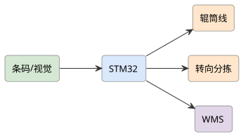
查看 PlantUML 源码
@startuml
skinparam defaultFontName "Microsoft YaHei"
skinparam rectangleRoundCorner 8
skinparam rectangleBorderColor #555
skinparam rectangleFontSize 13
skinparam arrowFontSize 11
skinparam arrowColor #333
left to right direction
rectangle "条码/视觉" as cam #d5e8d4
rectangle "STM32" as stm #dae8fc
rectangle "辊筒线" as conv #ffe6cc
rectangle "转向分拣" as sort #ffe6cc
rectangle "WMS" as wms #e1d5e8
cam --> stm
stm --> conv
stm --> sort
stm --> wms
@enduml项目背景与应用场景
快递分拣中心的交叉带/摆轮分拣是物流自动化核心装备。学生项目合理切入：小型环形分拣线原型——条码识别 + 分格投递 + 简易调度，重点做好"识别准确率-落格准确率-卡件处理"三个运营硬指标。
系统总体设计
供件层（人工/供件台上件 → 导辊间距整理（包裹间距化——识别可靠的前提））→ 识别层（DWS：条码读码器（工业级或集成方案）+ 称重 + 体积测量（简化））→ 分拣层（环形线 + 翻板/滑槽分格（N 格））→ 控制层（PLC/STM32 主控：格口时序控制）→ 管理层（路单-格口映射 + 异常件处理）。
硬件组成
STM32 + 条码/视觉相机 + 辊筒线 + 转向分拣 + WiFi + WMS。
实现方案
- 方案 A（快速分拣）：视觉/条码识别包裹目的地，STM32 控辊筒转向入格口。
- 方案 B（高峰调度）：在方案 A 上做动态格口分配与吞吐优化。
详细实施步骤
- 第 1 步 供件与间距化：人工上件的最大问题：包裹叠件/贴靠导致读码失败——导辊差速拉间距机构（间距化是分拣系统第一工序，运营统计读码率的第一影响因素）；上件节奏引导（供件台指示灯）。
- 第 2 步 DWS 识别与建单：工业读码器集成（自研条码算法在运动模糊下不可靠——集成方案诚实选型）+ 动态称重；读码失败件流程（二次读码区→人工口——异常件处理是真实分拣中心的日常，完整设计而非回避）；面单-格口路由规则（模拟快递网络：区域-网点映射表）。
- 第 3 步 分格执行与时序：环形线（椭圆传送带）+ 翻板分格；格口时序控制：包裹位置跟踪（编码器计米+读码点标定）→ 到格提前量控制翻板（时序标定误差 <50 mm——落格准确率的控制学核心）；落格确认（格口满溢检测光电）。
- 第 4 步 异常与卡件：无主件（读码失败）→ 异常口；格口满 → 备用格逻辑；卡件检测（翻板阻力/包裹倾斜传感）→ 停线报警（卡件是现场停线首因——处理 SOP 设计）；班次统计（读码率/落格率/异常率——运营三率）。
- 第 5 步 调度与管理软件：格口-路单配置管理；批次任务（模拟波次）；三率实时看板与班报（运营指标化管理）。
- 第 6 步 运行验证：模拟分拣 2 周（多规格包裹 1000+ 件）：读码率（目标 >98%——间距化贡献前后对比）、落格准确率（>99.5%）、卡件停线次数、单件节拍；异常件全流程处理时效；与人工分拣对照（准确率/效率）。
关键技术点
- 导辊间距化供件（读码率的第一影响因素）
- 编码器计米+提前量的翻板时序控制（<50 mm 落格误差）
- 异常件完整流程（二次读码/人工口/满溢备用格）
- 卡件检测停线与 SOP 设计
- 运营三率（读码/落格/异常）指标化管理
难点与对策
- 运动模糊读码失败 → 集成工业读码器（自研不现实——诚实选型）；曝光/焦距调优实测
- 轻软包裹（袋子）翻板失灵 → 袋件姿态与摩擦适配测试；翻板结构改进迭代
- 环形线机械加工量 → 型材+3D 打印混合制作；模块化便于调试
- 时序漂移（皮带打滑） → 打滑补偿（多点标定传感器巡检）；误差监控告警
软件流程
识别面单 → 解析目的地 → 辊筒分拣 → 入格 → WMS 同步。
创新点与拓展
创新点：间距化供件的运营第一因认知（读码率问题的根源治理）；翻板时序控制学（<50 mm）与打滑补偿；异常件全流程设计不回避（真实分拣中心日常）；运营三率的指标化管理——分拣系统的运营工程观。
拓展方向：摆轮分选扩展；交叉带小车（进阶机构）；与快递系统 API 对接真实面单数据。
课程对接：单片机原理及应用、计算机视觉、算法分析与设计、嵌入式Linux应用开发、数据库系统原理
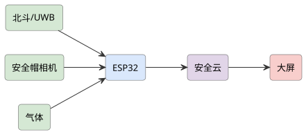
查看 PlantUML 源码
@startuml
skinparam defaultFontName "Microsoft YaHei"
skinparam rectangleRoundCorner 8
skinparam rectangleBorderColor #555
skinparam rectangleFontSize 13
skinparam arrowFontSize 11
skinparam arrowColor #333
left to right direction
rectangle "北斗/UWB" as pos #d5e8d4
rectangle "安全帽相机" as cam #d5e8d4
rectangle "ESP32" as esp #dae8fc
rectangle "气体" as gas #d5e8d4
rectangle "安全云" as cloud #e1d5e8
rectangle "大屏" as scr #f8cecc
pos --> esp
cam --> esp
gas --> esp
esp --> cloud
cloud --> scr
@enduml项目背景与应用场景
工地高危作业（塔吊/动火/高处/临电）的安全管理靠纸面交底+人工盯守，脱岗/无证上岗/违章作业难实时发现。本项目做"人脸+定位+流程"的工地特殊工种数字化管理：实名制核验、作业许可电子化、危险区域电子围栏。
系统总体设计
核验层（人脸实名制终端（对接全国建筑工人实名制思路：特种作业证编号绑定））→ 定位层（UWB/蓝牙工牌定位（精度分级：UWB 分米级/蓝牙米级——按场景选型论证））→ 电子围栏层（危险区（吊臂回转半径/临边洞口）越界告警）→ 流程层（动火作业电子票：审批-监护到位确认-时限）→ 管理层（项目看板+违章记录）。
硬件组成
ESP32 + 定位(北斗/UWB) + 安全帽检测相机 + 气体/温湿 + 4G + 云平台 + 大屏。
实现方案
- 方案 A（人员定位）：实时定位特种作业人员并检测安全帽佩戴，越界/未戴告警，上云台账。
- 方案 B（风险预警）：在方案 A 上加环境气体监测与班组长联动，形成闭环安全管理。
详细实施步骤
- 第 1 步 特种作业合规框架：特种作业目录与证件要求梳理（住建/应急部门口径——合规框架先行，系统围绕"证件-人-作业"匹配设计）；人脸+证件号双绑定核验（替考/串岗防治——实名制的真实痛点）；无证/证件过期作业的硬阻断流程（闸机/设备启动联锁）。
- 第 2 步 定位选型与部署：UWB（0.3~1 m，动火/吊装区）vs 蓝牙 AoA/RFID（米级，区域级管理）按危险等级分区选型（精度-成本分区匹配——不是全场 UWB 的烧钱方案）；定位基站的工地施工布线（临时供电/防尘防水 IP65）。
- 第 3 步 电子围栏与联动：危险区划设（塔吊回转半径动态围栏：吊臂角度实时联动围栏旋转——动态围栏是本项目技术亮点）；越界告警分级（预警→设备降速/停机联动接口——塔吊防碰撞系统对接路径说明）；监护人在位确认（动火票要求监护人到位才允许动火——流程联锁）。
- 第 4 步 动火作业电子票：电子作业票流程：申请→审批（线上留痕）→ 作业前气体检测记录上传 → 监护到位（定位确认）→ 作业计时 → 完结验收；超时/离岗自动告警；票据防伪与审计追溯（事故调查的真实需求）。
- 第 5 步 数据看板与违章管理：实时：在场特殊工种人员/作业区域人数/动火作业状态；违章记录（无证作业未遂/越界/离岗）自动生成与整改闭环；与施工日志联动。
- 第 6 步 试点验证：校园实训工地/合作工地试点：人脸核验通过率（安全帽/口罩场景——工地真实干扰源，适应性问题正面测试）、定位精度实测（分区分档）、围栏误报率、电子票流程完成率；安全管理员工作流评价（减负还是添活——接受度一票否决）。
关键技术点
- "证件-人-作业"匹配的合规框架设计
- 吊臂联动的动态电子围栏（技术亮点）
- 按危险等级分区的定位选型（UWB/蓝牙混合）
- 动火电子票的流程联锁（监护到位才可作业）
- 安全帽/口罩人脸适应性的正面测试
难点与对策
- 工地环境恶劣（粉尘/强光/信号） → 设备 IP65+强光人脸方案（IR 补光）；网络盲区实测补点
- 定位精度不足误报 → 分区选型+围栏缓冲带+连续越界确认（瞬时穿越不报——防误报细节）
- 工人抵触（被监控感） → 定位仅工作时段+安全用途声明；数据最小化；工会/班组沟通
- 责任边界（系统漏报的事故责任） → 辅助管理定位声明；不替代安全员巡查与安全制度——合规边界书面化
软件流程
定位+视觉 → 违规判定 → 4G 告警 → 云平台台账 → 大屏提示。
创新点与拓展
创新点：吊臂角度实时联动的动态围栏（静态围栏做不到的真实需求）；"监护到位才可动火"的流程联锁（把纸面制度变成硬约束）；按危险等级分区的定位选型；安全帽/口罩人脸适应的正面测试——处处是工地真实工况。
拓展方向：塔吊防碰撞区域接入；安全帽佩戴视觉检测联动；与政府实名制平台数据接口。
课程对接：单片机原理及应用、计算机视觉、无线传感器网络、云计算导论、国产平台web应用开发
查看 PlantUML 源码
@startuml
skinparam defaultFontName "Microsoft YaHei"
skinparam rectangleRoundCorner 8
skinparam rectangleBorderColor #555
skinparam rectangleFontSize 13
skinparam arrowFontSize 11
skinparam arrowColor #333
left to right direction
rectangle "设备/PLC" as plc #d5e8d4
rectangle "边缘网关" as edge #dae8fc
rectangle "数据库" as db #e1d5e8
rectangle "MES 前端" as mes #f8cecc
rectangle "集团云" as cloud #e1d5e8
plc --> edge
edge --> db
db --> mes
db --> cloud
@enduml项目背景与应用场景
中小企业上 MES 的真实障碍：大型 MES 售价/实施成本高、产线数据采集基础差（老设备无数据接口）。本项目重新定位："边缘采集盒子 + 轻量 MES"——解决数据采集这一"最后一公里"，MES 功能做小做实。
系统总体设计
采集层（边缘盒子：IO 采集（按钮/光电/电流互感判运行状态）+ 串口协议解析（老设备 PLC/仪表）+ 计数器）→ 边缘层（本地缓存/断网续传/OEE 在线计算）→ MES 层（轻量：工单-报工-产量-质量-设备状态五模块）→ 展示层（车间看板+手机端）。
硬件组成
边缘网关 + PLC/设备采集 + 条码/PDA + 数据库 + Web/MES 前端 + 云平台。
实现方案
- 方案 A（数据采集）：边缘网关对接设备 PLC 采集产量/良率，条码关联工单，Web 看板展示。
- 方案 B（轻量 MES）：在方案 A 上做工序排程与质量追溯，云端多厂数据汇总，低成本适配中小企业。
详细实施步骤
- 第 1 步 老设备采集方案库：设备分类采集方案：有 PLC 的（串口/网口读寄存器）；"哑设备"（只有按钮/继电器：运行信号取电流互感/脚踏开关并联——不改动原设备控制回路的取信号方式是工业安全底线：信号取自指示灯回路并联，写明电气安全设计）；每类设备方案文档化形成"方案库"——可复制推广的核心资产。
- 第 2 步 边缘盒子硬件：采集 IO（DI/DO/RS485/网口）+ 本地存储 + 4G/WiFi 上云；断网缓存 ≥7 天（车间网络差是常态）；边缘计算：OEE 三率（可用率/性能率/良品率）本地算，云端汇总。
- 第 3 步 轻量 MES 五模块：工单下发/扫码报工/产量自动采集（边缘直报——减少人工报工造假空间）/质量记录（检验数据+缺陷代码）/设备状态（运行-停机-故障时间线自动生成）；每个模块对应中小企业真实痛点（人工报工不准/停机原因说不清）。
- 第 4 步 停机原因自动+人工混合：设备停机自动记录时长；原因由工人终端一键点选（预置原因码）——完全自动推断不现实（诚实），"自动计时+人工归因"的轻交互设计；停机帕累托分析自动生成。
- 第 5 步 推广与实施方法论：实施包：方案库+硬件清单+配置向导+培训视频；"7 天上系统"实施目标（对比大型 MES 数月实施——中小企业的真实购买理由）；定价与 ROI 测算（按产线规模）。
- 第 6 步 试点验证：合作小厂 1 条产线 1 个月：数据准确率（自动采集 vs 人工报工对比——报工差异即价值）、OEE 报表使用频率、厂长决策案例（据数据做的调整记录）；实施耗时实测（目标 7 天）。
关键技术点
- 哑设备取信号的电气安全方案库（不侵入原控制回路）
- 断网缓存 7 天+边缘 OEE 本地计算
- "自动计时+人工归因"的停机分析轻交互
- "7 天上系统"实施方法论（中小企业真实购买理由）
- 自动采集 vs 人工报工的差异量化（价值证明）
难点与对策
- 行业差异大（离散/流程/装配） → 限定 1~2 个细分行业深耕；方案库按行业扩充
- MES 功能简陋被质疑 → 定位明确：解决采集与看板，不做排产等复杂模块（范围声明）；模块可生长
- 工厂现场电子环境恶劣 → 工业级防护（粉尘/振动/电磁）；现场取电安全
- 数据造假惯性（工人抵触） → 透明沟通（减负而非监视定位）；数据用途约定
软件流程
设备采集 → 边缘汇聚 → 工单关联 → 数据库 → MES/看板。
创新点与拓展
创新点：哑设备"最后一公里"采集方案库（推广可复制的核心资产）；"自动计时+人工归因"承认自动推断局限；7 天实施的推广方法论与 ROI 测算面向中小企业真实购买逻辑；数据差异量化证明自动采集价值。
拓展方向：能耗采集模块（双碳需求）；与 ERP 进销存对接；SaaS 化多租户。
课程对接：物联网工程导论、网络环境与编程、数据库系统原理、软件工程、嵌入式Linux应用开发、国产平台web应用开发
查看 PlantUML 源码
@startuml
skinparam defaultFontName "Microsoft YaHei"
skinparam rectangleRoundCorner 8
skinparam rectangleBorderColor #555
skinparam rectangleFontSize 13
skinparam arrowFontSize 11
skinparam arrowColor #333
left to right direction
rectangle "摄像头" as cam #d5e8d4
rectangle "人脸比对" as face #d3e0ea
rectangle "STM32" as stm #dae8fc
rectangle "门锁/考勤" as lock #ffe6cc
rectangle "身份云" as cloud #e1d5e8
cam --> face
face --> stm
stm --> lock
stm --> cloud
@enduml项目背景与应用场景
人脸识别设备市场碎片化：门禁一块屏、考勤一台机、访客一本登记表、消费一台机——数据孤岛且重复建设。本项目做"一体化人脸终端"：一台设备 + 一个后台贯通 门禁/考勤/访客/消费 四场景，核心价值在"一人一档"的数据统一与场景联动。
系统总体设计
终端层（人脸识别终端：双目活体（防照片/视频攻击——活体检测是一体化的安全前提）+ 二维码/刷卡兼容）→ 平台层（统一人员库（一人一档：身份/权限/账户）+ 四应用服务）→ 联动层（场景联动：访客授权即门禁权限+消费账户）→ 管理层（后台+审计日志）。
硬件组成
STM32 + 摄像头 + 人脸模组/云端识别 + 门锁/考勤 + 4G/WiFi + 管理前端。
实现方案
- 方案 A（门禁考勤）：摄像头采集人脸，本地/云端比对，驱电磁锁或考勤记录，适合楼宇/实验室。
- 方案 B（一脸通）：在方案 A 上打通门禁/考勤/消费"一脸通"，统一身份与权限管理。
详细实施步骤
- 第 1 步 活体与安全（人脸系统的生命线）：双目活体/结构光活体方案选型（单目 RGB 被照片视频攻破的实测演示——先演示威胁再引出方案，安全动机真实）；人脸特征数据保护（特征值加密存储/不存原图/《个人信息保护法》合规：单独同意+删除权——合规设计是技术设计的同级主题）；防尾随（双门互锁逻辑预留）。
- 第 2 步 一人一档数据模型：统一人员主数据（员工/访客/学生三类角色）；权限矩阵（人×区域×时段）；消费账户（预充值+限额）；考勤规则（班次/补卡）；一次注册全场景生效（访客来访→临时门禁+就餐授权自动下发——联动是一体化的核心体验）。
- 第 3 步 四应用实现：门禁（继电器/韦根对接既有门禁——兼容存量设备是推广关键）；考勤（打卡记录+异常统计）；访客（预约→人脸下发→离场回收权限——访客人脸数据的到期删除流程，合规细节）；消费（账户扣款+对账）。
- 第 4 步 性能与环境适应：识别速率 <300 ms/通过率/误识率(FAR)/拒识率(FRR) 实测矩阵；逆光（门口大逆光场景——宽动态摄像头+安装角度规范）；戴口罩识别（内部特征模型，准确率分档如实报告）；多人并行通行（高峰食堂场景队列实测）。
- 第 5 步 开放与兼容：韦根/OSDP 门禁协议、消费机协议适配层；API 开放（第三方考勤软件对接）；存量卡用户迁移路径（人脸+卡并行过渡——推广现实）。
- 第 6 步 试点验证：校园/办公楼试点 1 个月：四场景贯通率、高峰通过速率、活体攻击测试（照片/视频/面具——渗透测试记录）、用户投诉率（拒识体验）；合规审计（数据收集同意书/留存周期执行情况）。
关键技术点
- 双目活体检测与攻击手段的渗透测试验证
- 人脸特征加密+不存原图+到期删除的个人信息合规链
- 一人一档的场景联动（访客授权自动下发/到期回收）
- FAR/FRR 实测矩阵与逆光/口罩分档
- 韦根/OSDP 兼容存量设备的推广策略
难点与对策
- 人脸数据泄露风险（最高等级风险） → 特征加密+最小化+留存期限+审计；泄露应急预案；合规审计常态化
- 活体被攻破（深伪造假演进） → 双目/3D 结构光+红外；定期攻击测试更新；高危场景加二次验证
- 拒识体验差导致弃用 → FRR 优化+刷卡/二维码兜底通道永远保留——生物识别不能是唯一通道（可用性伦理）
- 场景蔓延工作量 → 四场景为限；新需求进路线图
软件流程
采人脸 → 比对 → 开门/记录 → 上云 → 权限管理。
创新点与拓展
创新点：活体攻击渗透测试作为验收硬门槛；人脸合规链（同意/加密/不存原图/到期删除/审计）与功能同级设计；"生物识别不能是唯一通道"的可用性伦理；场景联动（访客全流程自动授权回收）体现一体化真实价值。
拓展方向：体温/健康码类扩展（按需）；电梯层控联动；校园一体化（宿舍/图书馆门禁并入）。
课程对接：计算机视觉、单片机原理及应用、数据库系统原理、云计算导论、软件工程、嵌入式Linux应用开发
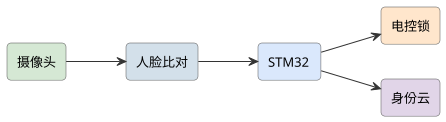
查看 PlantUML 源码
@startuml
skinparam defaultFontName "Microsoft YaHei"
skinparam rectangleRoundCorner 8
skinparam rectangleBorderColor #555
skinparam rectangleFontSize 13
skinparam arrowFontSize 11
skinparam arrowColor #333
left to right direction
rectangle "摄像头" as cam #d5e8d4
rectangle "人脸比对" as face #d3e0ea
rectangle "STM32" as stm #dae8fc
rectangle "电控锁" as lock #ffe6cc
rectangle "身份云" as cloud #e1d5e8
cam --> face
face --> stm
stm --> lock
stm --> cloud
@enduml项目背景与应用场景
超市寄存/健身房/游泳馆/图书馆存包的传统条码纸/密码纸痛点：纸条丢失无法取物、代取纠纷、卫生接触。人脸储物柜的价值在"人脸即凭证"的无介质存取——但必须解决"人脸被代用/照片攻破"与"公共卫生"两大质疑。
系统总体设计
识别层（每柜门 mini 人脸模块或集中识别+柜门联动；双目活体）→ 控制层（柜控板：电控锁+状态检测（门磁+格内重量（占用确认）））→ 逻辑层（存取状态机：存→占用→取→清洁（超时未取流程））→ 管理层（后台：柜格管理/超时处理/异常记录）。
硬件组成
STM32 + 摄像头 + 人脸模组/云端 + 电控锁 + 4G/WiFi + 管理前端。
实现方案
- 方案 A（刷脸存取）：摄像头采人脸，本地/云端比对开对应柜门，记录存取日志。
- 方案 B（临时共享）：在方案 A 上做临时授权与超时提醒，适用泳池/商场。
详细实施步骤
- 第 1 步 存取状态机与防代取：存：人脸注册→开格→放物→关门→重量确认（空格存入无效——防"占格不放"）；取：人脸比对→开格→重量减少确认；人脸唯一性约束（同一人脸已有在存物品时二次存取规则：超市场景拒绝二次存——防占格；健身房场景可用多格策略——场景化配置）；代取威胁：活体+1:N 误识率(FAR)分析（FAR 1/10 万量级的代取概率论证+高价值场景加密码二次验证选项——安全分级）。
- 第 2 步 活体与误识量化：双目活体防照片/视频（攻击测试记录）；1:1 与 1:N 模式对比（1:N 在人脸相似用户间的误开风险实测——误开是储物柜最高级事故，测试必须做）；相似脸（双胞胎/家人相似）案例处理流程（二次验证兜底）。
- 第 3 步 卫生与无接触：全程无接触存取（对比按键/触屏交叉接触——卫生价值点）；柜门内侧 UV 消毒（选配，换客间隔自动——疫情后公共卫生习惯）；人脸摄像头防凝露（游泳馆高湿环境：加热除湿设计）。
- 第 4 步 超时与异常流程：超时未取（营业结束清柜流程：物品转移保管+登记——纸条柜同样问题的数字化改进：人脸留痕可追溯）；死锁（开格后未关）超时告警；断电应急（UPS 维持+机械应急钥匙管理规范——应急可取物是安全底线）。
- 第 5 步 后台运营：柜格使用率统计（高峰时段扩容决策）；异常事件审计（误开/纠纷回查）；多柜组网统一管理。
- 第 6 步 试点验证：校园超市/图书馆 1 个月：存取成功率、误开测试（0 容忍目标+测试记录）、平均存取耗时（vs 条码柜对照）、用户卫生感知问卷；纠纷案例（真实发生）处理复盘。
关键技术点
- 重量确认的状态机闭环（防占格/确认取物）
- 1:N 误开风险的实测与安全分级（高价值场景二次验证）
- 无接触存取的卫生价值与 UV 换客消毒
- 断电应急取物机制（机械钥匙管理规范）
- 超时清柜的人脸留痕追溯（纠纷可查）
难点与对策
- 误开柜（最高级事故） → FAR 实测+活体+安全分级；误开应急流程（客服/监控取证）
- 人脸数据合规（公共场所采集） → 明示告知+最小化+删除策略；监护人场景（未成年人）规则
- 相似人脸纠纷 → 二次验证选项+存取留痕+监控联动；运营预案
- 高湿环境可靠性 → 防凝露设计；游泳馆场景专项测试
软件流程
采人脸 → 比对 → 开柜 → 记录 → 上云。
创新点与拓展
创新点：重量确认闭环与"占格不放"的运营细节处理；1:N 误开风险的正面实测（储物柜人脸项目普遍回避的最高级事故）；断电应急与超时清柜的完整运营流程；无接触卫生价值点明确。
拓展方向：动态定价（高峰/时长计费）；与会员系统打通；代寄存业务（物流场景）。
课程对接：计算机视觉、单片机原理及应用、数据库系统原理、云计算导论、嵌入式Linux应用开发

查看 PlantUML 源码
@startuml
skinparam defaultFontName "Microsoft YaHei"
skinparam rectangleRoundCorner 8
skinparam rectangleBorderColor #555
skinparam rectangleFontSize 13
skinparam arrowFontSize 11
skinparam arrowColor #333
left to right direction
rectangle "分布式光纤" as fiber #d5e8d4
rectangle "振动解调" as demod #dae8fc
rectangle "STM32" as stm #dae8fc
rectangle "摄像头" as cam #d5e8d4
rectangle "安防云" as cloud #e1d5e8
fiber --> demod
demod --> stm
cam --> stm
stm --> cloud
@enduml项目背景与应用场景
周界安防（园区/机场/油库围栏）需要长距离无盲区。客观成本修正先行：分布式光纤（φ-OTDR）解调仪商用系统数万至数十万元——大创预算内不可行。可行替代路线：①迈克尔逊/马赫-曾德干涉型（双光缆方案，解调可自制，成本数千元级）；②租用/借用实验室商用设备做数据端。路线①为主实现，②做对标验证——按预算现实重设方案。
系统总体设计
传感层（单模传感光缆沿围栏敷设（S 形挂网）+ 干涉型解调单元（自制：窄线宽激光器+耦合器+平衡探测器））→ 信号层（振动信号：定位（干涉相位/双缆时间差——定位精度与方案强相关，如实报告）+ 模式识别）→ 判别层（爬越/剪切/风吹/雨滴/小动物分类——误报是周界系统弃用首因）→ 响应层（分区声光+摄像头联动预置位+地图定位）。
硬件组成
分布式光纤 + 振动解调单元 + STM32 处理 + 摄像头联动 + 4G + 云平台。
实现方案
- 方案 A（光纤周界）：光纤感知沿线振动，定位入侵点，联动摄像头复核，4G 告警。
- 方案 B（智能判别）：在方案 A 上做行为分类(攀爬/剪切)降低误报。
详细实施步骤
- 第 1 步 方案的现实可行性重设：φ-OTDR（相干检测需高频采集+声光调制，整机成本不可行——论证后放弃）；选定双马赫-曾德干涉方案：一芯脉冲+一芯连续的时差定位（定位精度理论百米级——诚实给出精度预期，不做米级宣称）；或分区干涉（每 500 m 一对端——分区即定位，工程上更稳健）；两条技术路线做仿真/小规模实验后择一。
- 第 2 步 解调单元自制：窄线宽激光器（<1 kHz）+ 3×3 耦合器解调（相位生成载波 PGC 或 3×3 交叉相乘解相位——算法实现与文献对照）；平衡探测+采集（声卡级采集起步——低成本方案）；系统噪声底实测（可检测最小振动等效——灵敏度量化）。
- 第 3 步 光缆布设工艺（现场工程）：S 形挂网绑扎间距与灵敏度关系实测（间距密→灵敏但误报多——标定曲线）；围栏环境（铁网振动传导/风载/雨滴）背景噪声采集；防雷与光缆保护（接头盒防水）。
- 第 4 步 模式识别降误报：特征（时频特征：能量/持续时间/频谱质心）+ 分类（爬越 vs 剪切 vs 风 vs 雨 vs 动物）；自建数据集（真实围栏+人工动作 500+ 次+天气背景 2 周）；误报率按天气分档报告（大风天误报是所有周界系统死穴——分级策略：大风降灵敏度+摄像头复核确认）。
- 第 5 步 联动与定位展示：分区告警→地图分区显示（定位精度如实标注）→ 摄像头预置位联动（值班复核通道）；与既有红外对射/视频系统互补部署建议。
- 第 6 步 验证：围栏实测：各入侵动作检出率/定位误差/误报率（按天气分档）矩阵；连续 4 周运行统计；与商用振动光缆（如可对标）或红外对射的性能-成本对比；自制解调系统的长期稳定性（温漂——相位解调的温度敏感性是技术难点，补偿方案与残余漂移如实报告）。
关键技术点
- 按预算重设方案（φ-OTDR 不可行的论证+干涉型替代）
- 3×3 耦合器/PGC 相位解调实现与噪声底量化
- S 形布设间距-灵敏度标定曲线（现场工艺）
- 按天气分档的误报率报告与大风降敏策略
- 相位解调温漂补偿与残余误差如实报告
难点与对策
- 解调系统温漂（长期稳定性） → 温度补偿（参考臂/算法）+定期校准；漂移数据公开——相位系统这是硬骨头，如实攻关
- 定位精度低（百米级） → 定位能力边界明示；"分区即定位"的工程化兜底；摄像头复核确认到点
- 天气误报（大风天系统不可用） → 分级降敏+视频复核；误报率按天气分档公开——不回避
- 光缆施工损伤 → 施工规范+OTDR 定期巡检链路健康（断点自诊断）
软件流程
光纤采振动 → 解调定位 → 摄像头复核 → 4G 告警。
创新点与拓展
创新点：从预算现实出发的方案重设（放弃不可行的 φ-OTDR 并给出论证——客观修改的典型示范）；自制干涉解调+噪声底量化；天气分档误报与大风降敏策略直面周界系统"弃用首因"；温漂攻关的诚实过程记录。
拓展方向：借用商用 φ-OTDR 设备对标实验；接入 AI 声纹库（工具声/液压钳剪断特征）；与无人机巡逻联动复核。
课程对接：单片机原理及应用、传感器与检测技术实验、无线传感器网络、云计算导论、算法分析与设计
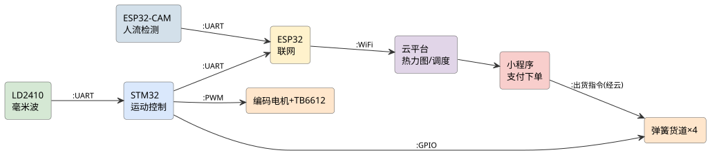
查看 PlantUML 源码
@startuml
skinparam defaultFontName "Microsoft YaHei"
skinparam rectangleRoundCorner 8
skinparam rectangleBorderColor #555
skinparam rectangleFontSize 13
skinparam arrowFontSize 11
skinparam arrowColor #333
left to right direction
rectangle "3D 相机" as cam3 #d5e8d4
rectangle "运动控制" as ctrl #dae8fc
rectangle "六轴臂" as arm #ffe6cc
rectangle "传送带" as conv #ffe6cc
rectangle "MES" as mes #e1d5e8
cam3 --> ctrl
ctrl --> arm
ctrl --> conv
ctrl --> mes
@enduml项目背景与应用场景
与《基于机器视觉的智能无序混合码垛机器臂系统》差异化定位：兄弟项目纵深在"视觉识别与抓取"（识别散乱物料），本项目纵深在"码垛工艺与规划"——拿到物料位姿后，怎么摆、按什么顺序摆、垛型如何稳定、多 SKU 如何混码、节拍如何达标，是码垛产线落地的真正瓶颈。视觉部分采用成熟轻量方案（标定+预训练模型），重心放在垛型规划算法与执行节拍。
系统总体设计
视觉层（俯视相机 + 轻量检测模型（物料类别/位姿——成熟方案快速落地，非本项目纵深））→ 规划层（垛型规划引擎（垛型模板库 + 混合 SKU 分层规则 + 稳定性校验）+ 抓取顺序优化）→ 执行层（4 自由度码垛臂（桌面级）+ 真空/夹指末端 + 输送线（输送带对位））→ 控制层（STM32/上位机分工：轨迹执行实时层 + 规划决策层）→ 验证层（垛型稳定测试 + 节拍统计）。
硬件组成
六轴机械臂 + 3D 相机 + STM32/工控运动控制 + 传送对接 + 工业以太网 + MES。
实现方案
- 方案 A（散件码垛）：3D 视觉定位散乱件位姿，机械臂按序码垛，传送带供料对接。
- 方案 B（柔性换型）：在方案 A 上支持多产品快速换型与节拍优化，对接 MES 排产。
详细实施步骤
- 第 1 步 码垛工艺需求定义：选定物料谱（2~4 种规则箱体：不同尺寸/重量——纸箱级，不涉及软袋/散料）；垛型要求定义（单 SKU 垛型/混合分层垛型、垛高/层数/承重约束——底层重物/易碎上层的工程规则）；目标节拍（X 秒/件 桌面级明确）；与兄弟项目的分工声明写入方案（视觉轻量化、规划深度化）。
- 第 2 步 垛型规划算法（核心）：垛型模板库（规则箱体的经典垛型：Interlock/Columnar/分层旋转——按箱体长宽比匹配）；混合 SKU 分层规则（同层同类优先/重不压轻/大不压小/边界贴合度评分）；贪心+局部搜索的摆放序列生成（当前垛面可用矩形区域匹配——最左最下优先+旋转尝试）；稳定性校验（层间支撑面积比 ≥70% 等规则的自动检查——不满足则重排）。
- 第 3 步 视觉轻量方案与手眼标定：俯视相机固定安装（眼在手外——码垛场景标准构型）；相机-机器人坐标手眼标定（九点标定法）；物料检测（预训练 YOLO 微调 2~4 类箱体+位姿角估计——识别精度按兄弟项目经验快速达标即可，不重复投入）；来料对位（输送带末端挡停+光电触发拍照）。
- 第 4 步 执行与轨迹优化：抓取顺序 = 规划序列联立（拾取顺序服务垛型顺序——反序排产）；轨迹规划（拾取-放置关键点平滑过渡/姿态插值；节拍瓶颈段分析——抓取准备与放置对位是主要耗时，并行化讨论）；真空/夹指末端按箱型切换；失败处理（吸取失败重试+视觉复检）。
- 第 5 步 产线集成要素：输送线节拍匹配（来料间隔 vs 码垛节拍——缓冲区设计）；满垛换托流程（垛满信号→托盘更换/人工搬离→新垛初始化）；异常恢复（断电续做：当前垛型状态持久化——码垛状态机的断点续码）；HMI 界面（垛型预览/进度/节拍显示——垛型 3D/2D 预览是操作工最需要的功能）。
- 第 6 步 验证：实测科目：垛型稳定性（成品垛倾斜角/推倒测试——按规范简化执行）、混码正确率（SKU 位置与规划一致性）、节拍实测 vs 目标（瓶颈段归因）、视觉误识别率（轻量方案的能力边界公示）、连续 4 h 运行卡死/失败统计；与单 SKU 码垛的混合效率对比；与兄弟项目的成果互补总结（识别由对方方法论支撑、规划为本项目贡献）。
关键技术点
- 垛型模板库+混合分层规则+稳定性校验的规划引擎（本项目纵深）
- 贪心+局部搜索的摆放序列与拾取顺序联立优化
- 九点标定+预训练模型的轻量视觉快速落地（分工不重复）
- 满垛换托/断点续码的产线状态机设计
- 垛型 2D 预览 HMI（操作工视角的实用功能）
难点与对策
- 混合垛型稳定性不足（层间滑移） → 支撑面积比硬校验+重排；箱体摩擦系数实测；垛型规则与实测互校
- 视觉与兄弟项目重复建设 → 视觉刻意轻量化（预训练+微调最小投入）；分工声明+成果互通
- 节拍不达标（轨迹与规划联立瓶颈） → 瓶颈段时序分析；抓取-放置并行化；节拍目标桌面级务实设定
- 料型扩展受限（规则箱体假设） → 能力边界明示（软袋/散料不做）；扩展列为路线图（异形件抓取属另一工程）
软件流程
3D 采景 → 位姿估计 → 逆解 → 抓取码垛 → MES 同步。
创新点与拓展
创新点：码垛纵深从"看得见"转向"摆得稳"（垛型规划算法+稳定性校验为项目核心，区别于兄弟项目的视觉纵深）；混合 SKU 分层承重规则的工程化；断点续码状态机（产线真实需求）；与兄弟项目的显式分工声明（两项目互补各自成案）。
拓展方向：垛型优化算法升级（遗传算法整体寻优）；卸垛（拆垛）反向流程；节拍数据整理为工业工程教学案例。
课程对接：计算机视觉、算法分析与设计、单片机原理及应用、网络环境与编程、嵌入式Linux驱动开发、软件工程
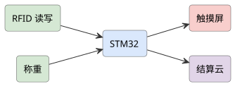
查看 PlantUML 源码
@startuml
skinparam defaultFontName "Microsoft YaHei"
skinparam rectangleRoundCorner 8
skinparam rectangleBorderColor #555
skinparam rectangleFontSize 13
skinparam arrowFontSize 11
skinparam arrowColor #333
left to right direction
rectangle "K210 视觉" as cam #d5e8d4
rectangle "HX711 称重" as hx #d5e8d4
rectangle "STM32" as stm #dae8fc
rectangle "支付/屏" as pay #f8cecc
rectangle "4G/WiFi" as net #fff2cc
cam --> stm
hx --> stm
stm --> pay
stm --> net
@enduml项目背景与应用场景
社区水果店/自助售卖场景：称重计价依赖人工（认品种+输码）效率低且排队长。本项目做"视觉识别品种→自动称重计价"的自助终端——识别+防作弊（调包/遮挡）是两个真实运营问题，正面处理。
系统总体设计
识别层（顶部相机 + 可控光照罩 + 品种分类模型（20~30 种常见果蔬））→ 称重层（称重传感器 + 防作弊检测（重量-体积一致性））→ 计价层（价格库+计价逻辑）→ 交互层（触摸屏+语音+小票）→ 支付层（扫码支付对接）。
硬件组成
STM32 + 称重(HX711) + K210 视觉 + 触摸屏 + 支付模块 + 4G/WiFi。
实现方案
- 方案 A（识别计价）：K210 识别水果种类，HX711 称重，自动计价并在屏上显示，支持扫码支付。
- 方案 B（无人零售）：在方案 A 上加库存与补货提醒、销售统计上云，做小型无人售货。
详细实施步骤
- 第 1 步 识别环境与数据集：称台光照罩（可控光源+消反光背景——与水果分拣项目同源的光学方法论）；品种数据集：每类 300+ 张（成熟度/角度/袋装与否变化），共 20 类 6000+ 张；袋装水果（透明袋）识别工况单列实测（袋反光是识别难题，如实分档）。
- 第 2 步 识别模型与混淆处理：MobileNetV3/轻量 YOLO 分类+检测；易混淆对（苹果红富士/嘎啦，橙子/橘子）的细粒度区分：细粒度特征+混淆对专项样本增强；置信度门限（低置信→人工选择兜底界面——识别不确定时的体验设计）；Top-3 候选展示让用户确认（人机协同防错）。
- 第 3 步 防作弊设计（运营生命线）：调包作弊（称重时换成便宜货）：重量-视觉联动校验（识别品种的预期重量区间 vs 实际重量，偏差大告警）；遮挡作弊（遮标签/堆叠多品种）：多目标检测（画面多种果蔬同时出现→提示分次称重）；重量传感器防作弊（震动/边缘站重检测）。
- 第 4 步 计价与支付：价格库后台管理（时价更新）；称重-识别-计价联动（单位价格×净重，去皮处理）；支付对接（个人开发者方案：收款码+人工对账演示，商户接口路径说明——支付合规如实说明）；小票/电子凭证。
- 第 5 步 运营功能：销量统计（品类热度数据反哺进货）；高峰模式（识别快挡 vs 精确挡可配）；设备自检（称重漂移自检砝码流程——计量设备维护规范）。
- 第 6 步 验证：实测 500 次称重：品种识别准确率（分袋装/散装/光照工况）、混淆对错误率、防作弊注入测试（调包/遮挡/堆叠各 20 次检出率）、单笔耗时（vs 人工计价对照）；计量准确性（与标准秤对照 ±10 g 内）。
关键技术点
- 可控光照罩+消反光背景的识别环境（同水果分拣方法论）
- 细粒度混淆对专项处理与 Top-3 人机确认
- 重量-视觉联动的调包检测与多目标遮挡告警
- 计量漂移自检流程（计量设备规范）
- 支付合规路径说明（个人开发者边界）
难点与对策
- 细粒度识别错误导致计价纠纷 → Top-3 确认+人工兜底；错误案例库持续训练
- 防作弊与体验平衡（误告警骚扰正常顾客） → 告警分级（提示→店员复核）；误告警率量化调参
- 袋装/季节品种变化 → 袋装工况专项数据；新品类模型更新流程（后台可重训部署）
- 计量合规（商用计价需检定） → 样机定位；商用需计量检定证书的合规路径说明
软件流程
放果 → 视觉识别 → 称重 → 计价 → 支付 → 上云统计。
创新点与拓展
创新点：重量-视觉联动防作弊（自助称重设备的行业真实痛点）；细粒度混淆对+人机确认的防纠纷设计；计量自检规范；识别不确定时的 Top-3 确认体验——识别计价类项目少见的运营完整性。
拓展方向：对接生鲜电商履约（线上下单现场自助取）；果切/称重零食扩展；无人果店整体方案。
课程对接：单片机原理及应用、计算机视觉、传感器与检测技术实验、嵌入式Linux应用开发、移动应用开发、软件工程
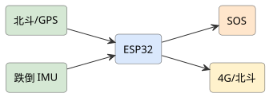
查看 PlantUML 源码
@startuml
skinparam defaultFontName "Microsoft YaHei"
skinparam rectangleRoundCorner 8
skinparam rectangleBorderColor #555
skinparam rectangleFontSize 13
skinparam arrowFontSize 11
skinparam arrowColor #333
left to right direction
rectangle "ESP32-CAM\n人流检测" as cam #d3e0ea
rectangle "LD2410\n毫米波" as radar #d5e8d4
rectangle "STM32\n运动控制" as stm #dae8fc
rectangle "编码电机+TB6612" as mot #ffe6cc
rectangle "弹簧货道×4" as slot #ffe6cc
rectangle "ESP32\n联网" as esp #fff2cc
rectangle "云平台\n热力图/调度" as cloud #e1d5e8
rectangle "小程序\n支付下单" as app #f8cecc
cam --> esp : :UART
radar --> stm : :UART
stm --> mot : :PWM
stm --> slot : :GPIO
esp --> cloud : :WiFi
stm --> esp : :UART
cloud --> app
app --> slot : :出货指令(经云)
@enduml项目背景与应用场景
固定售货机的点位利用率差异巨大，铺货错位导致补货成本高；"让售货机追着人流走"是新零售的合理设想，但必须客观面对市政道路上自主行驶的合规与安全红线。本项目把范围收敛在"封闭园区 + 数据驱动调度"，用真实人流-销量数据回答"该去哪、何时去"。
系统总体设计
感知层（视觉过线计数 + 毫米波存在检测）→ 云端聚合层（热力图、销量-人流相关性）→ 调度层（贪心/整数规划选点排程）→ 运动层（差速底盘路径点巡航与避障）→ 交易层（货道控制 + 支付核销）。
硬件组成
移动底盘（差速双驱 + 编码器电机 + TB6612 驱动）+ STM32F103（运动控制）+ ESP32-CAM（人流检测）+ 毫米波雷达 LD2410（人流计数备选/夜间）+ 货道（弹簧货道×4 + 28BYJ 步进电机）+ OLED + MQTT 云 + 小程序支付（模拟/个人收款码）+ 12V 锂电。
实现方案
- 方案 A（定点+热力图选点）：售货机平时停靠高人流点位（由 ESP32-CAM 统计过线人流，云端累积热力图），每日定时在 2~3 个候选点间按历史销量/人流调度；此方案规避自主行驶的安全合规问题，先验证"数据驱动选点"的价值。
- 方案 B（受限场景自主巡航）：在校园封闭园区/大型园区人行道做低速（≤1 m/s）自主巡航：SLAM 建图（激光雷达 mini 版或视觉里程计）+ 路径点巡航 + 人流动态调整停留时长；明确限定封闭场地，不上市政道路。
详细实施步骤
- 第 1 步 底盘与运动控制：差速双驱（MG513 编码电机）+ TB6612；STM32 编码器测速做 PID 闭环，路径点跟踪用 Pure Pursuit 简化版；超声波×3 + TF-Luna 做避障，碰撞急停按钮必备；速度限制 1 m/s、遇人 2 m 内停车。
- 第 2 步 货道与出货可靠性：弹簧货道 28BYJ-48 步进（或 42 步进+驱动），出货物联：旋转圈数标定 + 光电对射检测"商品已离开货道"，卡货自动反转一次再报错；OLED 显示货道库存，售空自动下架该商品。
- 第 3 步 人流统计双通道：ESP32-CAM 用背景减除+过线计数（白天，误差实测标注），LD2410 毫米波做存在/数量估计（夜间与逆光兜底）；双通道互校，每小时上报一次增量，避免视频上传（隐私+带宽）。
- 第 4 步 云端热力图与调度：云端按时段聚合点位人流与销量，计算单位人流转化率；调度算法先做贪心（下一时段去预期收益最高点位），进阶做带电量约束的整数规划；调度指令下发含路径点序列与停靠时长。
- 第 5 步 支付与核销闭环：小程序扫码 → 下单支付（个人开发者用模拟支付或个人收款码+人工对账，如实标注）→ 云端下发出货指令 → 货道出货 → 光电确认回传核销；出货失败自动退款流程要真实演练。
- 第 6 步 运营实验：在校园选 3 点位跑 2 周：记录各点位人流、销量、转化率；对比"固定点位"与"调度巡航"的日销售额（如实报告，可能不显著）；整理底盘功耗与续航，给出补电策略。
关键技术点
- 编码器 PID + Pure Pursuit 路径跟踪的底盘控制
- 背景减除过线计数与毫米波存在检测的双通道人流统计与互校
- 带电量与停靠时长约束的调度优化（贪心→MILP 进阶）
- 货道光电确认的出货可靠性状态机与自动退款流程
- 隐私优先设计：只上传计数不传视频，符合个人信息保护法要求
难点与对策
- 自主行驶安全与合规 → 严格限定封闭园区、限速 1 m/s、急停按钮+遇人必停；不做市政道路方案，报告中单列合规分析
- 视觉人流计数误判（并排/停留） → 过线方向判断+最小间距过滤；用毫米波互校；准确率用人工抽样 200 帧比对量化
- 货道卡货 → 光电确认+反转退料重试一次；卡货率实测并改进弹簧螺距与商品尺寸适配
- 支付通道个人开发者受限 → 演示阶段用模拟支付/收款码+对账脚本；报告中说明接入微信支付商户号的路径
软件流程
人流感知（摄像头过线计数/毫米波）→ 云端热力图与销量聚合 → 调度策略生成（点位+时段）→ 底盘按路径点移动 → 停靠展开营业 → 货道出货与支付核销 → 数据回传。
创新点与拓展
创新点：把"无人售货"从设备自动化推进到"数据驱动调度"：人流-销量转化率模型决定去哪、何时去、停多久；隐私优先的双通道人流统计设计规避了视频方案的法律风险，是面向真实运营的工程取舍。
拓展方向：可扩展冷链货道（饮料）与动态定价（临期折扣）；调度算法可发表运筹优化小论文；封闭园区模式可直接对接校园后勤试点；是"互联网+"新零售赛道的完整叙事。
课程对接：单片机原理及应用、机器人学基础/自动控制原理、嵌入式人工智能、移动应用开发、云计算导论

查看 PlantUML 源码
@startuml
skinparam defaultFontName "Microsoft YaHei"
skinparam rectangleRoundCorner 8
skinparam rectangleBorderColor #555
skinparam rectangleFontSize 13
skinparam arrowFontSize 11
skinparam arrowColor #333
left to right direction
rectangle "RFID 读写" as rfid #d5e8d4
rectangle "称重" as w #d5e8d4
rectangle "STM32" as stm #dae8fc
rectangle "触摸屏" as scr #f8cecc
rectangle "结算云" as cloud #e1d5e8
rfid --> stm
w --> stm
stm --> scr
stm --> cloud
@enduml项目背景与应用场景
超市排队结账是体验最大痛点。RFID 购物车（整篮批量识读）是成熟技术路线（Amazon Dash Cart 同理），学生项目复现"取车绑定→随放随读→自助结算"链路，重点解决 RFID 误读/漏读与结算防损两大工程问题。
系统总体设计
识别层（车载 RFID 读写器+天线阵列（篮筐多面布置）+ 电子标签（商品级 UHF RFID））→ 防损层（重量比对（RFID 读取清单 vs 篮内重量）+ 天线场强调优）→ 结算层（车机屏/手机小程序清单确认+支付）→ 管理层（标签 tied SKU 库+防拆标签策略）。
硬件组成
STM32 + RFID 读写 + 称重(防掉包) + 触摸屏 + WiFi + 结算云。
实现方案
- 方案 A（即拿即走）：RFID 识别放入商品，屏显清单与金额，出店自动结算，提升超市体验。
- 方案 B（防损增强）：在方案 A 上加称重比对与视觉防损，降低盗损与错账。
详细实施步骤
- 第 1 步 RFID 读取链路调优：UHF RFID（920~925 MHz 国内频段）读写器功率/天线布置实测：篮筐内金属/液体商品的漏读（液体吸收 UHF——真实难点，饮料类处理方案：辅助条码扫或防损流程兜底）；多标签防碰撞（批量识读的标签冲突算法参数调优）；读取率实测（单件/整篮/装满三种工况）。
- 第 2 步 防损双保险：RFID 漏读=少付款（门店损失）：重量比对（清单累计重量 vs 秤重，偏差超阈值提示"请检查"）；标签防拆（易碎/报警标签——非 RFID 商品（生鲜散装）走称重条码通道混合结算——混合结算是真实商超的必然形态，架构上预留）。
- 第 3 步 结算流程：车机屏实时清单（随放随显——体验核心）；会员绑定（扫码登录）→ 电子支付（对接路径说明）→ 出门核验（闸机二次识读比对清单——防损闭环）；异常（重量不符）出门拦截流程。
- 第 4 步 购物体验增强：商品信息（产地/促销）触屏查询；室内定位（购物车轨迹——动线分析，隐私声明）；满额促销提示；"找回购物车"（停车场寻车逻辑反用）。
- 第 5 步 成本与推广分析：标签成本（单品贴标成本 0.3~0.5 元——全店贴标的成本账是 RFID 商超推广的真实门槛，如实分析适用业态：高客单/会员制店优先）；车机硬件 BOM；与自助收银机（扫码式）的成本-效率对比。
- 第 6 步 验证：模拟超市 2 周：读取率（整篮 >99% 目标实测）、防损注入测试（抽标签/漏读件检出率）、结算耗时（vs 传统收银对照）、液体商品处理流程演练；用户体验问卷（NPS）。
关键技术点
- 篮筐多面天线布置与多标签防碰撞调优
- 液体/金属商品的漏读兜底混合结算架构
- 重量比对防损与出门闸机二次核验闭环
- 随放随显的车机清单体验
- 单品贴标成本的适用业态分析（推广现实）
难点与对策
- 液体商品 UHF 失效（品类硬伤） → 混合结算架构（RFID+条码称重）正面设计而非回避；饮料区动线引导
- 标签成本门槛 → 适用业态分析（不做全业态宣称）；标签复用循环方案探讨
- 漏读纠纷（顾客被多收/少收） → 出门核验+小票明细可查；防损流程文明化设计
- 车机成本与维护 → 精简车机（屏可共用顾客手机——小程序承载）；故障车自检上报
软件流程
RFID 识别 → 清单更新 → 屏显金额 → 称重校验 → 自动结算。
创新点与拓展
创新点：混合结算架构正面处理液体商品 RFID 硬伤（行业真实问题不回避）；重量比对+出门核验的防损闭环；"标签成本决定适用业态"的推广现实分析；隐私声明规范的动线分析。
拓展方向：视觉识别补充（衔接水果计价项目：生鲜区混合）；智能推荐（动线+购物篮）；会员积分自动化。
课程对接：单片机原理及应用、传感器与检测技术实验、嵌入式Linux应用开发、数据库系统原理、移动应用开发

查看 PlantUML 源码
@startuml
skinparam defaultFontName "Microsoft YaHei"
skinparam rectangleRoundCorner 8
skinparam rectangleBorderColor #555
skinparam rectangleFontSize 13
skinparam arrowFontSize 11
skinparam arrowColor #333
left to right direction
rectangle "北斗/GPS" as gps #d5e8d4
rectangle "跌倒 IMU" as imu #d5e8d4
rectangle "ESP32" as esp #dae8fc
rectangle "SOS" as sos #ffe6cc
rectangle "4G/北斗" as g #fff2cc
gps --> esp
imu --> esp
esp --> sos
esp --> g
@enduml项目背景与应用场景
户外登山人群扩大（消费者年轻化+中老年徒步热），登山杖的科技化停留在"测高计步"。真实风险点：失温/迷路/跌落/突发疾病（独走者）。本项目做"安全向"智能登山杖：跌倒检测+求助定位+环境预警——安全功能优先于计步玩具功能。
系统总体设计
感知层（IMU（跌倒/使用姿态）+ 气压计（海拔/爬升率）+ 温度 + UV/光照（日照预警））→ 定位层（GPS+北斗双模 + 轨迹记录）→ 通信层（4G/NB-IoT 求助 + 蓝牙手机联动）→ 供电（低功耗+太阳能补电可选）→ 结构（握把集成不破坏杖体手感——增重 <150 g 约束）。
硬件组成
ESP32 + 北斗/GPS + 气压海拔 + 跌倒 IMU + SOS + 蓝牙 + 锂电 + 充电。
实现方案
- 方案 A（户外安全）：定位/海拔记录+SOS 上报+跌倒检测，离线本地告警，适合登山徒步。
- 方案 B（应急网络）：在方案 A 上加 4G/北斗短报文应急通信与轨迹分享，提升救援可达性。
详细实施步骤
- 第 1 步 安全功能优先级：需求排序（户外社群调研）：①跌倒/摔落检测+自动求助 ②SOS 一键 ③离线轨迹（迷路回溯）④天黑/失温预警——计步/海拔显示降为附属（功能优先级决定开发资源，安全第一是产品定位）。
- 第 2 步 跌倒与使用状态识别：登山场景跌倒（滑坠/失足）与拄杖正常姿态区分：IMU 冲击特征+杖体姿态（正常拄杖近垂直 vs 摔落杆姿态异常）+ 静止延续判定；分档响应（疑似→语音询问→求助——衔接防摔项目同款分级哲学）；滑雪杖/徒步模式不同判定参数。
- 第 3 步 求助与轨迹回溯：SOS：双击/长按 → 位置（GPS+北斗双模提高峡谷定位率——北斗短报文为高端选配如实说明）+ 轨迹近段（最近 500 m 走向——救援最需要的信息）推送紧急联系人；无信号区：自动记录轨迹待出网补发+哨声/爆闪物理求助（电子失效兜底——户外安全产品的冗余设计原则）。
- 第 4 步 环境预警：日落倒计时（按气压海拔+日期计算当地日落——天黑前下山预警，夜山是事故高发）；失温风险（温度+风速估算+出汗状态提示——简化模型并声明局限）；海拔爬升统计（高原反应参考）。
- 第 5 步 低功耗与结构：整机待机 30 天+（事件触发通信）；握把集成（防滑/减震不受影响）；IP65+防低温（-10℃ 电池性能实测——户外低温是电池杀手，真实环境测试）。
- 第 6 步 户外验证：真实徒步 3 次（含一次雨雾工况）：跌倒检测注入（软垫滑倒模拟）、轨迹回溯导航回起点演练、求助链路端到端时延、低温续航实测；户外俱乐部用户反馈（安全性感知/重量接受度）。
关键技术点
- 登山场景跌倒特征（冲击+杖姿+静止延续）与分级响应
- GPS+北斗双模峡谷定位+轨迹近段推送（救援信息学）
- 无信号区冗余：轨迹缓存补发+物理求助兜底
- 日落/失温预警的简化模型与局限声明
- -10℃ 低温电池实测（户外真实工况）
难点与对策
- 峡谷/密林 GPS 漂移 → 双模+轨迹推算；定位差时的求助信息降级（方向+轨迹）——信息不完备时的求援格式设计
- 跌倒误报（拄杖探路猛戳） → 登山动作特征库区分；询问确认机制；误报率实测
- 增重破坏杖感 → <150 g 硬约束+握把重心设计；用户重量敏感度调研
- 极端环境可靠性（雨雾/低温） → IP65+低温实测；电子失效的物理兜底永远保留
软件流程
采定位/海拔 → SOS/跌倒判定 → 蓝牙/4G 上报 → 应急联系。
创新点与拓展
创新点："安全优先于计步"的产品定位翻转（户外智能杖的伪需求批判）；救援信息学（轨迹近段+走向的求援格式）；无信号区电子+物理双重冗余；低温实测贴近户外真实工况。
拓展方向：多杖组队互联（队友位置共享——徒步团场景）；接入户外平台 SOS 通道；登山社群运营数据。
课程对接：单片机原理及应用、传感器与检测技术实验、无线传感器网络、移动应用开发、云计算导论

查看 PlantUML 源码
@startuml
skinparam defaultFontName "Microsoft YaHei"
skinparam rectangleRoundCorner 8
skinparam rectangleBorderColor #555
skinparam rectangleFontSize 13
skinparam arrowFontSize 11
skinparam arrowColor #333
left to right direction
rectangle "GPS/北斗" as gps #d5e8d4
rectangle "心率" as hr #d5e8d4
rectangle "低功耗 MCU" as mcu #dae8fc
rectangle "电子围栏" as fence #d3e0ea
rectangle "家长APP" as app #f8cecc
gps --> mcu
hr --> mcu
mcu --> fence
fence --> app
@enduml项目背景与应用场景
儿童安全手表市场成熟（小天才等），学生项目不做同质化复刻，找差异生态位：①校园场景深度（考勤/课堂免打扰/借阅）②离线守护（无网/无电时的最后防线）③隐私克制（儿童数据最小化——与大厂数据贪婪形成差异叙事）。
系统总体设计
定位层（GPS+北斗+WIFI 定位+室内蓝牙信标（教室级定位——校园场景差异化））→ 通信层（4G + 亲情号白名单通话 + 离线模式）→ 校园层（考勤联动/课堂免打扰（上课锁功能与校方政策配合——争议功能的设计讨论）/校园卡消费）→ 安全层（SOS/电子围栏/跌倒）→ 隐私层（数据最小化设计）。
硬件组成
低功耗 MCU + GPS/北斗 + 心率 + 电子围栏 + 4G/蓝牙 + 家长 APP。
实现方案
- 方案 A（定位围栏）：GPS/北斗定位与电子围栏，越界家长 APP 告警，心率异常提醒，适合儿童看护。
- 方案 B（双向通话）：在方案 A 上加一键呼家长与上课免打扰，延长续航与佩戴舒适。
详细实施步骤
- 第 1 步 差异定位论证：竞品功能矩阵分析（大厂儿童手表功能清单）；差异化选择：校园一体化（与学校系统对接是家长真实痛点——校内手表被禁用/考勤分离）+ 隐私克制定位（定位数据保留期限/不给第三方——家长决策的真实考量因素，访谈验证）。
- 第 2 步 校园一体化：到校/离校考勤自动推送家长（对接校园闸机/门禁思路）；教室级定位（蓝牙信标：教学楼-楼层-教室粒度——课间找孩子场景）；课堂免打扰模式（校方可控的时段策略——"禁不禁"的决定权设计成学校/家长共识机制而非硬功能，争议功能的责任设计）；校园消费（食堂/小卖部限额账户）。
- 第 3 步 离线守护（最后防线）：手表没电/无信号是儿童手表最大失效模式：低电提前告警（按时长梯度）；离线最后位置+离线前轨迹上报；物理兜底（SOS 哨音+反光条——电子产品的非电子备份设计理念）；"没电告知卡"（佩戴卡片印家长电话——极简兜底，认真讨论这类"低技术"方案的价值）。
- 第 4 步 通话与白名单：亲情号白名单（陌生号屏蔽——防诈骗/骚扰）；课堂时段来电策略；语音留言（通话不可用时的异步沟通）；SOS 循环呼叫（未接通轮拨——紧急链路可靠性设计）。
- 第 5 步 儿童隐私合规（差异化核心）：14 岁以下个人信息保护规范（我国《儿童个人信息网络保护规定》）对照：最小化采集/家长单独同意/不留存原始轨迹超期/不给第三方；隐私政策儿童可读版（给孩子的动画说明——隐私透明化的诚意设计）；数据出境/第三方 SDK 审查清单。
- 第 6 步 验证：校园试点 4 周（家长知情同意+校方协议）：考勤准确率、教室定位命中率、免打扰策略执行、家长满意度（安心度量表）、儿童佩戴依从性（不戴=一切白搭——儿童视角：舒适/好玩/不羞耻的设计反馈）；隐私审计模拟（数据流清单核对）。
关键技术点
- 教室级蓝牙信标定位（校园场景差异化）
- 离线守护多级防线（低电预警/最后位置/物理兜底）
- 免打扰决策权的学校-家长共识机制（争议功能的责任设计）
- 儿童个人信息合规链（最小化/单独同意/可读隐私政策）
- SOS 循环轮拨的紧急链路可靠性
难点与对策
- 大厂竞争（功能性价比碾压） → 生态位定位（校园 B 端对接+隐私差异化）；不做 C 端硬碰硬
- 定位隐私与监护伦理（孩子被全程监控的心理） → 数据最小化+区域级而非秒级轨迹的可选模式；儿童知情权设计——监护与尊重的平衡是产品伦理
- 校园政策不确定性（禁电电子设备） → 与校方共研模式；免打扰即政策配合方案
- 儿童佩戴依从性 → 舒适/外观儿童参与设计；不戴场景的兜底（离腕告警）
软件流程
采定位/生理 → 围栏判定 → 异常告警 → 4G/蓝牙 → 家长 APP。
创新点与拓展
创新点：校园 B 端差异化+隐私克制的产品伦理定位；离线守护"最后防线"的多级设计与低技术兜底方案的严肃讨论；免打扰争议功能的决策权机制设计；儿童可读隐私政策的透明化诚意。
拓展方向：校园安全演练联动；研学/春游临时组队定位；特殊儿童（自闭症）看护模式定制。
课程对接：单片机原理及应用、传感器与检测技术实验、移动应用开发、无线传感器网络、云计算导论
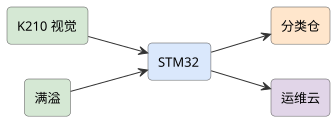
查看 PlantUML 源码
@startuml
skinparam defaultFontName "Microsoft YaHei"
skinparam rectangleRoundCorner 8
skinparam rectangleBorderColor #555
skinparam rectangleFontSize 13
skinparam arrowFontSize 11
skinparam arrowColor #333
left to right direction
rectangle "K210 视觉" as cam #d5e8d4
rectangle "STM32" as stm #dae8fc
rectangle "分类仓" as bin #ffe6cc
rectangle "满溢" as fill #d5e8d4
rectangle "运维云" as cloud #e1d5e8
cam --> stm
stm --> bin
fill --> stm
stm --> cloud
@enduml项目背景与应用场景
垃圾分类政策落地后居民分类准确率低、督导人力贵。与《语音+视觉智能分类垃圾桶》（交互引导型）区分：本项目做"自动分拣执行型"——识别后机械分拣，让居民"随便扔、机器分"，评估的是分拣准确率与吞吐。
系统总体设计
投放层（投放口+视觉预识别（投放即知类别））→ 识别层（传送带相机阵列（俯视+侧视双视角）+ 品类模型（四分类+常见细类 50 种））→ 分拣执行层（小型翻板/气吹分流到四桶——桌面级吞吐验证）→ 数据层（分类统计+溯源）→ 反馈层（分类质量公示屏）。
硬件组成
STM32 + K210 视觉 + 多分类仓 + 投放检测 + 满溢传感 + 4G + 运维前端。
实现方案
- 方案 A（自动分类）：K210 识别垃圾类别，STM32 控制对应仓门开启，满溢上云提醒清运。
- 方案 B（宣教一体）：在方案 A 上加屏显分类科普与投放统计，助力垃圾分类宣教。
详细实施步骤
- 第 1 步 分拣执行机构选型：桌面级验证选型：翻板分流（结构简单/节拍低）vs 气吹（轻小物高速）vs 机械臂（灵活慢）——吞吐目标 1 件/2 s 桌面级明确（不做商用线宣称）；垃圾形态的执行难点（袋装/缠绕/液体——执行机构是分拣项目最大工程量，工作量预估诚实）。
- 第 2 步 垃圾识别数据集：四分类框架下细类标注（可回收：纸/塑/金/玻璃；有害：电池/药品…；厨余；其他）——现场采集+公开数据集混合；脏污垃圾（油污厨余/压扁瓶）识别是真实难点（干净数据集训练的模型现场必翻车——脏污工况数据采集是数据工程核心）；袋装垃圾政策（破袋投放）下的袋-物分离工况讨论。
- 第 3 步 双视角识别与不确定处理：俯视（大类别）+侧视（轮廓/液体）融合；不确定处理（低置信→"其他"桶兜底还是复检口——错误成本分析：可回收误入其他=资源浪费低代价；电池误入可回收=污染高代价——非对称代价决定不确定时的默认去向，写明决策逻辑）。
- 第 4 步 居民交互与反馈：投放口即时反馈（"塑料瓶-可回收 ✓"——教育价值：即时反馈改变分类习惯）；分类质量公示（小区排行榜——行为科学激励设计）；误投纠错提示（投错桶提示语音）。
- 第 5 步 运营数据：分拣量/类别构成时序（小区垃圾成分数据——市政决策价值）；设备状态（满桶/异味/故障传感——满桶溢出是最大运维痛点）；积分系统对接（分类积分奖励）。
- 第 6 步 验证：现场 2 周：识别准确率（按类别/脏污程度分档矩阵）、分拣落桶准确率、吞吐实测 vs 目标、卡件/停机统计；居民行为观察（投放习惯变化）；督导员替代度评估（真实督导场景对照）。
关键技术点
- 分拣执行机构的工程量预估与吞吐目标界定
- 脏污工况数据集（现场真实数据 vs 干净公开数据的鸿沟）
- 非对称错误成本的兜底去向决策（电池高代价分析）
- 即时反馈的行为改变设计（教育型设备的核心价值）
- 满桶/异味运维传感（运维痛点正面处理）
难点与对策
- 垃圾形态复杂度（湿/缠/袋） → 工况边界界定（接受/拒收形态清单）；袋装破袋流程依赖政策配合
- 脏污识别准确率天花板 → 分档如实报告；督导复核通道；准确率提升依赖数据持续积累
- 执行机构卡死（绳索/织物） → 卡件检测+反转+人工口；易卡物清单
- 臭气/卫生（设备维护） → 密闭+排风+清洁 SOP；蚊虫防治
软件流程
投物 → 视觉分类 → 开对应仓 → 满溢检测 → 4G 提醒。
创新点与拓展
创新点："随便扔机器分"与"交互引导"两条路线的清晰区分与各自价值论证；非对称错误成本的兜底决策逻辑（工程伦理式分析）；脏污数据集的现场鸿沟正面处理；即时反馈的行为科学设计让设备兼有市政数据价值。
拓展方向：与环卫清运系统对接（满桶调度）；压缩减容模块；校园教育版（分类教学教具）。
课程对接：单片机原理及应用、计算机视觉、传感器与检测技术实验、云计算导论、国产平台web应用开发
查看 PlantUML 源码
@startuml
skinparam defaultFontName "Microsoft YaHei"
skinparam rectangleRoundCorner 8
skinparam rectangleBorderColor #555
skinparam rectangleFontSize 13
skinparam arrowFontSize 11
skinparam arrowColor #333
left to right direction
rectangle "K210 视觉" as cam #d5e8d4
rectangle "语音" as mic #d5e8d4
rectangle "STM32" as stm #dae8fc
rectangle "分类仓" as bin #ffe6cc
rectangle "运维云" as cloud #e1d5e8
cam --> stm
mic --> stm
stm --> bin
stm --> cloud
@enduml项目背景与应用场景
与"AI 分拣垃圾箱"（自动执行）区分：本项目做"分类教育引导型"——居民语音问"这是什么垃圾"+视觉辅助识别+分类知识科普，核心价值是"教会居民自己分"（政策目标是习惯养成而非机器代劳——两条路线的政策哲学差异，讲清楚）。
系统总体设计
语音层（离线唤醒+语音问询"XX 是什么垃圾"→ 云端知识库查询）→ 视觉层（摄像头识别辅助（手持展示物品））→ 知识层（分类知识库（本地高频词+云端长尾）+ 科普内容）→ 交互层（语音播报+屏显（分类动画）+ 投放引导）→ 数据层（问询热词（居民分类知识薄弱点分析——教育内容优化依据））。
硬件组成
STM32 + K210 视觉 + 语音交互 + 多分类仓 + 满溢传感 + 4G + 屏。
实现方案
- 方案 A（自动分类）：K210 识别垃圾类别，STM32 开对应仓；语音可查询分类。
- 方案 B（宣教一体）：在方案 A 上加屏显科普与投放统计，助力垃圾分类。
详细实施步骤
- 第 1 步 语音问询链路：离线唤醒+云端 ASR（方言适配：粤语/客家话——梅州本地化真实需求，方言识别率分档如实报告）；高频词本地词库（前 500 高频垃圾词离线可答——无网也能用）；长尾词云端知识库（接入分类知识 API 或自建库）；答非所问处理（"苹果手机是什么垃圾"→ 语义消歧设计——同词不同物的分类歧义是知识库核心难题：实体识别+品类优先级规则）。
- 第 2 步 视觉辅助识别：手持物品展示识别（20~50 常见品类）；视觉与语音问询融合（用户举着问"这个"→ 视觉补全指代——多模态指代消解）；识别置信低时引导用户说出名称（人机协同问答链）。
- 第 3 步 教育内容设计：回答格式标准化（"X 是 Y 垃圾，因为…，投放提醒：…"——分类+理由+提醒三段式，教育有效性的内容设计）；分类动画/儿歌（儿童群体——垃圾分类习惯从小抓的抓手人群）；投放引导（对应桶灯亮+语音指引——问完即引导到桶的闭环）。
- 第 4 步 知识库运营：问询热词统计（哪些物品问得多→本地薄弱点→科普内容精准投放——数据驱动的教育运营）；知识库纠错通道（居民纠错→审核→更新——众包维护）；政策更新同步（分类标准城市差异/调整——知识库版本管理）。
- 第 5 步 适老适幼交互：大音量慢语速（老人）；方言；儿童模式（问答积分游戏化——教育激励）；夜间静音。
- 第 6 步 验证：社区试点 1 个月：问询响应准确率（按高频词/长尾/歧义词分档）、方言识别率、居民分类准确率变化（试点前后对比——教育效果的核心指标）、问询频次与知识库使用分析；督导员/居民双向反馈。
关键技术点
- 分类歧义的实体消歧（同词不同物的知识库核心难题）
- 高频词本地库+长尾云端库的两级知识架构
- 多模态指代消解（举着问"这个"）
- 问询热词驱动的教育内容运营（数据反哺）
- 方言（粤语/客家话）适配与识别率分档
难点与对策
- 教育效果难量化（分类习惯变化归因） → 试点前后对照+督导员记录交叉验证；混淆因素如实讨论
- 长尾物品知识库覆盖不足 → 纠错众包+热词驱动补库；覆盖度指标公开
- 语音在户外嘈杂环境 → 定向麦克风+近讲引导；噪声音量自适应
- 与自动分拣路线的取舍论证 → 政策哲学差异明确（习惯养成 vs 代劳）；两路线互补（引导为主+分拣为辅的混搭可能）
软件流程
投物 → 视觉分类 → 开对应仓 → 满溢检测 → 4G 提醒。
创新点与拓展
创新点："教育引导型 vs 自动执行型"的政策哲学区分与路线论证；分类歧义消歧（"苹果手机"问题）的知识库工程；问询热词数据驱动的教育运营闭环；方言本地化贴梅州真实语言环境。
拓展方向：学校分类教育课程包；垃圾分类知识图谱开放；与分拣型设备混搭（引导+兜底分拣）。
课程对接：单片机原理及应用、计算机视觉、传感器与检测技术实验、云计算导论、人工智能导论
查看 PlantUML 源码
@startuml
skinparam defaultFontName "Microsoft YaHei"
skinparam rectangleRoundCorner 8
skinparam rectangleBorderColor #555
skinparam rectangleFontSize 13
skinparam arrowFontSize 11
skinparam arrowColor #333
left to right direction
rectangle "摄像头" as cam #d5e8d4
rectangle "语音" as mic #d5e8d4
rectangle "STM32" as stm #dae8fc
rectangle "出水控制" as valve #ffe6cc
rectangle "语音播报" as spk #f8cecc
cam --> stm
mic --> stm
stm --> valve
stm --> spk
@enduml项目背景与应用场景
视障者使用公共饮水机的真实障碍：不知道水温/水位（烫伤风险）、纸杯位置、按键布局。与导盲杖/轮椅项目组成无障碍产品线。本项目"语音+视觉"辅助取水：语音全流程引导+防烫安全设计——无障碍设备的安全冗余优先级最高。
系统总体设计
感知层（水位/水温传感 + 出水光电检测 + 杯体检测（视觉/重量：杯是否在接水位））→ 交互层（全语音流程（唤醒→选择水温→引导放杯→出水→完成提醒）+ 盲文标签物理冗余）→ 安全层（防烫联锁（水温超限+杯未到位双条件禁止出水）+ 溢出检测断水）→ 远程层（设备状态+维护告警）。
硬件组成
STM32 + 摄像头(杯位/水量) + 语音模块 + 出水控制 + 温度传感器 + 蜂鸣。
实现方案
- 方案 A（语音取水）：语音指令选温水/热水，视觉识别杯位与水量自动出水，语音播报。
- 方案 B（安全防烫）：在方案 A 上加温度阈值与防干烧保护，盲文/语音双重提示。
详细实施步骤
- 第 1 步 视障用户流程访谈（设计起点）：与盲协访谈真实取水流程与痛点：杯定位难（出水口找不到）、水温不知（烫伤）、水量不知（溢出）；设计原则：语音步骤少（每多一步多一分出错）、物理冗余（盲文+凸起按键——电子故障时可用，无障碍产品的电子依赖要有限度）。
- 第 2 步 语音全流程引导：状态播报（"水已烧好 85℃/常温水可用"）；放杯引导（杯未到位：语音方位提示"杯偏左 5 厘米"——视觉/重量传感检测杯位+方位引导，这是"图像识别"的具体落点：视觉测杯位偏移）；水量选择（小杯/大杯/接满）；完成与取杯提醒。
- 第 3 步 防烫安全联锁（安全优先级最高）：热水出水双条件联锁（杯到位+用户确认）；水温显示与语音（盲文温度标签+语音播报实际水温）；儿童锁模式（热水需长按确认——公共场所儿童误触）；出水超时/溢出检测（接水盘水位）自动断水。
- 第 4 步 卫生与维护：接水盘溢水检测（维护告警）；滤芯寿命计数提醒；语音音量自适应（环境噪声）；夜间不影响（灯效可关）。
- 第 5 步 多感官冗余：盲文面板（水温/功能标签）；不同形状按键（触觉区分——视觉障碍下的触觉信息设计原则）；蜂鸣提示音区分状态（不同节奏=不同事件——声音信息编码规范）。
- 第 6 步 验证：视障用户实测（盲协合作 8 人）：全流程独立完成率、单次取水耗时（vs 普通饮水机对照+明眼人对照）、防烫联锁注入测试（杯不到位强按出水——必须失败）、语音引导主观评价；跌倒/碰撞安全观察；明眼用户可用性（无障碍设计对普通用户的兼容——通用设计原则）。
关键技术点
- 杯位视觉检测+方位语音引导（"图像识别"的具体工程落点）
- 防烫双条件联锁与儿童锁模式（安全冗余最高优先级）
- 盲文/凸键/蜂鸣编码的多感官冗余（电子故障可用）
- 流程访谈驱动的设计（步骤数最小化）
- 通用设计验证（视障+明眼用户双测）
难点与对策
- 语音流程冗长导致弃用（熟练后嫌慢） → 熟练模式（快捷键/少播报）；步骤数作为核心体验指标
- 杯型多样检测（保温杯/无杯直接接水禁令） → 杯检测算法多杯型训练；无杯禁止出水的安全规则（泼溅）
- 公共场所恶意使用/损坏 → 设备状态监测+异常告警；坚固化设计
- 视障用户多样性（全盲/低视力/老人） → 低视力模式（大屏显）并存；用户分档测试
软件流程
语音指令 → 视觉定位杯 → 出水控制 → 温度反馈 → 播报。
创新点与拓展
创新点：杯位偏移的方位语音引导（图像识别落点到具体安全问题）；安全联锁优先于功能（注入测试必须失败的验证方式）；多感官冗余+电子依赖限度的无障碍设计原则；通用设计双用户验证。
拓展方向：多设备无障碍套件（衔接导盲杖/储物柜）；接水量精确定量（服药用水场景）；社区无障碍设施物联网管理。
课程对接：单片机原理及应用、计算机视觉、人工智能导论、传感器与检测技术实验
查看 PlantUML 源码
@startuml
skinparam defaultFontName "Microsoft YaHei"
skinparam rectangleRoundCorner 8
skinparam rectangleBorderColor #555
skinparam rectangleFontSize 13
skinparam arrowFontSize 11
skinparam arrowColor #333
left to right direction
rectangle "麦克风阵" as mic #d5e8d4
rectangle "摄像头" as cam #d5e8d4
rectangle "边缘 AI" as ai #d3e0ea
rectangle "树莓派" as pi #dae8fc
rectangle "会议云" as cloud #e1d5e8
mic --> ai
cam --> ai
ai --> pi
pi --> cloud
@enduml项目背景与应用场景
会议系统的真实痛点链：纪要耗时（人工记录）、发言不清（远程会议听不清）、内容沉淀难（会后找不到）。嵌入式 AI 会议系统 = 端侧拾音阵列 + 说话人分离 + ASR 纪要 + （可选）LLM 摘要——端云协同架构，重点工程点是"多说话人分离与归属"。
系统总体设计
拾音层（麦克风阵列（4~6 麦：波束成形+降噪）+ 端侧声学处理）→ 处理层（说话人分离（分离+归属：谁在说）+ VAD）→ 识别层（云 ASR 或本地轻量 ASR（离线会议隐私需求））→ 纪要层（带说话人标注的转写 + LLM 摘要（可选云端））→ 硬件层（会议终端盒子/便携设备）。
硬件组成
树莓派 + 麦克风阵列 + 摄像头 + 边缘 AI + 显示屏 + WiFi/4G + 会议云。
实现方案
- 方案 A（智能纪要）：边缘 AI 做语音转写与发言人跟踪，摄像头做人数/情绪统计，输出会议纪要。
- 方案 B（多语同传）：在方案 A 上加实时翻译与多语字幕，提升跨语言会议体验。
详细实施步骤
- 第 1 步 拾音与前端处理：4 麦环形阵列波束成形（指向增强+噪声抑制）；回声消除（会议扬声器场景 AEC）；实时监听质量评估（信噪比实测——拾音质量是纪要准确率的天花板，前端定量评估）。
- 第 2 步 说话人分离与归属：声纹注册（会前或开始时各发言人 10 s 注册——"归属"的前提）；聚类分离（说话人日志：时间轴上谁说了哪段）；重叠语音（插话打断——会议常态）的处理策略与局限（重叠段分离率下降，如实报告）；声纹相似者（家人/同事）误归属测试。
- 第 3 步 ASR 与纪要生成：云端 ASR（中文会议准确率实测，专业术语热词配置——行业词表定制）；离线模式（whisper.cpp 轻量量化：隐私会议本地转写，准确率与云端差距如实分档）；纪要结构（转写全文+说话人+时间戳；LLM 摘要（决议/待办/分歧点结构化提取——摘要提示词工程质量决定可用性，迭代记录）。
- 第 4 步 隐私与会同意：会议录音的告知同意机制（开场语音提示+指示灯——法律与会议室礼仪双合规；我国对会议录音的场景规范讨论）；本地存储加密；纪要分发权限控制（参会人范围）；云端 ASR 的数据传输合规（服务商协议审查——企业隐私审查清单）。
- 第 5 步 端云协同架构：网络好：云 ASR+LLM 摘要（最佳质量）；弱网/隐私敏感：本地 whisper+规则摘要（降级可用）；两模式切换与质量差异告知用户（诚实的质量-隐私权衡让用户选——而非静默降级）。
- 第 6 步 验证：真实会议 10 场：转写字准率（安静/嘈杂/远程混合分档）、说话人归属准确率（重叠语音单独统计）、纪要满意度（参会人盲评 vs 人工纪要对照）、端到端时延（会后 X 分钟出纪要）；隐私流程演练（同意/撤回/删除）。
关键技术点
- 波束成形+AEC 的前端拾音质量量化（纪要天花板）
- 声纹注册+说话人日志的归属链（重叠语音局限如实）
- 热词定制的领域 ASR 优化
- LLM 结构化纪要（决议/待办/分歧）的提示词工程
- 录音同意机制与本地加密的合规链
难点与对策
- 重叠语音归属下降（会议常态） → 重叠段标注置信度；局限声明；麦克风分区（座位）辅助
- 专业术语识别差 → 热词库+行业模型适配；用户可编辑热词
- 隐私合规风险（录音争议） → 同意机制+指示灯+本地模式选项；法律边界讨论（未经同意录音的证据效力等——如实讨论）
- LLM 摘要幻觉（编造决议） → 摘要仅基于转写原文+可溯源（摘要句附原文位置——溯源设计抑制幻觉）；重要决议人工确认流程
软件流程
音视频采集 → 边缘 AI → 转写/识别 → 纪要生成 → 上云共享。
创新点与拓展
创新点：说话人归属（而非只做转写）是会议纪要的真价值点且直面重叠语音局限；LLM 摘要的溯源设计抑制幻觉（AI 纪要可信度的关键）；质量-隐私双模式让用户知情选择；同意机制+指示灯的会议伦理合规。
拓展方向：远程会议（本地+远程混合拾音）扩展；多语言会议翻译模式；与 OA 日程/待办系统打通（纪要待办自动派发）。
课程对接：生成式人工智能技术与应用、人工智能导论、计算机视觉、单片机原理及应用、云计算导论、嵌入式Linux应用开发

查看 PlantUML 源码
@startuml
skinparam defaultFontName "Microsoft YaHei"
skinparam rectangleRoundCorner 8
skinparam rectangleBorderColor #555
skinparam rectangleFontSize 13
skinparam arrowFontSize 11
skinparam arrowColor #333
left to right direction
rectangle "MPU6050" as imu #d5e8d4
rectangle "ESP32" as esp #dae8fc
rectangle "无刷电机" as motor #ffe6cc
rectangle "WiFi" as wifi #fff2cc
imu --> esp
esp --> motor
esp --> wifi
@enduml项目背景与应用场景
掌上四轴是入门飞控的经典载体，但"袖珍"与"能飞好"存在真实矛盾：轴距 <100 mm 时桨效率低、抗风差、动力裕度小，调参比大机难。本项目价值不在"会飞"，而在把飞控原理（姿态解算→串级 PID→混控）吃透并给出可复现的调参数据——直接买飞控成品刷固件则失去训练意义。
系统总体设计
机架/动力（65~85 mm 轴距空心杯或 1103 电机 + 1S 电池，桨-电机-电池匹配实测）→ 飞控层（STM32F405 + MPU6050 IMU，自写姿态解算与串级 PID，不用成品飞控——训练目的决定自研）→ 通信层（ESP32 WiFi 图传+控制（ESP-NOW 协议替代 TCP——图传延迟实测对比））→ 地面站（手机/PC 上位机：虚拟摇杆+姿态+电压遥测）→ 地面调参工具（曲线记录+参数下发）。
硬件组成
ESP32(或飞控) + 微型无刷电机 + MPU6050 + WiFi 图传/控制 + 锂电。
实现方案
- 方案 A（WiFi 操控）：ESP32 做轻量飞控，WiFi 接收手机指令与回传姿态，适合教学与娱乐。
- 方案 B（定高巡航）：在方案 A 上加气压定高与简单航点，提升稳定性与可玩性。
详细实施步骤
- 第 1 步 动力系统匹配实测：先做静态台架：不同桨（31/40/55 mm 三叶）×电机×电压的推力-电流曲线（自制推力秤——杠杆+称重传感器），算悬停油门与动力裕度（悬停油门 <50% 才有可用机动性）；机架选型由实测数据反推而非照抄开源图纸——动力匹配是掌上机第一课。
- 第 2 步 自写飞控核心：MPU6050 校准（零偏/温漂）+ 互补滤波或 Mahony 姿态解算（EKF 在 F405 算力可行但先从互补起步）；串级 PID：角速度环（内环 1 kHz）→ 角度环（外环 250 Hz）；先锁死在测试架上调内环（阶跃响应整定），再放开外环——不绑架子上天是新手炸机第一原因。
- 第 3 步 混控与电机协议：X 布局混控矩阵（油门±俯仰±横滚±偏航）；空心杯机 MOS+PWM 与电调机 DShot600 的协议差异与抖动实测；油门曲线与死区设置。
- 第 4 步 WiFi 链路与图传：ESP32 双职责：控制流（ESP-NOW 广播，实测端到端延迟与丢包率——对比 TCP 方案，说明为何 UDP/ESP-NOW 适合实时控制）+ 图传（OV2640 JPEG 降帧降分辨率，20~30 fps@320×240 实测）；失控保护（心跳超时 500 ms 自动缓降——链路可靠性设计必答题）。
- 第 5 步 地面站与调参闭环：上位机：姿态仪表盘+电压+图传窗口+虚拟摇杆；调参数据闭环：飞行日志（黑匣子思路：IMU/期望值/输出 100 Hz 记录）回放分析，调参从"手感玄学"变成"阶跃响应超调量"的定量过程——这是本项目最有教学价值的部分。
- 第 6 步 飞行验证：测试科目表：定高悬停漂移（cm 级统计）、姿态阶跃响应（超调/稳定时间）、抗风（风扇 2~3 m/s）、续航（悬停实测 vs 理论）、炸机记录与原因归因表（如实统计——炸机是数据不是事故）。
关键技术点
- 桨-电机-电池静态台架实测与动力裕度反推选型
- 串级 PID 分环整定流程（测试架→内环→外环）
- ESP-NOW 实时控制链路延迟/丢包量化与失控保护
- 飞行日志黑匣子回放的定量调参方法
- WiFi 图传延迟-分辨率-帧率三角权衡实测
难点与对策
- 掌上尺寸抗风极差（室外基本不可用） → 定位为室内平台如实声明；室外科目留待大机架扩展
- IMU 振动干扰（机振导致姿态发散） → 减震球/软胶安装；振动频谱分析；低通滤波参数折中
- WiFi 图传占用 CPU 影响控制环 → 控制环在 F405 主核、图传在 ESP32 分工；中断优先级设计
- 调参炸机损耗（桨/电机易损） → 测试架锁死阶段前置；备件预算；炸机归因记录制度
软件流程
姿态采集 → 控制律 → 电机驱动 → WiFi 收发 → 定高/航点。
创新点与拓展
创新点：不用成品飞控而是自写姿态解算+串级 PID（训练价值优先）；调参从手感玄学变为日志回放定量的工程方法；ESP-NOW 与 TCP 的控制链路延迟对比给出实时通信选型依据；炸机归因表的诚实工程文化。
拓展方向：光流定点（室内无 GPS 定位）；编队飞行（多机 ESP-NOW 组网）；把调参流程整理为飞控教学实验包。
课程对接：单片机原理及应用、传感器与检测技术实验、算法分析与设计、嵌入式Linux应用开发、无线传感器网络
查看 PlantUML 源码
@startuml
skinparam defaultFontName "Microsoft YaHei"
skinparam rectangleRoundCorner 8
skinparam rectangleBorderColor #555
skinparam rectangleFontSize 13
skinparam arrowFontSize 11
skinparam arrowColor #333
left to right direction
rectangle "STM32F4 飞控" as fc #dae8fc
rectangle "红外热像" as ir #d5e8d4
rectangle "图传" as cam #d5e8d4
rectangle "抛投/喊话" as drop #ffe6cc
rectangle "4G" as g #fff2cc
rectangle "指挥站" as gs #e1d5e8
ir --> fc
cam --> fc
fc --> drop
fc --> g
g --> gs
@enduml项目背景与应用场景
灾后"断路断网断电"三断场景下，无人机承担侦察+通信中继+物资投送三角色。学生项目最常见问题是宣称堆满三功能却每个都浅——本项目明确主次：侦察（图传+定位回传）为主，中继与投送为验证性扩展，并直面真实约束（载重与续航的硬权衡、灾区通信不可依赖公网）。
系统总体设计
飞行平台（450~550 级四旋翼/六旋翼（冗余考虑六旋翼可选）+ GPS/北斗+光流双定位）→ 任务载荷（可见光云台相机 + 热成像可选（夜间搜救）+ 扬声器喊话）→ 数据链（2.4 GHz 遥控 + 4G 图传与 LoRa 遥测备份（灾区公网瘫痪的真实场景））→ 地面站（航线规划+地理标注回传）→ 任务模块（1 kg 级投挂释放机构（舵机挂钩）+ 便携中继扩展）。
硬件组成
STM32F4 飞控 + 高清图传 + 红外热像 + 抛投/喊话吊舱 + 4G + 地面站。
实现方案
- 方案 A（灾情侦察）：无人机抵灾区航拍与红外搜救，4G 回传画面，抛投急救物资。
- 方案 B（集群协同）：在方案 A 上做多机分区侦察与中继通信，提升覆盖与可靠性。
详细实施步骤
- 第 1 步 任务定义与载重续航账：明确科目优先级：灾情航拍侦察（主）→ 空投急救包/通讯纸条（次）→ 中继（演示级）；载重-续航实测表（空载/500 g/1 kg 悬停时间曲线——救灾机宣称必须建立在实测曲线上而非参数表）；抗风等级声明。
- 第 2 步 双定位与航线侦察：GPS+北斗双模 + 光流（桥下/瓦砾区 GPS 失锁的真实场景）；侦察航线自动规划（覆盖航线 waypoints + 悬停拍照点）；失联返航（RTH）与失联悬停策略分档。
- 第 3 步 数据链冗余设计：正常：4G 图传（公网可用时）；退化：2.4 GHz 数字图传；遥测兜底：LoRa（数公里低带宽——坐标+电压够用）；三档链路的切换逻辑与延迟实测——灾区"公网不可依赖"是设计假设而非边缘情况。
- 第 4 步 投送机构与安全：1 kg 级挂载+舵机释放钩（机械保险：误释放测试）；投送精度（GPS 定点±2 m 实测+高度对落点散布影响）；投送物缓冲包装；人机安全（近地作业的螺旋桨防护罩——伤人是救灾设备不可接受事故）。
- 第 5 步 搜救辅助功能：热成像人体目标提示（可选模块，成本说明）；扬声器喊话（预录+实时两种模式）；地理标注回传（发现目标→点击回传 GPS 坐标给地面站——侦察信息闭环而非只传画面）。
- 第 6 步 演练验证：模拟灾区演练 3 场：断公网（关 4G）纯 LoRa 遥测作业、500 m 外目标定位回传误差、投送 10 次成功率与散布；电池热管理（夏天地表高温悬停的电池温度曲线）；完整任务时序复盘报告。
关键技术点
- 载重-续航实测曲线支撑任务定义（反参数表宣称）
- GPS 失锁场景的光流备份与分档失联策略
- 4G/数字图传/LoRa 三档链路冗余与切换逻辑
- 投送释放机构机械保险与落点散布统计
- 地理标注回传的侦察信息闭环
难点与对策
- 功能摊大饼（侦察/中继/投送都浅） → 侦察为主线做深，中继/投送演示级定位并明说——范围克制是项目可信度的来源
- 灾区环境超出设计边界（粉尘/雨/电磁复杂） → IP 防护等级如实声明；设计工况边界清单（风速/雨量/温度）
- 热成像成本超预算 → 热成像列为选配模块并给出成本区间；可见光完成主要科目
- 飞行安全与适空合规 → 远离人群作业区；120 m 限高与禁飞区合规说明；实名登记流程说明
软件流程
起飞 → 航点侦察 → 热像搜救 → 抛投/喊话 → 4G 回传 → 指挥。
创新点与拓展
创新点：以"三断"为设计假设的链路冗余（LoRa 兜底而非假设公网可用）；载重续航实测曲线约束功能宣称；侦察-定位-回传的信息闭环（侦察的价值是坐标不是画面）；范围克制的演示级中继定位诚实可信。
拓展方向：多机协同分区侦察（任务分配算法）；系留供电长时中继版本；与救援队共建实训科目。
课程对接：单片机原理及应用、计算机视觉、无线传感器网络、算法分析与设计、嵌入式Linux应用开发

查看 PlantUML 源码
@startuml
skinparam defaultFontName "Microsoft YaHei"
skinparam rectangleRoundCorner 8
skinparam rectangleBorderColor #555
skinparam rectangleFontSize 13
skinparam arrowFontSize 11
skinparam arrowColor #333
left to right direction
rectangle "多光谱" as cam #d5e8d4
rectangle "边缘 AI" as ai #d3e0ea
rectangle "飞控" as fc #dae8fc
rectangle "施药/播" as act #ffe6cc
rectangle "三农云" as cloud #e1d5e8
cam --> ai
ai --> fc
fc --> act
fc --> cloud
@enduml项目背景与应用场景
原方案定位为"三农综合服务无人机"，但"综合服务"在学生项目尺度上是不可执行的宣称——植保/巡田/运输/测绘任一方向都是独立工程。客观修正：聚焦到巡田监测（农情巡查：苗情/旱情/虫害影像），这是硬件门槛最低、单机可完成的农用无人机切入点，其余方向如实说明为扩展路径。
系统总体设计
飞行平台（250~450 级四旋翼 + GPS/北斗）→ 任务载荷（可见光 + 多光谱可选（NDVI 植被指数——成本与价值论证））→ 数据链（4G 图传+离线航线）→ 数据处理（农情标注小程序：地块管理+影像归档+异常标注）→ 农艺接口（与农业合作社共建巡田流程）。
硬件组成
农业无人机 + 边缘 AI + 多光谱 + 4G/数传 + 地面站 + 三农云平台。
实现方案
- 方案 A（农情巡飞）：无人机巡飞做作物长势/病虫害边缘识别，4G 回传农情，辅助三农决策。
- 方案 B（作业闭环）：在方案 A 上联动精准施药/播种，形成"巡-判-作业"闭环。
详细实施步骤
- 第 1 步 场景收窄与需求核实：走访本地农业合作社/种植大户（≥2 家）：巡田真实频率（现有人工巡田耗时/漏检痛点）、田块面积与地形；输出需求表——农用项目的立身之本是农艺真实性而非硬件参数。
- 第 2 步 巡田航线与影像规范：地块边界打点（手持 GPS 绕田或正射底图勾画）→ 自动生成覆盖航线；飞行高度-地面分辨率（GSD）换算（识别叶片病斑需要 cm 级 GSD——高度并非越高越好）；拍摄规范（正射/时间一致性——多期对比的前提）。
- 第 3 步 苗情影像分析：常规作物长势（出苗率/缺苗断垄）用视觉统计；病害识别（如稻瘟病斑）数据集需田间实拍（与农技站合作）；多光谱 NDVI 作为选配：论证千元级多光谱相机的数据质量边界（低成本多光谱噪声大，如实分档）。
- 第 4 步 农情数据产品化：小程序：地块档案+每期影像+异常标注（缺水/虫害区域圈画）+ 历史对比；报表导出（巡田报告：面积/异常图斑/建议）——数据要落到农户能用的格式，不是只给飞手看图。
- 第 5 步 作业流程与经济账：单机日巡田能力（架次×亩数实测）；与人工巡田的耗时成本对比（客观：无人机购置摊销+飞手培训，小农户是否划算——适用规模临界点分析，不回避"小农户用不起"的现实，定位合作社服务模式）；电池/备件运维清单。
- 第 6 步 田间验证：整季跟随验证（水稻/柑橘季 3 期以上）：异常图斑发现率（与农技员地面核查对照）、误报率、农户报告满意度；全流程时序复盘（起飞前准备/单架次时长/数据处理时延）。
关键技术点
- 需求核实的农艺真实性（合作社走访驱动设计）
- GSD-飞行高度换算与拍摄规范（多期对比前提）
- 低成本多光谱的数据质量边界论证
- 农情报告产品化（图斑圈画+建议的农户可用格式）
- 适用规模临界点的经济性分析（合作社模式定位）
难点与对策
- 范围过大（植保/运输全宣称） → 已收窄为巡田监测单场景；其他方向列为路线图不进样机——收窄本身就是修正
- 病害识别数据量不足 → 聚焦 1~2 种本地主要病害；与农技站共建数据；识别不了的字段交给人工核查（人机分工）
- 农田环境复杂（电线/树木/风） → 航线避障规划+田埂起降点选择；作业 SOP 与保险说明
- 农业季节性（验证周期长） → 整季跟随计划前置；非种植季完成软件开发与台架验证
软件流程
航点巡飞 → 边缘识别 → 农情回传 → 精准作业 → 平台决策。
创新点与拓展
创新点：主动收窄"综合服务"宣称到单一巡田场景（大创项目常见的范围失控被正面修正）；GSD 约束下的拍摄规范让影像可比对；农情报告以农户可用格式落地；适用规模临界点分析直面"小农户用不起"并给出合作社服务定位。
拓展方向：无人机+地面物联网气象站数据融合；病虫害识别模型持续迭代；植保作业资质与合规路径说明（扩展不进样机）。
课程对接：计算机视觉、人工智能导论、算法分析与设计、无线传感器网络、云计算导论、单片机原理及应用
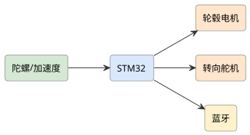
查看 PlantUML 源码
@startuml
skinparam defaultFontName "Microsoft YaHei"
skinparam rectangleRoundCorner 8
skinparam rectangleBorderColor #555
skinparam rectangleFontSize 13
skinparam arrowFontSize 11
skinparam arrowColor #333
left to right direction
rectangle "陀螺/加速度" as imu #d5e8d4
rectangle "STM32" as stm #dae8fc
rectangle "轮毂电机" as motor #ffe6cc
rectangle "转向舵机" as servo #ffe6cc
rectangle "蓝牙" as bt #fff2cc
imu --> stm
stm --> motor
stm --> servo
stm --> bt
@enduml项目背景与应用场景
自行车动态平衡与两轮平衡车本质不同：低速时自行车几乎无自稳能力（陀螺效应与前轮尾迹效应都随速度下降），必须靠转向协调控制。常见错误做法是把平衡车 PID 直接照搬——本项目客观修正：以"速度相关的转向协调控制"为核心命题，低速段（<1 m/s）明确声明为设计盲区。
系统总体设计
车体（小型模型自行车 + 车把转向舵机（前轮转向执行）+ 飞轮/质心块可选（辅助配平））→ 感知层（IMU 侧倾角 + 编码器（车速）+ 转角编码）→ 控制层（STM32F4：侧倾环→转向角内环串级 + 速度调度（增益随车速调整））→ 动力（后轮驱动，维持最低巡航速度）→ 遥测（蓝牙日志）。
硬件组成
STM32 + 陀螺仪/加速度计 + 轮毂电机 + 转向舵机 + 编码测速 + 蓝牙。
实现方案
- 方案 A（双轮平衡）：IMU 反馈用 PID 控制轮毂电机保持直立，蓝牙调参，验证平衡算法。
- 方案 B（循迹骑行）：在方案 A 上加循迹与避障，实现自主平衡骑行与路径跟随。
详细实施步骤
- 第 1 步 动力学认知与建模简化：自行车平衡机理梳理（陀螺效应/尾迹/质心转向的耦合——文献综述先行）；简化模型：侧倾-转向-速度耦合的线性化模型（速度作为调度变量）；仿真先行（Python 数值仿真验证控制结构可行性——上车前先在纸上不炸）。
- 第 2 步 传感器与执行标定：IMU 安装位置（靠近车架质心，减小离心加速度干扰——转弯时的离心力会污染侧倾估计，这是与平衡车不同的重要坑）；转向舵机回差标定；车速编码器标定。
- 第 3 步 串级控制与速度调度：内环：转向角控制（舵机位置环）；外环：侧倾角→目标转向角（PD 为主）；速度调度：增益表随车速切换（1~3 m/s 分档实测——低速大增益高频响、高速小增益防震荡）；起步策略：助跑/辅助支架启动至最低工作速度。
- 第 4 步 转弯与路径跟随：目标侧倾→转弯协调（转向角与侧倾的稳态关系）；遥控转弯指令平滑；直线路径保持（视觉或磁迹引导可选）；急停策略（减速同时落杖保护——低速失稳的保护动作）。
- 第 5 步 安全与跌落保护：训练期辅助支架（快速脱开）；摔倒检测（侧倾超限断驱动+舵机回中）；限速与场地隔离；防护装备与试验规程——动态平衡项目的试验安全是纪律不是建议。
- 第 6 步 试验验证：速度分档平衡时长统计（1/1.5/2/3 m/s 各 20 次）；扰动试验（侧向推力/载重偏置）；转弯半径与侧倾实测；失败工况归因（低速失稳/传感器噪声/舵机回差占比）；与仿真预测对照偏差分析。
关键技术点
- 速度调度增益表的分档整定（自行车平衡的速度依赖性）
- 离心加速度污染侧倾估计的安装位避坑与滤波
- 侧倾-转向协调控制结构（区别于平衡车直接 PID）
- 低速盲区的诚实声明与落杖保护设计
- 仿真先行-实车验证的偏差闭环
难点与对策
- 低速段原理性失稳（<1 m/s） → 声明为设计盲区并设最低巡航速度；起步用辅助——不硬宣称全速域平衡
- 舵机回差与响应慢（转向执行是瓶颈） → 数字舵机/直驱方案对比；回差补偿；响应带宽实测
- IMU 姿态估计被离心力污染 → 安装位优化+速度前馈补偿；转弯工况单独标定
- 实车试验迭代慢且损耗高 → 仿真参数预整定；分阶段上车身（台架→辅助→独立）；每轮试验全量日志
软件流程
IMU 采姿态 → 平衡 PID → 轮毂驱动 → 转向 → 蓝牙调参/避障。
创新点与拓展
创新点：正面处理自行车与平衡车的本质差异（速度相关转向协调而非照搬 PID）；离心力污染姿态估计的工程坑显式记录；速度分档增益表与失败归因统计的定量试验方法；低速盲区诚实声明的工程严谨性。
拓展方向：无人自行车路径跟随比赛平台；飞轮力矩陀螺辅助低速平衡（扩展论证）；车把电机直驱改造提升转向带宽。
课程对接：单片机原理及应用、算法分析与设计、传感器与检测技术实验、智能机器人技术实践、机器人传感器通信

查看 PlantUML 源码
@startuml
skinparam defaultFontName "Microsoft YaHei"
skinparam rectangleRoundCorner 8
skinparam rectangleBorderColor #555
skinparam rectangleFontSize 13
skinparam arrowFontSize 11
skinparam arrowColor #333
left to right direction
rectangle "激光雷达" as lidar #d5e8d4
rectangle "里程计" as odo #d5e8d4
rectangle "树莓派" as pc #dae8fc
rectangle "轮毂电机" as motor #ffe6cc
rectangle "地图前端" as map #f8cecc
lidar --> pc
odo --> pc
pc --> motor
pc --> map
@enduml项目背景与应用场景
激光 SLAM 是移动机器人导航的标准技术栈，学生项目常止步于"跑通 demo"。本项目把重心放在评测与工程化：建图质量怎么量化、定位精度怎么测、动态障碍（走动的人）怎么处理——评测能力是 demo 与系统的分水岭。
系统总体设计
底盘（两轮差速 + 编码器里程计）→ 感知（2D 激光雷达（RPLIDAR A1 级，成本可控）+ IMU 融合）→ SLAM 层（Gmapping（滤波）与 Cartographer（图优化）双方案对比）→ 导航层（ROS Navigation 栈：全局 A*/局部 DWA）→ 上位（RViz 可视化+多点巡航任务）。
硬件组成
树莓派/工控机 + 激光雷达 + 轮毂电机 + 里程计 + WiFi/4G + 地图前端。
实现方案
- 方案 A（自主建图）：激光雷达+里程计做 SLAM 建图与定位，自主导航避障，适合巡检。
- 方案 B（多机编队）：在方案 A 上做多机地图共享与编队，提升作业覆盖。
详细实施步骤
- 第 1 步 底盘与里程计质量：差速底盘运动学标定（轮径/轴距实测）；里程计漂移测试（直线 10 m/回环闭合误差——里程计质量是 SLAM 底座，很多 demo 翻车在此）；IMU 内外参标定。
- 第 2 步 双 SLAM 方案对比：Gmapping（依赖里程计，参数少）vs Cartographer（含 IMU 融合与后端优化，参数多）同场景建图对比；建图质量量化：占据栅格一致性（墙体厚度/重影）、回环闭合误差（绕楼一层回到起点的位姿漂移）——给出选择依据而非道听途说。
- 第 3 步 定位与重定位：AMCL 蒙特卡洛定位；定位精度实测（指定点位误差统计）；绑架测试（抱起机器人放别处——重定位成功率与耗时）；退化场景（长走廊几何对称——定位发散的典型场景，如实记录）。
- 第 4 步 导航与动态障碍：全局路径+局部避障参数整定（代价地图膨胀半径与机器人实际半径对齐——碰撞的常见根因）；动态行人处理（激光聚类跟踪+速度预测的简化版；重规划频次）；狭窄通道（门宽 <1.5× 机器人直径）通过策略。
- 第 5 步 任务层工程化：多点巡航任务（巡逻点序列+到点动作）；充电桩对接可选；任务日志（位姿/电量/异常 1 Hz 落盘——运维数据）；异常自恢复（卡死检测+脱困动作序列）。
- 第 6 步 综合评测：三场景（实验室/走廊/大厅）×三指标（建图一致性/定位误差/导航到达率）矩阵评测；连续 5 天自主运行可靠性统计（MTBF——真实工程指标）；与单纯 demo 的差异点总结。
关键技术点
- 里程计标定与漂移实测（SLAM 质量底座）
- Gmapping vs Cartographer 的量化对比与选型依据
- AMCL 定位误差统计+绑架重定位测试方法
- 代价地图参数与实体半径对齐的碰撞根因排查
- 连续运行 MTBF 的可靠性工程指标
难点与对策
- 长走廊/玻璃墙等传感退化场景 → 几何对称场景定位退化如实记录（补充反光板或视觉特征为扩展）；玻璃墙激光穿透——贴防撞条+声呐补充的工程对策
- 动态行人导致误避障震荡 → 行人聚类跟踪+速度阈值区分；局部代价衰减参数整定
- ROS 版本与驱动坑（环境碎片化） → 锁定版本+容器/快照固化环境；环境搭建记录文档化
- 算力限制（板载算力预算） → Jetson 或 x86 NUC 按算力预算选型；SLAM 后端与任务层分级部署
软件流程
雷达/里程采集 → SLAM → 定位导航 → 避障 → 任务执行。
创新点与拓展
创新点：以评测体系（建图一致性/绑架测试/MTBF）替代 demo 展示；双 SLAM 方案量化对比给出可复现选型依据；动态行人处理的简化跟踪-预测链路；退化场景（长走廊/玻璃）如实归档的工程诚实。
拓展方向：多楼层地图（电梯对接属工程扩展）；视觉-激光融合定位；把评测方法整理为导航课程实验。
课程对接：单片机原理及应用、算法分析与设计、计算机视觉、智能机器人技术实践、机器人传感器通信、嵌入式Linux应用开发

查看 PlantUML 源码
@startuml
skinparam defaultFontName "Microsoft YaHei"
skinparam rectangleRoundCorner 8
skinparam rectangleBorderColor #555
skinparam rectangleFontSize 13
skinparam arrowFontSize 11
skinparam arrowColor #333
left to right direction
rectangle "垃圾桶识别" as cam #d5e8d4
rectangle "树莓派" as pi #dae8fc
rectangle "STM32 底盘" as stm #dae8fc
rectangle "超声波" as ult #d5e8d4
rectangle "调度云" as cloud #e1d5e8
cam --> pi
pi --> stm
ult --> stm
stm --> cloud
@enduml项目背景与应用场景
原方案设想社区内自主巡回收运垃圾。客观约束先讲清：户外全场景（雨/坡/行人/宠物）在学生项目尺度不可达，需收窄——定位为"园区/校园半封闭环境的定点收集"：固定投放点巡访+召唤式上门（App 呼叫），雨雪天停运如实声明。
系统总体设计
移动平台（户外级四轮差速（独立悬挂+大扭矩轮毂电机）+ GPS/RTK 定位与激光融合（户外激光退化——RTK 为主））→ 感知（视觉垃圾识别（满溢垃圾袋/散落物）+ 深度相机（近距抓取））→ 操作臂（5~6 自由度轻量臂 + 二指夹爪（抓袋为主——抓散落瓶罐是难度天花板，分档））→ 云端（任务调度+召唤订单+电柜管理）。
硬件组成
STM32 底盘 + 树莓派视觉 + 超声波避障 + 垃圾桶识别 + 4G + 调度云。
实现方案
- 方案 A（巡回收运）：沿固定路线巡航，视觉识别垃圾桶并避障收运，4G 上报满溢状态。
- 方案 B（路径优化）：在方案 A 上按满溢预测动态规划路线，提升收运效率。
详细实施步骤
- 第 1 步 场景收窄与投放点设计：园区实地勘测：投放点数量/间距/路面坡度/遮雨条件；点位地图建图（RTK 打点+激光辅助）；雨雪停运规则与室内充电坞设计——运营规则是户外机器人项目的一半工作量。
- 第 2 步 户外定位与导航：RTK 差分定位（厘米级，基站架设）；激光退化场景（强光/长直路）的应对：RTK+编码器融合；行人避让（低速 0.8 m/s+语音提示+急停区——户外安全冗余从严）；坡道（<5°）通过实测。
- 第 3 步 垃圾袋抓取作业：识别目标分级：整袋（主任务，成功率高）> 散落大件（瓶/盒）> 散落小件（烟头/纸屑——如实声明不做，边刷兜底方案讨论）；抓取流程（深度相机位姿估计→夹爪张开度规划→提起重量校验）；失败重试与人工呼叫兜底。
- 第 4 步 调度与召唤系统：云端调度：巡访时刻表+召唤订单插入（贪心排序）；电量管理（电量阈值返航充电坞）；多点任务的状态机（前往/作业/返航/充电/待命）；App 召唤交互（预计到达时间估算）。
- 第 5 步 卫生与气味控制：封闭垃圾舱（防漏防臭）；满舱检测（重量+超声双传感）；舱内自动消杀喷淋；作业后夹爪自清洁——卫生设计直接决定物业是否接受。
- 第 6 步 现场验证：园区连续运行 2 周：召唤响应时延、抓袋成功率（按袋型分档：标准袋/超重袋/破漏袋）、避让行人次数与误停率、满舱清运闭环、雨后路面湿滑工况；物业与居民满意度访谈；停运天数与原因归因。
关键技术点
- 半封闭场景收窄+运营规则设计（雨雪停运/充电坞）
- RTK 为主激光为辅的户外定位融合
- 抓取目标分级（袋主/小件兜底）与失败重试策略
- 召唤订单插入的调度状态机
- 封闭垃圾舱+自清洁的卫生工程（物业接受度关键）
难点与对策
- 户外环境复杂度爆炸（天气/宠物/地形） → 工况边界清单（风速/雨量/坡度）+越界停运；不宣称全天候
- 散落小垃圾抓取不可行 → 目标分级+边刷兜底+人工兜底通道；能力边界写进用户说明
- RTK 在楼间遮挡漂移 → 遮挡路段预规划（降速+里程计推算）；漂移检测与安全停车
- 公共道路合规（上路属性） → 限定园区/校园内部道路；与物业协议；不进入市政道路的合规声明
软件流程
路径规划 → 巡航 → 视觉识别 → 收运 → 满溢上报 → 调度。
创新点与拓展
创新点：户外全场景宣称收窄为半封闭定点+召唤模式（范围修正写入方案）；抓取能力分级与小件兜底路线的诚实设计；卫生工程（封闭舱/自清洁）作为物业接受度的核心变量；雨雪停运规则的运营思维。
拓展方向：垃圾满溢预测调度（投放点数据积累）；与社区分类积分系统联动；夜间静音作业模式。
课程对接：单片机原理及应用、计算机视觉、算法分析与设计、无线传感器网络、云计算导论
查看 PlantUML 源码
@startuml
skinparam defaultFontName "Microsoft YaHei"
skinparam rectangleRoundCorner 8
skinparam rectangleBorderColor #555
skinparam rectangleFontSize 13
skinparam arrowFontSize 11
skinparam arrowColor #333
left to right direction
rectangle "气敏阵列" as nose #d5e8d4
rectangle "STM32" as stm #dae8fc
rectangle "机械臂" as arm #ffe6cc
rectangle "传送带" as conv #ffe6cc
rectangle "气味识别" as ai #d3e0ea
nose --> ai
ai --> stm
stm --> arm
stm --> conv
@enduml项目背景与应用场景
视觉分拣对"外观相近"的物品（如外观相同的合格/变质食品、真假香料）无能为力，电子鼻（气体传感器阵列）正好补盲区。本项目核心是"视觉粗分+气味细分"的协同决策，而非两个传感器简单并联——协同逻辑（何时信鼻子、何时信眼睛）才是创新所在。
系统总体设计
传送带（可调速+编码器测速+光电对位）→ 视觉工位（俯视相机：类别/位置/外观缺陷）→ 气味工位（电子鼻探头下探或抽气采样：气体传感器阵列（TGS 系列交叉敏感组合））→ 决策层（STM32F4：视觉+气味证据融合（贝叶斯/规则表））→ 执行层（3~4 自由度分拣臂或气吹分流（按吞吐选型））。
硬件组成
STM32 + 多通道气敏阵列(电子鼻) + 机械臂 + 传送带 + 工业通信。
实现方案
- 方案 A（气味分拣）：电子鼻判别物料气味类别，STM32 驱机械臂按类分拣，适合食品/回收。
- 方案 B（多模态）：在方案 A 上加视觉辅助与自校准，提升气味识别鲁棒性。
详细实施步骤
- 第 1 步 应用对与判据定义：选定具体判别对（如：合格花生 vs 霉变花生；新茶 vs 陈茶——气味差异可测而外观难分）；判据定义：视觉特征清单+气味响应指纹；采集标准与样本量预算（每类 ≥50 样本、含储存时间梯度）。
- 第 2 步 电子鼻硬件与采样协议：传感器阵列选型（TGS826（氨）/TGS2620（VOC）交叉组合——单一 MQ135 分不出气味类别的常见错误要指正）；气路设计（抽气泵+气室+清洁空气冲洗循环——气味残留（carry-over）是电子鼻最大坑，冲洗协议必须实测标定）；采样周期与传送带节拍匹配。
- 第 3 步 阵列响应建模：响应特征提取（峰值/斜率/稳态面积）；阵列指纹 PCA/聚类初看类别可分性（先看数据再上模型）；分类模型（LDA/小型 SVM，小样本现实约束）；批次漂移补偿（每批次开机空采基线）。
- 第 4 步 视觉-气味协同决策：决策规则：视觉高置信→直接分拣（省节拍）；视觉模糊/外观一致→触发气味工位；两者矛盾→复核通道（人工抽检+争议样本入库）；阈值由混淆矩阵代价定（误弃合格品 vs 漏检变质的不对称成本——对齐食品安全逻辑）。
- 第 5 步 执行与节拍：吞吐目标界定（如 1 件/s 桌面级）；分拣执行选型（小臂 vs 气吹的节拍-成本权衡实测）；传送带速度与三工位时序编排（视觉/气味/执行流水线）；连续运行卡件检测。
- 第 6 步 验证：判别准确率矩阵（按对/按工位单独与协同统计）；气味残留导致的串扰率（冲洗协议有效性）；节拍实测 vs 设计；连续 4 h 运行漂移（传感器温漂/基线漂移曲线）；争议样本人工复核记录。
关键技术点
- 交叉敏感阵列组合与气路冲洗协议（carry-over 抑制）
- 响应指纹特征+小样本分类的现实约束建模
- 视觉/气味证据的协同决策表与非对称代价阈值
- 三工位流水线节拍编排
- 争议样本入库的人工复核闭环
难点与对策
- 气味残留串扰（上一件污染下一件测量） → 冲洗循环协议实测标定；串扰率作为核心指标；不可控时降速或间隔空采
- 传感器漂移与批次不一致 → 开机基线校准+定期标气校验；漂移补偿模型；传感器寿命预算
- 气味对环境温湿度敏感 → 温湿度同步记录并补偿；标定与实测同工况
- 训练样本采集规范性（同源不同批次差异大） → 采样 SOP（量/容器/静置时间）；批次因子作为实验设计变量
软件流程
气敏采集 → 气味识别 → 规划 → 机械臂分拣 → 传送带配合。
创新点与拓展
创新点：视觉粗分+气味细分的协同决策（矛盾走复核）而非双传感器并联；非对称代价阈值对齐食品安全逻辑；气味残留串扰的冲洗协议工程；争议样本库的持续改进闭环。
拓展方向：更多判别对扩展（香料真伪/药材陈新）；电子鼻响应库开放为教学数据集；连续气路提升节拍的工程升级。
课程对接：单片机原理及应用、传感器与检测技术实验、算法分析与设计、嵌入式Linux应用开发、人工智能导论
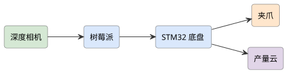
查看 PlantUML 源码
@startuml
skinparam defaultFontName "Microsoft YaHei"
skinparam rectangleRoundCorner 8
skinparam rectangleBorderColor #555
skinparam rectangleFontSize 13
skinparam arrowFontSize 11
skinparam arrowColor #333
left to right direction
rectangle "深度相机" as cam #d5e8d4
rectangle "树莓派" as pi #dae8fc
rectangle "STM32 底盘" as stm #dae8fc
rectangle "夹爪" as arm #ffe6cc
rectangle "产量云" as cloud #e1d5e8
cam --> pi
pi --> stm
stm --> arm
stm --> cloud
@enduml项目背景与应用场景
果园采摘机器人是热门但难度被普遍低估的方向：果实识别（遮挡/光照）、定位（枝叶晃动）、末端执行（不伤果不伤树）三大难点叠加。客观修正定位：本项目做"球形水果（柑橘/苹果）的识别-定位-单果采摘样机"，验证对象是单果成功率与节拍，不宣称整园无人化。
系统总体设计
移动底盘（四轮差速+轮式里程计与视觉导航（果园树冠下 GPS/RTK 遮挡退化，融合兜底））→ 感知（RGB-D 相机（果实识别+定位）+ 树冠稀疏点云）→ 机械臂（4~5 自由度（臂展按果树冠层尺寸反推））→ 末端（柔夹爪/吸拉组合式末端（球形果专用））→ 控制层（Jetson 视觉计算 + STM32 实时执行）。
硬件组成
STM32 移动底盘 + 树莓派视觉 + 夹爪 + 深度相机 + 4G + 产量云。
实现方案
- 方案 A（自主采摘）：SLAM 导航巡园，视觉识别成熟果并采摘入筐。
- 方案 B（产量统计）：在方案 A 上做采摘点位地图与产量统计上云。
详细实施步骤
- 第 1 步 果园工况实测先行：本地果园（如梅州柚/柑橘）工况勘测：行距/冠层高度/果实分布密度/光照条件（顺光逆光背光）；这些数据决定臂展/相机高度/算法设计——先测果园再画图纸，顺序不能反。
- 第 2 步 果实识别数据集：自建果园数据集（不同成熟度/遮挡率/光照分档标注）；YOLO 系列检测+成熟度分类；遮挡果（叶遮挡/果遮挡）的识别率分档如实统计——全遮挡果声明不做（属下一阶段科研问题）；夜间补光作业模式（白昼强光对比度差的对策）。
- 第 3 步 果实定位与手眼标定：RGB-D 深度在反光果皮的误差实测（柑橘果皮镜面反射——深度黑洞问题，多帧融合/倾角补偿）；手眼标定（眼在手上/眼在手外两方案选型）；枝叶晃动（风）下的动态目标应对（抓取前 0.5 s 视觉锁存+快速执行）。
- 第 4 步 末端执行器设计：球形果专用末端：柔指夹持（接触面积大压强小）vs 真空吸附+扭转摘取组合——由果柄力学实测决定（拉脱力与扭断力测量）；防伤果验证（夹持力上限+接触材料）；单果作业周期分解（接近/夹持/摘取/放置各段耗时）。
- 第 5 步 导航与换行策略：行间行走（轮式里程计+视觉走线（树行对齐））；冠层对准（到树位后的定位微调）；换行掉头路径规划；作业地图（哪些树已采——进度管理）。
- 第 6 步 田间验证：单树全采实验：单果识别率（分遮挡档）→ 定位误差 → 抓取成功率 → 伤果率（分果皮损伤等级）金字塔漏斗统计；单果节拍实测（目标 <15 s/果——与人工采摘效率对照并诚实分析差距）；连续 2 天可靠性（卡死/误差累计）。
关键技术点
- 果园工况实测驱动的整机参数反推
- 遮挡分档的果实识别与能力边界声明
- 反光果皮深度误差的多帧融合补偿
- 果柄拉脱/扭断力学实测支撑的末端设计
- 识别→定位→抓取→伤果的金字塔漏斗评测
难点与对策
- 单果节拍远慢于人工（现实差距） → 如实对照并给出效率提升路径（多末端并行/优化路径）；定位为验证平台而非替代人工
- 枝叶晃动导致抓取失败率波动 → 锁存-快执行策略；风速阈值停采规则；失败重试上限
- 树冠下 GPS/RTK 退化 → 里程计+视觉融合；树位地标（色标/反光板）工程对策
- 季节窗口限制（花期果期固定） → 非果期完成台架/仿真验证；果期集中验证计划前置；人工靶标补充测试
软件流程
SLAM 巡园 → 视觉识别 → 采摘 → 计数 → 上云。
创新点与拓展
创新点：金字塔漏斗评测（识别/定位/抓取/伤果逐级归因）替代笼统成功率；果柄力学实测支撑末端设计（不拍脑袋）；反光果皮深度黑洞问题的工程对策；与人工效率的诚实对照与差距归因。
拓展方向：多机协同（采运分工）；修剪/套袋任务扩展；识别模型果园持续部署迭代。
课程对接：单片机原理及应用、计算机视觉、智能机器人技术实践、算法分析与设计、嵌入式Linux应用开发
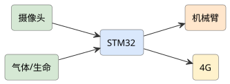
查看 PlantUML 源码
@startuml
skinparam defaultFontName "Microsoft YaHei"
skinparam rectangleRoundCorner 8
skinparam rectangleBorderColor #555
skinparam rectangleFontSize 13
skinparam arrowFontSize 11
skinparam arrowColor #333
left to right direction
rectangle "摄像头" as cam #d5e8d4
rectangle "气体/生命" as gas #d5e8d4
rectangle "STM32" as stm #dae8fc
rectangle "机械臂" as arm #ffe6cc
rectangle "4G" as g #fff2cc
cam --> stm
gas --> stm
stm --> arm
stm --> g
@enduml项目背景与应用场景
六足机器人优势是腿式地形通过性（废墟瓦砾/楼梯），但学生项目常见问题：舵机版腿式机功率密度低、续航短，实际载不动任务载荷。客观修正：本项目定位为"废墟环境侦察平台"（轻载荷：相机+麦克风+气体传感），步态与越障为核心科目，不宣称救援作业（拖拽/破门）。
系统总体设计
构型（18 自由度六足（3 关节/腿，大扭矩总线舵机——力矩预算按整机重量反推））→ 感知（IMU+关节电流反馈+前视相机+麦克风阵列（声学辅助）+气体传感（可燃/CO——废墟场景刚需））→ 控制（上位机决策 + STM32 关节实时控制分层）→ 通信（WiFi+4G，失效时自主返航+黑匣子）→ 电源（锂电分组：动力/载荷分路与电压监控）。
硬件组成
STM32 六足底盘 + 摄像头 + 气体/生命探测 + 机械臂 + 4G + 地面站。
实现方案
- 方案 A（废墟搜救）：六足适应复杂地形，搭载探测与机械臂清理通道，4G 回传画面。
- 方案 B（集群协同）：在方案 A 上做多机分区搜救与中继通信。
详细实施步骤
- 第 1 步 力矩预算与构型验证：整机重量预估→单腿支撑力矩计算→舵机选型（力矩余量 ≥1.5×——腿式机最常见的选型不足源于跳过这步计算）；单腿台架（摆动轨迹验证先行）；重心配置（电池/载荷位置对步态稳定域影响）。
- 第 2 步 步态开发：三角步态（三足支撑）先行→波动步态（稳定性高速度慢）对比；不平整地面适应（足端接触检测（电流估计）+姿态闭环）；台阶/管道/碎石场地分项测试（越障高度与机身间隙量化）；跌倒自恢复（翻身步态——自恢复成功率统计）。
- 第 3 步 灾后载荷集成：相机（前视+俯仰云台）；麦克风阵列（敲击声/呼救声检测与方向粗估——声学辅助定位的可行边界如实说明：噪声环境失效条件）；气体传感（可燃+电化学 CO）；载荷重量对步态的回代验证（0 g/满载步态对比）。
- 第 4 步 通信与自主返航：WiFi/4G 视频回传；信号衰减（废墟遮挡）时策略：路径记录+自主原路返航（里程计航位推算——室内无 GPS 的返航链路）；黑匣子（数据落盘，炸机后可读）；一键召回。
- 第 5 步 环境适应与防护：防尘优先的 IP 防护；关节防沙罩；高低温运行测试；电磁兼容（对讲机干扰测试——救援现场强电磁环境）。
- 第 6 步 综合演练：模拟废墟场（预制瓦砾堆/管道/台阶）：越障通过率（分地形类型）、自恢复成功率、声学/气体检测有效性、续航实测（侦察/静默监听模式功耗分档）、通信中断返航成功率；与轮式底盘的通过性对照实验（用数据说明为什么用腿）。
关键技术点
- 力矩预算计算与 1.5× 余量选型方法（腿式机第一课）
- 三角/波动步态对比+足端接触检测的不平地适应
- 航位推算自主返航与黑匣子数据保障
- 声学/气体载荷的可行边界如实界定
- 与轮式底盘通过性对照的构型价值论证
难点与对策
- 舵机功率密度低续航短（腿式机物理现实） → 任务模式功耗分档（侦察/静默/待命）；电池分组管理；续航如实公示
- 步态调试复杂度高（18 关节耦合） → 分层调试（单腿→步态→整机）；仿真预验证（PyBullet）；每轮全量日志
- 废墟环境超出防护能力 → 工况边界清单+越界停机；粉尘/水浸极限不做宣称
- 声学生命探测在噪声环境失效 → 失效条件实测并声明；定位为辅助手段非生命探测仪替代——不抢专业设备的功能宣称
软件流程
行进 → 探测 → 清理/标记 → 4G 回传 → 指挥。
创新点与拓展
创新点：力矩预算先行避免选型不足（腿式机最大坑的方法论化）；与轮式底盘的通过性对照实验让"为什么用腿"有数据；声学探测可行边界与失效条件如实声明（不越位替代专业设备）；黑匣子+航位返航的失效保障链。
拓展方向：视觉 SLAM 室内建图扩展；多机协同（六足侦察+轮式运输）；步态库开放为教学资源。
课程对接：单片机原理及应用、智能机器人技术实践、计算机视觉、无线传感器网络、嵌入式Linux应用开发
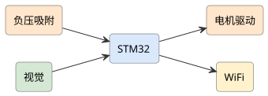
查看 PlantUML 源码
@startuml
skinparam defaultFontName "Microsoft YaHei"
skinparam rectangleRoundCorner 8
skinparam rectangleBorderColor #555
skinparam rectangleFontSize 13
skinparam arrowFontSize 11
skinparam arrowColor #333
left to right direction
rectangle "负压吸附" as suck #ffe6cc
rectangle "视觉" as cam #d5e8d4
rectangle "STM32" as stm #dae8fc
rectangle "电机驱动" as motor #ffe6cc
rectangle "WiFi" as wifi #fff2cc
suck --> stm
cam --> stm
stm --> motor
stm --> wifi
@enduml项目背景与应用场景
爬壁机器人核心是吸附方式选型，这决定了适用壁面：负压吸附（玻璃/光滑面）、磁吸附（铁磁面）、仿生干吸附（微结构难自制）、推力压附（旋翼反推复杂）。原方案若未明确壁面目标则范围空泛——客观修正：选定"玻璃/瓷砖光滑幕墙"为主工况，负压吸附（风机+密封裙边）路线，配失吸保护（双风机+物理安全绳）。
系统总体设计
吸附系统（离心风机+负压腔+密封裙边（负压维持与功耗核心）+真空度传感）→ 移动系统（履带式（贴合面大适合曲面过渡）或轮式四轮独立驱动）→ 感知（IMU 姿态+真空度+边缘检测（防跌落）+相机（幕墙巡检））→ 安全（安全绳+缓降器（工程样机强制性冗余）+ 失吸检测急停）→ 任务（幕墙巡检影像/清洁演示）。
硬件组成
STM32 + 负压/吸附机构 + 视觉(表面缺陷) + 电机驱动 + WiFi + 屏。
实现方案
- 方案 A（壁面作业）：负压吸附爬壁，搭载视觉检测墙面裂纹/污损，适合高楼外墙。
- 方案 B（自主巡检）：在方案 A 上做路径规划与缺陷地图生成。
详细实施步骤
- 第 1 步 吸附选型计算：负压吸附理论计算链：整机重量→所需吸附力（安全系数 ≥2，含风载）→负压腔面积与真空度需求→风机选型（离心风机流量-真空度曲线）；裙边材料与密封性实验（负压泄漏率——裙边是成败细节）；不同壁面（玻璃/瓷砖/糙面砖）的附着实测矩阵。
- 第 2 步 机体与行走机构：履带式 vs 轮式选型对比；越缝能力（窗框凸台高度与履带柔顺性）；转弯策略（吸附状态下转向阻力大——速度规划要慢，打滑检测）；横移能力（清洁作业需要覆盖率）。
- 第 3 步 安全冗余设计：失吸检测（真空度阈值）→秒级响应：双风机冗余启动+急停+安全绳锁定；物理安全绳+缓降器（坠落冲击计算——工程样机必须绳保护，安全不依赖电子）；电源冗余（动力/控制分路+低电预警返航）。
- 第 4 步 姿态控制与越障：IMU 姿态监测（打滑/倾斜检测）；竖直爬行速度控制（速度-负压裕度联动：提速前检查真空度余量）；窗框凸台越障（履带张紧微调）；跨越窗框的路径序列。
- 第 5 步 任务载荷：巡检模式：相机+玻璃缺陷识别（裂纹/密封条老化——数据集自建，玻璃反光工况处理）；清洁演示：擦拭模块（喷水+刮片——清洁质量以透光率对比量化）；载荷重量回代负压计算。
- 第 6 步 幕墙验证：教学楼玻璃面实测：不同材质吸附力矩阵、竖直爬升速度、越窗框成功率、失吸保护注入测试（人为关一台风机——保护必须生效）、连续作业时间与功耗；安全规程成文（作业区警戒/绳索检查清单）。
关键技术点
- 吸附力理论计算+安全系数 2×+风载的选型方法
- 密封裙边泄漏率实验（负压系统成败细节）
- 失吸检测→双机冗余→物理安全绳的三级防护
- 速度-负压裕度联动的爬行控制
- 玻璃反光工况的缺陷识别与透光率量化清洁验证
难点与对策
- 壁面工况变化（糙面砖吸附失效） → 壁面适用性矩阵公示（玻璃/瓷砖优，糙面不行——能力边界明示）；粗糙面为路线图不进样机
- 裙边磨损导致负压衰减 → 磨损监测（真空度趋势）；裙边易换件设计；备件制度
- 高处坠落风险（安全底线） → 物理安全绳+缓降器为强制项（不依赖电子）；作业规程与警戒区；风天停作业规则
- 风机功耗大续航短 → 功耗预算前置；电缆 tether 供电方案（幕墙作业的工程现实方案）
软件流程
吸附爬壁 → 视觉检测 → 路径规划 → 缺陷地图。
创新点与拓展
创新点：吸附选型的量化计算链（重量→真空度→风机）替代拍脑袋；裙边泄漏率实验抓住负压系统成败细节；失吸注入测试必须通过的三级安全冗余；tether 供电等工程现实方案的正视。
拓展方向：桥梁拉索/储罐曲面扩展（需重新选型论证）；清洁机器人产品化路径分析；幕墙巡检数据集与缺陷图谱。
课程对接：单片机原理及应用、计算机视觉、智能机器人技术实践、算法分析与设计
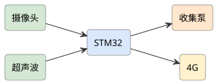
查看 PlantUML 源码
@startuml
skinparam defaultFontName "Microsoft YaHei"
skinparam rectangleRoundCorner 8
skinparam rectangleBorderColor #555
skinparam rectangleFontSize 13
skinparam arrowFontSize 11
skinparam arrowColor #333
left to right direction
rectangle "导航" as nav #d5e8d4
rectangle "树莓派" as pi #dae8fc
rectangle "STM32 底盘" as stm #dae8fc
rectangle "超声雾化" as mist #ffe6cc
rectangle "调度云" as cloud #e1d5e8
nav --> pi
pi --> stm
stm --> mist
stm --> cloud
@enduml项目背景与应用场景
公共空间消毒机器人需求真实（学校/食堂/候诊区），但两条红线必须先讲：①消毒剂（含氯/过氧化氢）对人与设备有腐蚀性——人机同场喷雾是违规操作，作业必须无人环境；②消杀率宣称必须有规范检测方法（培养片沉降法），不能拍脑袋。本项目客观定位：园区/教室无人时段的自动化喷雾作业平台。
系统总体设计
移动底盘（室内 AMR（激光 SLAM 导航）+ 防腐蚀机身（PP/316 不锈钢接触件））→ 作业系统（超微雾化器（粒径 20~50 μm 目标与实测方法）+ 药液箱液位传感+喷量计量）→ 作业规划（房间覆盖路径（按喷雾沉降特性设计间距））→ 安全（人形检测停喷+时段门禁联动+警示灯/语音）→ 管理（作业日志+药液消耗台账）。
硬件组成
STM32 底盘 + 树莓派导航 + 超声雾化 + 人体感应 + 4G + 调度云。
实现方案
- 方案 A（自主消毒）：自主导航全覆盖喷洒消毒，人体感应避让，4G 上报覆盖率。
- 方案 B（定时巡消）：在方案 A 上做多区定时任务与浓度监测。
详细实施步骤
- 第 1 步 消毒作业合规框架：消毒剂选择与配比（含氯 500 mg/L 等规范引用）；作业条件界定：无人环境+通风窗口期+金属设备遮蔽清单（腐蚀风险告知）；安全规程成文（警示牌/联锁）——合规框架先于硬件，红线清晰才能谈自动化。
- 第 2 步 雾化系统选型与表征：雾化器类型（超声雾化 vs 高压喷嘴——粒径与耗液特性对比）；粒径简易表征（载玻片沉积斑径估计+沉降时间实测）；单位面积喷量标定（往返速度×流量→mL/m²，对照规范喷量）；腐蚀防护材料清单（药液箱/管路）。
- 第 3 步 覆盖路径规划：房间建图（激光 SLAM）；喷雾路径设计（行间距按雾化扩散半径定——不是导航最短路径，是沉降覆盖最优路径）；到墙安全距离（避开插座/电子设备喷淋）；多房间任务编排与通风窗口联动。
- 第 4 步 安全联锁：人形检测（激光+视觉双通道）→立即停喷+整机停止（不是只停喷不停走）；时段门禁联锁（作业时段外无法启动）；液位与泄漏检测（药液泄漏停机）；作业记录（区域/时长/喷量台账——可追溯）。
- 第 5 步 消毒效果验证（规范性）：培养片沉降法：作业前后布片（桌面/把手/地面点位）→培养对比菌落数；点位与样本量设计（每房间 ≥5 点、重复 3 次）；不同表面（金属/木质/织物）的腐蚀观察记录——消杀率数字必须来自这套流程，不接受无布片的宣称。
- 第 6 步 运行验证：连续 2 周作业：单间作业时延、覆盖均匀性（布片方差）、人形联锁注入测试（人员闯入必须停喷停走）、药液消耗与成本核算、底盘长期可靠性；与人工喷雾的时耗/覆盖均匀性对照。
关键技术点
- 消毒作业合规框架（无人环境/通风期/腐蚀清单）前置
- 粒径-喷量-沉降的雾化表征方法（载玻片+布点实测）
- 沉降覆盖最优的路径设计（区别于导航最短路）
- 人形双通道检测→停喷+停走的安全联锁
- 培养片沉降法的规范性效果验证流程
难点与对策
- 腐蚀损伤设备与建筑（含氯/过氧的真实风险） → 金属设备遮蔽清单+材料选型+浓度上限；腐蚀观察记录制度
- 人机同场风险（最危险红线） → 无人时段作业+门禁联锁+双通道人形检测；闯入注入测试必过；规程培训
- 消杀率宣称无依据 → 培养片法规范性验证前置；无布片数据不做任何杀菌率表述
- 雾化粒径不可控（湿度过大） → 粒径表征+喷量标定；湿度传感监测；结露工况调整参数
软件流程
建图导航 → 雾化消毒 → 避人 → 覆盖上报。
创新点与拓展
创新点：把消毒合规红线（无人作业/规范布片）做成系统约束而非免责声明；沉降覆盖路径与导航路径的区分设计；双通道人形联锁+注入测试必过的安全工程；消杀率数字全部可追溯到布片实验。
拓展方向：多机器人分区作业；紫外补位模块（紫外人安全同样红线）；作业报表对接物业系统。
课程对接：单片机原理及应用、算法分析与设计、计算机视觉、无线传感器网络、云计算导论
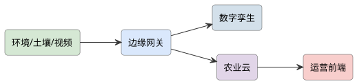
查看 PlantUML 源码
@startuml
skinparam defaultFontName "Microsoft YaHei"
skinparam rectangleRoundCorner 8
skinparam rectangleBorderColor #555
skinparam rectangleFontSize 13
skinparam arrowFontSize 11
skinparam arrowColor #333
left to right direction
rectangle "GPS/罗盘" as gps #d5e8d4
rectangle "超声波" as ult #d5e8d4
rectangle "STM32" as stm #dae8fc
rectangle "摄像头" as cam #d5e8d4
rectangle "4G" as g #fff2cc
gps --> stm
ult --> stm
cam --> stm
stm --> g
@enduml项目背景与应用场景
原方案"巡逻"概念宽泛。客观收窄：内陆静水水域（校园湖/水库库湾/景区）的安全巡查与水面异常监测——巡查内容明确为：人员落水迹象（视觉+热成像可选）、越界进入危险区的船只/游泳者、水面漂浮异常（大面积漂浮物/水色异常）。海上/大风浪工况明确不做（船体与通信等级不够）。
系统总体设计
艇体（小型艇（1.2~1.5 m，水密舱设计）+ 无刷推进（双推差速转向））→ 感知（GPS/北斗+IMU+激光测距（避障）+云台相机（可见光+可选热成像））→ 控制（航线自主+遥控接管双模式；低电/失联自动返航）→ 岸基（岸站：电子围栏设定+视频回传+警报推送）→ 电源（锂电+太阳能辅助可选（收益实测再宣称））。
硬件组成
STM32 艇体 + GPS/电子罗盘 + 避障超声 + 摄像头 + 4G + 地面站。
实现方案
- 方案 A（水域巡逻）：按航点自主巡逻，摄像头巡视岸线，异常 4G 回传。
- 方案 B（目标跟踪）：在方案 A 上做目标识别与跟踪报警。
详细实施步骤
- 第 1 步 艇体与水密设计：艇体选型/自制（玻璃钢/3D 打印+涂层）；水密舱与穿线密封（轴系/线缆过孔——漏水是水面平台第一大事故源，做浸水实验）；浮力储备（满载水线+30% 余量）；横摇稳定性测试。
- 第 2 步 推进与操控性：双推差速 vs 单推+舵的机动性对比；速度-续航实测曲线（全速/巡航/怠速三档）；抗风浪等级实测（2~3 级风/小浪工况——超界不作业）；螺旋桨防护网（水草缠绕与人员安全）。
- 第 3 步 航线自主与避障：电子围栏（岸站设定禁出边界——越界即返航，防失控漂走）；巡航航线（waypoints+航向控制 PID）；水面障碍检测（激光测距对浮标/船只+视觉辅助；激光在水汽中的退化如实测试）；避障策略（绕行+停船观察两档）。
- 第 4 步 巡查载荷与识别：云台相机视频回传（4G/WiFi 岸基双链路）；越界/落水迹象识别的可行边界（游泳者检测数据集自建、误报率如实分档；热成像为选配——早晚低温环境人体对比度好的适用条件说明）；水色异常监测（RGB 分析+人工复核——算法定位为辅助筛查）。
- 第 5 步 安全与应急：失联自动返航（通信心跳超时）；浸水检测（舱内湿度传感报警）；手动接管（一键遥控优先级高于自主）；夜间作业（警示灯+低速）；与水域管理方的作业报备制度。
- 第 6 步 水域验证：实际水域连续 4 周：航线跟踪误差（m 级）、避障成功率（投放浮标测试）、识别误报/漏报统计、续航实测、浸水/故障记录；抗风浪边界实测（几级风开始失控——边界数据比"能跑"重要）；管理方使用反馈。
关键技术点
- 水密设计与浸水实验（水面平台第一事故源防控）
- 电子围栏越界返航（防失控漂走的底线设计）
- 水面激光退化的避障实测与两档避障策略
- 落水/越界识别的可行边界与误报率分档
- 抗风浪边界实测（边界数据优于功能罗列）
难点与对策
- 风浪超界失控/倾覆 → 抗浪等级实测+电子围栏+失联返航三重防线；超界天气禁航制度
- 水草缠绕推进器 → 防护网+倒转脱困程序；缠绕自检（电流异常检测）
- 湖面 4G 覆盖不稳 → 岸基 WiFi 中继方案（扩展）；失联即返航兜底
- 识别算法误报（反光/鸟/浮标） → 误报率分档公示；人工复核流程（算法定位为筛查辅助）
软件流程
设航点 → 自主巡航 → 巡视 → 异常回传 → 指挥。
创新点与拓展
创新点："巡逻"收窄为内陆静水三类明确巡查对象；水密/围栏/失联返航的失效底线设计链；抗风浪边界实测数据化（不宣称全天候）；识别功能定位为辅助筛查+人工复核的分工诚实。
拓展方向：水质采样模块（采水器+传感）；多艇协同分区巡查；与水库管理站共建巡查流程。
课程对接：单片机原理及应用、算法分析与设计、无线传感器网络、计算机视觉、嵌入式Linux应用开发
查看 PlantUML 源码
@startuml
skinparam defaultFontName "Microsoft YaHei"
skinparam rectangleRoundCorner 8
skinparam rectangleBorderColor #555
skinparam rectangleFontSize 13
skinparam arrowFontSize 11
skinparam arrowColor #333
left to right direction
rectangle "摄像头" as cam #d5e8d4
rectangle "STM32" as stm #dae8fc
rectangle "收集泵" as pump #ffe6cc
rectangle "超声波" as ult #d5e8d4
rectangle "4G" as g #fff2cc
cam --> stm
stm --> pump
ult --> stm
stm --> g
@enduml项目背景与应用场景
蓝藻水华/绿潮打捞目前靠人工撑船+捞网，效率低且有健康风险。无人打捞船的合理切入点：水面藻浆/漂浮垃圾的视觉识别+传送带收集演示。客观约束：①"杀藻/抑藻"化学功能不进样机（涉水体排放合规）；②大面积水华作业需要大收集舱与船队调度，样机定位为"识别-收集-容量管理"的闭环演示。
系统总体设计
艇体（双体船（稳定性+收集舱空间）+ 前端斜插式传送带收集口（水面截流））→ 感知（云台相机+前视视觉（藻带/垃圾识别与引导）+ 超声（水下障碍）+ 舱满检测（对射光电+重量））→ 导航（GPS 航线+视觉引导末段逼近藻带+IMU）→ 推进（双推差速+收集作业低速模式）→ 岸基（视频回传+舱容/电量看板+召回）。
硬件组成
STM32 船体 + 摄像头(水藻) + 收集网/泵 + 避障超声 + GPS + 4G。
实现方案
- 方案 A（藻华打捞）：视觉识别水藻聚集区，STM32 驱船前往并泵收集，4G 回传。
- 方案 B（区域调度）：在方案 A 上做多船分区与清理进度地图。
详细实施步骤
- 第 1 步 目标物定义与数据集：明确收集对象分级：藻浆水华带（主）/漂浮垃圾（瓶/袋——次）/水草（难——缠绕风险分析）；水色识别数据集（不同藻情水色+反光工况实地采集——水色识别受天空反射干扰大，偏振滤镜与拍摄角度策略实测）；识别目标：发现藻带→估计边界→引导逼近。
- 第 2 步 收集机构设计：前端传送带斜插式（入水深度可调——藻层厚度差异）；疏水网带（水沥干回湖，减少舱重与油耗）；收集口导流板（扩大截流宽度）；传送带与推进功率匹配（满载不打滑不堵转）；与人工捞网的收集效率对照设计。
- 第 3 步 舱满与作业管理：收集舱容量传感（对射光电料位+重量双检测）；舱满→返港卸料流程自动化；卸料接口（对接岸边收集箱）；单趟装载量与趟次统计（运营数据基础）。
- 第 4 步 视觉引导作业：远段 GPS 航线（藻情巡查覆盖）；发现藻带→视觉边界估计→末段视觉伺服逼近（低速收集模式）；风漂移补偿（藻带随风移动——作业窗口与漂移预测的简化模型）；夜间/浑水工况的能力边界声明。
- 第 5 步 水域适应性：浅滩/水下障碍（超声+吃水设计）；水草缠绕推进器（防护网+倒转脱困）；风浪等级实测与禁航规则；环保要求（漏油/噪音控制——水面设备的环保合规）。
- 第 6 步 湖面验证：实际水域 3 周：藻带识别准确率（分光照/风浪工况）、截流收集效率（单位时间收集量 vs 人工对照）、舱满判定准确率、趟次吞吐、故障归因；藻情报告输出（巡查影像+收集量——市政价值）；管理方反馈。
关键技术点
- 收集对象分级与缠绕风险分析（能力边界前置）
- 水色识别的抗反光策略（偏振/角度）与数据集建设
- 斜插传送带+疏水网带的收集机构工程
- 舱满双传感检测与卸料闭环
- 藻带漂移补偿的简化模型与作业窗口
难点与对策
- 水色识别受天空反射/浑水干扰 → 偏振滤镜+多角度拍摄策略；识别置信阈值+人工视频复核兜底
- 藻浆浓度差异大（稀藻况收集效率低） → 藻情分档作业规则（稀况不作业）；效率数据按浓度档公示
- 水草/异物缠绕传送带与推进器 → 防护网+反转脱困+电流异常自检；易卡物清单
- 大水面风浪与漂移 → 抗浪等级实测+禁航规则；风漂移预测模型；失控返航
软件流程
视觉识藻 → 导航前往 → 泵收集 → 避障 → 上云。
创新点与拓展
创新点：收集对象分级与"化学抑藻不进样机"的合规修正；水色识别抗反光策略+人工复核的算法定位；疏水网带减重等收集机构工程细节；收集量数据反哺藻情报告的市政价值闭环。
拓展方向：藻水分离装置对接（岸基脱水）；多船队调度（大面积水华）；水质多参数传感搭载。
课程对接：单片机原理及应用、计算机视觉、无线传感器网络、传感器与检测技术实验、算法分析与设计
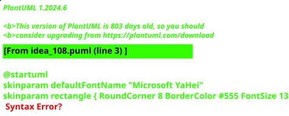
查看 PlantUML 源码
@startuml
skinparam defaultFontName "Microsoft YaHei"
skinparam rectangleRoundCorner 8
skinparam rectangleBorderColor #555
skinparam rectangleFontSize 13
skinparam arrowFontSize 11
skinparam arrowColor #333
left to right direction
rectangle "RealSense\n视觉" as cam #d5e8d4
rectangle "树莓派\n检测+位姿" as rpi #d3e0ea
rectangle "STM32F4\nFOC 主控" as f4 #dae8fc
rectangle "SimpleFOC\n驱动×3" as drv #ffe6cc
rectangle "云台电机×3" as mot #ffe6cc
rectangle "AS5600\n编码×3" as enc #d5e8d4
rectangle "薄膜压力\n传感器" as fsr #d5e8d4
rectangle "三指夹爪" as jaw #ffe6cc
cam --> rpi
rpi --> f4 : :UART
f4 --> drv : :PWM/SPI
drv --> mot
mot --> enc
enc --> f4
fsr --> f4 : :ADC
f4 --> jaw : :丝杆传动
@enduml项目背景与应用场景
工业力控夹爪价格数万元，是科研与教学机器人的门槛部件；云台电机+SimpleFOC 的组合提供了百元级力控实现路径。本项目不宣称达到工业品性能，而是客观验证"FOC 电流环做力控"在实验室条件下的抓取能力边界，并给出量化评估。
系统总体设计
执行层（三指丝杆夹爪 + 云台电机直驱）→ 驱动层（SimpleFOC：电流环 20 kHz / 速度环 / 位置环）→ 控制层（STM32F4：接触检测、恒力闭环、滑移监测）→ 感知层（AS5600 位置 + 薄膜压力 + 视觉位姿）→ 决策层（树莓派：类别判别与抓取参数下发）。
硬件组成
三指末端夹爪（2 平行指+1 对指，3D 打印+直线导轨）+ 3×无刷云台电机（GM3506）+ 3×SimpleFOC 驱动板（STM32F4 主控）+ 编码器（AS5600 磁编码）×3 + 薄膜压力传感器+六轴力传感（选配）+ WSG-32 类丝杆传动 + 树莓派（视觉位姿估计）+ RealSense D435i（选配深度）。
实现方案
- 方案 A（FOC 电流环柔顺抓取）：用云台电机做 FOC 力控（电流≈扭矩），夹爪接触物体后转入恒力闭环（0~20 N 可设），无需昂贵六维力传感器即可实现柔顺抓取鸡蛋/纸杯等易损物；SimpleFOC 开源栈降低开发门槛。
- 方案 B（视觉位姿+自适应策略）：在方案 A 基础上加树莓派+RealSense：目标检测（YOLO）+ 关键点位姿估计，输出抓取点与预抓取姿态；按物体类别（刚性/易碎/柔性）切换力控曲线与接近速度，形成"看-判-抓"完整策略。
详细实施步骤
- 第 1 步 机械设计与传动：三指布局：双指平行对握+单指对中；丝杆+导轨把电机旋转转直线运动，行程 0~80 mm；3D 打印指面加 TPU 软垫（增大摩擦、保护物体）；用 SolidWorks 建模并校核丝杆自锁条件。
- 第 2 步 FOC 驱动与标定：SimpleFOC 2.x + GM3506（带 AS5600）：先做编码器零点校准与电机相电阻测量；电流环带宽整定（目标 500 Hz），用砝码悬挂法标定 电流→夹持力 曲线（k≈0.8 N/A 量级，实测为准）；三指同步由主控统一下发力指令。
- 第 3 步 接触检测与恒力闭环：接近段速度模式 20 mm/s；电流突增超阈值或压力传感器触发判定接触，切入恒力环（PI 控制器，力目标 2~20 N 可设）；提拉阶段力保持+编码器位置监测：位置持续增大而力下降判定滑移，自动加力 10%（上限保护）。
- 第 4 步 视觉位姿估计（方案 B）：RealSense 采 RGB-D；YOLOv5n 检测物体类别，对已知物体用关键点/几何模板估计抓取位姿；未知物体用最小包围盒+质心做简化抓取点；输出经 UART 发 F4，含预抓取点、接近向量、建议力等级。
- 第 5 步 抓取策略分类：物体分三类：刚性（盒、罐：8~15 N 快速）、易碎（鸡蛋、纸杯：2~4 N 慢速）、柔性（毛巾、软包：5~8 N+TPU 软垫）；策略表经实验标定，类别→参数由树莓派查表下发。
- 第 6 步 量化评估实验：测试集 20 种物体×10 次：成功率、损伤率、滑移率、单次抓取时间；与"纯位置控制（无力控）"对照组对比突出力控价值；如实报告失败案例（过重/过滑/透明物体）与原因分析。
关键技术点
- SimpleFOC 电流环整定与 电流→夹持力 标定方法（砝码悬挂法）
- 接触检测双判据：电流突增 + 薄膜压力阈值，防止单一判据误触发
- 恒力 PI 闭环 + 滑移监测（位置-力联合判据）的自适应加力策略
- RGB-D 位姿估计：已知物关键点模板 + 未知物包围盒简化的分级方案
- 丝杆自锁设计保证断电不掉物，安全性校核
难点与对策
- 云台电机力控精度有限 → 如实给出力控误差（目标 ±10%）；不做工业级精度宣称；重要场景叠加压力传感器闭环校正
- AS5600 磁编码抗干扰弱 → 磁铁与电机保持距离并屏蔽；上电重复校零；必要时升级 MT6701
- 视觉位姿对反光/透明物体失效 → 限定测试物清单；失效物体转入"人工示教模式"（拖动示教一次记录参数）
- 三指同步与机械干涉 → 指间距软件限位；先单指调试再逐步启用三指；干涉场景在离线仿真中排除
软件流程
视觉：检测 → 位姿估计 → 抓取点下发；控制：预定位 → 接近（速度模式）→ 接触检测（电流突增）→ 恒力闭环 → 提拉（力保持+滑移监测）→ 释放。
创新点与拓展
创新点：用"电流≈力"的 FOC 路线把力控夹爪成本压到数百元并给出完整标定与误差报告；滑移监测自适应加力和"力控/位置控制对照组"实验设计使结论可量化、可复现，明确标注与工业产品的性能差距。
拓展方向：可接入机械臂本体（如 myCobot）做抓-放全流程；力控数据可用于抓取策略学习（模仿学习入门）；适合作为投递 ICRA/IROS 学生.open 之外的国内机器人竞赛与大创重点项目。
课程对接：单片机原理及应用、自动控制原理、机器人学基础、电机与拖动基础、嵌入式人工智能
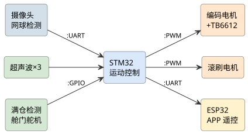
查看 PlantUML 源码
@startuml
skinparam defaultFontName "Microsoft YaHei"
skinparam rectangleRoundCorner 8
skinparam rectangleBorderColor #555
skinparam rectangleFontSize 13
skinparam arrowFontSize 11
skinparam arrowColor #333
left to right direction
rectangle "摄像头\n网球检测" as cam #d3e0ea
rectangle "超声波×3" as ultra #d5e8d4
rectangle "STM32\n运动控制" as stm #dae8fc
rectangle "编码电机\n+TB6612" as mot #ffe6cc
rectangle "滚刷电机" as brush #ffe6cc
rectangle "满仓检测\n舱门舵机" as door #d5e8d4
rectangle "ESP32\nAPP 遥控" as esp #fff2cc
cam --> stm : :UART
ultra --> stm
stm --> mot : :PWM
stm --> brush : :PWM
door --> stm : :GPIO
stm --> esp : :UART
@enduml项目背景与应用场景
网球训练后捡球占训练时间 10%~20%，市售捡球机器人价格高（数千元）。本项目以百元级底盘+视觉实现自动巡捡，技术栈覆盖视觉、控制、机构设计，是性价比与演示性俱佳的整机项目；不回避其与扫地机器人的技术同源性，差异化在动态小目标检测与收球机构。
系统总体设计
感知层（摄像头网球检测 + 超声波避障 + 满仓光电）→ 决策层（目标选择 + 覆盖路径状态机）→ 运动层（差速 PID + Pure Pursuit）→ 执行层（滚刷+铲斗收球机构）→ 交互层（APP 遥控与状态上报）。
硬件组成
差速底盘（MG513 编码电机×2 + 万向轮 + TB6612）+ STM32F103（运动控制）+ ESP32-CAM 或树莓派+摄像头（网球检测）+ 收集机构（滚刷+软胶指 + 铲斗）+ 舵机舱门 + 超声波×3 + 12V 锂电 + 手机 APP 遥控（备援）。
实现方案
- 方案 A（视觉自动巡捡）：摄像头检测网球（颜色 HSV + 轮廓，进阶 YOLOv5n），输出方位角引导底盘对准，接近后滚刷收球入仓；满仓光电检测自动返回出发点。单机可覆盖标准场地半场演示。
- 方案 B（全覆盖路径+策略巡捡）：在方案 A 基础上加全覆盖路径规划（弓字形 boustrophedon）与"发现即前往"混合策略：无目标时按覆盖路径巡航扫场，发现多球时选最近/最密集目标，提升单位时间捡球数。
详细实施步骤
- 第 1 步 底盘与收球机构：差速底盘尺寸设计以能碾过球为目标（离地间隙与滚刷包络计算）；滚刷（软胶指交错布置）转速 300~500 rpm 由电机实测；铲斗导流角度保证球单向入仓不回弹；满仓用红外对射+计数双确认。
- 第 2 步 网球检测：白天场地：HSV 黄绿色阈值+轮廓面积/圆度过滤，300 ms 内可跑通；光照复杂场景：采 2000 张自建数据集训 YOLOv5n（NCNN/K210 部署），对比两种方案在不同光照的检出率并如实报告；输出目标方位角（画面偏移→底盘转角映射）。
- 第 3 步 运动控制与对准：编码器 PID 速度闭环；对准用比例控制（偏移角→差速修正），1 m 内减速至 0.3 m/s 保证收球成功率；"不停车通过"策略：球进入滚刷包络后保持直线 0.5 s 再允许转向。
- 第 4 步 覆盖路径与目标选择：弓字形全覆盖：行距 = 摄像头有效视野宽度的 0.8 倍；发现目标时中断覆盖前往（选最近或 3 m 内多球聚类中心）；避障：超声波 <0.5 m 绕行后回到覆盖路径的最近未完成行。
- 第 5 步 满仓返航与 APP：满仓（计数 ≥20 或对射遮挡持续）后按原路径返回出发点开仓；ESP32 起热点+简易 WebSocket，手机 APP 显示电量/仓量/位置并支持手动接管（安全兜底）。
- 第 6 步 量化测试：标准场布置 30 球：测捡球速率（球/分钟）、漏检率、重复捡起率、续航；对比 HSV vs YOLO、纯视觉 vs 覆盖+目标混合策略；失败案例（半埋球/阴影球）如实归因。
关键技术点
- HSV 阈值→YOLOv5n 的分级视觉方案与自建小数据集（含阴影/半埋负样本）
- 画面偏移到差速修正的比例对准控制与"不停车收球"时序
- 弓字形全覆盖路径的行距设计（视野宽度×0.8）与断点续扫
- 滚刷-铲斗-软胶指的收球机构参数实测（转速、离地间隙、导流角）
- 满仓双确认（计数+对射）与 APP 手动接管的安全兜底
难点与对策
- 场地光照变化导致漏检 → 自动曝光锁定+HSV 阈值分段（晴天/阴天两套）；YOLO 方案做光照增广训练；漏检率按光照分档如实报告
- 球半埋/被遮挡漏捡 → 覆盖路径二次扫过机制；滚刷加装前缘软帘翻动浅埋球；完全不可见场景超出能力范围，报告中明示
- 室外风力/坡度影响航向 → 本项目定位室内/无风场地；编码器+IMU 融合减漂移，不做室外定位宣称
- 滚刷缠绕毛发杂物 → 滚刷可快拆设计；测试前清理场地；缠堵检测（电流突增即停转反转）
软件流程
视觉检测网球 → 目标选择与方位对准 → 直线接近 → 滚刷收球（不停车通过）→ 满仓检测 → 返航/继续覆盖路径 → 避障绕行。
创新点与拓展
创新点："覆盖路径+事件驱动"混合巡捡策略兼顾覆盖率与捡球效率；HSV/YOLO 双方案以同一测试集量化对比给出选型依据；收球机构的实测参数（转速-成功率曲线）使机械设计部分同样有数据支撑。
拓展方向：可扩展多机协同分区捡球（调度算法）；迁移到乒乓球/高尔夫球场景；视觉模块独立可复用于其他目标追踪课题；适合机器人竞赛与科普演示。
课程对接：单片机原理及应用、自动控制原理、数字图像处理、嵌入式人工智能、机器人学基础
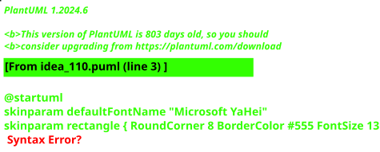
查看 PlantUML 源码
@startuml
skinparam defaultFontName "Microsoft YaHei"
skinparam rectangleRoundCorner 8
skinparam rectangleBorderColor #555
skinparam rectangleFontSize 13
skinparam arrowFontSize 11
skinparam arrowColor #333
left to right direction
rectangle "光照/人感" as s #d5e8d4
rectangle "ESP32" as esp #dae8fc
rectangle "LED" as led #ffe6cc
rectangle "NB-IoT" as nb #fff2cc
rectangle "路灯云" as cloud #e1d5e8
s --> esp
esp --> led
esp --> nb
nb --> cloud
@enduml项目背景与应用场景
乡村路灯的真实痛点不是"不智能"而是"电费与维护"：村集体经费有限，长明灯浪费严重，坏了没人修（人工巡灯成本高）。NB-IoT（广覆盖/低功耗/无自组网运维负担）适合乡村路灯的稀疏广布形态。与城市智慧路灯项目区分：本项目聚焦"按需亮灯+故障自报"两个直接省钱的功能，不做大屏展示等展示性功能。
系统总体设计
感知层（光敏（环境照度）+ 人体/车辆微波雷达（近端触发）+ 电流电压采样（灯具健康与电能统计））→ 控制层（单灯控制器（STM32L 系列低功耗 + 继电器/PWM 调光））→ 通信层（NB-IoT 模组（BC26 级）+ PSW/eDRX 省电模式）→ 平台层（轻量云（路灯状态+故障工单+电能报表））→ 村级运维（短信/微信告警到村委负责人）。
硬件组成
ESP32 + 光照/人感 + LED + NB-IoT + 云平台 + 地图 + 运维 APP。
实现方案
- 方案 A（乡村照明）：针对乡村道路做按需照明与低功耗上云，NB-IoT 免布线覆盖广，降电费。
- 方案 B（运维一体）：在方案 A 上做故障自动上报与运维派单，地图可视化管理。
详细实施步骤
- 第 1 步 乡村工况调研：选 1 个行政村试点：路灯数量/间距/供电方式（市电/太阳能）、现有电费台账（基线数据——节能效果要有对照）、村委维护流程；夜间交通人流时段分布（确定按需亮灯的时间表依据）——没有电费基线就无法证明节能。
- 第 2 步 单灯控制器硬件：STM32L+BC26 核心板；调光执行（LED 驱动 0-10V 或 PWM 接口适配——灯具接口规范调研）；计量（分流器/互感器电流采样+电能累积）；环境光与雷达融合的亮灯逻辑（人来全亮/人走 20% 半亮——照度标准与节能的平衡点按路面等级定）。
- 第 3 步 NB-IoT 链路与功耗：NB-IoT 附着/状态上报周期设计（状态日上报+故障即报——上报频率直接决定电池/电费）；PSM 深度睡眠电流实测（μA 级）；信号覆盖测试（乡村弱覆盖区域 RSRP 实测——NB-IoT 深覆盖优势的验证点）；平台 CoAP/LwM2M 协议对接。
- 第 4 步 故障自报与运维闭环：灯具故障判定（通电无电流/驱动异常/灯杆倾斜）；故障工单自动生成（短信推送村委：杆号+故障类型——巡灯人力从"定期巡"变"按单修"）；备件与维修记录回填（运维台账——系统价值在于闭环不只是告警）。
- 第 5 步 节能策略与报表：分时策略（晚 22 点后半功率/凌晨按需）；季节假日模式；电能统计报表（同比/环比——给村委的直观账单）；策略远程下发（OTA 参数+固件升级——乡村设备不能每次都爬杆）。
- 第 6 步 试点验证：试点 3 个月：电能节约率（vs 电费基线）、故障发现-修复时延（vs 人工巡灯对照）、NB-IoT 掉线率、半亮模式照度实测（路面照度计——节能不超标）、村委满意度；成本回收期测算（改造费用 vs 年省电费——乡村振兴项目的经济可行性结论）。
关键技术点
- 电费基线调研支撑的节能效果对照方法
- NB-IoT PSM 省电与上报周期的平衡设计（μA 级实测）
- 雷达+光敏融合的按需亮灯策略与照度合规
- 故障工单闭环（告警→派单→修复→台账）
- OTA 远程运维（乡村设备不可及性对策）
难点与对策
- NB-IoT 乡村覆盖盲区 → RSRP 实测先行；盲区灯位回退为本地自主策略（离线也能按需亮灯——通信失效不影响基本功能）
- 灯具接口异构（调光不兼容） → 接口适配调研先行；不兼容灯具退化为开关型控制
- 村委运维能力弱 → 工单短信直达负责人；运维流程极简化设计；培训材料
- 节能宣称无依据 → 电费基线+对照组（部分灯保持原模式）——效果必须有数据
软件流程
采光照/人感 → 调光 → NB-IoT 上云 → 故障告警 → 运维。
创新点与拓展
创新点：聚焦"省电+免巡"两个直接经济价值的克制定位（拒绝展示性功能堆砌）；NB-IoT 离线退化为本地自主策略（通信失效不影响亮灯）；故障工单闭环把告警变成运维价值；成本回收期测算的乡村振兴项目可行性论证。
拓展方向：太阳能灯位扩展（光储协同）；与市政路灯控制标准衔接；杆上扩展（摄像头/广播）论证。
课程对接：无线传感器网络、单片机原理及应用、传感器与检测技术实验、云计算导论、移动应用开发
查看 PlantUML 源码
@startuml
skinparam defaultFontName "Microsoft YaHei"
skinparam rectangleRoundCorner 8
skinparam rectangleBorderColor #555
skinparam rectangleFontSize 13
skinparam arrowFontSize 11
skinparam arrowColor #333
left to right direction
rectangle "光照/人感" as s #d5e8d4
rectangle "ESP32" as esp #dae8fc
rectangle "LED 驱动" as led #ffe6cc
rectangle "NB-IoT" as nb #fff2cc
rectangle "路灯云" as cloud #e1d5e8
rectangle "地图" as map #f8cecc
s --> esp
esp --> led
esp --> nb
nb --> cloud
cloud --> map
@enduml项目背景与应用场景
与《基于 NB-IoT 的智能节能路灯系统（乡村振兴）》差异化定位：兄弟项目纵深在"按需亮灯策略与乡村运维经济账"（电费基线/故障工单/成本回收），本项目纵深在"可视化平台工程"——园区/校园路灯的灯位地图、灯况组态大屏、远程调光策略的可视化配置、能耗数据的多维看板。控制策略做基础档（分时+远程开关），平台侧做深，两个项目场景与重心均不同。
系统总体设计
感知层（单灯控制器（STM32L+NB-IoT 模组：电流电压采样/开关/PWM 调光/灯杆倾斜检测））→ 通信层（NB-IoT（CoAP/LwM2M 上报；PSM 省电））→ 平台层（灯位 GIS 地图 + 组态可视化大屏（灯况状态渲染/告警闪烁）+ 策略配置引擎（分时/分组/调光曲线可视化编排）+ 能耗数据仓库（时序库））→ 看板层（能耗报表（分组/时段/对比）+ 告警中心 + 大屏投放模式）。
硬件组成
ESP32 + 光照/人体感应 + LED 驱动 + 摄像头(可选) + NB-IoT + 云平台 + 地图。
实现方案
- 方案 A（按需照明）：光照/人感联动调光节能，NB-IoT 低功耗上云上报状态与故障。
- 方案 B（城市联动）：在方案 A 上做区域群控与用电统计，地图呈现亮灯率与故障点。
详细实施步骤
- 第 1 步 场景与数据模型定义：场景锁定：园区/校园路灯（100~500 杆级模型演示+局部真实试点）；数据模型设计（灯杆档案（编号/位置/分组/灯具参数）/运行数据（开关状态/电流/功率/调光值）/事件（故障/告警）——可视化系统的地基是数据模型，先建模后画界面）；与兄弟项目分工声明（对方策略与经济账纵深、本项目平台可视化纵深）。
- 第 2 步 单灯终端与上报设计：单灯控制器（电流采样判断灯具真实状态——"指令下发≠真的亮"的状态回读是可视化的数据真实性前提）；上报策略（状态变化即报+定时心跳；调光指令回执确认——指令-回执-回读三段闭环保证图上所见即现场）；NB-IoT 弱覆盖应对（重传+盲区缓存补报）。
- 第 3 步 灯位 GIS 地图与组态大屏：灯位地图（园区底图示意级自绘+灯杆坐标标注；状态色渲染：正常绿/故障红/告警黄闪烁——"一屏看全城"的核心交互）；组态大屏（可拖拽布局：地图+能耗曲线+告警列表+分组统计——组态灵活性是可视化平台的卖点）；性能预算（500 点级渲染帧率/数据刷新节流）。
- 第 4 步 策略可视化配置引擎：策略模型（分时表/分组策略/调光曲线三类原语）；可视化编排界面（时间轴拖拽设置开关时段/分组勾选应用/调光曲线绘制——运维人员无代码配置，这是与"改代码改策略"的普通项目的核心差异）；策略下发与生效回执（配置版本管理+回滚——策略配置错了能撤回）。
- 第 5 步 能耗看板与报表：能耗时序入库（15 min 粒度）；多维分析（分杆/分组/日/月对比+同比环比；节电率核算（基线模式 vs 策略模式对照——可视化节能效果用数据说话）；报表导出（月度能耗报表 PDF——面向管理者的交付物）；异常用能识别（某杆电流异常偏高的自动提示——数据巡检）。
- 第 6 步 验证：局部真实试点（校园 10~20 杆）+ 全量仿真注入：指令-回执-回读闭环成功率、地图状态与现场一致性抽查（图实一致率——可视化系统的可信度指标）、策略配置到生效时延、大屏 72 h 连续运行稳定性、能耗基线对照节电率；与兄弟项目的成果关系总结（平台可视化 vs 乡村策略经济账）。
关键技术点
- 指令-回执-回读三段闭环（图上所见即现场的数据真实性）
- 灯位 GIS 地图+组态大屏的可视化架构（500 点级性能预算）
- 三类策略原语的无代码可视化编排+版本回滚
- 15 min 粒度能耗仓库与多维节电率核算
- 数据巡检的异常用能自动提示
难点与对策
- 图实不一致（可视化最大失信点） → 状态回读+定期抽查制度；不一致告警；一致率作为核心 KPI
- NB-IoT 盲区导致图上灰灯 → 盲区缓存补报+灰灯状态显式标注（"通信中断"与"灯具故障"分色——状态语义设计）
- 组态功能范围失控（做成通用组态软件） → 锁定路灯场景的三类原语+固定组件库；范围声明
- 与兄弟项目边界模糊 → 分工写入两项目方案（策略/经济账 vs 可视化平台）；验证科目互不重叠
软件流程
采光照/人感 → 调光 → NB-IoT 上云 → 群控策略 → 故障告警。
创新点与拓展
创新点："指令-回执-回读"三段闭环解决可视化系统的图实一致失信问题；无代码策略可视化编排+版本回滚（运维友好）；"通信中断"与"灯具故障"的状态语义分色（灰灯不误判）；与兄弟项目的场景/重心双维度分工（乡村策略账 vs 园区可视化）。
拓展方向：单灯故障预测（电流趋势劣化预警）；多园区联网集中大屏；灯杆合杆设施（摄像头/广播）可视化扩展。
课程对接：无线传感器网络、单片机原理及应用、传感器与检测技术实验、云计算导论、国产平台web应用开发
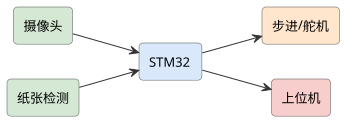
查看 PlantUML 源码
@startuml
skinparam defaultFontName "Microsoft YaHei"
skinparam rectangleRoundCorner 8
skinparam rectangleBorderColor #555
skinparam rectangleFontSize 13
skinparam arrowFontSize 11
skinparam arrowColor #333
left to right direction
rectangle "满溢/称重" as fill #d5e8d4
rectangle "ESP32" as esp #dae8fc
rectangle "NB-IoT" as nb #fff2cc
rectangle "环卫车GPS" as gps #d5e8d4
rectangle "环卫云" as cloud #e1d5e8
fill --> esp
esp --> nb
nb --> cloud
gps --> cloud
@enduml项目背景与应用场景
环卫系统的核心链路是"垃圾桶-清运车-转运站"，真实痛点：清运车按固定路线跑，桶没满也跑（油耗浪费）、满了没跑（溢臭投诉）。NB-IoT 桶位监测+清运调度是经典方案，本项目重点做"调度优化与验证"——满桶预测与路线优化的实际收益，而非只做桶满检测演示。
系统总体设计
感知层（桶位终端（超声液位/对射光电+倾斜（垃圾桶翻倒检测）+ 温度（火灾隐患）），NB-IoT 直传）→ 平台层（桶位地图+填充率时序+满桶预测（历史填充规律））→ 调度层（清运路线优化（动态路线：只去预测满的桶——车辆路径问题简化版））→ 司机端（小程序任务路线）→ 管理端（报表：溢出率/里程油耗对比）。
硬件组成
ESP32 + 满溢/称重传感器 + NB-IoT + 环卫车 GPS + 云平台 + 调度前端。
实现方案
- 方案 A（满溢监测）：垃圾桶满溢上云，平台按满溢度规划收运路线，NB-IoT 低功耗免布线。
- 方案 B（路径优化）：在方案 A 上加车辆 GPS 与动态路径优化，提升环卫效率。
详细实施步骤
- 第 1 步 桶位终端硬件与功耗：超声/对射双检测（桶内遮挡/雨雪误报对比实测）；终端 IP65+防腐蚀（垃圾环境恶劣——终端壳体与传感器防污是工程细节关键）；NB-IoT 上报策略（填充率变化上报+日汇报——电池 1 年目标，功耗预算表）；电池寿命实测加速试验。
- 第 2 步 填充建模与满桶预测：各点位填充时序积累（2 周基线）；按点位类型（食堂/宿舍/道路）分组建模（日周期性明显——预测比实时上报更有调度价值）；节假日模式；预测准确率评估（预测满桶 vs 实际满桶混淆矩阵）。
- 第 3 步 清运调度优化：基线：固定路线模式记录（里程/油耗/溢出投诉——对照组）；优化：按预测满桶集合生成动态路线（贪心/Clarke-Wright 简化 TSP——车辆路径问题的工程化裁剪）；约束（车载容量/时限/单程距离）；司机端任务卡。
- 第 4 步 异常事件链路：桶翻倒/异常高温（火灾前兆）即时告警；溢出投诉反向核验（系统是否提前预测到——调度质量的审计指标）；恶劣天气（大风翻桶）批量事件处理。
- 第 5 步 平台与报表：桶位 GIS 地图（填充率热力）；清运里程/油耗/溢出率周报；点位增减建议（长期数据→垃圾桶布局优化——数据反哺设施规划）。
- 第 6 步 试点验证：校园/社区 2 个月：溢出率下降幅度、清运里程/油耗节约率（vs 固定路线基线——收益必须量化）、预测准确率、终端故障率与电池实测；环卫工人/管理方访谈（流程接受度——调度系统落地成败在人）。
关键技术点
- 双检测防误报与垃圾环境的终端防护工程
- 填充时序建模与满桶预测（预测优于实时上报）
- 动态清运路线的 TSP 工程化裁剪与约束处理
- 对照组量化（里程/油耗/溢出率）的收益证明
- 数据反哺垃圾桶布局优化的长期价值
难点与对策
- 终端在垃圾环境高故障（腐蚀/砸碰/积水） → 防护等级实测+结构冗余；故障率作为核心指标；备件率预算
- 预测不准导致漏运/空跑 → 保守阈值（预测置信低也排入路线）；溢出率与里程的双目标平衡
- 司机执行偏差（不按优化路线跑） → 流程共建（与环卫班组）；任务卡简化；执行率统计
- NB-IoT 上报丢失（弱覆盖桶位） → 重传机制；连续丢失告警；盲区点位本地缓存补报
软件流程
满溢采集 → NB-IoT 上云 → 路线规划 → 车辆收运 → 调度看板。
创新点与拓展
创新点：从"桶满检测"推进到"预测+调度优化"的系统价值层；固定路线对照组的收益量化方法；溢出投诉反向核验的调度质量审计；数据反哺垃圾桶布局的设施规划价值。
拓展方向：清运车车载终端（称重+路线导航）；厨余垃圾专运调度；与市政环卫平台数据对接。
课程对接：无线传感器网络、单片机原理及应用、算法分析与设计、云计算导论、国产平台web应用开发
查看 PlantUML 源码
@startuml
skinparam defaultFontName "Microsoft YaHei"
skinparam rectangleRoundCorner 8
skinparam rectangleBorderColor #555
skinparam rectangleFontSize 13
skinparam arrowFontSize 11
skinparam arrowColor #333
left to right direction
rectangle "满溢/气体" as fill #d5e8d4
rectangle "ESP32" as esp #dae8fc
rectangle "压缩" as comp #ffe6cc
rectangle "LoRa/WiFi" as lora #fff2cc
rectangle "环卫云" as cloud #e1d5e8
fill --> esp
esp --> comp
esp --> lora
lora --> cloud
@enduml项目背景与应用场景
与 NB-IoT 环卫系统（广域蜂窝、单桶直连云端）不同，本项目走 WSN（无线传感网）自组网路线：校园/园区内垃圾桶密集分布，桶间多跳中继到网关，无蜂窝资费、节点功耗更低。两条技术路线的适用场景对比本身就是教学价值。风险先讲：WSN 自组网的维护复杂度高于 NB-IoT，适合密集小范围场景。
系统总体设计
节点层（桶位节点（超声液位+温湿度+倾斜；ZigBee/LoRa 自组网——节点路由角色））→ 网关层（汇聚网关（多跳数据收敛+4G/以太网回传））→ 平台层（网络拓扑管理（节点掉线定位——自组网运维核心）+填充看板）→ 应用层（清运提醒+异味/火灾监测）。
硬件组成
ESP32 + 满溢/温度/气体传感 + 压缩机构 + LoRa/WiFi + 云平台 + 调度前端。
实现方案
- 方案 A（满溢监测）：多箱组网监测满溢与异味，平台规划收运路线。
- 方案 B（压缩减量）：在方案 A 上加内置压缩与太阳能供电，延长收运周期。
详细实施步骤
- 第 1 步 组网选型与拓扑设计：ZigBee（Mesh 自愈，2.4 G）vs LoRa（星型/远距）对比：校园密集场景选 ZigBee Mesh 论证；节点部署拓扑（每 5~8 桶一路由节点——遮挡实测（金属垃圾桶对射频的衰减实测！金属桶内放传感器射频必衰减，天线外置方案））；网关位置勘测。
- 第 2 步 节点硬件与低功耗：节点（STM32L+射频+超声）；电池寿命预算（采样周期/路由占空比——路由节点功耗高于终端节点，差异化供电：路由节点可市电/太阳能）；深度睡眠电流实测；节点形态（防污防砸壳体——垃圾环境工程）。
- 第 3 步 Mesh 组网与自愈：组网入网流程；节点掉线的网络重构（自愈演示）；路由表维护与跳数管理；掉线节点定位（拓扑管理界面——WSN 运维的核心痛点正面处理：坏一个节点不能全网瘫）。
- 第 4 步 感知应用：液位采样与满桶判定；异味（气体传感选配）/烟感（火灾隐患）告警；倾斜检测（翻倒）；数据到平台的聚合与看板。
- 第 5 步 清运联动：满桶提醒（保洁员小程序）；清运动线建议（按满桶集合——简化版调度）；误报治理（雨雪/袋装遮挡误报实测与过滤）。
- 第 6 步 组网验证：校园部署 15~20 节点 1 个月：网络覆盖率、自愈成功率（人为关掉路由节点测试——必测科目）、端到端丢包率、节点电池寿命（vs 预算）、满桶判定准确率；WSN vs NB-IoT 的路线对比结论表（成本/功耗/运维/适用场景）。
关键技术点
- ZigBee Mesh vs LoRa 的场景化选型论证
- 金属垃圾桶射频衰减实测与天线外置对策
- Mesh 自愈与掉线节点定位的运维设计（WSN 核心痛点）
- 路由/终端节点差异化供电的低功耗预算
- WSN vs NB-IoT 双路线对比的结论方法
难点与对策
- 自组网运维复杂（掉线/重构） → 拓扑管理界面+自愈必测；路由节点市电化降低维护面
- 金属桶射频衰减导致通信失败 → 天线外置/桶外布设；RSSI 实测驱动的部署方案——先测再部署
- 节点电池寿命不达标 → 功耗预算表前置；采样周期调优；太阳能补充
- 感知误报（环境干扰） → 双传感融合+工况分档实测；误报率治理记录
软件流程
满溢/气体采集 → 组网 → 上云 → 路线规划 → 收运。
创新点与拓展
创新点：WSN 与 NB-IoT 双路线的适用场景对比方法论（教学价值）；金属桶射频衰减的实测教训与对策（真实工程坑）；Mesh 自愈的注入式必测科目；路由/终端差异化供电的工程务实。
拓展方向：LoRaWAN 版本对比实施；与智慧校园平台对接；节点传感可插拔（一网多用）。
课程对接：无线传感器网络、单片机原理及应用、传感器与检测技术实验、云计算导论、国产平台web应用开发

查看 PlantUML 源码
@startuml
skinparam defaultFontName "Microsoft YaHei"
skinparam rectangleRoundCorner 8
skinparam rectangleBorderColor #555
skinparam rectangleFontSize 13
skinparam arrowFontSize 11
skinparam arrowColor #333
left to right direction
rectangle "烟/温/气/门" as s #d5e8d4
rectangle "ESP32" as esp #dae8fc
rectangle "网关" as gw #fff2cc
rectangle "GIS 地图" as gis #f8cecc
rectangle "安全云" as cloud #e1d5e8
s --> esp
esp --> gw
gw --> gis
gis --> cloud
@enduml项目背景与应用场景
高校实验室安全事故（火灾/危化品泄漏/用电异常）的监管痛点：巡检靠人（频次有限）、危化品台账靠纸（账物不符）、异常发现滞后。本项目做"实验室环境感知+空间管理"：WSN 传感网络（烟/温/可燃气体/VOC）+ GIS 空间视图（楼层图上定位报警点+疏散路径）——GIS 的价值是把"哪个实验室报警"变成可视化决策信息。
系统总体设计
感知层（实验室节点（烟雾/温度/可燃气体（甲烷/酒精）/VOC 危化品挥发/电流互感器（违规大功率电器检测）），ZigBee 组网到楼栋网关）→ GIS 层（楼层平面图（开源地图引擎/自绘 SVG）+ 传感器点位标定+报警点空间渲染）→ 逻辑层（阈值分级告警（预警/报警/疏散三级）+ 联动（声光报警器/断电继电器））→ 管理层（危化品电子台账（领用归还扫码——账物一致闭环）+ 巡检记录）。
硬件组成
ESP32 多节点(烟/温/气/门禁) + 网关 + GIS 地图 + 云平台 + 大屏。
实现方案
- 方案 A（安全监测）：多节点监测实验室环境与安全，GIS 地图定位异常，平台告警。
- 方案 B（准入联动）：在方案 A 上做门禁与危化品台账联动，闭环管理。
详细实施步骤
- 第 1 步 风险清单与传感配置：按实验室类型配置（化学室：VOC/可燃气体优先；机房：烟感/电流；通用：烟/温）；国标参考（GB/T 实验室安全相关规范引用）；点位设计（气体传感高度依据气体密度（甲烷轻→顶装，液化气重→底装——气体物性决定安装高度的设计细节））。
- 第 2 步 WSN 组网与节点：楼栋内 ZigBee 组网（复用本项目线 WSN 技术栈）；网关汇聚+以太网回传；报警类数据的传输可靠性（报警帧重传+确认机制——报警丢包不可接受，与常规上报的 QoS 区分）。
- 第 3 步 GIS 空间系统：楼层图数据（校园建筑平面图数字化——SVG/GeoJSON）；传感器点位与真实坐标标定；报警点秒级上图（报警→GIS 定位→周边摄像头调看提示）；疏散路径展示（静态路径+动态标红报警区）。
- 第 4 步 告警分级与联动：三级阈值（预警（趋势异常）/报警（超限）/紧急（多传感确认））；多传感融合降低误报（烟+温双确认才触发疏散级——单一烟感误报的治理）；联动执行（现场声光+断电+短信/电话通知实验室安全员——通知链路的分级升级）。
- 第 5 步 危化品台账闭环：二维码/RFID 标签（试剂瓶级）；领用-归还扫码（账物一致；超时未还提醒——危化品流向可追溯是安全管理的硬要求）；库存量与存储合规（禁忌物质分储规则的知识库提示）。
- 第 6 步 演练验证：实验室实测：气体响应时间与浓度标定（标准气样注入测试——传感器的真实响应曲线）、误报率（日常实验操作（酒精灯/通风橱）是否误触发）、报警→GIS 上图时延、疏散级联动演练 2 次；台账账物一致率盘点；安全员使用反馈。
关键技术点
- 按实验室类型与气体物性的点位配置（顶装/底装依据）
- 报警帧与常规上报的 QoS 区分（报警不可丢）
- 多传感融合分级告警（双确认降低误报）
- GIS 报警点秒级定位与疏散视图
- 危化品扫码台账的账物一致闭环
难点与对策
- 实验操作本身触发误报（通风橱/酒精灯） → 工况实测与阈值分区；通风橱工况单独标定；误报率治理记录
- 传感器寿命与漂移（气体传感 1~2 年衰减） → 标气定期校验制度；寿命台账与到期更换提醒
- GIS 数据维护（实验室改造后失效） → 点位管理后台（增改便捷）；学期核查制度
- 报警责任落实（有人报无人管） → 通知升级链（安全员→学院→保卫处）；处置回执闭环
软件流程
多节点采集 → 网关汇聚 → GIS 定位 → 告警 → 大屏。
创新点与拓展
创新点：GIS 空间视图把报警从"声音"升级为"位置决策信息"；气体物性决定安装高度的规范细节；报警/常规数据的 QoS 分级与双确认融合；危化品台账账物一致的硬闭环（纸台账痛点的直接替换）。
拓展方向：视频 AI 辅助（人员未戴防护识别）；与校园消防中控对接；多校区联网监管。
课程对接：无线传感器网络、单片机原理及应用、云计算导论、国产平台web应用开发、数据库系统原理

查看 PlantUML 源码
@startuml
skinparam defaultFontName "Microsoft YaHei"
skinparam rectangleRoundCorner 8
skinparam rectangleBorderColor #555
skinparam rectangleFontSize 13
skinparam arrowFontSize 11
skinparam arrowColor #333
left to right direction
rectangle "温湿/水浸/烟" as s #d5e8d4
rectangle "ESP32" as esp #dae8fc
rectangle "网关" as gw #fff2cc
rectangle "联动处置" as act #ffe6cc
rectangle "监控云" as cloud #e1d5e8
s --> esp
esp --> gw
esp --> act
gw --> cloud
@enduml项目背景与应用场景
高校实验室机房/小型机房的监控痛点：空调故障导致高温宕机（最常见事故）、漏水（空调冷凝）、断电无人知。商用动环系统贵（数万元级），学生项目做"低成本动环监控"有真实市场空隙。重点：可靠性设计（监控自己先不能挂）与告警必达——动环系统最大的失败模式是"报警时它也挂了"。
系统总体设计
感知层（温湿度（多点位：冷通道/热通道/进风口）+ 漏水绳（空调周边）+ 市电检测（电压采样/断电传感）+ 烟感 + 门磁）→ 控制层（ESP32/STM32 节点（断网本地自主：超温本地声光报警+联动空调启停——不依赖云））→ 通信层（以太网主+WiFi 备（链路双备份）；MQTT 平台）→ 平台层（实时看板+阈值告警（短信/电话/微信多通道必达）+ 历史曲线（空调故障回溯））→ 联动层（空调远程启停（红外/485）+ 断网续传（本地 SD 卡缓存））。
硬件组成
ESP32 + 温湿度/水浸/烟感/门禁 + 网关 + 云平台 + 大屏。
实现方案
- 方案 A（机房监测）：多传感监测机房温湿/水浸/烟感，异常平台告警，适合校园机房。
- 方案 B（联动处置）：在方案 A 上做空调/UPS 状态联动与巡检台账。
详细实施步骤
- 第 1 步 机房工况与点位设计：机房勘察：空调位置/风道走向（冷热通道布局——温度点位必须在冷通道与设备进风口，不是随便贴墙上）；漏水风险点（空调冷凝管走向——漏水绳沿空调周边环形布设）；供电拓扑（哪路市电/UPS——断电检测点选择）。
- 第 2 步 节点硬件与本地自主：ESP32+多传感集成；本地自主逻辑（云端失联时本地阈值判断照常+声光报警——"监控不依赖被监控链路"的可靠性原则）；断电检测（市电掉电节点靠超级电容/电池存活并最后告警——断电瞬间的"遗言"机制）。
- 第 3 步 链路冗余与数据完整性：以太网主+4G/WiFi 备的切换实测；MQTT 断线重连+消息 QoS；本地 SD 缓存断网续传（数据完整性——历史曲线的价值在于故障回溯，断点数据不能丢）。
- 第 4 步 告警必达设计：多通道告警（微信/短信/电话语音逐级升级——5 分钟未确认升级到电话）；告警确认闭环（未确认持续提醒）；告警风暴治理（空调故障引发的多点超温合并为事件告警——不刷屏才有人看）。
- 第 5 步 空调联动与策略：空调远程启停（红外学习/485 协议适配）；温度-空调联动（超温备用空调启动——冗余空调的自动切换）；联动日志（每次启停可追溯——自动化操作必须有审计）。
- 第 6 步 长稳验证：机房连续运行 3 个月：温度点位与手持仪对照校准、漏水注入测试（滴水必须报警）、断电注入（拉闸测试遗言告警）、断网续传测试、告警必达链路演练（夜间真实告警响应时间）；与商用动环系统的功能/成本对比表（低成本的定位论证）。
关键技术点
- 冷热通道点位设计（温度测量的有效性前提）
- 本地自主监控不依赖云端的可靠性原则
- 断电"遗言"告警与断网 SD 续传（故障时刻的监控自保）
- 多通道逐级升级的告警必达闭环
- 告警风暴合并与确认机制（可运营性）
难点与对策
- 监控节点自身故障（单点失效） → 节点健康心跳（平台侧看门狗）；关键点位双节点；心跳超时即告警——监控的监控
- 温度测量偏差（点位/辐射影响） → 手持仪对照校准；防辐射罩；多点融合判断
- 空调 485 协议不开放（老机型） → 红外学习兜底；只做启停不做精细控制的能力边界声明
- 误告警疲劳（阈值太敏感） → 告警分级+确认闭环统计；阈值基于历史曲线整定
软件流程
采环境 → 网关汇聚 → 异常告警 → 联动处置。
创新点与拓展
创新点："监控自己先不能挂"的可靠性设计链（本地自主/遗言告警/心跳看门狗）；告警必达的逐级升级与确认闭环；断网 SD 续传保障故障回溯数据完整性；与商用动环的成本对比给出的真实空隙定位。
拓展方向：UPS 电量监控集成；PUE 能耗分析（机房能效）；多机房集中监管平台。
课程对接：无线传感器网络、单片机原理及应用、传感器与检测技术实验、云计算导论

查看 PlantUML 源码
@startuml
skinparam defaultFontName "Microsoft YaHei"
skinparam rectangleRoundCorner 8
skinparam rectangleBorderColor #555
skinparam rectangleFontSize 13
skinparam arrowFontSize 11
skinparam arrowColor #333
left to right direction
rectangle "ESP32 节点" as node #dae8fc
rectangle "轻量加密" as enc #d3e0ea
rectangle "TLS/MQTT" as tls #fff2cc
rectangle "网关" as gw #fff2cc
rectangle "安全云" as cloud #e1d5e8
node --> enc
enc --> tls
tls --> gw
gw --> cloud
@enduml项目背景与应用场景
学生 IoT 项目普遍裸奔：MQTT 明文+默认密码+硬编码密钥。本项目以"把一个普通 IoT 系统改造成安全系统"为主线（攻防对照式教学工程）：从明文到 TLS、从共享密钥到设备身份、从无审计到日志留痕——安全改造的可量化前后对比是核心产出。
系统总体设计
对象系统（一台典型 IoT 网关+若干传感节点（本项目线任一平台）作为改造靶标）→ 身份层（设备唯一身份（每设备密钥/证书，出厂烧录——硬编码共享密钥的反面教材对照））→ 传输层（MQTTS（TLS 1.2+）/DTU 场景的加密选择；证书体系（自建 CA 演示））→ 认证层（双向认证（设备验服务器+服务器验设备——单向 TLS 的中间人风险演示））→ 审计层（操作日志+告警（异常登录/异常流量））。
硬件组成
ESP32 节点 + 网关 + MQTT/TLS + 轻量加密库 + 云平台 + 安全审计。
实现方案
- 方案 A（安全上云）：节点经 MQTT over TLS 上云，轻量加密保护传感数据，防窃听篡改。
- 方案 B（密钥管理）：在方案 A 上加设备证书与密钥轮换，完善端到端安全链路。
详细实施步骤
- 第 1 步 威胁建模先行：对靶标系统做威胁清单（被动窃听/中间人/设备伪造/重放/固件提取密钥）；按 DREAD/STRIDE 简化评级——安全改造从威胁建模开始而不是从装 TLS 开始；现有系统的安全审计（抓包演示明文密码裸奔——改造基线留档）。
- 第 2 步 传输加密改造：MQTT 明文→MQTTS（TLS）改造；自建 CA+服务器证书签发流程；设备端 TLS 资源开销实测（ESP32 握手时间/内存/RAM——低端 MCU 的 TLS 成本量化，PSM 功耗影响）；改造前后抓包对照（明文 vs 密文——可视化教学产出）。
- 第 3 步 设备身份与双向认证：每设备独立密钥（安全芯片 ATECC608 或 Flash 保护区——固件提取攻击演示说明为什么软存密钥不行）；mTLS 双向认证部署；设备证书吊销流程（失窃设备的处置——PKI 运维常被忽略的一环）。
- 第 4 步 应用层防护：消息签名/时间戳防重放；指令权限分级（不同设备只能订阅/发布自己的主题——MQTT ACL）；OTA 固件签名验证（刷个假固件看看会不会被拦——签名校验的注入测试）。
- 第 5 步 攻防验证：渗透自测：中间人（arp 欺骗+抓包——改造后应失败）、伪造设备接入（无证书设备应被拒）、重放攻击（旧消息应被时间戳拦下）、暴力破解（登录限速）；每项攻击的改造前后结果对照表——可量化的安全提升证据。
- 第 6 步 性能与规范总结：加密开销对功耗/时延/吞吐的影响实测表（安全的代价量化）；IoT 安全规范对照（等保 2.0 相关条款/物联网基础安全国标引用）；安全改造清单（可复用的 checklist 产出——项目的方法论沉淀）。
关键技术点
- 威胁建模驱动的改造路线（STRIDE 简化应用）
- 低端 MCU 的 TLS 资源开销量化（安全代价可视化）
- mTLS 双向认证+安全芯片密钥存储（软存密钥的反面演示）
- 防重放/ACL/固件签名的应用层纵深
- 攻防注入测试的前后对照证据链
难点与对策
- 低端设备跑不动 TLS（资源约束） → 开销实测+分级方案（网关终结 TLS、节点轻量加密/DTLS-PSK 对比）；能力边界公示
- 证书运维复杂（学生团队难持续） → 自建 CA 脚本化；吊销/续期流程文档化
- 安全改造影响功能稳定性 → 灰度升级；回滚机制；功能回归测试清单
- 自测攻击的合规边界 → 仅对自有系统测试；渗透范围声明——不碰他人系统的法律红线
软件流程
采数据 → 本地加密 → TLS 上云 → 校验 → 存储/展示。
创新点与拓展
创新点：攻防对照式改造（前后抓包/攻击注入的可量化证据）而非纸面安全；低端 MCU 的 TLS 代价实测让安全决策有数据；固件提取与伪造设备的注入测试把"理论风险"变成"演示事实"；可复用 IoT 安全 checklist 的方法论沉淀。
拓展方向：区块链设备身份（论证适用性而非跟风）；车联网/家居协议安全扩展分析；安全改造服务校园其他 IoT 项目。
课程对接：网络基础、网络环境与编程、单片机原理及应用、云计算导论、软件工程、算法分析与设计
查看 PlantUML 源码
@startuml
skinparam defaultFontName "Microsoft YaHei"
skinparam rectangleRoundCorner 8
skinparam rectangleBorderColor #555
skinparam rectangleFontSize 13
skinparam arrowFontSize 11
skinparam arrowColor #333
left to right direction
rectangle "ESP32/派" as node #dae8fc
rectangle "MQTT broker" as mqtt #fff2cc
rectangle "开源平台" as plat #e1d5e8
rectangle "数据库" as db #e1d5e8
rectangle "仪表盘" as web #f8cecc
node --> mqtt
mqtt --> plat
plat --> db
plat --> web
@enduml项目背景与应用场景
校园里各 IoT 项目重复造轮子（每人自己写 MQTT 接入/看板/设备管理），且毕业即荒废（代码在个人电脑里失传）。本项目做"校园 IoT 共享底座+开源社区"：统一接入平台+开源组件库+项目孵化流程。风险先讲：纯软件社区容易空转——必须绑定真实硬件项目与课程学分激励，否则只是又一个死 Git 仓库。
系统总体设计
平台层（统一设备接入（MQTT 集群+设备注册/鉴权/ACL——复用本项目线安全改造成果）+ 数据入库（时序数据库）+ 开放 API）→ 组件库（开源组件：设备驱动模板/看板组件/告警组件/OTA 组件（各项目沉淀回归社区——组件从真实项目来））→ 社区层（Git 组织+项目主页+文档站+评审流程（组件准入标准））→ 运营层（课程联动（课程设计/毕设选题挂钩）+ 学分/竞赛激励+新成员培训路径）。
硬件组成
多类型 ESP32/树莓派节点 + 校园 MQTT broker + 开源平台 + Web 仪表盘 + 数据库。
实现方案
- 方案 A（开放实验）：校园内部署开源 MQTT 物联网平台，学生自由接入传感器节点做实验与分享。
- 方案 B（教学治理）：在方案 A 上做实验数据管理与权限，沉淀教学案例库。
详细实施步骤
- 第 1 步 最小平台搭建：MQTT broker（EMQX/ Mosquitto）+设备注册鉴权+时序库（InfluxDB/TDengine）+基础看板（Grafana）——先跑通 3 个真实项目接入（教学楼能耗/实验室环境/天气站），平台价值以真实接入数计，不以功能数计。
- 第 2 步 组件抽取与准入：从已接入项目抽取公共组件（驱动模板/告警组件）；组件准入标准（文档完整/示例可跑/测试用例——无测试不合入，社区质量底线）；许可证选择（MIT/GPL 的取舍说明）。
- 第 3 步 社区流程建设：Git 组织与分支/评审流程（PR 评审清单）；新人任务梯度（修文档→修 bug→小组件→独立项目——可执行的成长路径）；项目孵化模板（立项书/进度/结题物——避免烂尾的制度设计）。
- 第 4 步 激励与课程联动：与课程设计/毕设/竞赛（电子设计竞赛/大创）挂钩的选题库；贡献积分与评优/推荐信挂钩（激励设计——社区运转的燃料）；指导教师背书与学分认定路径（与学院沟通的现实策略）。
- 第 5 步 可持续性设计：毕业交接制度（每项目指定继任者+交接文档——对抗"毕业即荒废"）；平台运维值班表；服务器资源方案（校内服务器/低成本云）；年度报告（接入项目数/活跃度/组件复用率——社区健康度指标）。
- 第 6 步 运营验证：运行 2 学期：接入项目数与存活率、组件被复用次数、PR 活跃度、新人留存（培训完留下比例）；烂尾率与原因分析（如实统计——社区的真实健康度）；满意度与改进迭代。
关键技术点
- 以真实接入项目驱动的平台最小化建设
- 组件准入标准与测试底线（社区质量工程）
- 新人梯度任务与贡献积分的激励设计
- 毕业交接制度对抗项目荒废（可持续性核心）
- 社区健康度指标（存活率/复用率/留存）的运营度量
难点与对策
- 社区空转（无真实项目支撑） → 先跑通 3 个真实项目再谈社区；接入数为核心 KPI——软件社区绑硬件项目
- 毕业断层（维护断档） → 交接制度+教师背书的制度性保障；文档质量底线
- 服务器与运维资源不足 → 校内资源争取；成本极简方案；监控自托管
- 质量参差（烂组件入库） → 评审清单+测试底线；准入不放水——宁缺毋滥
软件流程
节点接入 → MQTT → 平台处理 → 存库 → Web 仪表盘。
创新点与拓展
创新点："平台-组件-社区-运营"四层中把运营（激励/交接/健康度）当作核心工程而非附属；组件从真实项目抽取并设测试准入；毕业交接制度直面校园开源社区的头号死因；健康度指标（存活率/复用率）替代注册人数的虚荣指标。
拓展方向：跨校区/高校联盟共享；组件市场（院际复用）；开源社区对接校外（Gitee/ GitHub 镜像）。
课程对接：物联网工程导论、网络基础、嵌入式Linux应用开发、数据库系统原理、国产平台web应用开发、云计算导论

查看 PlantUML 源码
@startuml
skinparam defaultFontName "Microsoft YaHei"
skinparam rectangleRoundCorner 8
skinparam rectangleBorderColor #555
skinparam rectangleFontSize 13
skinparam arrowFontSize 11
skinparam arrowColor #333
left to right direction
rectangle "环境/土壤/视频" as s #d5e8d4
rectangle "边缘网关" as edge #dae8fc
rectangle "数字孪生" as tw #d3e0ea
rectangle "农业云" as cloud #e1d5e8
rectangle "运营前端" as ops #f8cecc
s --> edge
edge --> tw
edge --> cloud
cloud --> ops
@enduml项目背景与应用场景
"数字工厂"宣称过大（学生尺度做不了整厂）。客观修正：聚焦"温室大棚的数字孪生监控与闭环控制"——澜峙（本地农业点）温室为对象：环境传感网络+生长数据+控制执行（卷帘/风机/水肥）+数字孪生可视化（温室 3D/2D 映射实时状态）。核心价值是"感知-决策-执行"闭环在真实温室的落地，而非大屏展示。
系统总体设计
感知层（温湿度/CO2/光照/土壤墒情多点传感（LoRa 组网——大棚金属结构与湿热环境的通信实测）+ 作物影像（长势/病虫害视觉））→ 控制层（执行节点（卷帘电机/风机/湿帘/水肥机继电器与变频控制）+ 本地规则引擎（断网自主运行——大棚不能依赖网络可用性））→ 孪生层（温室数字模型（结构建模+传感点位映射+执行状态回显）+ 历史回放）→ 决策层（环境调控策略（作物模型简化版：温度区间/湿度区间/光照积分）+ 农艺专家规则录入）→ 移动端（农户小程序：状态/告警/手动接管）。
硬件组成
边缘网关 + 环境/土壤/视频 + 水肥/环控执行 + 数字孪生 + 云平台 + 运营前端。
实现方案
- 方案 A（数字工厂）：农业车间全要素上云，环境调控自动化，数字孪生映射生产状态。
- 方案 B（智能决策）：在方案 A 上加 AI 农事建议与产量预测，形成闭环决策。
详细实施步骤
- 第 1 步 温室调研与农艺需求：澜峙温室实地：作物品类（其环境需求区间表——番茄/叶菜不同）、现有人工调控流程（几点卷帘/何时通风——把老师傅经验显性化为规则库的起点）、大棚结构（通信遮挡/供电条件）；数字化的首要目标是"不减产不农损"，控制变更需农艺确认。
- 第 2 步 传感网络与执行改造：LoRa 组网（大棚湿热+金属骨架的射频实测——先测后部署）；传感防潮防腐（湿热环境的 IP 等级与防腐材料）；执行改造（卷帘/风机的电机控制接入+手动/自动模式硬切换开关——自动系统失效时农户必须能一键回手动，安全底线）。
- 第 3 步 本地规则引擎与闭环：控制规则（温度超上限→风机+卷帘；低夜温→保温帘闭合——规则经农艺确认后生效）；执行回显闭环（指令→执行→传感变化确认——开环指令不算完成，验证回差）；断网自主（本地规则引擎全量运行，网络恢复后补传）。
- 第 4 步 数字孪生可视化：温室 2D/3D 模型（Three.js/简化 SVG——务实选 2D 分区图起步）；传感实时映射+执行器状态回显+告警定位；历史回放（某天环境过程复现——农艺复盘工具）；不为炫技做 3D（2D 够用先 2D，成本敏感场景的务实取舍）。
- 第 5 步 作物数据扩展：长势影像定期采集（物候期记录）；病虫害视觉提示（数据集自建起步——如实说明早期识别能力有限，定位为记录与提示）；产量/环境关联分析（历史数据相关性——为来年策略优化积累）。
- 第 6 步 整季验证：整茬作物周期运行：环境达标率（在设定区间内的时间占比）、闭环响应时延、断网自主验证（拔网线测试）、人工接管切换测试、产量对比（数字化棚 vs 常规棚对照——最终用产量与农损说话）；农户使用反馈（老师傅是否真的在用——落地性检验）。
关键技术点
- 老师傅经验显性化为控制规则库（农艺真实性）
- 手动/自动硬切换与断网自主（农业控制的安全底线）
- 指令-执行-传感回差的闭环验证（开环不算完成）
- 2D 优先的孪生可视化务实取舍
- 整季产量对照的最终效果证明
难点与对策
- 控制失误造成农损（最大风险） → 规则农艺确认+执行限位+手动硬切换兜底；变更灰度（先单棚）；农损应急预案
- 湿热环境设备高故障 → IP/防腐选型实测；故障率公示；备件本地化
- 农户不信任/不用 → 老师傅全程共建；接管自由度保留；收益（省工数据）说话
- 网络/电力不稳（农村设施现实） → 本地自主全量功能；太阳能/UPS 备电；弱网通信方案
软件流程
全要素采集 → 边缘控制 → 孪生同步 → AI 决策 → 运营前端。
创新点与拓展
创新点：把"数字工厂"收窄为温室孪生闭环并经农艺确认（范围修正+农艺真实性）；手动硬切换与断网自主的农业安全底线设计；指令-执行-传感回差的闭环验证标准；整季产量对照的最终证明方式（不是大屏而是产量）。
拓展方向：多棚联网与农场级看板；水肥一体化深度闭环；作物模型引入（积温/光照积分的自动策略）。
课程对接：物联网工程导论、云计算导论、国产平台web应用开发、算法分析与设计、数据库系统原理、嵌入式Linux应用开发
查看 PlantUML 源码
@startuml
skinparam defaultFontName "Microsoft YaHei"
skinparam rectangleRoundCorner 8
skinparam rectangleBorderColor #555
skinparam rectangleFontSize 13
skinparam arrowFontSize 11
skinparam arrowColor #333
left to right direction
rectangle "气敏阵列" as nose #d5e8d4
rectangle "信号调理" as amp #dae8fc
rectangle "STM32" as stm #dae8fc
rectangle "分类模型" as ai #d3e0ea
rectangle "上位机" as pc #f8cecc
nose --> amp
amp --> stm
stm --> ai
ai --> pc
@enduml项目背景与应用场景
食品/农产品品质检测的传统方法（理化分析/感官评审）破坏样品且耗时，电子鼻（气体传感器阵列+模式识别）提供无损快检路线。与机械臂电子鼻分拣项目（在线分拣协同）区分：本项目聚焦"离线检测仪"形态——样品进顶空瓶、测气味指纹、输出品质等级，重点做检测的规范性与重复性。
系统总体设计
进样系统（顶空瓶+气泵定容采样+清洁空气载气（顶空平衡法——样品气味富集的规范方法））→ 传感腔（交叉敏感阵列（TGS/MOS 6~8 通道+温湿度补偿通道）+ 恒温腔（传感器温度敏感性——恒温是重复性前提））→ 采集层（STM32F4 高精度 ADC+阵列响应曲线记录）→ 算法层（特征提取+PCA/LDA/SVM 品质分类）→ 上位机（检测报告：指纹曲线+分类结果+置信度）。
硬件组成
STM32 + 多通道气敏阵列 + 信号调理 + 加热控制 + 上位机/蓝牙 + 分类模型。
实现方案
- 方案 A（气味识别）：多通道气敏采样经 STM32 预处理，分类模型识别样品气味类别，无损检测。
- 方案 B（在线训练）：在方案 A 上加特征提取与上位机在线训练，提升泛化。
详细实施步骤
- 第 1 步 检测对象与金标准：选定检测对（如：新鲜 vs 劣变牛奶；不同储存期大米）；确定"金标准"对照方法（理化指标或感官评审小组——没有金标准就没有准确率可言，检测项目的立身之本）；样本采集 SOP（批次/储存条件/采样量/顶空平衡时间）。
- 第 2 步 气路与传感腔设计：顶空进样（定容气泵+进样针/气室切换阀——手动进样先验证原理）；恒温传感腔（±0.5℃ 控温——阵列响应温漂是重复性最大杀手，实测温漂曲线）；清洁空气冲洗循环（本底恢复时间实测——残留 carry-over 治理）。
- 第 3 步 采集与特征工程：高精度 ADC 采集阵列响应（峰值/斜率/面积/响应比多特征）；温湿度同步补偿；每次检测前基线校准（空采归一化——跨批次可比性的关键处理）；指纹曲线库管理。
- 第 4 步 分类建模与验证：小样本约束下的建模（每类 ≥30 样本；PCA 看可分性→LDA/SVM 分类）；留一法交叉验证（小样本的规范验证方法——不用随机划分骗准确率）；未知样本盲测集（真正独立测试——盲测集结果才是真实性能）。
- 第 5 步 仪器化与报告：检测仪整机（进样-测量-出报告 ≤10 min 目标）；检测报告输出（指纹图+等级+置信度+本次基线状态）；传感器老化监测（基线漂移趋势——到期校准提醒）。
- 第 6 步 规范性验证：重复性测试（同一样本 10 次重复——CV 系数 <10% 目标）；盲测准确率（金标准对照）；与理化指标的相关性（气味分类结果 vs 理化值的对应关系）；传感器更换后模型迁移问题（如实讨论——阵列个体差异导致模型不可直接迁移，是电子鼻工程化的真实难题）。
关键技术点
- 金标准对照的检测规范（准确率的前提）
- 顶空进样+恒温腔+基线校准的重复性工程
- 小样本留一交叉验证+独立盲测集的规范评估
- 温湿度同步补偿与本底恢复（carry-over）治理
- 传感器个体差异与模型迁移难题的如实讨论
难点与对策
- 重复性差（批间/日间漂移） → 恒温+基线校准+同工况采样 SOP；CV 指标公示；漂移补偿模型
- 金标准主观（感官评审波动） → 理化指标双对照；评审小组规范化（培训+盲样）；不确定度讨论
- 传感器寿命与批次差异 → 老化监测；标气定期校验；换件重训流程（如实成本说明）
- 样品气味干扰（混合气味场景） → 检测对象限定明确工况；干扰气体谱记录；能力边界声明
软件流程
采气敏 → 调理 → STM32 预处理 → 特征 → 分类 → 结果输出。
创新点与拓展
创新点：仪器形态聚焦检测规范性（顶空法/恒温/基线校准）而非传感器堆砌；留一交叉验证+独立盲测集的小样本规范评估；金标准双对照与 CV 重复性指标；传感器模型迁移难题的工程化讨论（多数项目回避）。
拓展方向：多品质维度扩展（新鲜度+产地溯源）；电子舌互补（味觉维度）；检测方法比对论文级数据整理。
课程对接：单片机原理及应用、传感器与检测技术实验、算法分析与设计、人工智能导论、计算机组成原理
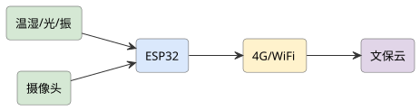
查看 PlantUML 源码
@startuml
skinparam defaultFontName "Microsoft YaHei"
skinparam rectangleRoundCorner 8
skinparam rectangleBorderColor #555
skinparam rectangleFontSize 13
skinparam arrowFontSize 11
skinparam arrowColor #333
left to right direction
rectangle "温湿/光/振" as s #d5e8d4
rectangle "ESP32" as esp #dae8fc
rectangle "摄像头" as cam #d5e8d4
rectangle "4G/WiFi" as net #fff2cc
rectangle "文保云" as cloud #e1d5e8
s --> esp
cam --> esp
esp --> net
net --> cloud
@enduml项目背景与应用场景
馆藏在库文物（库房/展柜）的保存环境监测（温湿度/光照/震动/有害气体）目前多为手持点检（频次低、有人为扰动）。本项目做"无人值守+微扰动"的在库监测网络：多参数低功耗节点+阈值分级告警+数据长期留档——文物预防性保护（先于损坏发现环境异常）的监测基础设施。
系统总体设计
感知层（库房节点（温湿度（SHT4x 级精度）/光照 UV（文物光老化）/震动（微振传感——搬运/施工/地震前兆）/VOC 有害气体（展柜材料挥发）/CO2））→ 组网层（LoRa 低功耗组网（库房金属密集柜的射频实测）+ 网关）→ 平台层（环境基线建模（季节性规律）+ 分级告警（缓变超限 vs 突变事件）+ 长期档案（符合文物记录规范的时间序列））→ 展柜级（展柜微环境独立节点（ tighter 阈值））。
硬件组成
ESP32 + 温湿度/光照/振动 + 摄像头(可选) + 4G/WiFi + 云平台 + 文保前端。
实现方案
- 方案 A（环境监护）：监测温湿/光照/振动等文物环境，异常上云告警，适合展馆/遗址(如叶剑英纪念园)。
- 方案 B（病害预警）：在方案 A 上加长期趋势与病害关联分析，辅助保护决策。
详细实施步骤
- 第 1 步 规范调研与阈值设计：文物保护环境规范（温湿度 45~60% RH 等常见参考区间按文物材质分（金属/纸质/丝织品不同——按馆藏品类定制阈值而非一刀切）；光照年剂量限值；与馆方保管部共建阈值表——阈值必须是文物学的不是工程猜的）。
- 第 2 步 低功耗节点与组网：节点（STM32L+多传感+LoRa；电池 1 年目标——功耗预算表+实测）；密集金属柜遮挡的射频实测与天线位置优化（先测后装）；网关冗余（库房不能有监测盲区）。
- 第 3 步 微扰动安装与安全合规：文物库房的施工纪律（不破坏柜体/不强拆——磁吸/粘固的非侵入安装；馆方审批流程）；节点本身的安全（无电池泄漏风险设计/防火材料）；展柜开合不干扰（传感器不阻碍文物取放）。
- 第 4 步 基线建模与分级告警：环境季节基线（历史数据学习——区分"正常季节波动"与"异常超限"，减少季节误报）；告警分级（提示（缓变偏离）/警告（超限）/紧急（突变+多参数确认，如震动+门磁=疑似搬运事件））；告警通知链（保管员→部门负责人）。
- 第 5 步 数据档案与报表：时间序列完整留档（文物环境档案——按馆方记录格式导出）；月度环境报告（超限时长/波动统计——预防性保护的决策依据）；事件回溯（异常事件的完整参数曲线）。
- 第 6 步 试点验证：库房/展厅试点 3 个月：传感精度与标准仪对照（温湿度与标准计比对——监测数据本身要可信）、告警准确率（含注入测试：震动模拟/光照突变）、功耗与电池实测、射频盲区排查；馆方使用反馈与档案规范性确认。
关键技术点
- 按文物材质定制阈值（文物学驱动而非工程猜测）
- 金属密集柜射频实测与非侵入安装（微扰动原则）
- 季节基线建模区分正常波动与异常超限
- 震动+门磁多参数确认的事件级告警
- 符合馆方规范的时间序列档案导出
难点与对策
- 馆方施工/安装审批复杂 → 非侵入安装方案+馆方全程共建；审批周期预留
- 低功耗与监测频次的矛盾 → 事件触发+定期采样混合策略；功耗实测兜底
- 误报疲劳（季节波动误判） → 基线建模+分级告警；误报率治理记录
- 监测数据可信度（自身不准） → 标准仪对照校准制度；节点健康自检（心跳+漂移告警）
软件流程
采环境 → ESP32 → 上云 → 趋势/异常 → 文保告警。
创新点与拓展
创新点：阈值由文物材质规范驱动（跨学科正确性）；微扰动安装与库房施工纪律（文物场景的特殊工程伦理）；季节基线建模治理季节性误报；震动+门磁的多参数事件确认（异常搬运的防损思路）。
拓展方向：展柜恒温恒湿控制联动（监测→调控闭环）；虫霉监测扩展（诱捕图像计数）；多馆联网监测平台。
课程对接：单片机原理及应用、传感器与检测技术实验、云计算导论、国产平台web应用开发、无线传感器网络、物联网工程导论
查看 PlantUML 源码
@startuml
skinparam defaultFontName "Microsoft YaHei"
skinparam rectangleRoundCorner 8
skinparam rectangleBorderColor #555
skinparam rectangleFontSize 13
skinparam arrowFontSize 11
skinparam arrowColor #333
left to right direction
rectangle "STM32" as stm #dae8fc
rectangle "步进/舵机" as step #ffe6cc
rectangle "摄像头" as cam #d5e8d4
rectangle "纸张检测" as det #d5e8d4
rectangle "上位机" as pc #f8cecc
stm --> step
cam --> stm
det --> stm
stm --> pc
@enduml项目背景与应用场景
图书/档案数字化的人工翻页扫描效率极低（1 页/翻+对位+压平）。自动翻页扫描的核心难题链：分离单页（吸嘴分离）、翻页执行（不撕裂）、即时压平（曲面校正）、拍摄同步。客观定位：桌面级图书翻页扫描样机，验证对象是翻页成功率与扫描质量，纸张脆弱（旧档案）工况如实声明受限。
系统总体设计
页分离机构（真空吸嘴+气吹辅助分离（单页分离是整机的成败核心——双页粘连的分离实测））→ 翻页执行（摆臂/辊轮复合翻页（力控保护——纸张撕裂检测（电流突变急停）））→ 压平/展平（透明玻璃压板或软件曲面校正（双相机立体校正——压板物理平 vs 软件校正的取舍实测））→ 成像（双相机对开拍摄（书页 V 形托台——扫描仪主流构型））→ 控制与后处理（节拍协调+自动切边/纠偏/OCR 流水线）。
硬件组成
STM32 + 步进/舵机翻页 + 摄像头 + 纸张检测 + USB/蓝牙 + 上位机。
实现方案
- 方案 A（自动扫描）：STM32 驱步进翻页，摄像头逐页拍摄，自动生成电子文档，适合档案数字化。
- 方案 B（纠偏识别）：在方案 A 上加图像纠偏与 OCR，输出可检索文本。
详细实施步骤
- 第 1 步 纸张工况与分离实验先行：测试纸张谱（新书/旧书/铜版纸/轻薄纸的厚度/挺度/摩擦系数——分离参数按纸张特性自适应的前提）；吸嘴分离实验台（真空度/吸嘴面积/气吹角度的正交实验——不装整机先验证单页分离率，这是最高风险环节前置）；双页分离（吸起两页的检测（厚度/视觉）与二次分离）。
- 第 2 步 翻页执行与力控保护：翻页臂轨迹规划（贴合书页弧线——轨迹生成为曲线非直线）；力控（电流监测：撕纸前兆（阻力突变）即停回退——"宁可不翻不可撕页"的档案安全原则）；卡页检测与脱困序列。
- 第 3 步 托台与压平方案：V 形托台+双相机（对开扫描构型——图书扫描标准构型，书脊压力小）；压板 vs 软件校正对比（边缘清晰度/文字变形率实测——软件校正依赖算法质量，物理压板的透明反光问题也要处理，如实对比）；书脊夹持力控制（不伤书脊）。
- 第 4 步 成像与同步：相机参数（分辨率/DPI 目标：300 DPI 档案级）；翻页-拍摄时序同步（页稳定信号（视觉判稳）触发拍摄——拍糊检测重拍机制）；照明（无影光设计——页面反光与阴影处理）。
- 第 5 步 后处理流水线：自动切边/纠偏（视觉基准）；曲面文字校正；OCR 批量（开源引擎评测）；成品组织（页序管理——翻页错误时的页序自动校验（页码识别纠错））。
- 第 6 步 整机验证：连续扫描 3 本图书：单页分离成功率（按纸张分档）、翻页零撕裂记录（撕一页即重大失败——如实统计）、成像合格率（糊页/黑边率）、节拍（页/分钟 vs 人工对照：目标 ≥3 倍）；脆弱纸张（旧档案）的能力边界声明；长跑稳定性。
关键技术点
- 纸张特性谱驱动的分离参数自适应（正交实验方法）
- 力控撕纸前兆检测（宁可不翻不可撕页的档案安全原则）
- V 形托台+双相机与压板/软件校正的实测取舍
- 视觉判稳触发的拍摄同步与糊页重拍
- 页码识别的页序自动校验（翻页错误的补救闭环）
难点与对策
- 单页分离成功率不足（双页/粘页） → 分离环节实验台前置正交优化；双页检测+二次分离；成功率分档公示
- 撕页风险（旧纸/脆弱档案） → 力控急停+纸张分档（脆弱档不进自动模式——能力边界明示）；防护耗材（指套/静音垫）
- 曲面变形影响 OCR → 软件校正算法投入；压板混合方案；OCR 识别率作为质量指标
- 节拍与可靠性平衡（快则易卡） → 卡页脱困序列；节拍-成功率双指标权衡；MTBF 统计
软件流程
翻页 → 拍摄 → 检测 → 下一页 → 合成/识别。
创新点与拓展
创新点：分离环节实验台前置的正交实验方法（最高风险先验证）；"宁可不翻不可撕页"的力控安全原则；页码识别的页序自动校验闭环（翻错的系统性补救）；纸张分档的能力边界声明（脆弱档案不硬来）。
拓展方向：档案卷宗（非装订）模式；A3 大幅面扩展；扫描-编目-检索一体化流程。
课程对接：单片机原理及应用、计算机视觉、传感器与检测技术实验、嵌入式Linux应用开发、数字逻辑

查看 PlantUML 源码
@startuml
skinparam defaultFontName "Microsoft YaHei"
skinparam rectangleRoundCorner 8
skinparam rectangleBorderColor #555
skinparam rectangleFontSize 13
skinparam arrowFontSize 11
skinparam arrowColor #333
left to right direction
rectangle "温湿/氨" as env #d5e8d4
rectangle "称重/饲喂" as w #d5e8d4
rectangle "ESP32" as esp #dae8fc
rectangle "通风/喂料" as act #ffe6cc
rectangle "养殖云" as cloud #e1d5e8
env --> esp
w --> esp
esp --> act
esp --> cloud
@enduml项目背景与应用场景
肉鸽养殖的数字化程度低于鸡/猪（小众畜种）：人工记录产蛋/孵化/出栏（纸质台账）、乳鸽出栏期凭经验、种鸽配对无档案。本项目做"肉鸽养殖场管理系统"：个体/笼位档案+生产节律追踪+出栏预测。客观约束：RFID 脚环对鸽子（脚细）适配性差、成本高——修正为"笼位为管理单元"（笼位码+繁殖卡），不强行做个体识别。
系统总体设计
感知层（笼位终端（每笼二维码/RFID 笼位卡+产蛋/孵化/出栏事件手持录入 PDA（扫码录入——数据采集靠流程设计而非全自动）+ 环境传感（鸽舍温湿度/氨气（氨气是禽舍健康关键指标）+ 巢箱图像（孵化状态可选）））→ 网络层（鸽舍 LoRa/以太网+手持 PDA 离线同步）→ 平台层（笼位档案+生产节律日历（产蛋-孵化-哺育周期提醒）+ 种鸽繁殖成绩排名（产蛋间隔/受精率/出雏率——种鸽淘汰的数据依据））→ 决策层（出栏预测（存栏结构推算上市量）+ 淘汰建议+饲喂量参考）。
硬件组成
ESP32 + 环控(温湿/氨) + 称重 + 饮水/喂料 + 4G + 养殖云 + APP。
实现方案
- 方案 A（环控饲喂）：ESP32 监测鸽舍环境并联动通风/喂料，4G 上云做生产台账。
- 方案 B（繁育优化）：在方案 A 上加称重生长曲线与繁育提醒，提升成活率与效益。
详细实施步骤
- 第 1 步 养殖流程调研与单据数字化：肉鸽场实地（≥1 家）：生产流程/现有纸质记录单据（产蛋登记本/出栏记录——数字化对象是这些单据）；管理单元确定（笼位制论证——个体脚环成本与鸽子适配问题如实分析，笼位码+繁殖记录卡替代）；数据字段与录入流程设计（录入动作嵌入现有流程——多一步操作都不愿用的现实）。
- 第 2 步 录入终端与环境采集：PDA/手机扫码录入（扫笼位码→事件选择（产蛋/照蛋/出雏/出栏）——3 次点击内完成）；环境传感（温湿度+氨气传感（电化学——氨气标定方法）；鸽舍通风联动建议）；离线可用（鸽舍网络差——PDA 本地库+联网同步）。
- 第 3 步 生产节律与档案模型：肉鸽生产数据模型（种鸽对→产蛋周期（约 40 天节律）→孵化 18 天→哺育→出栏；照蛋（受精率检查）节点）；节律日历自动提醒（下次照蛋/出栏时间——生产管理的核心提醒价值）；异常记录（破蛋/死胚/踩压——损失归因的数据基础）。
- 第 4 步 种鸽成绩与淘汰决策：种鸽对生产成绩自动汇总（年产蛋窝数/受精率/出雏率/乳鸽合格率——排名表）；淘汰建议规则（连续低产/老龄——与场主确认淘汰标准，数据建议+人工决策）；配对记录（拆对重配的历史追溯）。
- 第 5 步 出栏预测与报表：存栏结构推算（各日龄段乳鸽数量→未来 4 周上市量预测——对接订单履约）；饲料消耗与料肉比统计；经营报表（月度出栏/成本/收入——给场主的经营账）。
- 第 6 步 试点验证：鸽场试点 2 个月：录入及时率（事件当天录入比例——数据质量的生命线）、档案完整率、节律提醒命中率、出栏预测误差（±2 天目标）、氨气告警与通风联动的实际效果；场主/饲养员使用反馈（纸质台账是否真的被替代）。
关键技术点
- 单据数字化+扫码录入流程设计（数据质量靠流程）
- 笼位制管理单元论证（个体识别的成本现实修正）
- 肉鸽生产节律模型与日历提醒（行业知识工程）
- 种鸽成绩排名与淘汰建议（数据驱动选育起步）
- 存栏结构推算的出栏预测（±天级误差目标）
难点与对策
- 录入依从性差（饲养员不愿用） → 3 次点击内完成+嵌入现有流程；录入率看板公示；激励绑定
- 小众畜种无现成模型 → 节律参数从调研与试点数据自建；行业文献+场主经验双源
- 氨气传感漂移（禽舍腐蚀环境） → 电化学传感+定期标气校验；寿命台账
- 个体识别缺失的精度损失 → 笼位制的适用边界说明（配对稳定前提）；个体需求列为扩展
软件流程
采环控/称重 → 联动饲喂 → 4G 上云 → 生长曲线 → APP 管理。
创新点与拓展
创新点：笼位制替代个体脚环的成本现实修正（不硬上 RFID）；生产节律日历把行业经验软件化；种鸽成绩排名的数据驱动淘汰（传统凭感觉）；出栏预测对接订单履约的经营价值。
拓展方向：巢箱图像 AI（孵化状态/雏鸽健康监测）；自动化喂料机对接；与收购商订单系统直连。
课程对接：单片机原理及应用、传感器与检测技术实验、无线传感器网络、云计算导论、移动应用开发
查看 PlantUML 源码
@startuml
skinparam defaultFontName "Microsoft YaHei"
skinparam rectangleRoundCorner 8
skinparam rectangleBorderColor #555
skinparam rectangleFontSize 13
skinparam arrowFontSize 11
skinparam arrowColor #333
left to right direction
rectangle "激光/视觉" as nav #d5e8d4
rectangle "树莓派" as pi #dae8fc
rectangle "STM32 底盘" as stm #dae8fc
rectangle "顶升/辊筒" as lift #ffe6cc
rectangle "WMS" as wms #e1d5e8
nav --> pi
pi --> stm
stm --> lift
stm --> wms
@enduml项目背景与应用场景
AGV/AMR 市场成熟但大厂方案贵（单台 15 万+），中小厂/仓储的痛点：改造预算小、场地非标（地面不平/通道窄）、无专职运维。客观修正定位：不与商用 AMR 拼性能，做"低成本 latent 级搬运机器人"——二维码磁条导航的搬运 AGV（技术成熟可靠、成本低），验证"低成本+易部署+免运维"的中小企业适配性。SLAM 自主导航作为对比论证而非主方案（成本与运维复杂度对中小企业不友好）。
系统总体设计
车体（差速底盘+顶升/牵引机构（托盘搬运——顶升式举升标准托盘））→ 导航层（地面二维码标签导航（视觉 QR 码——成本低、路线改造只需贴码）+ 磁条备份）→ 调度层（简易调度（单机多任务队列/多机交通管制（路口互斥——多机避堵的简化调度）））→ 安全（激光/触边防撞+声光报警+急停）→ 部署工具（路线配置工具（贴码+地图标定 <1 天——易部署性的量化承诺））。
硬件组成
STM32 底盘 + 树莓派导航 + 激光/视觉 + 顶升/辊筒 + WiFi/4G + WMS。
实现方案
- 方案 A（AMR 搬运）：自主移动机器人做厂内物料搬运，导航避障并与 WMS 对接。
- 方案 B（多机调度）：在方案 A 上做多 AMR 任务调度与交通管理，提升柔性与效率。
详细实施步骤
- 第 1 步 中小企业场景调研：走访 1~2 家中小企业仓储/产线：搬运流程/频率/载重（200~500 kg 级需求确认）、地面条件（不平度/坡度——AGV 选型的地面门槛实测）、预算区间与运维能力（无 IT 专职——运维复杂度是真实约束）；需求输出表（载重/路线/节拍）。
- 第 2 步 车体与动力选型：差速底盘（载重 300 kg 目标的电机/减速比/电池计算——载重账先行）；顶升机构（电动推杆/剪叉——托盘对接精度 ±10 mm 实测）；地面适应（轮系选型对地面不平的容忍度实测——地面差是企业现场的现实）。
- 第 3 步 QR 码导航实现：地面二维码地图（码位坐标标定工具——贴码即部署）；视觉循码（下视相机+码位解码→位姿修正；码间里程计推算）；磁条备份导航（视觉失效兜底）；停止精度（±10 mm 对接要求实测）。
- 第 4 步 调度与多机管制：单机任务队列（呼叫按钮+系统派单）；多机交通管制（路口资源互斥+段锁——简化版多机调度，防死锁规则）；任务优先级与异常处理（障碍等待超时→绕行/上报）。
- 第 5 步 安全与部署工具：三级防撞（激光区域减速→停→触边急停）；人机混行区域的声光+限速策略；部署工具化（路线配置向导：贴码→扫码标定→试跑验证，目标 1 天部署——把"易部署"做成可量化的交付物）；远程诊断（故障日志上传——免运维的支撑）。
- 第 6 步 现场验证：企业现场试运行 1 个月：对接成功率、节拍达成率（vs 人工搬运对照）、故障率（MTBF）、多机管制死锁率（0 目标）、部署耗时实测（验证 1 天承诺）；投资回收测算（设备成本 vs 省下人工——中小企业视角的 ROI 结论）；与商用 AMR 的成本/能力对比表（定位诚实）。
关键技术点
- 中小企业约束（预算/地面/运维）驱动的技术路线修正
- QR 码导航+磁条备份的低成本可靠导航组合
- 路口互斥+段锁的多机简化调度（防死锁）
- 1 天部署的配置向导（易部署性交付量化）
- ROI 测算与商用 AMR 对比的定位论证
难点与对策
- QR 码磨损/地面反光导致读码失败 → 码材料耐磨选型；读码失败率实测；磁条兜底+里程计推算
- 地面条件不达标（坑洼/坡度） → 调研先行设地面门槛；不达标场地如实拒接（能力边界）
- 多机调度的死锁/碰撞 → 段锁互斥+超时释放；死锁率必测；先单机后多机的灰度部署
- 与商用方案竞争劣势（性能差距） → 不拼性能拼性价比与易用性；对比表诚实呈现；适用场景清晰界定
软件流程
接单 → 导航 → 取放货 → 避障 → WMS 同步。
创新点与拓展
创新点：主动放弃 SLAM 主方案选择 QR 码导航（中小企业运维现实的技术路线修正）；1 天部署向导把"易部署"变成量化交付；路口互斥的多机简化调度；ROI 测算+商用对比的中小企业适配性论证。
拓展方向：叉取式（货架取货）扩展；与 WMS 系统对接；SLAM 版本作为高端选型并行论证。
课程对接：单片机原理及应用、计算机视觉、算法分析与设计、嵌入式Linux应用开发、数据库系统原理、无线传感器网络
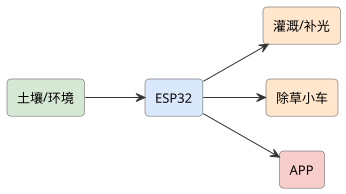
查看 PlantUML 源码
@startuml
skinparam defaultFontName "Microsoft YaHei"
skinparam rectangleRoundCorner 8
skinparam rectangleBorderColor #555
skinparam rectangleFontSize 13
skinparam arrowFontSize 11
skinparam arrowColor #333
left to right direction
rectangle "土壤/环境" as s #d5e8d4
rectangle "ESP32" as esp #dae8fc
rectangle "灌溉/补光" as irr #ffe6cc
rectangle "除草小车" as cart #ffe6cc
rectangle "APP" as app #f8cecc
s --> esp
esp --> irr
esp --> cart
esp --> app
@enduml项目背景与应用场景
家庭/阳台种植的自动化需求真实但分散（浇水/补光/施肥/温湿度），市面"智能花盆"多为单品。本项目做"桌面级种植工作站"：种植槽+环境控制+视觉长势记录+ App 管理。客观约束：视觉识别植物"需求"（缺水/缺肥/病害）远比识别品种难——修正为"环境闭环控制为主+视觉记录为辅"，不夸大 AI 判断植物需求的能力。
系统总体设计
结构层（多层种植槽+水箱+补光灯架（桌面/阳台尺寸约束设计））→ 感知层（土壤湿度（多槽多点）/环境温湿度/光照度/水位（水箱余量））→ 控制层（水泵分路滴灌+补光（光谱/时长可调）+ 小风扇；ESP32 主控（断网本地策略照常））→ 视觉层（顶部相机定时拍摄（生长延时记录+发黄/萎蔫提示——阈值化初筛+人工确认，不宣称自动诊断））→ App（状态/策略配置/延时摄影回看）。
硬件组成
ESP32 + 土壤/环境传感 + 自动灌溉/补光 + 轨道小车除草 + WiFi + APP。
实现方案
- 方案 A（自动养护）：ESP32 监测并自动灌溉补光，轨道小车除草，APP 查看花园状态。
- 方案 B（园艺社交）：在方案 A 上加生长记录分享与养护提醒，做成智能园艺。
详细实施步骤
- 第 1 步 种植对象与农艺参数：选定种植对象（生菜/香草类——生长快周期短适合验证）；各槽农艺参数表（适宜温湿度/光照时长/浇水阈值——植物学文献+试种校准）；种植槽布局与滴灌点位设计（每槽独立水路——差异化灌溉的前提）。
- 第 2 步 灌溉与补光控制：土壤湿度闭环（阈值+滞后区间防频繁启停——控制回差设计）；分槽独立滴灌（流量标定 mL/min）；补光策略（光照度传感+时长累计（日积分光量 DLI 概念简化应用））；水箱余量与缺水保护（低水位停泵告警）。
- 第 3 步 本地策略与联动：断网自主（本地策略全量运行——家庭网络不可靠的现实）；环境联动（高温→风扇+遮光提示）；安全设计（水泵漏水检测/过流保护——桌面设备的 household 安全）。
- 第 4 步 视觉记录与提示：定时拍摄（生长延时摄影——记录本身就是核心用户价值）；发黄/萎蔫初筛（颜色/形态阈值的粗筛+推送人工确认——算法定位为提醒不是诊断，能力边界明确）；拍摄光照一致性处理（补光灯干扰的颜色判断问题实测）。
- 第 5 步 App 与策略库：策略库（按品种预设参数模板+一键应用）；手动接管（远程手动浇水/开关灯）；数据记录（浇水/补光/生长影像时间线——种植日志自动化）。
- 第 6 步 种植验证：完整种植 3 茬生菜：参数闭环有效性（土壤湿度在目标区间的时长占比）、长势对比（自动化 vs 人工浇水对照组——产量/品相客观对比）、视觉提示准确率（提示后人工确认的真实问题率）、故障率（滴灌堵塞——水路堵塞是滴灌头号故障，防堵设计与维护周期实测）；用户试用反馈。
关键技术点
- 农艺参数表+试种校准的闭环控制依据
- 分槽独立滴灌与控制回差设计（防频繁启停）
- DLI 简化的补光策略（光照时长积分）
- 视觉"记录为主初筛为辅"的能力定位（不夸大 AI）
- 自动化 vs 人工的产量对照组验证
难点与对策
- 滴灌堵塞（水路头号故障） → 过滤+防堵滴头选型；堵塞检测（流量/湿度不升即告警）；维护周期文档
- 视觉提示准确率低（光照/品种干扰） → 定位为初筛+人工确认；拍摄光照一致性控制；准确率如实公示
- 家庭环境干扰（断网/停电/搬运） → 本地自主策略；断电恢复自恢复；水箱缺水多重保护
- 植物多样性（参数库覆盖不足） → 聚焦 2~3 个品种做深；策略库开放自定义；覆盖边界声明
软件流程
采土/环 → 自动灌溉/补光 → 小车除草 → WiFi → APP。
创新点与拓展
创新点："环境闭环为主、视觉为辅"的能力定位修正（反对普遍的 AI 夸大）；分槽差异化灌溉与控制回差工程；延时摄影作为用户核心价值（记录即产品）；自动化 vs 人工对照组的产量证明。
拓展方向：水培模式扩展；家庭多机互联（阳台矩阵）；社区种植数据共享（品种策略库众包）。
课程对接：单片机原理及应用、传感器与检测技术实验、移动应用开发、云计算导论、无线传感器网络

查看 PlantUML 源码
@startuml
skinparam defaultFontName "Microsoft YaHei"
skinparam rectangleRoundCorner 8
skinparam rectangleBorderColor #555
skinparam rectangleFontSize 13
skinparam arrowFontSize 11
skinparam arrowColor #333
left to right direction
rectangle "温度/pH/电导" as s #d5e8d4
rectangle "ESP32" as esp #dae8fc
rectangle "WiFi" as wifi #fff2cc
rectangle "Web 前端" as web #f8cecc
rectangle "数据库" as db #e1d5e8
s --> esp
esp --> wifi
wifi --> web
web --> db
@enduml项目背景与应用场景
中学化学实验的痛点：数据靠人工读数（温度计/量筒——读数误差大）、实验现象转瞬即逝（气体产生/颜色变化难以量化）、实验报告数据雷同（抄数据）。本项目做"数字化化学实验平台"：传感器实时采集+图形化呈现+班级数据汇总分析——用数字化手段让实验数据真实、可比较、可分析。教育场景约束先行：设备必须安全（无强电暴露）、成本低（班级批量）、操作简单（学生 5 分钟上手）。
系统总体设计
传感终端（温度/pH/浊度/气压/电导率五类传感器（中学实验高频参数）+ 无线节点（BLE/ WiFi 到平板））→ 采集层（采样频率可配（反应动力学需要 1 Hz+）+ 本地缓存）→ 分析层（实时曲线/反应速率自动计算/多组对比叠加）→ 班级层（教师端（全班数据汇总屏——小组间数据对比与异常组定位）+ 云归档（学生实验档案））→ 安全与易用（防腐蚀外壳（酸碱实验环境）+ 无线充电（避免接触式充电口腐蚀））。
硬件组成
ESP32 + 温度/pH/电导等多路实验传感器 + 采集盒 + WiFi + Web 前端 + 数据库。
实现方案
- 方案 A（实验数字化）：ESP32 同步采集实验过程数据，Web 端实时绘图，替代人工读数，便于教学复盘。
- 方案 B（探究分析）：在方案 A 上加实验报告模板与误差分析，学生可对比多组曲线。
详细实施步骤
- 第 1 步 课标与实验清单对接：对接中学课标实验清单（中和反应/化学反应速率/溶解度等高频实验——传感器配置按实验需求反推，不是先做硬件找实验）；与一线化学教师共建（哪些环节读数误差大/哪些现象想量化——真实教学需求清单）；安全规范（实验场景的设备安全要求清单）。
- 第 2 步 传感终端硬件：五类传感器选型与标定（pH 电极的校准流程（两点标定——电极是耗材，寿命与维护成本如实测算）；温度 NTC vs PT1000 精度取舍）；无线节点（BLE 低功耗+电池续航一学期目标）；防腐蚀设计（外壳/电极保护——酸碱环境的工程现实）。
- 第 3 步 采集软件与可视化：实时曲线（手机/平板/大屏多端）；关键量自动计算（中和反应 pH 突跃点自动标记/反应速率斜率自动计算——数字化超越人工读数的核心价值）；多曲线叠加对比（不同浓度组的速率对比一屏呈现）。
- 第 4 步 班级教学功能：教师端汇总（各组实时数据墙——异常组（曲线偏离）即时定位指导）；实验报告模板（数据自动填入+图形导出——告别手抄）；学生档案（历次实验数据沉淀——过程性评价的数据基础）。
- 第 5 步 课堂流程与鲁棒性：5 分钟上手流程（扫码连接→选实验模板→开始采集——易用性量化）；课堂抗干扰（30 台并发连接稳定性/分组掉线重连）；耗材管理（pH 电极寿命台账与更换提醒——可持续运行设计）。
- 第 6 步 课堂验证：合作班级试点 4 个实验课：数据质量（传感器 vs 人工读数对比——误差与时效提升量化）、课堂时间节约（数据记录耗时 vs 传统）、学生理解效果（反应速率概念的图形理解测试——教育效果评估）、教师反馈迭代；设备故障率与维护成本核算（推广可行性的经济账）。
关键技术点
- 课标实验驱动的传感配置（按需求反推硬件）
- pH 电极校准与耗材寿命管理（测量可信的工程基础）
- 突跃点/速率自动计算的数字化增值（超越人工读数）
- 30 台并发的课堂级稳定性设计
- 数据自动填入报告的过程性评价支持
难点与对策
- pH 电极等耗材成本与寿命（推广经济性） → 寿命台账+维护 SOP；成本核算进推广结论；替换方案（试纸比色数字化辅助）
- 课堂并发与连接稳定性 → 30 台压力测试；分组子网；掉线重连机制
- 学生操作不当（跌落/误接） → 防摔/防腐蚀设计；操作流程极简；课堂管理配合
- 教育效果归因难（成绩受多因素影响） → 对照实验设计（平行班）；前后测+问卷；归因局限如实讨论
软件流程
采实验数据 → ESP32 → WiFi → Web 实时图 → 存库 → 分析。
创新点与拓展
创新点：按课标实验反推硬件配置（教育真实性优先）；突跃点/速率自动计算让数字化产生超越人工读数的分析价值；教师端实时数据墙的课堂组织价值；耗材寿命台账+成本核算的推广可行性论证（教育项目常缺的落地视角）。
拓展方向：更多传感器（溶解氧/色度）扩展；跨校数据对比研究；虚拟仿真+实体采集的混合实验模式。
课程对接：单片机原理及应用、传感器与检测技术实验、数据库系统原理、国产平台web应用开发、数据结构
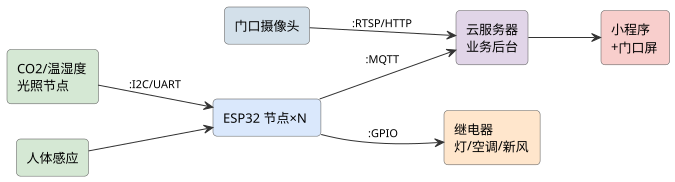
查看 PlantUML 源码
@startuml
skinparam defaultFontName "Microsoft YaHei"
skinparam rectangleRoundCorner 8
skinparam rectangleBorderColor #555
skinparam rectangleFontSize 13
skinparam arrowFontSize 11
skinparam arrowColor #333
left to right direction
rectangle "门口摄像头" as cam #d3e0ea
rectangle "CO2/温湿度\n光照节点" as env #d5e8d4
rectangle "人体感应" as pir #d5e8d4
rectangle "ESP32 节点×N" as esp #dae8fc
rectangle "继电器\n灯/空调/新风" as ctrl #ffe6cc
rectangle "云服务器\n业务后台" as srv #e1d5e8
rectangle "小程序\n+门口屏" as app #f8cecc
env --> esp : :I2C/UART
pir --> esp
esp --> ctrl : :GPIO
cam --> srv : :RTSP/HTTP
esp --> srv : :MQTT
srv --> app
@enduml项目背景与应用场景
高校课室长明灯、长开空调与"占座"现象普遍，人工巡查成本高；同时人脸考勤涉及敏感个人信息，多数学生项目只讲功能不讲合规。本项目把"节能联动"作为无隐私风险的基础层，把"考勤统计"作为带完整合规设计的增强层，是一堂真实的工程伦理实践课。
系统总体设计
感知层（环境节点 + 人感 + 摄像头）→ 控制层（ESP32 本地联动规则 + 继电器执行）→ 数据层（云端时序与业务库）→ 应用层（小程序、门口屏、管理后台）→ 合规层（同意管理、脱敏、留存策略，贯穿各层）。
硬件组成
树莓派 4B + 130° 摄像头（教室门口/室内）+ ESP32 节点×N（光照 BH1750、CO2 MH-Z19C、温湿度 SHT30、人感 AM312）+ 继电器（灯光/空调/新风）+ 云服务器（Django/Spring Boot）+ 教师端小程序 + 显示屏（课室门口屏）。
实现方案
- 方案 A（环境联动+人到灯亮）：ESP32 节点采集 CO2/温湿度/光照/人感，联动灯光分组开关、空调红外控制与新风启停（CO2>1000 ppm 强制新风）；数据上云形成课室环境看板。不涉及人脸，隐私风险最小，先落地。
- 方案 B（考勤+环境一体化）：在方案 A 基础上，门口摄像头做人形计数或学生自主刷脸考勤（显式同意、本地特征库、不上传原图），结合课表生成出勤与上座率统计；隐私设计（告示、脱敏、最小化存储）作为方案核心章节而非附加说明。
详细实施步骤
- 第 1 步 环境感知节点：ESP32+MH-Z19C（NDIR CO2，UART，需预热 3 min 与 ABC 自校准说明）+ SHT30 + BH1750 + AM312；每 30 s 采样，I2C 地址冲突用多路复用或分口；节点 OTA 升级（ESPHome 或自研）。
- 第 2 步 联动控制策略：灯光：光照 <300 lx 且有人 → 分组点亮（靠窗区例外利用自然光）；空调：红外学习模块发码，温度带 26±1℃ 回差控制；新风：CO2 >1000 ppm 启动、<800 ppm 停止；所有规则含"本地失效保护"（云端失联按本地规则继续）。
- 第 3 步 云端与看板：MQTT（EMQX）→ 时序库（InfluxDB）→ Grafana/Django 看板：各课室 CO2/温湿度/能耗曲线；能耗用功率计（PZEM-004T）实测接入，节能率以"联动周 vs 基线周"对比，方法写明。
- 第 4 步 考勤增强（合规设计先行）：显式告知+选择权（ poster 与系统设置页明示）；优先人形计数（只输出数量不留图像）；如需刷脸：人脸特征本地提取（InsightFace 移动端模型），特征向量加密存储，原图 24 h 内删除；数据用途限定出勤统计，访问权限分级。
- 第 5 步 出勤统计与门口屏：摄像头过门线人形计数（上/下行分开）与课表时段比对得"在场人数"；刷脸模式输出到课名单（仅到课/未到，不打标签不做行为分析）；门口屏显示当前课室占用与下一节课信息。
- 第 6 步 试点与评估：选 2 间课室试运行 4 周：节能率（kWh 实测）、CO2 超标时长下降、考勤与人工点名一致率（抽 10 次人工比对）；隐私做问卷（n≥30）满意度与信任度评估；负面反馈如实写入报告。
关键技术点
- NDIR CO2 传感器预热/自校准机制与数据有效性判断
- 光照-人感双条件灯光分组联动与回差控制（防频繁启停）
- 人形过门线计数（上/下行）与课表比对算法
- 人脸特征本地化提取+加密存储+原图限时删除的合规技术方案
- PZEM-004T 实测能耗与"基线对照法"节能率评估
难点与对策
- 人脸考勤的合规风险 → 合规设计前置为人形计数优先；刷脸必须自愿+可退出；项目文档含《个人信息处理说明》，参照《个人信息保护法》最小必要原则
- 红外控制空调机型适配 → 建立主流空调码库并实测 3~5 种机型；不支持的机型保留面板手动控制并如实标注
- 摄像头误计（并排/逆光） → 过门线方向判断+视频抽样人工比对 200 帧量化误差；逆光时段安装补光或调整角度
- 环境节点长期漂移 → CO2 定期室外新鲜空气校准；温度抽检比对标准温度计；漂移校正记录入档
软件流程
ESP32 每 30 s 采集环境量 → 阈值/时间表联动控制 → 数据上报云端；摄像头端：人形/人脸检测 → 与课表比对 → 出勤统计 → 门口屏与小程序展示。
创新点与拓展
创新点：把隐私合规从"免责声明"提升为"技术方案"（本地特征、最小化存储、人形计数优先）；节能率用实测功率与基线对照而非理论估算；考勤只做"到课统计"不做行为分析，边界清晰。
拓展方向：可扩展占座检测（桌面压力+视觉）与预约联动；数据支撑学校后勤节能改造立项；合规技术方案可单独整理成论文/案例，适合挑战杯"社会治理"赛道。
课程对接：单片机原理及应用、嵌入式Linux应用开发、传感器与检测技术实验、数据库原理及应用、软件工程
查看 PlantUML 源码
@startuml
skinparam defaultFontName "Microsoft YaHei"
skinparam rectangleRoundCorner 8
skinparam rectangleBorderColor #555
skinparam rectangleFontSize 13
skinparam arrowFontSize 11
skinparam arrowColor #333
left to right direction
rectangle "座位存在\n传感器×N" as seat #d5e8d4
rectangle "ESP32 网关" as gw #dae8fc
rectangle "云平台\n状态机+DB" as srv #e1d5e8
rectangle "小程序\n预约/签到" as app #f8cecc
rectangle "门口空座屏" as scr #f8cecc
rectangle "使用率\n分析看板" as ana #d3e0ea
seat --> gw : :ZigBee/LoRa
gw --> srv : :MQTT
srv --> app
srv --> scr
srv --> ana
@enduml项目背景与应用场景
高校图书馆高峰期"一座难求"与大量占座并存，纸条占座与人工清座矛盾突出；现有商业系统成本高且多依赖闸机改造。本项目以座位级传感+状态机+小程序构成低成本方案，并用试点真实数据回答"规则怎么定才公平高效"。
系统总体设计
感知层（座位存在传感器网格）→ 汇聚层（ESP32 网关，ZigBee/LoRa/WiFi 三选一按馆舍结构）→ 业务层（座位状态机：空闲/预约待签/在座/暂离/违约释放）→ 交互层（小程序+门口屏）→ 运营层（使用率分析、规则引擎、候补队列）。
硬件组成
座位传感器（红外对射/压敏/毫米波 LD2410 任选）×试点区 40~80 座 + ESP32 网关×2（ZigBee/LoRa 或 WiFi 汇聚）+ 云服务器（Django/Spring Boot + MySQL + Redis）+ 小程序（预约/扫码签到/暂离）+ 门口屏（空座分布）+ 闸机/桌贴二维码。
实现方案
- 方案 A（传感实测+预约联动）：每座安装存在传感器，实测占用状态实时上云；小程序预约选区选座、扫码签到，30 min 未签到自动释放；"暂离"30 min 后传感器判定离座也自动释放。用真实占用数据根治"占座"。
- 方案 B（使用率分析+动态策略）：在方案 A 基础上做数据运营：按时段/区域/座位类型统计使用率与违约率，高峰期动态调整预约时长上限与签到宽限，考试周开放"候补队列"；用数据驱动规则迭代而非拍脑袋。
详细实施步骤
- 第 1 步 传感选型与布设：对射式（桌面两端，抗遮挡差）、压敏（椅面，存在≠在座但便宜）、LD2410 毫米波（微动检测最准、成本高）三方案各试点 5 座对比误判率，再全量选型；布线困难区用电池版 ZigBee 节点（一年一换电）。
- 第 2 步 网关与上云：ESP32 网关经 UART/SPI 收 ZigBee 模组（E18）数据，MQTT 上云；每座心跳 10 s、状态变化即报；断网本地缓存补传；设备-座位映射表入库，传感器故障自动标记"该座停用"避免误释放纠纷。
- 第 3 步 座位状态机设计：状态：空闲→(预约)→待签到（30 min 宽限）→在座→（扫码暂离 ≤30 min）→离座自动释放（短信/订阅消息告知）；违约 3 次/周限制预约 3 天；状态迁移全部留痕（时间戳），纠纷可查。
- 第 4 步 小程序与门口屏：小程序：选区-选座（平面图 API）、签到二维码（绑定座位+时间防截图转发）、暂离按钮、违约记录查询；门口屏滚动显示各区空座率；夜间闭馆自动批量释放与提醒。
- 第 5 步 数据运营（方案 B）：统计维度：时段×区域×座位类型的使用率、平均在座时长、暂离率、违约率；高峰策略：签到宽限缩短至 15 min、开放候补队列（释放座位按候补顺序推送，10 min 确认）；策略调整前后做 A/B 对比。
- 第 6 步 试点与评估：试点区 40 座运行 2 周：占座投诉数、座位周转率、传感器误判率（人工巡检 200 次校验）、满意度问卷（n≥50）；与图书馆馆员复盘规则并如实报告副作用（如暂离被误释放的申诉处理）。
关键技术点
- 三种存在传感（对射/压敏/毫米波）误判率实测对比选型方法
- 座位五状态状态机与全部迁移留痕（纠纷可追溯）
- 防截图转发的签到二维码设计（座位+时间+一次性校验）
- 候补队列与动态宽限的规则引擎及 A/B 评估
- 网关断网缓存补传与传感器故障自动停用机制
难点与对策
- 传感器误判引发纠纷 → 状态留痕+申诉通道（小程序一键申诉，管理员查传感日志）；毫米波优先用于高价值区；误判率公开透明
- 隐私边界 → 只采集"座位占用"二值信息，不采集身份与图像；暂离/在座状态仅对管理员可见聚合数据，对同学只显示空/占用
- 电池节点维护 → 低功耗设计（ZigBee 睡眠+心跳）续航 ≥10 个月实测；低电量提前 2 周告警统一换电
- 高峰并发（考试周抢座） → Redis 预扣 + 库存行锁防超卖；压测 1000 并发抢 500 座验证；预约开放时间错峰分批
软件流程
传感器 10 s 心跳上报占用 → 网关汇聚上云 → 业务平台状态机（预约/在座/暂离/释放）→ 小程序交互与消息通知 → 看板分析使用率与规则优化。
创新点与拓展
创新点：以"传感器实测占用"而非"扫码打卡"判定真实在座，闭环更硬；规则不是拍脑袋而是用试点 A/B 数据迭代（宽限、候补、违约梯度）；隐私上仅采集座位级二值信息，把"最小必要"落到传感器选型层面。
拓展方向：可扩展自习室/研讨间/机房通用化；使用率数据可支撑图书馆空间改造决策；候补与动态定价思路可迁移至体育场馆预订；适合"互联网+"校园服务赛道与后勤合作落地。
课程对接：单片机原理及应用、传感器与检测技术实验、数据库原理及应用、Web应用开发、移动应用开发

查看 PlantUML 源码
@startuml
skinparam defaultFontName "Microsoft YaHei"
skinparam rectangleRoundCorner 8
skinparam rectangleBorderColor #555
skinparam rectangleFontSize 13
skinparam arrowFontSize 11
skinparam arrowColor #333
left to right direction
rectangle "教学板" as board #dae8fc
rectangle "传感套件" as sense #d5e8d4
rectangle "执行器" as act #ffe6cc
rectangle "图形/Python" as code #f8cecc
rectangle "教学平台" as plat #e1d5e8
sense --> board
board --> act
board --> code
code --> plat
@enduml项目背景与应用场景
面向中小学生的硬件编程启蒙项目，核心问题是"启蒙课程普遍半途而废"——孩子新鲜感过了就弃学。本项目把硬件学习绑定为"养成游戏"：每个编程任务喂养一只虚拟电子宠物，任务完成→宠物成长（形态/技能解锁），用游戏化留存对抗弃学。教育项目红线：游戏化是激励手段不能喧宾夺主（防沉迷设计），且教学效果要可评估而非只看活跃。
系统总体设计
硬件层（启蒙开发板（图形化编程（Scratch/MakeCode 风格）+ 板载 LED/按键/传感器（光/温/姿态）））→ 课程层（任务梯度课程包（点亮→传感器→逻辑→综合项目，对标课标信息科技））→ 游戏层（虚拟宠物引擎（任务完成度→宠物状态机成长；误操作不影响宠物——失败友好设计））→ 教师端（课堂管理（任务进度看板/防抄检测（代码相似度——启蒙阶段重引导不重惩罚）））→ 家长端（学习报告+使用时长管理（防沉迷的设计义务））。
硬件组成
Micro:bit/ESP32 教学板 + 传感器套件 + 执行器 + 图形化/Python 编程 + 教学平台。
实现方案
- 方案 A（编程教具）：以"养电子宠物"为线索，学生用图形化/Python 控制传感器与动作，做中学。
- 方案 B（课程平台）：在方案 A 上加教学平台与作品分享，沉淀编程启蒙课程资源。
详细实施步骤
- 第 1 步 课标对齐与课程梯度：对标《信息科技》课标学段要求；任务梯度设计（每任务一个硬件知识点+一个编程概念，难度坡度实测调优（前期流失率是梯度设计的检验指标））；与学科教师共建（课堂场景 40 分钟任务粒度——任务必须一课内可完成）。
- 第 2 步 启蒙硬件设计：板载集成（免接线——启蒙阶段杜邦线接错劝退率极高，板载传感器为主+少量扩展口）；安全（低压 USB 供电/无锐角/电池仓螺丝固定）；成本目标（百元级——班级批量采购的家长/学校承受力）；可扩展（进阶后外接传感器不废板）。
- 第 3 步 宠物养成机制设计：成长状态机（任务完成度→经验值→形态进化/技能解锁；连续未完成任务→宠物"想念"提示（温和召回而非惩罚））；防依赖设计（宠物不社交不抽卡——游戏化的伦理边界：激励闭环不引入成瘾机制）；断线可用（离线也能完成任务同步成长——硬件课不能依赖网络可用性）。
- 第 4 步 课堂与教师工具：教师看板（全班任务进度/卡点分布——课堂实时调度）；课件包（每任务配讲义/演示视频/常见错误集）；课堂节奏工具（限时挑战模式可选——竞争机制为可选非默认，照顾不同性格学生）。
- 第 5 步 防沉迷与家长端：使用时长管理（家长可控上限+课堂模式例外）；报告（知识点掌握图谱——反馈学习效果而非活跃度）；隐私（未成年人数据最小化（不采集个人信息、本地优先——儿童信息保护规范的落实））。
- 第 6 步 教学验证：试点班级 1 学期：任务完成率与流失率（vs 传统课程对照班）、知识点前后测（学习效果证据——游戏化最终要为学习服务）、课堂观察记录（专注度/协作行为）、家长满意度；弃学归因访谈（游戏化是否真的对抗了流失——如实报告哪些环节无效）。
关键技术点
- 课标对齐+一课一任务的梯度设计（前期流失率检验）
- 板载集成免接线的启蒙硬件（劝退点消除）
- 不社交不抽卡的养成机制（游戏化伦理边界）
- 教师实时看板与卡点定位的课堂工具
- 知识点掌握图谱的学习效果反馈（而非活跃度虚荣指标）
难点与对策
- 游戏化喧宾夺主（玩宠物不学编程） → 任务完成是唯一成长途径的设计强制绑定；防沉迷时长管理；课堂观察审计
- 课标与学校采购流程门槛 → 教师共建+教学局备案路径；成本控制在班级采购区间
- 低龄用户数据合规 → 最小化采集+本地优先+家长知情同意（儿童个人信息保护规定）
- 硬件损坏率高（低龄使用） → 加固设计+备用机制度；成本可承受（损坏率计入方案）
软件流程
任务发布 → 编程控制 → 硬件反馈 → 作品展示 → 平台分享。
创新点与拓展
创新点：任务-养成强绑定的游戏化激励（对抗启蒙课程流失率的真实痛点）；不社交不抽卡的成瘾机制免疫设计（游戏化伦理）；前期流失率与知识点前后测的双指标验证（学习效果优先于活跃度）；板载免接线的劝退点消除设计。
拓展方向：进阶课程线（图形化→Python 过渡）；校际联赛（作品展示型非竞技排位）；乡村学校公益课程包。
课程对接：Python语言程序设计、单片机原理及应用、物联网工程导论、移动应用开发、软件工程

查看 PlantUML 源码
@startuml
skinparam defaultFontName "Microsoft YaHei"
skinparam rectangleRoundCorner 8
skinparam rectangleBorderColor #555
skinparam rectangleFontSize 13
skinparam arrowFontSize 11
skinparam arrowColor #333
left to right direction
rectangle "灯/帘/插" as dev #d5e8d4
rectangle "ZigBee/WiFi" as z #fff2cc
rectangle "网关" as gw #dae8fc
rectangle "云平台" as cloud #e1d5e8
rectangle "APP/语音" as app #f8cecc
dev --> z
z --> gw
gw --> cloud
cloud --> app
gw --> app
@enduml项目背景与应用场景
智能家居全屋联动的教学套件需求（实训课/科普基地）：市面单品实验箱只能做单点实验，缺"场景联动"的系统级训练。本项目做"微缩全屋套件"（模型房+多房间传感执行+场景引擎），教学重点是联动逻辑（传感器→场景规则→多设备协同），学生可视化编排场景（拖拽规则）而非写死代码——教学价值在于系统思维。
系统总体设计
实体层（微缩模型房（客厅/卧室/厨房/卫浴 4 区）+ 分区传感（光照/温湿度/人体/烟雾）与执行（灯/风扇/舵机窗帘/蜂鸣）节点）→ 通信层（WiFi/BLE 网关（套件内自组网——模拟真实全屋网关角色））→ 场景引擎（规则编排器（条件→动作的图形化拖拽（类 Node-RED 简化）；学生可配"回家模式/观影模式/火灾联动"））→ App/面板（场景面板+手动覆盖（自动与手动的优先级——真实智能家居的核心矛盾，教学中显性化））。
硬件组成
多个 ESP32 节点（灯/插座/窗帘/传感）+ 网关 + 云平台 + APP，支持 ZigBee 或 WiFi 混联。
实现方案
- 方案 A（场景联动）：以"回家/睡眠/离家"等场景做多设备联动，本地规则引擎，断网仍可运行。
- 方案 B（云边协同）：在方案 A 上接入云平台与语音助手，做多端同步与远程控制。
详细实施步骤
- 第 1 步 教学大纲与场景库：对接课程目标（物联网三层架构/传感器/通信/联动逻辑——套件覆盖知识点映射表）；场景库设计（10+ 场景从易到难：单触发单动作→多条件组合→跨房间联动→异常处理场景（火灾联动：烟雾→全屋声光+窗帘开启逃生路径——安全场景的教学价值））；安全约束（模型房内置场景不能误导真实安全认知——火灾联动配真实消防知识讲解卡）。
- 第 2 步 套件硬件设计：分区模块化（每房间一个节点板+磁吸/卡扣安装——课堂快速组装拆解，一节课内完成搭建）；连接器防呆（防插错烧板——课堂高损坏场景的工程对策）；成本控制（套件 <800 元目标——学校批量采购区间）；扩展口（自制传感器接入——进阶教学空间）。
- 第 3 步 图形化规则引擎：条件-动作图形化编排（拖拽块：当[人体感应 且 光照<阈值]→执行[开灯+窗帘关]）；条件组合（与/或/非/延时——逻辑训练的教学核心）；规则冲突检测（两条规则对同一设备矛盾时提示——系统思维的显性教学点）；规则以 JSON 存储可导出（作业提交与评阅的数据格式）。
- 第 4 步 App 与手动优先级：场景面板（一键触发预设场景）；手动覆盖逻辑（手动操作暂停自动规则 N 分钟——"手动优先"是真实智能家居的用户核心诉求，教学中作为设计课题：让学生体会并解决自动与手动的冲突）；设备状态回显（执行反馈闭环——联动成功与否可视）。
- 第 5 步 教学配套：实验指导书（每场景配原理讲解+操作步骤+思考题）；教师培训包（快速上手+常见故障排除）；考核方案（自由场景设计大作业+评分标准（逻辑正确性/鲁棒性/创意））；故障注入教学卡（人为制造传感器失效让学生排查——调试能力训练）。
- 第 6 步 教学验证：实训班级试用 1 学期：搭建耗时（目标 1 课时内）、规则引擎易用性（学生完成场景设计的成功率）、知识点前后测（三层架构/联动逻辑的理解提升）、故障排查能力测试（故障注入卡的解决率）；教师反馈与套件耐用性统计（一学期损坏率——课堂装备的现实指标）。
关键技术点
- 知识点映射驱动的场景库设计（教学真实性）
- 防呆连接器与磁吸模块化（课堂损坏率对策）
- 条件组合+规则冲突检测的图形化引擎（逻辑训练核心）
- 手动优先级的设计课题化（真实产品的核心矛盾进课堂）
- 故障注入教学卡（调试能力的显性训练）
难点与对策
- 课堂设备损坏率高 → 防呆+加固+备用件；一学期损坏率作为设计验证指标
- 规则引擎易用性不足（学生卡在工具上） → 拖拽交互迭代+教程内嵌；场景完成率作为易用性指标
- 安全场景的误导风险 → 安全场景配真实消防知识卡；与安全教育教师共审内容
- 套件成本与采购门槛 → 批量成本核算；分档配置（基础版/扩展版）
软件流程
传感采集 → 网关规则 → 多设备联动 → 同步云端 → APP/语音。
创新点与拓展
创新点：场景联动为教学主线（区别于单品实验箱的系统级训练）；手动覆盖矛盾设计成教学课题（真实产品思维进课堂）；规则冲突检测与故障注入卡（系统思维与调试能力的显性训练）；一学期损坏率作为硬件套件的设计验证指标（教学装备的工程务实）。
拓展方向：AI 加分项（语音场景触发）；多套件互联（智慧校园微缩）；配套比赛（场景创意赛）。
课程对接：物联网工程导论、无线传感器网络、嵌入式Linux应用开发、移动应用开发、云计算导论
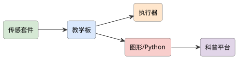
查看 PlantUML 源码
@startuml
skinparam defaultFontName "Microsoft YaHei"
skinparam rectangleRoundCorner 8
skinparam rectangleBorderColor #555
skinparam rectangleFontSize 13
skinparam arrowFontSize 11
skinparam arrowColor #333
left to right direction
rectangle "教学板" as board #dae8fc
rectangle "传感套件" as sense #d5e8d4
rectangle "执行器" as act #ffe6cc
rectangle "图形/Python" as code #f8cecc
rectangle "科普平台" as plat #e1d5e8
sense --> board
board --> act
board --> code
code --> plat
@enduml项目背景与应用场景
创客教育套件市场同质化严重（积木+主板+几个电机），真实问题：①套件买来后课程内容缺失（硬件有了没课可上）；②"创客"沦为拼装说明书（无创造空间）；③教师不会用（培训缺位）。本项目做"课程驱动的创客机器人套件"：以"先有课程再设计硬件"的顺序开发，核心交付物是一学期可开课的完整课程包+可持续的教师支持体系。
系统总体设计
硬件层（机器人底盘（差速+舵机云台）+ 主控（图形化/Python 双模式）+ 传感器组（循迹/超声/巡线/摄像头可选）+ 结构积木兼容件）→ 课程层（一学期 16 课包（每课：知识点+搭建任务+编程任务+挑战环节）+ 期末项目制考核）→ 软件层（图形化编程（入门）→Python 过渡（进阶）——同一套件完成编程进阶）→ 支持层（教师培训（线上课程+答疑群+学期教研）+ 备件补给包（耗材制度））。
硬件组成
Micro:bit/ESP32 教学板 + 传感器套件 + 执行器 + 图形化/Python + 科普平台。
实现方案
- 方案 A（科普教具）：以机器人套件做图形化/Python 编程科普，做中学。
- 方案 B（课程平台）：在方案 A 上加科普课程与作品分享平台。
详细实施步骤
- 第 1 步 课标与学情调研：对接中小学综合实践/信息科技课标；学情调研（目标学段的动手/编程基础分布）；与 3 名以上一线教师共建（课堂时间约束/班级规模/考核需求——课程包的约束条件来自课堂现实）；竞品课程包分析（同质化内容的空白点定位）。
- 第 2 步 套件硬件定义：课程反推硬件（每课需要什么传感器/执行器——先课程后 BOM，杜绝"硬件堆料没课用"）；结构设计（搭建自由度与稳固性的平衡——创造空间需要自由度，课堂可靠性需要稳固，取舍实测）；成本（<600 元/套，损坏率与备件成本计入总拥有成本）；双模式编程（图形化拖块→一键查看对应 Python 代码——进阶过渡的设计关键）。
- 第 3 步 课程包开发：16 课梯度（认识→运动控制→传感器→综合挑战→自由项目；每课 45 分钟内闭环）；每课五要素（情景导入/搭建/编程/挑战/拓展——挑战环节保证"完成了但没结束"的差异化空间，对抗说明书式拼装）；项目制考核方案（期末自由项目+答辩量规）。
- 第 4 步 编程软件适配：图形化引擎选型/自研评估；双模式切换体验打磨；仿真器（无硬件时仿真运行——课堂硬件不足的现实兜底）；作品分享（学生项目导出/展示墙——成就感设计）。
- 第 5 步 教师支持体系：培训课程（2 天集中+线上 12 讲）；教研社群（答疑+教案共创——教师可持续性的核心）；备件补给制度（易损件补给包+学期巡检清单——一学期后还能用的保障）；本地化支持（区域服务商模式论证——规模化路径）。
- 第 6 步 教学验证：2 所学校试点 1 学期：课程完成率、学生作品多样性（自由项目重合度——创造力指标，说明多样性而非统一作品）、学生兴趣留存（学期末 vs 学期初兴趣问卷）、教师可持续使用度（下学期是否继续开课——最真实的成功指标）；硬件一学期损坏率与备件消耗；成本核算（单生学期总成本）。
关键技术点
- 课程反推硬件的开发顺序（BOM 由课表决定）
- 挑战环节保证差异化空间（对抗说明书式拼装）
- 图形化→Python 一键过渡的进阶设计
- 仿真器兜底（课堂硬件不足的现实对策）
- 教师教研社群+备件补给（可持续开课的支撑体系）
难点与对策
- 课程包开发量大（内容工程常被低估） → 16 课 MVP 先行（8 课精修+8 课框架）；教师共创分担；迭代式开发
- 教师培训不到位则套件闲置 → 培训+教研社群+使用率为验收指标——"下学期还开课"为核心 KPI
- 硬件损坏与耗材持续投入 → 备件包制度；损坏率数据反哺结构加固；总拥有成本透明
- 与成熟商业套件竞争 → 课程质量与教师支持差异化（不是硬件参数）；试点实证数据背书
软件流程
任务发布 → 编程控制 → 硬件反馈 → 作品展示 → 分享。
创新点与拓展
创新点：开发顺序修正（先课程后硬件——行业普遍先卖硬件后补课的痛点反转）；挑战环节+自由项目量规的创造力保留设计；"下学期还开课"作为最真实成功指标的验证观；仿真器兜底+备件制度的教学现实工程。
拓展方向：竞赛套装（赛事对接）；AI 主题课包（视觉/语音进阶）；县域学校普惠版（成本下探）。
课程对接：Python语言程序设计、单片机原理及应用、物联网工程导论、移动应用开发、软件工程
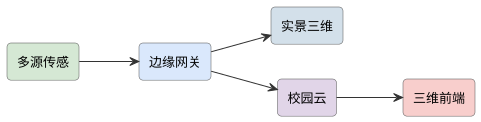
查看 PlantUML 源码
@startuml
skinparam defaultFontName "Microsoft YaHei"
skinparam rectangleRoundCorner 8
skinparam rectangleBorderColor #555
skinparam rectangleFontSize 13
skinparam arrowFontSize 11
skinparam arrowColor #333
left to right direction
rectangle "多源传感" as s #d5e8d4
rectangle "边缘网关" as edge #dae8fc
rectangle "实景三维" as tw #d3e0ea
rectangle "校园云" as cloud #e1d5e8
rectangle "三维前端" as web #f8cecc
s --> edge
edge --> tw
edge --> cloud
cloud --> web
@enduml项目背景与应用场景
校园管理的空间类需求分散（资产定位/场馆预约/导览/应急疏散），各自建系统重复投入。本项目以"一张图"整合：WebGIS 底座+实景三维重点建筑（照片建模/倾斜摄影简化方案——学生尺度做不了正规倾斜摄影，客观修正为"重点建筑手工建模+全景照片"），面向访客导览/资产/应急三场景。约束先讲：实景三维的合规（测绘数据敏感性——校园数据可自用但公开发布需注意测绘法规边界）。
系统总体设计
数据层（校园 GIS 底图（自绘矢量/无人机正射——无人机校园航拍合规说明）+ 重点建筑三维模型（手工白模+贴图+ 720° 全景）+ 业务数据（资产台账/场馆开放状态/POI））→ 服务层（开源 GIS 栈（GeoServer+PostGIS 或轻量 MapLibre）+ 三维展示（Three.js/Cesium 取舍——Cesium 重量级学习成本 vs Three.js 轻量灵活的选型论证））→ 应用层（①访客导览（路线规划+POI 搜索+全景漫游）②资产管理（设备定位地图+扫码档案——资产"上图"管理）③应急视图（疏散路线+监控点位标注+应急资源分布））→ 管理端（POI/资产/模型的内容维护后台——GIS 系统的死是数据不更新，维护流程是核心设计）。
硬件组成
边缘网关 + 多源传感 + 实景三维/WebGIS + 云平台 + 三维前端。
实现方案
- 方案 A（三维校园）：汇聚校园传感数据，WebGIS+实景三维呈现能耗/安防/人流。
- 方案 B（智能运营）：在方案 A 上做能耗优化与事件推演。
详细实施步骤
- 第 1 步 需求收敛与数据盘点：三场景优先级确认（与保卫处/资产处/宣传部门访谈——需求来自部门痛点不是拍脑袋）；数据盘点（现有 CAD 图/资产台账格式/监控点位——GIS 项目 70% 工作量在数据整理的现实预判）；合规评估（测绘地理信息规范：自绘示意性地图与实测地图的边界、公开发布的审查要求——合规结论写入方案）。
- 第 2 步 底图与三维制作：校园底图（MapLibre+自绘矢量（示意级精度——合规安全区）；重点建筑三维（Blender 白模+贴图+全景照片热点——学生可执行的简化方案，正规倾斜摄影的成本与合规如实说明）；三维性能预算（WebGL 加载 <5 s——模型面数/贴图优化的量化目标）。
- 第 3 步 WebGIS 平台搭建：技术选型（MapLibre vs Cesium 对比决策记录——三维需求深度决定）；POI/资产数据模型（空间字段+业务字段）；服务端（PostGIS 空间查询——附近设施/路线计算的空间 SQL）；权限（访客/师生/管理员的图层与数据分级——空间数据的权限设计）。
- 第 4 步 三场景实现：导览：搜索+路线（路径规划的简化实现（步行路网图+最短路）+全景嵌入）；资产：扫码绑定坐标→地图图层展示→一键报修流转；应急：疏散路线图层+应急资源（灭火器/AED）定位+一键导出打印版（应急场景要考虑断电断网时的纸质预案——真实的应急管理思维）。
- 第 5 步 数据维护机制：内容后台（POI/资产的增改界面——非技术人员可维护，否则系统半年就死）；数据更新流程（谁在什么节点更新——与资产处/保卫处的制度约定）；更新激励（资产盘点与地图核对的工作流合并——让维护融入现有工作而非新增负担）。
- 第 6 步 上线验证：试点 1 学期：访客导览使用量与满意度、资产上图覆盖率（账物一致率提升——资产处考核指标对接）、应急演练实测（疏散路线可读性/资源定位速度）、三维加载性能实测；部门使用反馈；数据新鲜度审计（半年后 POI 准确率——检验维护机制的真实有效性）。
关键技术点
- 部门痛点驱动的场景收敛与数据盘点先行（GIS 项目 70% 在数据）
- 示意级底图+手工建模+全景的合规安全区方案
- MapLibre vs Cesium 的选型决策记录
- 空间 SQL 的资产/路线业务实现
- 融入现有工作流的数据维护机制（对抗数据腐烂）
难点与对策
- 测绘合规风险（地图数据公开） → 示意级自绘底图；公开发布前审查；合规结论文档化
- 数据腐烂（半年后没人更新） → 维护流程制度化+融入盘点工作流；数据新鲜度审计指标
- 三维性能与工期失控 → 重点建筑限量（先 3~5 栋）；面数/贴图预算；Cesium 学习成本风险预案
- 多部门协调成本 → 分期交付（先单部门见效再扩展）；每期有独立可用价值
软件流程
多源采集 → 边缘汇聚 → 三维呈现 → 运营分析。
创新点与拓展
创新点："一张图"整合三场景的系统架构（反重复建设）；示意级底图+手工建模的测绘合规安全区方案（学生项目普遍忽略的法规边界）；数据维护流程制度化+新鲜度审计（GIS 系统头号死因的正面处理）；应急场景的断电断网纸质预案备份（真实应急管理思维）。
拓展方向：室内地图（教学楼内部导航）；物联传感上图（环境/能耗的空间化）；新生/访客小程序端。
课程对接：物联网工程导论、云计算导论、国产平台web应用开发、算法分析与设计、数据库系统原理